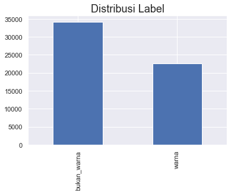
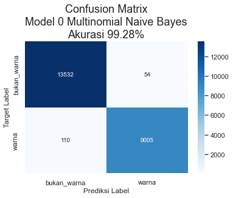
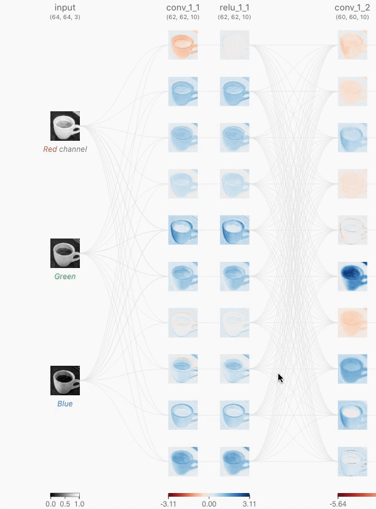
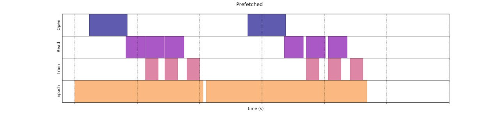
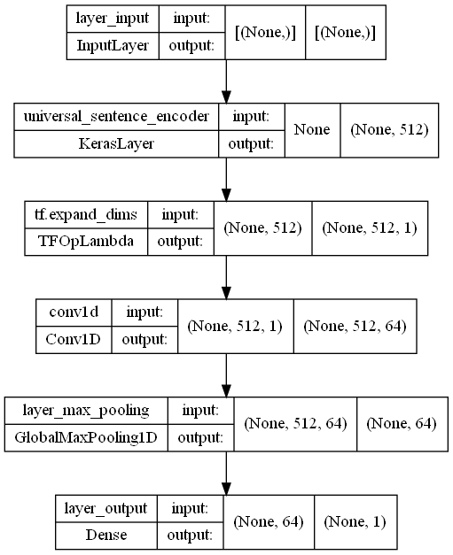
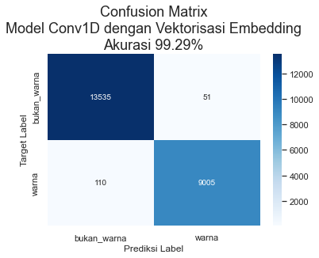
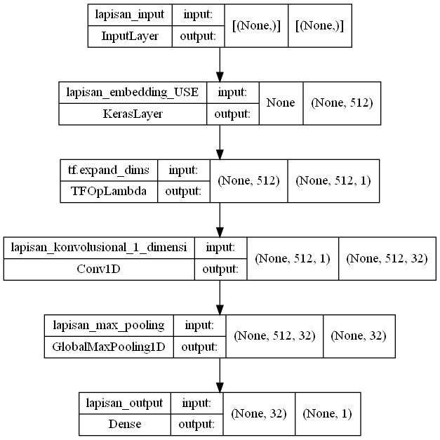
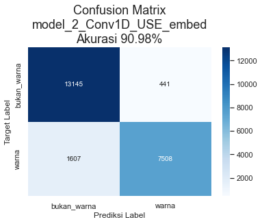

<!doctype html>
<html lang="id" class="no-js">
  <head>
    
      <meta charset="utf-8">
      <meta name="viewport" content="width=device-width,initial-scale=1">
      
      
      
        <link rel="canonical" href="https://colorskim.jpao.live/ColorSkim_AI/">
      
      <link rel="icon" href="../images/favicon.png">
      <meta name="generator" content="mkdocs-1.3.0, mkdocs-material-8.3.9">
    
    
      
        <title>Dokumentasi ColorSkim - ColorSkim AI Machine Learning</title>
      
    
    
      <link rel="stylesheet" href="../assets/stylesheets/main.1d29e8d0.min.css">
      
        
        <link rel="stylesheet" href="../assets/stylesheets/palette.cbb835fc.min.css">
        
          
          
          <meta name="theme-color" content="#009485">
        
      
      
    
    
    
      
        
        
        <link rel="preconnect" href="https://fonts.gstatic.com" crossorigin>
        <link rel="stylesheet" href="https://fonts.googleapis.com/css?family=Nunito:300,300i,400,400i,700,700i%7CJetBrains+Mono:400,400i,700,700i&display=fallback">
        <style>:root{--md-text-font:"Nunito";--md-code-font:"JetBrains Mono"}</style>
      
    
    
    <script>__md_scope=new URL("..",location),__md_get=(e,_=localStorage,t=__md_scope)=>JSON.parse(_.getItem(t.pathname+"."+e)),__md_set=(e,_,t=localStorage,a=__md_scope)=>{try{t.setItem(a.pathname+"."+e,JSON.stringify(_))}catch(e){}}</script>
    
      

    
    
  </head>
  
  
    
    
    
    
    
    <body dir="ltr" data-md-color-scheme="default" data-md-color-primary="teal" data-md-color-accent="teal">
  
    
    
    <input class="md-toggle" data-md-toggle="drawer" type="checkbox" id="__drawer" autocomplete="off">
    <input class="md-toggle" data-md-toggle="search" type="checkbox" id="__search" autocomplete="off">
    <label class="md-overlay" for="__drawer"></label>
    <div data-md-component="skip">
      
        
        <a href="#colorskim-machine-learning-ai" class="md-skip">
          Lewati ke isi
        </a>
      
    </div>
    <div data-md-component="announce">
      
    </div>
    
      <div data-md-component="outdated" hidden>
        <aside class="md-banner md-banner--warning">
          
        </aside>
      </div>
    
    
      

<header class="md-header" data-md-component="header">
  <nav class="md-header__inner md-grid" aria-label="Header">
    <a href=".." title="ColorSkim AI Machine Learning" class="md-header__button md-logo" aria-label="ColorSkim AI Machine Learning" data-md-component="logo">
      
  
  <svg xmlns="http://www.w3.org/2000/svg" viewBox="0 0 640 512"><!--! Font Awesome Free 6.1.1 by @fontawesome - https://fontawesome.com License - https://fontawesome.com/license/free (Icons: CC BY 4.0, Fonts: SIL OFL 1.1, Code: MIT License) Copyright 2022 Fonticons, Inc.--><path d="M9.375 233.4C3.375 239.4 0 247.5 0 256v128c0 8.5 3.375 16.62 9.375 22.62S23.5 416 32 416h32V224H32c-8.5 0-16.62 3.4-22.625 9.4zM464 96H352V32c0-17.62-14.38-32-32-32s-32 14.38-32 32v64H176c-44.2 0-80 35.8-80 80v272c0 35.38 28.62 64 64 64h320c35.38 0 64-28.62 64-64V176c0-44.2-35.7-80-80-80zM256 416h-64v-32h64v32zm-32-120c-22.1 0-40-17.9-40-40s17.9-40 40-40 40 17.9 40 40-17.9 40-40 40zm128 120h-64v-32h64v32zm96 0h-64v-32h64v32zm-32-120c-22.12 0-40-17.88-40-40s17.9-40 40-40 40 17.9 40 40-17.9 40-40 40zm214.6-62.6c-6-6-14.1-9.4-22.6-9.4h-32v192h32c8.5 0 16.62-3.375 22.62-9.375S640 392.5 640 384V256c0-8.5-3.4-16.6-9.4-22.6z"/></svg>

    </a>
    <label class="md-header__button md-icon" for="__drawer">
      <svg xmlns="http://www.w3.org/2000/svg" viewBox="0 0 24 24"><path d="M3 6h18v2H3V6m0 5h18v2H3v-2m0 5h18v2H3v-2Z"/></svg>
    </label>
    <div class="md-header__title" data-md-component="header-title">
      <div class="md-header__ellipsis">
        <div class="md-header__topic">
          <span class="md-ellipsis">
            ColorSkim AI Machine Learning
          </span>
        </div>
        <div class="md-header__topic" data-md-component="header-topic">
          <span class="md-ellipsis">
            
              Dokumentasi ColorSkim
            
          </span>
        </div>
      </div>
    </div>
    
    
    
      <label class="md-header__button md-icon" for="__search">
        <svg xmlns="http://www.w3.org/2000/svg" viewBox="0 0 24 24"><path d="M9.5 3A6.5 6.5 0 0 1 16 9.5c0 1.61-.59 3.09-1.56 4.23l.27.27h.79l5 5-1.5 1.5-5-5v-.79l-.27-.27A6.516 6.516 0 0 1 9.5 16 6.5 6.5 0 0 1 3 9.5 6.5 6.5 0 0 1 9.5 3m0 2C7 5 5 7 5 9.5S7 14 9.5 14 14 12 14 9.5 12 5 9.5 5Z"/></svg>
      </label>
      <div class="md-search" data-md-component="search" role="dialog">
  <label class="md-search__overlay" for="__search"></label>
  <div class="md-search__inner" role="search">
    <form class="md-search__form" name="search">
      <input type="text" class="md-search__input" name="query" aria-label="Cari" placeholder="Cari" autocapitalize="off" autocorrect="off" autocomplete="off" spellcheck="false" data-md-component="search-query" required>
      <label class="md-search__icon md-icon" for="__search">
        <svg xmlns="http://www.w3.org/2000/svg" viewBox="0 0 24 24"><path d="M9.5 3A6.5 6.5 0 0 1 16 9.5c0 1.61-.59 3.09-1.56 4.23l.27.27h.79l5 5-1.5 1.5-5-5v-.79l-.27-.27A6.516 6.516 0 0 1 9.5 16 6.5 6.5 0 0 1 3 9.5 6.5 6.5 0 0 1 9.5 3m0 2C7 5 5 7 5 9.5S7 14 9.5 14 14 12 14 9.5 12 5 9.5 5Z"/></svg>
        <svg xmlns="http://www.w3.org/2000/svg" viewBox="0 0 24 24"><path d="M20 11v2H8l5.5 5.5-1.42 1.42L4.16 12l7.92-7.92L13.5 5.5 8 11h12Z"/></svg>
      </label>
      <nav class="md-search__options" aria-label="Search">
        
        <button type="reset" class="md-search__icon md-icon" aria-label="Clear" tabindex="-1">
          <svg xmlns="http://www.w3.org/2000/svg" viewBox="0 0 24 24"><path d="M19 6.41 17.59 5 12 10.59 6.41 5 5 6.41 10.59 12 5 17.59 6.41 19 12 13.41 17.59 19 19 17.59 13.41 12 19 6.41Z"/></svg>
        </button>
      </nav>
      
    </form>
    <div class="md-search__output">
      <div class="md-search__scrollwrap" data-md-scrollfix>
        <div class="md-search-result" data-md-component="search-result">
          <div class="md-search-result__meta">
            Initializing search
          </div>
          <ol class="md-search-result__list"></ol>
        </div>
      </div>
    </div>
  </div>
</div>
    
    
      <div class="md-header__source">
        <a href="https://github.com/johanesPao/ColorSkim" title="Menuju repositori" class="md-source" data-md-component="source">
  <div class="md-source__icon md-icon">
    
    <svg xmlns="http://www.w3.org/2000/svg" viewBox="0 0 448 512"><!--! Font Awesome Free 6.1.1 by @fontawesome - https://fontawesome.com License - https://fontawesome.com/license/free (Icons: CC BY 4.0, Fonts: SIL OFL 1.1, Code: MIT License) Copyright 2022 Fonticons, Inc.--><path d="M439.55 236.05 244 40.45a28.87 28.87 0 0 0-40.81 0l-40.66 40.63 51.52 51.52c27.06-9.14 52.68 16.77 43.39 43.68l49.66 49.66c34.23-11.8 61.18 31 35.47 56.69-26.49 26.49-70.21-2.87-56-37.34L240.22 199v121.85c25.3 12.54 22.26 41.85 9.08 55a34.34 34.34 0 0 1-48.55 0c-17.57-17.6-11.07-46.91 11.25-56v-123c-20.8-8.51-24.6-30.74-18.64-45L142.57 101 8.45 235.14a28.86 28.86 0 0 0 0 40.81l195.61 195.6a28.86 28.86 0 0 0 40.8 0l194.69-194.69a28.86 28.86 0 0 0 0-40.81z"/></svg>
  </div>
  <div class="md-source__repository">
    johanesPao/ColorSkim
  </div>
</a>
      </div>
    
  </nav>
  
</header>
    
    <div class="md-container" data-md-component="container">
      
      
        
          
        
      
      <main class="md-main" data-md-component="main">
        <div class="md-main__inner md-grid">
          
            
              
              <div class="md-sidebar md-sidebar--primary" data-md-component="sidebar" data-md-type="navigation" >
                <div class="md-sidebar__scrollwrap">
                  <div class="md-sidebar__inner">
                    


  

<nav class="md-nav md-nav--primary md-nav--integrated" aria-label="Navigation" data-md-level="0">
  <label class="md-nav__title" for="__drawer">
    <a href=".." title="ColorSkim AI Machine Learning" class="md-nav__button md-logo" aria-label="ColorSkim AI Machine Learning" data-md-component="logo">
      
  
  <svg xmlns="http://www.w3.org/2000/svg" viewBox="0 0 640 512"><!--! Font Awesome Free 6.1.1 by @fontawesome - https://fontawesome.com License - https://fontawesome.com/license/free (Icons: CC BY 4.0, Fonts: SIL OFL 1.1, Code: MIT License) Copyright 2022 Fonticons, Inc.--><path d="M9.375 233.4C3.375 239.4 0 247.5 0 256v128c0 8.5 3.375 16.62 9.375 22.62S23.5 416 32 416h32V224H32c-8.5 0-16.62 3.4-22.625 9.4zM464 96H352V32c0-17.62-14.38-32-32-32s-32 14.38-32 32v64H176c-44.2 0-80 35.8-80 80v272c0 35.38 28.62 64 64 64h320c35.38 0 64-28.62 64-64V176c0-44.2-35.7-80-80-80zM256 416h-64v-32h64v32zm-32-120c-22.1 0-40-17.9-40-40s17.9-40 40-40 40 17.9 40 40-17.9 40-40 40zm128 120h-64v-32h64v32zm96 0h-64v-32h64v32zm-32-120c-22.12 0-40-17.88-40-40s17.9-40 40-40 40 17.9 40 40-17.9 40-40 40zm214.6-62.6c-6-6-14.1-9.4-22.6-9.4h-32v192h32c8.5 0 16.62-3.375 22.62-9.375S640 392.5 640 384V256c0-8.5-3.4-16.6-9.4-22.6z"/></svg>

    </a>
    ColorSkim AI Machine Learning
  </label>
  
    <div class="md-nav__source">
      <a href="https://github.com/johanesPao/ColorSkim" title="Menuju repositori" class="md-source" data-md-component="source">
  <div class="md-source__icon md-icon">
    
    <svg xmlns="http://www.w3.org/2000/svg" viewBox="0 0 448 512"><!--! Font Awesome Free 6.1.1 by @fontawesome - https://fontawesome.com License - https://fontawesome.com/license/free (Icons: CC BY 4.0, Fonts: SIL OFL 1.1, Code: MIT License) Copyright 2022 Fonticons, Inc.--><path d="M439.55 236.05 244 40.45a28.87 28.87 0 0 0-40.81 0l-40.66 40.63 51.52 51.52c27.06-9.14 52.68 16.77 43.39 43.68l49.66 49.66c34.23-11.8 61.18 31 35.47 56.69-26.49 26.49-70.21-2.87-56-37.34L240.22 199v121.85c25.3 12.54 22.26 41.85 9.08 55a34.34 34.34 0 0 1-48.55 0c-17.57-17.6-11.07-46.91 11.25-56v-123c-20.8-8.51-24.6-30.74-18.64-45L142.57 101 8.45 235.14a28.86 28.86 0 0 0 0 40.81l195.61 195.6a28.86 28.86 0 0 0 40.8 0l194.69-194.69a28.86 28.86 0 0 0 0-40.81z"/></svg>
  </div>
  <div class="md-source__repository">
    johanesPao/ColorSkim
  </div>
</a>
    </div>
  
  <ul class="md-nav__list" data-md-scrollfix>
    
      
      
      

  
  
  
    <li class="md-nav__item">
      <a href=".." class="md-nav__link">
        Permasalahan dan Objektif
      </a>
    </li>
  

    
      
      
      

  
  
    
  
  
    <li class="md-nav__item md-nav__item--active">
      
      <input class="md-nav__toggle md-toggle" data-md-toggle="toc" type="checkbox" id="__toc">
      
      
        
      
      
        <label class="md-nav__link md-nav__link--active" for="__toc">
          Dokumentasi ColorSkim
          <span class="md-nav__icon md-icon"></span>
        </label>
      
      <a href="./" class="md-nav__link md-nav__link--active">
        Dokumentasi ColorSkim
      </a>
      
        

<nav class="md-nav md-nav--secondary" aria-label="Daftar isi">
  
  
  
    
  
  
    <label class="md-nav__title" for="__toc">
      <span class="md-nav__icon md-icon"></span>
      Daftar isi
    </label>
    <ul class="md-nav__list" data-md-component="toc" data-md-scrollfix>
      
        <li class="md-nav__item">
  <a href="#variabel-global" class="md-nav__link">
    Variabel Global
  </a>
  
</li>
      
        <li class="md-nav__item">
  <a href="#callbacks" class="md-nav__link">
    Callbacks
  </a>
  
</li>
      
        <li class="md-nav__item">
  <a href="#data" class="md-nav__link">
    Data
  </a>
  
    <nav class="md-nav" aria-label="Data">
      <ul class="md-nav__list">
        
          <li class="md-nav__item">
  <a href="#eksplorasi-data" class="md-nav__link">
    Eksplorasi Data
  </a>
  
</li>
        
          <li class="md-nav__item">
  <a href="#konversi-fitur-dan-label-ke-dalam-numerik" class="md-nav__link">
    Konversi Fitur dan Label ke dalam numerik
  </a>
  
</li>
        
          <li class="md-nav__item">
  <a href="#konversi-data-ke-dalam-train-dan-test-untuk-model-0" class="md-nav__link">
    Konversi Data ke dalam Train dan Test untuk Model 0
  </a>
  
</li>
        
      </ul>
    </nav>
  
</li>
      
        <li class="md-nav__item">
  <a href="#model-0-model-dasar" class="md-nav__link">
    Model 0: Model Dasar
  </a>
  
    <nav class="md-nav" aria-label="Model 0: Model Dasar">
      <ul class="md-nav__list">
        
          <li class="md-nav__item">
  <a href="#eksplorasi-hasil-model-0" class="md-nav__link">
    Eksplorasi Hasil Model 0
  </a>
  
</li>
        
      </ul>
    </nav>
  
</li>
      
        <li class="md-nav__item">
  <a href="#model-1-conv1d-dengan-embedding" class="md-nav__link">
    Model 1: Conv1D dengan Embedding
  </a>
  
    <nav class="md-nav" aria-label="Model 1: Conv1D dengan Embedding">
      <ul class="md-nav__list">
        
          <li class="md-nav__item">
  <a href="#vektorisasi-dan-embedding-kata" class="md-nav__link">
    Vektorisasi dan Embedding Kata
  </a>
  
    <nav class="md-nav" aria-label="Vektorisasi dan Embedding Kata">
      <ul class="md-nav__list">
        
          <li class="md-nav__item">
  <a href="#membuat-lapisan-vektorisasi-kata" class="md-nav__link">
    Membuat Lapisan Vektorisasi Kata
  </a>
  
</li>
        
          <li class="md-nav__item">
  <a href="#membuat-lapisan-text-embedding" class="md-nav__link">
    Membuat Lapisan Text Embedding
  </a>
  
</li>
        
      </ul>
    </nav>
  
</li>
        
          <li class="md-nav__item">
  <a href="#membuat-tensorflow-dataset-batching-dan-prefetching" class="md-nav__link">
    Membuat TensorFlow Dataset, Batching dan Prefetching
  </a>
  
</li>
        
          <li class="md-nav__item">
  <a href="#membangun-dan-menjalankan-training-model-1" class="md-nav__link">
    Membangun dan Menjalankan Training Model 1
  </a>
  
</li>
        
          <li class="md-nav__item">
  <a href="#eksplorasi-hasil-model-1" class="md-nav__link">
    Eksplorasi Hasil Model 1
  </a>
  
</li>
        
      </ul>
    </nav>
  
</li>
      
        <li class="md-nav__item">
  <a href="#model-2-transfer-learning-pretrained-feature-exraction-menggunakan-universal-sentence-encoder-use" class="md-nav__link">
    Model 2: Transfer Learning pretrained feature exraction menggunakan Universal Sentence Encoder (USE)
  </a>
  
    <nav class="md-nav" aria-label="Model 2: Transfer Learning pretrained feature exraction menggunakan Universal Sentence Encoder (USE)">
      <ul class="md-nav__list">
        
          <li class="md-nav__item">
  <a href="#membangun-dan-menjalankan-training-model-2" class="md-nav__link">
    Membangun dan Menjalankan Training Model 2
  </a>
  
</li>
        
          <li class="md-nav__item">
  <a href="#eksplorasi-hasil-model-2" class="md-nav__link">
    Eksplorasi Hasil Model 2
  </a>
  
</li>
        
      </ul>
    </nav>
  
</li>
      
        <li class="md-nav__item">
  <a href="#model-3-menggunakan-posisi-kata-tipe-brand-dan-lapisan-embed-custom-yang-diconcatenate" class="md-nav__link">
    Model 3: Menggunakan Posisi Kata, Tipe Brand dan Lapisan Embed Custom yang diconcatenate
  </a>
  
    <nav class="md-nav" aria-label="Model 3: Menggunakan Posisi Kata, Tipe Brand dan Lapisan Embed Custom yang diconcatenate">
      <ul class="md-nav__list">
        
          <li class="md-nav__item">
  <a href="#preprocessing-urut_kata-dan-total_kata" class="md-nav__link">
    Preprocessing 'urut_kata' dan 'total_kata'
  </a>
  
</li>
        
      </ul>
    </nav>
  
</li>
      
    </ul>
  
</nav>
      
    </li>
  

    
  </ul>
</nav>
                  </div>
                </div>
              </div>
            
            
          
          <div class="md-content" data-md-component="content">
            <article class="md-content__inner md-typeset">
              
                
  <a href="https://github.com/johanesPao/ColorSkim/edit/master/docs/ColorSkim_AI.md" title="Ubah halaman ini" class="md-content__button md-icon">
    <svg xmlns="http://www.w3.org/2000/svg" viewBox="0 0 24 24"><path d="M20.71 7.04c.39-.39.39-1.04 0-1.41l-2.34-2.34c-.37-.39-1.02-.39-1.41 0l-1.84 1.83 3.75 3.75M3 17.25V21h3.75L17.81 9.93l-3.75-3.75L3 17.25Z"/></svg>
  </a>


<h1 id="colorskim-machine-learning-ai">ColorSkim Machine Learning AI</h1>
<div class="highlight"><table class="highlighttable"><tr><td class="linenos"><div class="linenodiv"><pre><span></span><span class="normal"><a href="#__codelineno-0-1"> 1</a></span>
<span class="normal"><a href="#__codelineno-0-2"> 2</a></span>
<span class="normal"><a href="#__codelineno-0-3"> 3</a></span>
<span class="normal"><a href="#__codelineno-0-4"> 4</a></span>
<span class="normal"><a href="#__codelineno-0-5"> 5</a></span>
<span class="normal"><a href="#__codelineno-0-6"> 6</a></span>
<span class="normal"><a href="#__codelineno-0-7"> 7</a></span>
<span class="normal"><a href="#__codelineno-0-8"> 8</a></span>
<span class="normal"><a href="#__codelineno-0-9"> 9</a></span>
<span class="normal"><a href="#__codelineno-0-10">10</a></span>
<span class="normal"><a href="#__codelineno-0-11">11</a></span>
<span class="normal"><a href="#__codelineno-0-12">12</a></span>
<span class="normal"><a href="#__codelineno-0-13">13</a></span>
<span class="normal"><a href="#__codelineno-0-14">14</a></span>
<span class="normal"><a href="#__codelineno-0-15">15</a></span>
<span class="normal"><a href="#__codelineno-0-16">16</a></span>
<span class="normal"><a href="#__codelineno-0-17">17</a></span>
<span class="normal"><a href="#__codelineno-0-18">18</a></span>
<span class="normal"><a href="#__codelineno-0-19">19</a></span>
<span class="normal"><a href="#__codelineno-0-20">20</a></span>
<span class="normal"><a href="#__codelineno-0-21">21</a></span>
<span class="normal"><a href="#__codelineno-0-22">22</a></span>
<span class="normal"><a href="#__codelineno-0-23">23</a></span>
<span class="normal"><a href="#__codelineno-0-24">24</a></span>
<span class="normal"><a href="#__codelineno-0-25">25</a></span>
<span class="normal"><a href="#__codelineno-0-26">26</a></span>
<span class="normal"><a href="#__codelineno-0-27">27</a></span>
<span class="normal"><a href="#__codelineno-0-28">28</a></span>
<span class="normal"><a href="#__codelineno-0-29">29</a></span>
<span class="normal"><a href="#__codelineno-0-30">30</a></span>
<span class="normal"><a href="#__codelineno-0-31">31</a></span>
<span class="normal"><a href="#__codelineno-0-32">32</a></span>
<span class="normal"><a href="#__codelineno-0-33">33</a></span>
<span class="normal"><a href="#__codelineno-0-34">34</a></span>
<span class="normal"><a href="#__codelineno-0-35">35</a></span>
<span class="normal"><a href="#__codelineno-0-36">36</a></span>
<span class="normal"><a href="#__codelineno-0-37">37</a></span>
<span class="normal"><a href="#__codelineno-0-38">38</a></span>
<span class="normal"><a href="#__codelineno-0-39">39</a></span>
<span class="normal"><a href="#__codelineno-0-40">40</a></span>
<span class="normal"><a href="#__codelineno-0-41">41</a></span>
<span class="normal"><a href="#__codelineno-0-42">42</a></span>
<span class="normal"><a href="#__codelineno-0-43">43</a></span>
<span class="normal"><a href="#__codelineno-0-44">44</a></span>
<span class="normal"><a href="#__codelineno-0-45">45</a></span>
<span class="normal"><a href="#__codelineno-0-46">46</a></span>
<span class="normal"><a href="#__codelineno-0-47">47</a></span>
<span class="normal"><a href="#__codelineno-0-48">48</a></span>
<span class="normal"><a href="#__codelineno-0-49">49</a></span>
<span class="normal"><a href="#__codelineno-0-50">50</a></span>
<span class="normal"><a href="#__codelineno-0-51">51</a></span>
<span class="normal"><a href="#__codelineno-0-52">52</a></span>
<span class="normal"><a href="#__codelineno-0-53">53</a></span>
<span class="normal"><a href="#__codelineno-0-54">54</a></span>
<span class="normal"><a href="#__codelineno-0-55">55</a></span>
<span class="normal"><a href="#__codelineno-0-56">56</a></span>
<span class="normal"><a href="#__codelineno-0-57">57</a></span>
<span class="normal"><a href="#__codelineno-0-58">58</a></span>
<span class="normal"><a href="#__codelineno-0-59">59</a></span>
<span class="normal"><a href="#__codelineno-0-60">60</a></span>
<span class="normal"><a href="#__codelineno-0-61">61</a></span>
<span class="normal"><a href="#__codelineno-0-62">62</a></span>
<span class="normal"><a href="#__codelineno-0-63">63</a></span>
<span class="normal"><a href="#__codelineno-0-64">64</a></span>
<span class="normal"><a href="#__codelineno-0-65">65</a></span>
<span class="normal"><a href="#__codelineno-0-66">66</a></span>
<span class="normal"><a href="#__codelineno-0-67">67</a></span>
<span class="normal"><a href="#__codelineno-0-68">68</a></span>
<span class="normal"><a href="#__codelineno-0-69">69</a></span>
<span class="normal"><a href="#__codelineno-0-70">70</a></span>
<span class="normal"><a href="#__codelineno-0-71">71</a></span>
<span class="normal"><a href="#__codelineno-0-72">72</a></span>
<span class="normal"><a href="#__codelineno-0-73">73</a></span>
<span class="normal"><a href="#__codelineno-0-74">74</a></span>
<span class="normal"><a href="#__codelineno-0-75">75</a></span></pre></div></td><td class="code"><div><pre><span></span><code><a id="__codelineno-0-1" name="__codelineno-0-1"></a><span class="c1"># import modul dasar⁡⁡</span>
<a id="__codelineno-0-2" name="__codelineno-0-2"></a><span class="kn">import</span> <span class="nn">os</span>
<a id="__codelineno-0-3" name="__codelineno-0-3"></a><span class="kn">import</span> <span class="nn">random</span>
<a id="__codelineno-0-4" name="__codelineno-0-4"></a><span class="kn">import</span> <span class="nn">gc</span> <span class="c1">#garbage collector</span>
<a id="__codelineno-0-5" name="__codelineno-0-5"></a>
<a id="__codelineno-0-6" name="__codelineno-0-6"></a><span class="c1"># import pandas, numpy dan tensorflow⁡</span>
<a id="__codelineno-0-7" name="__codelineno-0-7"></a><span class="kn">import</span> <span class="nn">pandas</span> <span class="k">as</span> <span class="nn">pd</span>
<a id="__codelineno-0-8" name="__codelineno-0-8"></a><span class="kn">import</span> <span class="nn">numpy</span> <span class="k">as</span> <span class="nn">np</span>
<a id="__codelineno-0-9" name="__codelineno-0-9"></a><span class="kn">import</span> <span class="nn">tensorflow</span> <span class="k">as</span> <span class="nn">tf</span>
<a id="__codelineno-0-10" name="__codelineno-0-10"></a>
<a id="__codelineno-0-11" name="__codelineno-0-11"></a><span class="c1"># import daftar device terdeteksi oleh tensorflow</span>
<a id="__codelineno-0-12" name="__codelineno-0-12"></a><span class="kn">from</span> <span class="nn">tensorflow.python.client.device_lib</span> <span class="kn">import</span> <span class="n">list_local_devices</span>
<a id="__codelineno-0-13" name="__codelineno-0-13"></a>
<a id="__codelineno-0-14" name="__codelineno-0-14"></a><span class="c1"># import utilitas umum tensorflow</span>
<a id="__codelineno-0-15" name="__codelineno-0-15"></a><span class="kn">from</span> <span class="nn">tensorflow.config</span> <span class="kn">import</span> <span class="n">run_functions_eagerly</span> <span class="c1"># type: ignore</span>
<a id="__codelineno-0-16" name="__codelineno-0-16"></a><span class="kn">from</span> <span class="nn">tensorflow.data.experimental</span> <span class="kn">import</span> <span class="n">enable_debug_mode</span> <span class="c1"># type: ignore</span>
<a id="__codelineno-0-17" name="__codelineno-0-17"></a>
<a id="__codelineno-0-18" name="__codelineno-0-18"></a><span class="c1"># import pembuatan dataset</span>
<a id="__codelineno-0-19" name="__codelineno-0-19"></a><span class="kn">from</span> <span class="nn">sklearn.model_selection</span> <span class="kn">import</span> <span class="n">train_test_split</span>
<a id="__codelineno-0-20" name="__codelineno-0-20"></a><span class="sd">&quot;&quot;&quot;</span>
<a id="__codelineno-0-21" name="__codelineno-0-21"></a><span class="sd">karena struktur objek dalam tf.data.Dataset, from_tensor_slices() </span>
<a id="__codelineno-0-22" name="__codelineno-0-22"></a><span class="sd">tidak dapat dipanggil secara langsung dalam modul import</span>
<a id="__codelineno-0-23" name="__codelineno-0-23"></a><span class="sd">&quot;&quot;&quot;</span>
<a id="__codelineno-0-24" name="__codelineno-0-24"></a><span class="n">from_tensor_slices</span> <span class="o">=</span> <span class="n">tf</span><span class="o">.</span><span class="n">data</span><span class="o">.</span><span class="n">Dataset</span><span class="o">.</span><span class="n">from_tensor_slices</span>
<a id="__codelineno-0-25" name="__codelineno-0-25"></a>
<a id="__codelineno-0-26" name="__codelineno-0-26"></a><span class="c1"># import preprocessing data</span>
<a id="__codelineno-0-27" name="__codelineno-0-27"></a><span class="kn">from</span> <span class="nn">sklearn.preprocessing</span> <span class="kn">import</span> <span class="n">OneHotEncoder</span><span class="p">,</span> <span class="n">LabelEncoder</span>
<a id="__codelineno-0-28" name="__codelineno-0-28"></a><span class="kn">import</span> <span class="nn">tensorflow_hub</span> <span class="k">as</span> <span class="nn">hub</span>
<a id="__codelineno-0-29" name="__codelineno-0-29"></a>
<a id="__codelineno-0-30" name="__codelineno-0-30"></a>
<a id="__codelineno-0-31" name="__codelineno-0-31"></a><span class="c1"># import pipeline scikit untuk model_0</span>
<a id="__codelineno-0-32" name="__codelineno-0-32"></a><span class="kn">from</span> <span class="nn">sklearn.pipeline</span> <span class="kn">import</span> <span class="n">Pipeline</span>
<a id="__codelineno-0-33" name="__codelineno-0-33"></a>
<a id="__codelineno-0-34" name="__codelineno-0-34"></a><span class="c1"># import layer neural network</span>
<a id="__codelineno-0-35" name="__codelineno-0-35"></a><span class="kn">from</span> <span class="nn">sklearn.feature_extraction.text</span> <span class="kn">import</span> <span class="n">TfidfVectorizer</span>
<a id="__codelineno-0-36" name="__codelineno-0-36"></a><span class="kn">from</span> <span class="nn">sklearn.naive_bayes</span> <span class="kn">import</span> <span class="n">MultinomialNB</span>
<a id="__codelineno-0-37" name="__codelineno-0-37"></a><span class="kn">from</span> <span class="nn">tensorflow.keras.layers</span> <span class="kn">import</span> <span class="n">Input</span><span class="p">,</span> <span class="n">Conv1D</span><span class="p">,</span> <span class="n">Dense</span><span class="p">,</span> <span class="n">GlobalMaxPooling1D</span><span class="c1"># type: ignore</span>
<a id="__codelineno-0-38" name="__codelineno-0-38"></a><span class="kn">from</span> <span class="nn">tensorflow.keras.layers</span> <span class="kn">import</span> <span class="n">TextVectorization</span> <span class="c1"># type: ignore</span>
<a id="__codelineno-0-39" name="__codelineno-0-39"></a><span class="kn">from</span> <span class="nn">tensorflow.keras.layers</span> <span class="kn">import</span> <span class="n">Embedding</span> <span class="c1"># type: ignore</span>
<a id="__codelineno-0-40" name="__codelineno-0-40"></a>
<a id="__codelineno-0-41" name="__codelineno-0-41"></a><span class="c1"># import fungsi loss dan optimizer</span>
<a id="__codelineno-0-42" name="__codelineno-0-42"></a><span class="kn">from</span> <span class="nn">tensorflow.keras.losses</span> <span class="kn">import</span> <span class="n">BinaryCrossentropy</span> <span class="c1"># type: ignore</span>
<a id="__codelineno-0-43" name="__codelineno-0-43"></a><span class="kn">from</span> <span class="nn">tensorflow.keras.optimizers</span> <span class="kn">import</span> <span class="n">Adam</span> <span class="c1"># type: ignore</span>
<a id="__codelineno-0-44" name="__codelineno-0-44"></a>
<a id="__codelineno-0-45" name="__codelineno-0-45"></a><span class="c1"># import model Functional API tensorflow</span>
<a id="__codelineno-0-46" name="__codelineno-0-46"></a><span class="kn">from</span> <span class="nn">tensorflow.keras</span> <span class="kn">import</span> <span class="n">Model</span> <span class="c1"># type: ignore</span>
<a id="__codelineno-0-47" name="__codelineno-0-47"></a>
<a id="__codelineno-0-48" name="__codelineno-0-48"></a><span class="c1"># import callbacks untuk tensorflow</span>
<a id="__codelineno-0-49" name="__codelineno-0-49"></a><span class="kn">from</span> <span class="nn">tensorflow.keras.callbacks</span> <span class="kn">import</span> <span class="n">ModelCheckpoint</span><span class="p">,</span> <span class="n">EarlyStopping</span><span class="p">,</span> <span class="n">ReduceLROnPlateau</span> <span class="c1"># type: ignore</span>
<a id="__codelineno-0-50" name="__codelineno-0-50"></a>
<a id="__codelineno-0-51" name="__codelineno-0-51"></a><span class="c1"># import model terbaik, metriks dan alat evaluasi</span>
<a id="__codelineno-0-52" name="__codelineno-0-52"></a><span class="kn">from</span> <span class="nn">sklearn.metrics</span> <span class="kn">import</span> <span class="n">accuracy_score</span><span class="p">,</span> <span class="n">precision_recall_fscore_support</span><span class="p">,</span> <span class="n">confusion_matrix</span>
<a id="__codelineno-0-53" name="__codelineno-0-53"></a><span class="kn">from</span> <span class="nn">tensorflow.keras.models</span> <span class="kn">import</span> <span class="n">load_model</span> <span class="c1"># type: ignore</span>
<a id="__codelineno-0-54" name="__codelineno-0-54"></a>
<a id="__codelineno-0-55" name="__codelineno-0-55"></a><span class="c1"># import grafik</span>
<a id="__codelineno-0-56" name="__codelineno-0-56"></a><span class="kn">import</span> <span class="nn">matplotlib.pyplot</span> <span class="k">as</span> <span class="nn">plt</span>
<a id="__codelineno-0-57" name="__codelineno-0-57"></a><span class="kn">import</span> <span class="nn">seaborn</span> <span class="k">as</span> <span class="nn">sns</span>
<a id="__codelineno-0-58" name="__codelineno-0-58"></a><span class="kn">from</span> <span class="nn">tensorflow.keras.utils</span> <span class="kn">import</span> <span class="n">plot_model</span> <span class="c1"># type: ignore</span>
<a id="__codelineno-0-59" name="__codelineno-0-59"></a>
<a id="__codelineno-0-60" name="__codelineno-0-60"></a><span class="c1"># import display untuk menampilkan dataframe berdasar settingan tertentu (situasional)</span>
<a id="__codelineno-0-61" name="__codelineno-0-61"></a><span class="kn">from</span> <span class="nn">IPython.display</span> <span class="kn">import</span> <span class="n">display</span>
<a id="__codelineno-0-62" name="__codelineno-0-62"></a>
<a id="__codelineno-0-63" name="__codelineno-0-63"></a><span class="c1"># import library log untuk training</span>
<a id="__codelineno-0-64" name="__codelineno-0-64"></a><span class="kn">import</span> <span class="nn">wandb</span> <span class="k">as</span> <span class="nn">wb</span>
<a id="__codelineno-0-65" name="__codelineno-0-65"></a><span class="kn">from</span> <span class="nn">wandb.keras</span> <span class="kn">import</span> <span class="n">WandbCallback</span>
<a id="__codelineno-0-66" name="__codelineno-0-66"></a>
<a id="__codelineno-0-67" name="__codelineno-0-67"></a><span class="c1"># import kunci untuk login wandb</span>
<a id="__codelineno-0-68" name="__codelineno-0-68"></a><span class="kn">from</span> <span class="nn">rahasia</span> <span class="kn">import</span> <span class="n">API_KEY_WANDB</span> <span class="c1"># type: ignore</span>
<a id="__codelineno-0-69" name="__codelineno-0-69"></a>
<a id="__codelineno-0-70" name="__codelineno-0-70"></a><span class="c1"># set output tensorflow</span>
<a id="__codelineno-0-71" name="__codelineno-0-71"></a><span class="n">run_functions_eagerly</span><span class="p">(</span><span class="kc">True</span><span class="p">)</span>
<a id="__codelineno-0-72" name="__codelineno-0-72"></a><span class="n">enable_debug_mode</span><span class="p">()</span>
<a id="__codelineno-0-73" name="__codelineno-0-73"></a>
<a id="__codelineno-0-74" name="__codelineno-0-74"></a><span class="c1"># set matplotlib untuk menggunakan tampilan seaborn</span>
<a id="__codelineno-0-75" name="__codelineno-0-75"></a><span class="n">sns</span><span class="o">.</span><span class="n">set</span><span class="p">()</span>
</code></pre></div></td></tr></table></div>
<div class="highlight"><table class="highlighttable"><tr><td class="linenos"><div class="linenodiv"><pre><span></span><span class="normal"><a href="#__codelineno-1-1">1</a></span>
<span class="normal"><a href="#__codelineno-1-2">2</a></span>
<span class="normal"><a href="#__codelineno-1-3">3</a></span>
<span class="normal"><a href="#__codelineno-1-4">4</a></span></pre></div></td><td class="code"><div><pre><span></span><code><a id="__codelineno-1-1" name="__codelineno-1-1"></a><span class="c1"># cek ketersediaan GPU untuk modeling</span>
<a id="__codelineno-1-2" name="__codelineno-1-2"></a><span class="c1"># NVidia GeForce MX250 - office</span>
<a id="__codelineno-1-3" name="__codelineno-1-3"></a><span class="c1"># NVidia GeForce GTX1060 - home</span>
<a id="__codelineno-1-4" name="__codelineno-1-4"></a><span class="n">list_local_devices</span><span class="p">()[</span><span class="mi">1</span><span class="p">]</span>
</code></pre></div></td></tr></table></div>
<div class="highlight"><table class="highlighttable"><tr><td class="linenos"><div class="linenodiv"><pre><span></span><span class="normal"> 1</span>
<span class="normal"> 2</span>
<span class="normal"> 3</span>
<span class="normal"> 4</span>
<span class="normal"> 5</span>
<span class="normal"> 6</span>
<span class="normal"> 7</span>
<span class="normal"> 8</span>
<span class="normal"> 9</span>
<span class="normal">10</span>
<span class="normal">11</span></pre></div></td><td class="code"><div><pre><span></span><code>name: &quot;/device:GPU:0&quot;
device_type: &quot;GPU&quot;
memory_limit: 1408103015
locality {
  bus_id: 1
  links {
  }
}
incarnation: 16971607085435757720
physical_device_desc: &quot;device: 0, name: NVIDIA GeForce MX250, pci bus id: 0000:02:00.0, compute capability: 6.1&quot;
xla_global_id: 416903419
</code></pre></div></td></tr></table></div>
<h2 id="variabel-global">Variabel Global</h2>
<div class="highlight"><table class="highlighttable"><tr><td class="linenos"><div class="linenodiv"><pre><span></span><span class="normal"><a href="#__codelineno-2-1"> 1</a></span>
<span class="normal"><a href="#__codelineno-2-2"> 2</a></span>
<span class="normal"><a href="#__codelineno-2-3"> 3</a></span>
<span class="normal"><a href="#__codelineno-2-4"> 4</a></span>
<span class="normal"><a href="#__codelineno-2-5"> 5</a></span>
<span class="normal"><a href="#__codelineno-2-6"> 6</a></span>
<span class="normal"><a href="#__codelineno-2-7"> 7</a></span>
<span class="normal"><a href="#__codelineno-2-8"> 8</a></span>
<span class="normal"><a href="#__codelineno-2-9"> 9</a></span>
<span class="normal"><a href="#__codelineno-2-10">10</a></span>
<span class="normal"><a href="#__codelineno-2-11">11</a></span>
<span class="normal"><a href="#__codelineno-2-12">12</a></span>
<span class="normal"><a href="#__codelineno-2-13">13</a></span>
<span class="normal"><a href="#__codelineno-2-14">14</a></span>
<span class="normal"><a href="#__codelineno-2-15">15</a></span>
<span class="normal"><a href="#__codelineno-2-16">16</a></span>
<span class="normal"><a href="#__codelineno-2-17">17</a></span>
<span class="normal"><a href="#__codelineno-2-18">18</a></span>
<span class="normal"><a href="#__codelineno-2-19">19</a></span>
<span class="normal"><a href="#__codelineno-2-20">20</a></span>
<span class="normal"><a href="#__codelineno-2-21">21</a></span>
<span class="normal"><a href="#__codelineno-2-22">22</a></span>
<span class="normal"><a href="#__codelineno-2-23">23</a></span>
<span class="normal"><a href="#__codelineno-2-24">24</a></span>
<span class="normal"><a href="#__codelineno-2-25">25</a></span>
<span class="normal"><a href="#__codelineno-2-26">26</a></span>
<span class="normal"><a href="#__codelineno-2-27">27</a></span>
<span class="normal"><a href="#__codelineno-2-28">28</a></span></pre></div></td><td class="code"><div><pre><span></span><code><a id="__codelineno-2-1" name="__codelineno-2-1"></a><span class="n">DIR_MODEL_CHECKPOINT</span> <span class="o">=</span> <span class="s1">&#39;colorskim_checkpoint&#39;</span>
<a id="__codelineno-2-2" name="__codelineno-2-2"></a><span class="c1"># kita akan mengatur toleransi_es sebagai fraksi (fraksi_toleransi) tertentu dari jumlah total epoch</span>
<a id="__codelineno-2-3" name="__codelineno-2-3"></a><span class="c1"># dan toleransi_rlop sebagai toleransi_es dibagi dengan jumlah kesempatan (kesempatan_rlop)</span>
<a id="__codelineno-2-4" name="__codelineno-2-4"></a><span class="c1"># dilakukannya reduksi pada learning_rate </span>
<a id="__codelineno-2-5" name="__codelineno-2-5"></a><span class="n">EPOCHS</span> <span class="o">=</span> <span class="mi">1000</span>
<a id="__codelineno-2-6" name="__codelineno-2-6"></a><span class="n">UKURAN_BATCH</span> <span class="o">=</span> <span class="mi">32</span>
<a id="__codelineno-2-7" name="__codelineno-2-7"></a><span class="n">FRAKSI_TOLERANSI</span> <span class="o">=</span> <span class="mf">0.01</span>
<a id="__codelineno-2-8" name="__codelineno-2-8"></a><span class="n">KESEMPATAN_RLOP</span> <span class="o">=</span> <span class="mi">5</span>
<a id="__codelineno-2-9" name="__codelineno-2-9"></a><span class="n">TOLERANSI_ES</span> <span class="o">=</span> <span class="nb">int</span><span class="p">(</span><span class="n">EPOCHS</span><span class="o">*</span><span class="n">FRAKSI_TOLERANSI</span><span class="p">)</span>
<a id="__codelineno-2-10" name="__codelineno-2-10"></a><span class="n">TOLERANSI_RLOP</span> <span class="o">=</span> <span class="nb">int</span><span class="p">(</span><span class="n">TOLERANSI_ES</span><span class="o">/</span><span class="n">KESEMPATAN_RLOP</span><span class="p">)</span>
<a id="__codelineno-2-11" name="__codelineno-2-11"></a><span class="n">FRAKSI_REDUKSI_LR</span> <span class="o">=</span> <span class="mf">0.1</span>
<a id="__codelineno-2-12" name="__codelineno-2-12"></a><span class="n">METRIK_MONITOR</span> <span class="o">=</span> <span class="s1">&#39;val_accuracy&#39;</span>
<a id="__codelineno-2-13" name="__codelineno-2-13"></a><span class="n">RANDOM_STATE</span> <span class="o">=</span> <span class="mi">11</span>
<a id="__codelineno-2-14" name="__codelineno-2-14"></a><span class="c1"># untuk mencegah overfitting, kita akan memberikan ruang yang cukup besar </span>
<a id="__codelineno-2-15" name="__codelineno-2-15"></a><span class="c1"># untuk test_data dan memperkecil porsi train_data dengan jumlah epoch</span>
<a id="__codelineno-2-16" name="__codelineno-2-16"></a><span class="c1"># yang besar sehingga model masih memiliki waktu untuk melakukan</span>
<a id="__codelineno-2-17" name="__codelineno-2-17"></a><span class="c1"># training pada train_data</span>
<a id="__codelineno-2-18" name="__codelineno-2-18"></a><span class="n">RASIO_TEST_TRAIN</span> <span class="o">=</span> <span class="mf">0.4</span>
<a id="__codelineno-2-19" name="__codelineno-2-19"></a>
<a id="__codelineno-2-20" name="__codelineno-2-20"></a><span class="c1"># wandb init</span>
<a id="__codelineno-2-21" name="__codelineno-2-21"></a><span class="n">wandb</span> <span class="o">=</span> <span class="p">{</span><span class="s1">&#39;proyek&#39;</span><span class="p">:</span> <span class="s1">&#39;ColorSkim&#39;</span><span class="p">,</span>
<a id="__codelineno-2-22" name="__codelineno-2-22"></a>         <span class="s1">&#39;user&#39;</span><span class="p">:</span> <span class="s1">&#39;jpao&#39;</span><span class="p">}</span>
<a id="__codelineno-2-23" name="__codelineno-2-23"></a>
<a id="__codelineno-2-24" name="__codelineno-2-24"></a><span class="c1"># nama model</span>
<a id="__codelineno-2-25" name="__codelineno-2-25"></a><span class="n">MODEL</span> <span class="o">=</span> <span class="p">[</span><span class="s1">&#39;model_0_multinomial_naive_bayes&#39;</span><span class="p">,</span>
<a id="__codelineno-2-26" name="__codelineno-2-26"></a>         <span class="s1">&#39;model_1_Conv1D_vektorisasi_embedding&#39;</span><span class="p">,</span>
<a id="__codelineno-2-27" name="__codelineno-2-27"></a>         <span class="s1">&#39;model_2_Conv1D_USE_embed&#39;</span><span class="p">,</span>
<a id="__codelineno-2-28" name="__codelineno-2-28"></a>         <span class="s1">&#39;model_3&#39;</span><span class="p">]</span>
</code></pre></div></td></tr></table></div>
<h2 id="callbacks">Callbacks</h2>
<p>Beberapa <em>callbacks</em> yang akan digunakan dalam proses <em>training</em> model diantaranya:</p>
<ul>
<li><code>WandbCallback</code> - <em>Callback</em> ke <a href="https://wandb.ai">wandb.ai</a> untuk mencatat log dari sesi <em>training</em> model.</li>
<li><code>ModelCheckpoint</code> - Untuk menyimpan model dengan <em>val_loss</em> terbaik dari seluruh <em>epoch</em> dalam <em>training</em> model.</li>
<li><code>EarlyStopping</code> (ES) - <em>Callback</em> ini digunakan untuk menghentikan proses <em>training</em> model jika selama beberapa <em>epoch</em> model tidak mengalami perbaikan pada metrik <em>val_loss</em>-nya. <em>Callback</em> ini juga digunakan bersama dengan <code>ReduceLROnPlateau</code> dimana <em>patience</em> ES &gt; <em>patience</em> RLOP.</li>
<li><code>ReduceLROnPlateau</code> (RLOP) - <em>Callback</em> ini digunakan untuk memperkecil <em>learning_rate</em> dari model jika tidak mengalami perbaikan <em>val_loss</em> selama beberapa <em>epoch</em>.</li>
</ul>
<p><em>Patience</em> dari ES di-set lebih tinggi dari <em>patience</em> RLOP untuk memberikan kesempatan bagi RLOP untuk memperkecil <em>learning_rate</em> beberapa kali sebelum proses <em>training</em> model dihentikan oleh ES setelah tidak berhasil mendapatkan <em>val_loss</em> yang lebih baik selama beberapa <em>epoch</em>.</p>
<div class="highlight"><table class="highlighttable"><tr><td class="linenos"><div class="linenodiv"><pre><span></span><span class="normal"><a href="#__codelineno-3-1"> 1</a></span>
<span class="normal"><a href="#__codelineno-3-2"> 2</a></span>
<span class="normal"><a href="#__codelineno-3-3"> 3</a></span>
<span class="normal"><a href="#__codelineno-3-4"> 4</a></span>
<span class="normal"><a href="#__codelineno-3-5"> 5</a></span>
<span class="normal"><a href="#__codelineno-3-6"> 6</a></span>
<span class="normal"><a href="#__codelineno-3-7"> 7</a></span>
<span class="normal"><a href="#__codelineno-3-8"> 8</a></span>
<span class="normal"><a href="#__codelineno-3-9"> 9</a></span>
<span class="normal"><a href="#__codelineno-3-10">10</a></span>
<span class="normal"><a href="#__codelineno-3-11">11</a></span>
<span class="normal"><a href="#__codelineno-3-12">12</a></span>
<span class="normal"><a href="#__codelineno-3-13">13</a></span>
<span class="normal"><a href="#__codelineno-3-14">14</a></span>
<span class="normal"><a href="#__codelineno-3-15">15</a></span>
<span class="normal"><a href="#__codelineno-3-16">16</a></span>
<span class="normal"><a href="#__codelineno-3-17">17</a></span>
<span class="normal"><a href="#__codelineno-3-18">18</a></span>
<span class="normal"><a href="#__codelineno-3-19">19</a></span>
<span class="normal"><a href="#__codelineno-3-20">20</a></span>
<span class="normal"><a href="#__codelineno-3-21">21</a></span>
<span class="normal"><a href="#__codelineno-3-22">22</a></span></pre></div></td><td class="code"><div><pre><span></span><code><a id="__codelineno-3-1" name="__codelineno-3-1"></a><span class="c1"># Login ke wandb</span>
<a id="__codelineno-3-2" name="__codelineno-3-2"></a><span class="n">wb</span><span class="o">.</span><span class="n">login</span><span class="p">(</span><span class="n">key</span><span class="o">=</span><span class="n">API_KEY_WANDB</span><span class="p">)</span>
<a id="__codelineno-3-3" name="__codelineno-3-3"></a>
<a id="__codelineno-3-4" name="__codelineno-3-4"></a><span class="c1"># Pembuatan fungsi callback</span>
<a id="__codelineno-3-5" name="__codelineno-3-5"></a><span class="k">def</span> <span class="nf">wandb_callback</span><span class="p">(</span><span class="n">data_training</span><span class="p">):</span>
<a id="__codelineno-3-6" name="__codelineno-3-6"></a>    <span class="k">return</span> <span class="n">WandbCallback</span><span class="p">(</span><span class="n">save_model</span><span class="o">=</span><span class="kc">False</span><span class="p">,</span> <span class="c1"># model akan disimpan menggunakan callback ModelCheckpoint</span>
<a id="__codelineno-3-7" name="__codelineno-3-7"></a>                         <span class="n">log_weights</span><span class="o">=</span><span class="kc">True</span><span class="p">,</span> <span class="c1"># weight akan disimpan untuk visualisasi di wandb</span>
<a id="__codelineno-3-8" name="__codelineno-3-8"></a>                         <span class="n">log_gradients</span><span class="o">=</span><span class="kc">True</span><span class="p">,</span>
<a id="__codelineno-3-9" name="__codelineno-3-9"></a>                         <span class="n">training_data</span><span class="o">=</span><span class="n">data_training</span><span class="p">)</span> <span class="c1"># gradient akan disimpan untuk visualisasi di wandb</span>
<a id="__codelineno-3-10" name="__codelineno-3-10"></a><span class="k">def</span> <span class="nf">model_checkpoint</span><span class="p">(</span><span class="n">nama_model</span><span class="p">):</span>
<a id="__codelineno-3-11" name="__codelineno-3-11"></a>    <span class="k">return</span> <span class="n">ModelCheckpoint</span><span class="p">(</span><span class="n">filepath</span><span class="o">=</span><span class="n">os</span><span class="o">.</span><span class="n">path</span><span class="o">.</span><span class="n">join</span><span class="p">(</span><span class="n">DIR_MODEL_CHECKPOINT</span><span class="p">,</span> <span class="n">nama_model</span><span class="p">),</span>
<a id="__codelineno-3-12" name="__codelineno-3-12"></a>                           <span class="n">verbose</span><span class="o">=</span><span class="mi">0</span><span class="p">,</span>
<a id="__codelineno-3-13" name="__codelineno-3-13"></a>                           <span class="n">monitor</span><span class="o">=</span><span class="n">METRIK_MONITOR</span><span class="p">,</span>
<a id="__codelineno-3-14" name="__codelineno-3-14"></a>                           <span class="n">save_best_only</span><span class="o">=</span><span class="kc">True</span><span class="p">)</span> <span class="c1"># model dengan &#39;val_loss&#39; terbaik akan disimpan</span>
<a id="__codelineno-3-15" name="__codelineno-3-15"></a><span class="k">def</span> <span class="nf">early_stopping</span><span class="p">():</span>
<a id="__codelineno-3-16" name="__codelineno-3-16"></a>    <span class="k">return</span> <span class="n">EarlyStopping</span><span class="p">(</span><span class="n">patience</span><span class="o">=</span><span class="n">TOLERANSI_ES</span><span class="p">,</span>
<a id="__codelineno-3-17" name="__codelineno-3-17"></a>                         <span class="n">monitor</span><span class="o">=</span><span class="n">METRIK_MONITOR</span><span class="p">)</span>
<a id="__codelineno-3-18" name="__codelineno-3-18"></a><span class="k">def</span> <span class="nf">reduce_lr_on_plateau</span><span class="p">():</span>
<a id="__codelineno-3-19" name="__codelineno-3-19"></a>    <span class="k">return</span> <span class="n">ReduceLROnPlateau</span><span class="p">(</span><span class="n">factor</span><span class="o">=</span><span class="n">FRAKSI_REDUKSI_LR</span><span class="p">,</span> <span class="c1"># pengurangan learning_rate diset sebesar 0.1 * learning_rate</span>
<a id="__codelineno-3-20" name="__codelineno-3-20"></a>                             <span class="n">patience</span><span class="o">=</span><span class="n">TOLERANSI_RLOP</span><span class="p">,</span>
<a id="__codelineno-3-21" name="__codelineno-3-21"></a>                             <span class="n">monitor</span><span class="o">=</span><span class="n">METRIK_MONITOR</span><span class="p">,</span>
<a id="__codelineno-3-22" name="__codelineno-3-22"></a>                             <span class="n">verbose</span><span class="o">=</span><span class="mi">0</span><span class="p">)</span>
</code></pre></div></td></tr></table></div>
<div class="highlight"><table class="highlighttable"><tr><td class="linenos"><div class="linenodiv"><pre><span></span><span class="normal">1</span>
<span class="normal">2</span>
<span class="normal">3</span>
<span class="normal">4</span>
<span class="normal">5</span></pre></div></td><td class="code"><div><pre><span></span><code>Failed to detect the name of this notebook, you can set it manually with the WANDB_NOTEBOOK_NAME environment variable to enable code saving.
wandb: Currently logged in as: jpao (pri-data). Use `wandb login --relogin` to force relogin
wandb: WARNING If you&#39;re specifying your api key in code, ensure this code is not shared publicly.
wandb: WARNING Consider setting the WANDB_API_KEY environment variable, or running `wandb login` from the command line.
wandb: Appending key for api.wandb.ai to your netrc file: C:\Users\jPao/.netrc
</code></pre></div></td></tr></table></div>
<h2 id="data">Data</h2>
<p>Data yang dipergunakan adalah sebanyak 101,077 kata. Terdapat 2 versi data, data versi 1 hanya memiliki 56,751 kata dan data versi 2 adalah data lengkap.</p>
<ul>
<li>Data 1: 56,751 kata, terdiri dari 34,174 kata dengan label <code>bukan_warna</code> dan 22,577 kata dengan label <code>warna</code> atau rasio 1.51 : 1 <code>bukan_warna</code> berbanding <code>warna</code></li>
<li>Data 2: 101,077 kata, rincian menyusul....</li>
</ul>
<p><code>brand</code>, <code>urut_kata</code> dan <code>total_kata</code> akan digunakan sebagai alternatif variabel independen tambahan dalam model tertentu.</p>
<div class="highlight"><table class="highlighttable"><tr><td class="linenos"><div class="linenodiv"><pre><span></span><span class="normal"><a href="#__codelineno-4-1">1</a></span>
<span class="normal"><a href="#__codelineno-4-2">2</a></span>
<span class="normal"><a href="#__codelineno-4-3">3</a></span>
<span class="normal"><a href="#__codelineno-4-4">4</a></span>
<span class="normal"><a href="#__codelineno-4-5">5</a></span>
<span class="normal"><a href="#__codelineno-4-6">6</a></span>
<span class="normal"><a href="#__codelineno-4-7">7</a></span>
<span class="normal"><a href="#__codelineno-4-8">8</a></span>
<span class="normal"><a href="#__codelineno-4-9">9</a></span></pre></div></td><td class="code"><div><pre><span></span><code><a id="__codelineno-4-1" name="__codelineno-4-1"></a><span class="sd">&quot;&quot;&quot; </span>
<a id="__codelineno-4-2" name="__codelineno-4-2"></a><span class="sd">Membaca data ke dalam DataFrame pandas</span>
<a id="__codelineno-4-3" name="__codelineno-4-3"></a><span class="sd">Merubah kolom `urut_kata` dan &#39;total_kata&#39; menjadi float32</span>
<a id="__codelineno-4-4" name="__codelineno-4-4"></a><span class="sd">&quot;&quot;&quot;</span>
<a id="__codelineno-4-5" name="__codelineno-4-5"></a><span class="n">data</span> <span class="o">=</span> <span class="n">pd</span><span class="o">.</span><span class="n">read_csv</span><span class="p">(</span><span class="s1">&#39;data/setengah_dataset_artikel.csv&#39;</span><span class="p">)</span>
<a id="__codelineno-4-6" name="__codelineno-4-6"></a><span class="n">data</span> <span class="o">=</span> <span class="n">data</span><span class="o">.</span><span class="n">astype</span><span class="p">({</span><span class="s1">&#39;urut_kata&#39;</span><span class="p">:</span> <span class="n">np</span><span class="o">.</span><span class="n">float32</span><span class="p">,</span> <span class="s1">&#39;total_kata&#39;</span><span class="p">:</span> <span class="n">np</span><span class="o">.</span><span class="n">float32</span><span class="p">})</span>
<a id="__codelineno-4-7" name="__codelineno-4-7"></a><span class="c1"># Untuk dokumentasi, gunakan format markdown untuk rendering dataframe</span>
<a id="__codelineno-4-8" name="__codelineno-4-8"></a><span class="c1"># print(data.to_markdown())</span>
<a id="__codelineno-4-9" name="__codelineno-4-9"></a><span class="n">data</span>
</code></pre></div></td></tr></table></div>
<div>
<style scoped>
    .dataframe tbody tr th:only-of-type {
        vertical-align: middle;
    }

    .dataframe tbody tr th {
        vertical-align: top;
    }

    .dataframe thead th {
        text-align: right;
    }
</style>
<table border="1" class="dataframe">
  <thead>
    <tr style="text-align: right;">
      <th></th>
      <th>brand</th>
      <th>nama_artikel</th>
      <th>kata</th>
      <th>label</th>
      <th>urut_kata</th>
      <th>total_kata</th>
    </tr>
  </thead>
  <tbody>
    <tr>
      <th>0</th>
      <td>ADI</td>
      <td>ADISSAGE-BLACK/BLACK/RUNWHT</td>
      <td>ADISSAGE</td>
      <td>bukan_warna</td>
      <td>1.0</td>
      <td>4.0</td>
    </tr>
    <tr>
      <th>1</th>
      <td>ADI</td>
      <td>ADISSAGE-BLACK/BLACK/RUNWHT</td>
      <td>BLACK</td>
      <td>warna</td>
      <td>2.0</td>
      <td>4.0</td>
    </tr>
    <tr>
      <th>2</th>
      <td>ADI</td>
      <td>ADISSAGE-BLACK/BLACK/RUNWHT</td>
      <td>BLACK</td>
      <td>warna</td>
      <td>3.0</td>
      <td>4.0</td>
    </tr>
    <tr>
      <th>3</th>
      <td>ADI</td>
      <td>ADISSAGE-BLACK/BLACK/RUNWHT</td>
      <td>RUNWHT</td>
      <td>warna</td>
      <td>4.0</td>
      <td>4.0</td>
    </tr>
    <tr>
      <th>4</th>
      <td>ADI</td>
      <td>ADISSAGE-N.NAVY/N.NAVY/RUNWHT</td>
      <td>ADISSAGE</td>
      <td>bukan_warna</td>
      <td>1.0</td>
      <td>4.0</td>
    </tr>
    <tr>
      <th>...</th>
      <td>...</td>
      <td>...</td>
      <td>...</td>
      <td>...</td>
      <td>...</td>
      <td>...</td>
    </tr>
    <tr>
      <th>56746</th>
      <td>WAR</td>
      <td>125CM PAISLEY WHITE FLAT</td>
      <td>PAISLEY</td>
      <td>warna</td>
      <td>2.0</td>
      <td>4.0</td>
    </tr>
    <tr>
      <th>56747</th>
      <td>WAR</td>
      <td>125CM PAISLEY WHITE FLAT</td>
      <td>WHITE</td>
      <td>warna</td>
      <td>3.0</td>
      <td>4.0</td>
    </tr>
    <tr>
      <th>56748</th>
      <td>WAR</td>
      <td>125CM VINTAGE ORANGE</td>
      <td>125CM</td>
      <td>bukan_warna</td>
      <td>1.0</td>
      <td>3.0</td>
    </tr>
    <tr>
      <th>56749</th>
      <td>WAR</td>
      <td>125CM VINTAGE ORANGE</td>
      <td>VINTAGE</td>
      <td>warna</td>
      <td>2.0</td>
      <td>3.0</td>
    </tr>
    <tr>
      <th>56750</th>
      <td>WAR</td>
      <td>125CM VINTAGE ORANGE</td>
      <td>ORANGE</td>
      <td>warna</td>
      <td>3.0</td>
      <td>3.0</td>
    </tr>
  </tbody>
</table>
<p>56751 rows × 6 columns</p>
</div>

<h3 id="eksplorasi-data">Eksplorasi Data</h3>
<div class="highlight"><table class="highlighttable"><tr><td class="linenos"><div class="linenodiv"><pre><span></span><span class="normal"><a href="#__codelineno-5-1">1</a></span>
<span class="normal"><a href="#__codelineno-5-2">2</a></span>
<span class="normal"><a href="#__codelineno-5-3">3</a></span>
<span class="normal"><a href="#__codelineno-5-4">4</a></span></pre></div></td><td class="code"><div><pre><span></span><code><a id="__codelineno-5-1" name="__codelineno-5-1"></a><span class="c1"># distribusi label dalam data</span>
<a id="__codelineno-5-2" name="__codelineno-5-2"></a><span class="nb">print</span><span class="p">(</span><span class="n">data</span><span class="p">[</span><span class="s1">&#39;label&#39;</span><span class="p">]</span><span class="o">.</span><span class="n">value_counts</span><span class="p">())</span>
<a id="__codelineno-5-3" name="__codelineno-5-3"></a><span class="n">data</span><span class="p">[</span><span class="s1">&#39;label&#39;</span><span class="p">]</span><span class="o">.</span><span class="n">value_counts</span><span class="p">()</span><span class="o">.</span><span class="n">plot</span><span class="p">(</span><span class="n">kind</span><span class="o">=</span><span class="s1">&#39;bar&#39;</span><span class="p">)</span>
<a id="__codelineno-5-4" name="__codelineno-5-4"></a><span class="n">plt</span><span class="o">.</span><span class="n">gca</span><span class="p">()</span><span class="o">.</span><span class="n">set_title</span><span class="p">(</span><span class="s1">&#39;Distribusi Label&#39;</span><span class="p">,</span> <span class="n">fontsize</span><span class="o">=</span><span class="mi">18</span><span class="p">)</span>
</code></pre></div></td></tr></table></div>
<div class="highlight"><table class="highlighttable"><tr><td class="linenos"><div class="linenodiv"><pre><span></span><span class="normal">1</span>
<span class="normal">2</span>
<span class="normal">3</span>
<span class="normal">4</span>
<span class="normal">5</span>
<span class="normal">6</span>
<span class="normal">7</span>
<span class="normal">8</span>
<span class="normal">9</span></pre></div></td><td class="code"><div><pre><span></span><code>bukan_warna    34174
warna          22577
Name: label, dtype: int64


Text(0.5, 1.0, &#39;Distribusi Label&#39;)
</code></pre></div></td></tr></table></div>
<p></p>
<div class="highlight"><table class="highlighttable"><tr><td class="linenos"><div class="linenodiv"><pre><span></span><span class="normal"><a href="#__codelineno-6-1">1</a></span>
<span class="normal"><a href="#__codelineno-6-2">2</a></span>
<span class="normal"><a href="#__codelineno-6-3">3</a></span>
<span class="normal"><a href="#__codelineno-6-4">4</a></span></pre></div></td><td class="code"><div><pre><span></span><code><a id="__codelineno-6-1" name="__codelineno-6-1"></a><span class="c1"># distribusi label dalam brand (data hanya menunjukkan 10 teratas)</span>
<a id="__codelineno-6-2" name="__codelineno-6-2"></a><span class="nb">print</span><span class="p">(</span><span class="n">data</span><span class="p">[[</span><span class="s1">&#39;brand&#39;</span><span class="p">,</span> <span class="s1">&#39;label&#39;</span><span class="p">]]</span><span class="o">.</span><span class="n">value_counts</span><span class="p">()</span><span class="o">.</span><span class="n">unstack</span><span class="p">()</span><span class="o">.</span><span class="n">sort_values</span><span class="p">(</span><span class="n">by</span><span class="o">=</span><span class="s1">&#39;bukan_warna&#39;</span><span class="p">,</span> <span class="n">ascending</span><span class="o">=</span><span class="kc">False</span><span class="p">)[:</span><span class="mi">10</span><span class="p">])</span>
<a id="__codelineno-6-3" name="__codelineno-6-3"></a><span class="n">data</span><span class="p">[[</span><span class="s1">&#39;brand&#39;</span><span class="p">,</span> <span class="s1">&#39;label&#39;</span><span class="p">]]</span><span class="o">.</span><span class="n">value_counts</span><span class="p">()</span><span class="o">.</span><span class="n">unstack</span><span class="p">()</span><span class="o">.</span><span class="n">sort_values</span><span class="p">(</span><span class="n">by</span><span class="o">=</span><span class="s1">&#39;bukan_warna&#39;</span><span class="p">,</span> <span class="n">ascending</span><span class="o">=</span><span class="kc">False</span><span class="p">)[:</span><span class="mi">10</span><span class="p">]</span><span class="o">.</span><span class="n">plot</span><span class="p">(</span><span class="n">kind</span><span class="o">=</span><span class="s1">&#39;bar&#39;</span><span class="p">)</span>
<a id="__codelineno-6-4" name="__codelineno-6-4"></a><span class="n">plt</span><span class="o">.</span><span class="n">gca</span><span class="p">()</span><span class="o">.</span><span class="n">set_title</span><span class="p">(</span><span class="s1">&#39;Distribusi Label Berdasarkan Brand&#39;</span><span class="p">,</span> <span class="n">fontsize</span><span class="o">=</span><span class="mi">18</span><span class="p">)</span>
</code></pre></div></td></tr></table></div>
<div class="highlight"><table class="highlighttable"><tr><td class="linenos"><div class="linenodiv"><pre><span></span><span class="normal"> 1</span>
<span class="normal"> 2</span>
<span class="normal"> 3</span>
<span class="normal"> 4</span>
<span class="normal"> 5</span>
<span class="normal"> 6</span>
<span class="normal"> 7</span>
<span class="normal"> 8</span>
<span class="normal"> 9</span>
<span class="normal">10</span>
<span class="normal">11</span>
<span class="normal">12</span>
<span class="normal">13</span>
<span class="normal">14</span>
<span class="normal">15</span>
<span class="normal">16</span>
<span class="normal">17</span>
<span class="normal">18</span></pre></div></td><td class="code"><div><pre><span></span><code>label  bukan_warna    warna
brand                      
NIK        13396.0  10807.0
ADI        10028.0   7073.0
PUM         4279.0   2062.0
BBC         1174.0    367.0
CAO          887.0     61.0
HER          868.0    287.0
AGL          611.0    212.0
KIP          554.0    321.0
STN          494.0    255.0
WAR          404.0    298.0


Text(0.5, 1.0, &#39;Distribusi Label Berdasarkan Brand&#39;)
</code></pre></div></td></tr></table></div>
<p></p>
<h3 id="konversi-fitur-dan-label-ke-dalam-numerik">Konversi Fitur dan Label ke dalam numerik</h3>
<p>Kita akan melakukan pengkonversian fitur dan label ke dalam bentuk numerik, dikarenakan jaringan saraf buatan hanya dapat bekerja dalam data numerik. </p>
<p>Terdapat dua jenis <em>encoding</em> untuk data yang bersifat kategorikal:</p>
<ul>
<li><code>OneHotEncoder</code></li>
<li><code>LabelEncoder</code></li>
</ul>
<p><strong>OneHotEncoder</strong>
<em>Encoding</em> ini akan merubah data satu kolom menjadi multi-kolom dengan nilai 1 dan 0 dimana jumlah kolom sama dengan jumlah kategori, seperti berikut:</p>
<table>
<thead>
<tr>
<th>brand</th>
<th>brand_NIK</th>
<th>brand_ADI</th>
<th>brand_SPE</th>
<th>brand_PIE</th>
<th>brand_...</th>
</tr>
</thead>
<tbody>
<tr>
<td>NIK</td>
<td>1</td>
<td>0</td>
<td>0</td>
<td>0</td>
<td>...</td>
</tr>
<tr>
<td>SPE</td>
<td>0</td>
<td>0</td>
<td>1</td>
<td>0</td>
<td>...</td>
</tr>
<tr>
<td>PIE</td>
<td>0</td>
<td>0</td>
<td>0</td>
<td>1</td>
<td>...</td>
</tr>
<tr>
<td>ADI</td>
<td>0</td>
<td>1</td>
<td>0</td>
<td>0</td>
<td>...</td>
</tr>
<tr>
<td>SPE</td>
<td>0</td>
<td>0</td>
<td>1</td>
<td>0</td>
<td>...</td>
</tr>
<tr>
<td>...</td>
<td>...</td>
<td>...</td>
<td>...</td>
<td>...</td>
<td>...</td>
</tr>
</tbody>
</table>
<p><strong>LabelEncoder</strong>
<em>Encoding</em> ini akan merubah data pada satu kolom menjadi 0, 1, 2, 3.. dstnya sesuai dengan jumlah kategorinya, seperti berikut:</p>
<table>
<thead>
<tr>
<th>brand</th>
<th>brand_label_encoded</th>
</tr>
</thead>
<tbody>
<tr>
<td>NIK</td>
<td>0</td>
</tr>
<tr>
<td>SPE</td>
<td>1</td>
</tr>
<tr>
<td>PIE</td>
<td>2</td>
</tr>
<tr>
<td>ADI</td>
<td>3</td>
</tr>
<tr>
<td>SPE</td>
<td>1</td>
</tr>
<tr>
<td>...</td>
<td>...</td>
</tr>
</tbody>
</table>
<p><strong>Kapan menggunakan <code>OneHotEncoder</code> atau <code>LabelEncoder</code> dalam sebuah proses encoding?</strong> Kita dapat menggunakan <code>OneHotEncoder</code> ketika kita tidak menginginkan suatu bentuk hubungan hirarki di dalam data kategorikal yang kita miliki. Dalam hal ini ketika kita tidak ingin jaringan saraf buatan untuk memandang ADI (3) lebih signifikan dari NIK (0) dalam hal nilainya jika dilakukan label <em>encoding</em>, maka kita dapat menggunakan <code>OneHotEncoder</code>.
Jika kategori bersifat biner seperti 'Pria' atau 'Wanita', 'Ya' atau 'Tidak' dsbnya, penggunaan <code>LabelEncoder</code> dinilai lebih efektif.</p>
<blockquote>
<p>Dengan pertimbangan di atas dan melihat struktur data kita, maka kita akan menggunakan <code>OneHotEncoder</code> untuk kolom <em>brand</em> (fitur) dan menggunakan <code>LabelEncoder</code> untuk kolom <em>label</em> (target), kecuali untuk <strong>Model 0</strong> yang akan menggunakan fungsi ekstraksi fitur dengan <code>TfIdfVectorizer</code> kita hanya akan menggunakan kolom 'label' yang belum di-<em>encode</em>.</p>
</blockquote>
<div class="highlight"><table class="highlighttable"><tr><td class="linenos"><div class="linenodiv"><pre><span></span><span class="normal"><a href="#__codelineno-7-1"> 1</a></span>
<span class="normal"><a href="#__codelineno-7-2"> 2</a></span>
<span class="normal"><a href="#__codelineno-7-3"> 3</a></span>
<span class="normal"><a href="#__codelineno-7-4"> 4</a></span>
<span class="normal"><a href="#__codelineno-7-5"> 5</a></span>
<span class="normal"><a href="#__codelineno-7-6"> 6</a></span>
<span class="normal"><a href="#__codelineno-7-7"> 7</a></span>
<span class="normal"><a href="#__codelineno-7-8"> 8</a></span>
<span class="normal"><a href="#__codelineno-7-9"> 9</a></span>
<span class="normal"><a href="#__codelineno-7-10">10</a></span>
<span class="normal"><a href="#__codelineno-7-11">11</a></span>
<span class="normal"><a href="#__codelineno-7-12">12</a></span>
<span class="normal"><a href="#__codelineno-7-13">13</a></span>
<span class="normal"><a href="#__codelineno-7-14">14</a></span></pre></div></td><td class="code"><div><pre><span></span><code><a id="__codelineno-7-1" name="__codelineno-7-1"></a><span class="c1"># OneHotEncoding pada fitur brand</span>
<a id="__codelineno-7-2" name="__codelineno-7-2"></a><span class="n">fitur_encoder</span> <span class="o">=</span> <span class="n">OneHotEncoder</span><span class="p">(</span><span class="n">sparse</span><span class="o">=</span><span class="kc">False</span><span class="p">)</span>
<a id="__codelineno-7-3" name="__codelineno-7-3"></a><span class="n">brand_encoded</span> <span class="o">=</span> <span class="n">fitur_encoder</span><span class="o">.</span><span class="n">fit_transform</span><span class="p">(</span><span class="n">data</span><span class="p">[</span><span class="s1">&#39;brand&#39;</span><span class="p">]</span><span class="o">.</span><span class="n">to_numpy</span><span class="p">()</span><span class="o">.</span><span class="n">reshape</span><span class="p">(</span><span class="o">-</span><span class="mi">1</span><span class="p">,</span> <span class="mi">1</span><span class="p">))</span>
<a id="__codelineno-7-4" name="__codelineno-7-4"></a><span class="n">df_fitur_encoded</span> <span class="o">=</span> <span class="n">pd</span><span class="o">.</span><span class="n">DataFrame</span><span class="p">(</span><span class="n">brand_encoded</span><span class="p">,</span> <span class="n">columns</span><span class="o">=</span><span class="n">fitur_encoder</span><span class="o">.</span><span class="n">get_feature_names_out</span><span class="p">([</span><span class="s1">&#39;brand&#39;</span><span class="p">]))</span>
<a id="__codelineno-7-5" name="__codelineno-7-5"></a>
<a id="__codelineno-7-6" name="__codelineno-7-6"></a><span class="c1"># LabelEncoding pada target label</span>
<a id="__codelineno-7-7" name="__codelineno-7-7"></a><span class="n">label_encoder</span> <span class="o">=</span> <span class="n">LabelEncoder</span><span class="p">()</span>
<a id="__codelineno-7-8" name="__codelineno-7-8"></a><span class="n">label_encoded</span> <span class="o">=</span> <span class="n">label_encoder</span><span class="o">.</span><span class="n">fit_transform</span><span class="p">(</span><span class="n">data</span><span class="p">[</span><span class="s1">&#39;label&#39;</span><span class="p">])</span>
<a id="__codelineno-7-9" name="__codelineno-7-9"></a><span class="n">df_label_encoded</span> <span class="o">=</span> <span class="n">pd</span><span class="o">.</span><span class="n">DataFrame</span><span class="p">(</span><span class="n">label_encoded</span><span class="p">,</span> <span class="n">columns</span><span class="o">=</span><span class="p">[</span><span class="s1">&#39;label_encoded&#39;</span><span class="p">])</span>
<a id="__codelineno-7-10" name="__codelineno-7-10"></a>
<a id="__codelineno-7-11" name="__codelineno-7-11"></a><span class="c1"># gabungkan dengan dataframe awal</span>
<a id="__codelineno-7-12" name="__codelineno-7-12"></a><span class="n">data_encoded</span> <span class="o">=</span> <span class="n">data</span><span class="o">.</span><span class="n">copy</span><span class="p">()</span>
<a id="__codelineno-7-13" name="__codelineno-7-13"></a><span class="n">data_encoded</span> <span class="o">=</span> <span class="n">pd</span><span class="o">.</span><span class="n">concat</span><span class="p">([</span><span class="n">data_encoded</span><span class="p">,</span><span class="n">df_fitur_encoded</span><span class="p">,</span> <span class="n">df_label_encoded</span><span class="p">],</span> <span class="n">axis</span><span class="o">=</span><span class="mi">1</span><span class="p">)</span>
<a id="__codelineno-7-14" name="__codelineno-7-14"></a><span class="n">data_encoded</span>
</code></pre></div></td></tr></table></div>
<div>
<style scoped>
    .dataframe tbody tr th:only-of-type {
        vertical-align: middle;
    }

    .dataframe tbody tr th {
        vertical-align: top;
    }

    .dataframe thead th {
        text-align: right;
    }
</style>
<table border="1" class="dataframe">
  <thead>
    <tr style="text-align: right;">
      <th></th>
      <th>brand</th>
      <th>nama_artikel</th>
      <th>kata</th>
      <th>label</th>
      <th>urut_kata</th>
      <th>total_kata</th>
      <th>brand_ADI</th>
      <th>brand_ADS</th>
      <th>brand_AGL</th>
      <th>brand_AND</th>
      <th>...</th>
      <th>brand_PTG</th>
      <th>brand_PUM</th>
      <th>brand_REL</th>
      <th>brand_SAU</th>
      <th>brand_SOC</th>
      <th>brand_STN</th>
      <th>brand_UME</th>
      <th>brand_VAP</th>
      <th>brand_WAR</th>
      <th>label_encoded</th>
    </tr>
  </thead>
  <tbody>
    <tr>
      <th>0</th>
      <td>ADI</td>
      <td>ADISSAGE-BLACK/BLACK/RUNWHT</td>
      <td>ADISSAGE</td>
      <td>bukan_warna</td>
      <td>1.0</td>
      <td>4.0</td>
      <td>1.0</td>
      <td>0.0</td>
      <td>0.0</td>
      <td>0.0</td>
      <td>...</td>
      <td>0.0</td>
      <td>0.0</td>
      <td>0.0</td>
      <td>0.0</td>
      <td>0.0</td>
      <td>0.0</td>
      <td>0.0</td>
      <td>0.0</td>
      <td>0.0</td>
      <td>0</td>
    </tr>
    <tr>
      <th>1</th>
      <td>ADI</td>
      <td>ADISSAGE-BLACK/BLACK/RUNWHT</td>
      <td>BLACK</td>
      <td>warna</td>
      <td>2.0</td>
      <td>4.0</td>
      <td>1.0</td>
      <td>0.0</td>
      <td>0.0</td>
      <td>0.0</td>
      <td>...</td>
      <td>0.0</td>
      <td>0.0</td>
      <td>0.0</td>
      <td>0.0</td>
      <td>0.0</td>
      <td>0.0</td>
      <td>0.0</td>
      <td>0.0</td>
      <td>0.0</td>
      <td>1</td>
    </tr>
    <tr>
      <th>2</th>
      <td>ADI</td>
      <td>ADISSAGE-BLACK/BLACK/RUNWHT</td>
      <td>BLACK</td>
      <td>warna</td>
      <td>3.0</td>
      <td>4.0</td>
      <td>1.0</td>
      <td>0.0</td>
      <td>0.0</td>
      <td>0.0</td>
      <td>...</td>
      <td>0.0</td>
      <td>0.0</td>
      <td>0.0</td>
      <td>0.0</td>
      <td>0.0</td>
      <td>0.0</td>
      <td>0.0</td>
      <td>0.0</td>
      <td>0.0</td>
      <td>1</td>
    </tr>
    <tr>
      <th>3</th>
      <td>ADI</td>
      <td>ADISSAGE-BLACK/BLACK/RUNWHT</td>
      <td>RUNWHT</td>
      <td>warna</td>
      <td>4.0</td>
      <td>4.0</td>
      <td>1.0</td>
      <td>0.0</td>
      <td>0.0</td>
      <td>0.0</td>
      <td>...</td>
      <td>0.0</td>
      <td>0.0</td>
      <td>0.0</td>
      <td>0.0</td>
      <td>0.0</td>
      <td>0.0</td>
      <td>0.0</td>
      <td>0.0</td>
      <td>0.0</td>
      <td>1</td>
    </tr>
    <tr>
      <th>4</th>
      <td>ADI</td>
      <td>ADISSAGE-N.NAVY/N.NAVY/RUNWHT</td>
      <td>ADISSAGE</td>
      <td>bukan_warna</td>
      <td>1.0</td>
      <td>4.0</td>
      <td>1.0</td>
      <td>0.0</td>
      <td>0.0</td>
      <td>0.0</td>
      <td>...</td>
      <td>0.0</td>
      <td>0.0</td>
      <td>0.0</td>
      <td>0.0</td>
      <td>0.0</td>
      <td>0.0</td>
      <td>0.0</td>
      <td>0.0</td>
      <td>0.0</td>
      <td>0</td>
    </tr>
    <tr>
      <th>...</th>
      <td>...</td>
      <td>...</td>
      <td>...</td>
      <td>...</td>
      <td>...</td>
      <td>...</td>
      <td>...</td>
      <td>...</td>
      <td>...</td>
      <td>...</td>
      <td>...</td>
      <td>...</td>
      <td>...</td>
      <td>...</td>
      <td>...</td>
      <td>...</td>
      <td>...</td>
      <td>...</td>
      <td>...</td>
      <td>...</td>
      <td>...</td>
    </tr>
    <tr>
      <th>56746</th>
      <td>WAR</td>
      <td>125CM PAISLEY WHITE FLAT</td>
      <td>PAISLEY</td>
      <td>warna</td>
      <td>2.0</td>
      <td>4.0</td>
      <td>0.0</td>
      <td>0.0</td>
      <td>0.0</td>
      <td>0.0</td>
      <td>...</td>
      <td>0.0</td>
      <td>0.0</td>
      <td>0.0</td>
      <td>0.0</td>
      <td>0.0</td>
      <td>0.0</td>
      <td>0.0</td>
      <td>0.0</td>
      <td>1.0</td>
      <td>1</td>
    </tr>
    <tr>
      <th>56747</th>
      <td>WAR</td>
      <td>125CM PAISLEY WHITE FLAT</td>
      <td>WHITE</td>
      <td>warna</td>
      <td>3.0</td>
      <td>4.0</td>
      <td>0.0</td>
      <td>0.0</td>
      <td>0.0</td>
      <td>0.0</td>
      <td>...</td>
      <td>0.0</td>
      <td>0.0</td>
      <td>0.0</td>
      <td>0.0</td>
      <td>0.0</td>
      <td>0.0</td>
      <td>0.0</td>
      <td>0.0</td>
      <td>1.0</td>
      <td>1</td>
    </tr>
    <tr>
      <th>56748</th>
      <td>WAR</td>
      <td>125CM VINTAGE ORANGE</td>
      <td>125CM</td>
      <td>bukan_warna</td>
      <td>1.0</td>
      <td>3.0</td>
      <td>0.0</td>
      <td>0.0</td>
      <td>0.0</td>
      <td>0.0</td>
      <td>...</td>
      <td>0.0</td>
      <td>0.0</td>
      <td>0.0</td>
      <td>0.0</td>
      <td>0.0</td>
      <td>0.0</td>
      <td>0.0</td>
      <td>0.0</td>
      <td>1.0</td>
      <td>0</td>
    </tr>
    <tr>
      <th>56749</th>
      <td>WAR</td>
      <td>125CM VINTAGE ORANGE</td>
      <td>VINTAGE</td>
      <td>warna</td>
      <td>2.0</td>
      <td>3.0</td>
      <td>0.0</td>
      <td>0.0</td>
      <td>0.0</td>
      <td>0.0</td>
      <td>...</td>
      <td>0.0</td>
      <td>0.0</td>
      <td>0.0</td>
      <td>0.0</td>
      <td>0.0</td>
      <td>0.0</td>
      <td>0.0</td>
      <td>0.0</td>
      <td>1.0</td>
      <td>1</td>
    </tr>
    <tr>
      <th>56750</th>
      <td>WAR</td>
      <td>125CM VINTAGE ORANGE</td>
      <td>ORANGE</td>
      <td>warna</td>
      <td>3.0</td>
      <td>3.0</td>
      <td>0.0</td>
      <td>0.0</td>
      <td>0.0</td>
      <td>0.0</td>
      <td>...</td>
      <td>0.0</td>
      <td>0.0</td>
      <td>0.0</td>
      <td>0.0</td>
      <td>0.0</td>
      <td>0.0</td>
      <td>0.0</td>
      <td>0.0</td>
      <td>1.0</td>
      <td>1</td>
    </tr>
  </tbody>
</table>
<p>56751 rows × 44 columns</p>
</div>

<h3 id="konversi-data-ke-dalam-train-dan-test-untuk-model-0">Konversi Data ke dalam Train dan Test untuk Model 0</h3>
<p>Data akan dibagi ke dalam train dan test data menggunakan metode <code>train_test_split</code> dari modul <em>sklearn.model_selection</em> dengan menggunakan rasio dan keacakan yang telah ditentukan di variabel global (lihat <em>RASIO_TEST_TRAIN</em> dan <em>RANDOM_STATE</em>).</p>
<div class="highlight"><table class="highlighttable"><tr><td class="linenos"><div class="linenodiv"><pre><span></span><span class="normal"><a href="#__codelineno-8-1"> 1</a></span>
<span class="normal"><a href="#__codelineno-8-2"> 2</a></span>
<span class="normal"><a href="#__codelineno-8-3"> 3</a></span>
<span class="normal"><a href="#__codelineno-8-4"> 4</a></span>
<span class="normal"><a href="#__codelineno-8-5"> 5</a></span>
<span class="normal"><a href="#__codelineno-8-6"> 6</a></span>
<span class="normal"><a href="#__codelineno-8-7"> 7</a></span>
<span class="normal"><a href="#__codelineno-8-8"> 8</a></span>
<span class="normal"><a href="#__codelineno-8-9"> 9</a></span>
<span class="normal"><a href="#__codelineno-8-10">10</a></span>
<span class="normal"><a href="#__codelineno-8-11">11</a></span>
<span class="normal"><a href="#__codelineno-8-12">12</a></span>
<span class="normal"><a href="#__codelineno-8-13">13</a></span>
<span class="normal"><a href="#__codelineno-8-14">14</a></span>
<span class="normal"><a href="#__codelineno-8-15">15</a></span>
<span class="normal"><a href="#__codelineno-8-16">16</a></span>
<span class="normal"><a href="#__codelineno-8-17">17</a></span>
<span class="normal"><a href="#__codelineno-8-18">18</a></span>
<span class="normal"><a href="#__codelineno-8-19">19</a></span>
<span class="normal"><a href="#__codelineno-8-20">20</a></span>
<span class="normal"><a href="#__codelineno-8-21">21</a></span>
<span class="normal"><a href="#__codelineno-8-22">22</a></span>
<span class="normal"><a href="#__codelineno-8-23">23</a></span></pre></div></td><td class="code"><div><pre><span></span><code><a id="__codelineno-8-1" name="__codelineno-8-1"></a><span class="c1"># Menyimpan header data</span>
<a id="__codelineno-8-2" name="__codelineno-8-2"></a><span class="n">data_header</span> <span class="o">=</span> <span class="n">data_encoded</span><span class="p">[[</span><span class="s1">&#39;kata&#39;</span><span class="p">,</span> <span class="s1">&#39;brand&#39;</span><span class="p">,</span> <span class="s1">&#39;urut_kata&#39;</span><span class="p">,</span> <span class="s1">&#39;total_kata&#39;</span><span class="p">,</span> <span class="s1">&#39;label&#39;</span><span class="p">]]</span><span class="o">.</span><span class="n">columns</span>
<a id="__codelineno-8-3" name="__codelineno-8-3"></a>
<a id="__codelineno-8-4" name="__codelineno-8-4"></a><span class="sd">&quot;&quot;&quot;</span>
<a id="__codelineno-8-5" name="__codelineno-8-5"></a><span class="sd">Model 0 adalah MultinomialNB yang akan menggunakan feature_extraction TfIdfVectorizer</span>
<a id="__codelineno-8-6" name="__codelineno-8-6"></a><span class="sd">dimana TfIdfVectorizer hanya dapat menerima satu kolom data yang akan diubah menjadi vector</span>
<a id="__codelineno-8-7" name="__codelineno-8-7"></a><span class="sd">(angka), kecuali kita dapat menggabungkan kembali brand kata dan kolom kolom lainnya ke dalam</span>
<a id="__codelineno-8-8" name="__codelineno-8-8"></a><span class="sd">satu kolom seperti[&#39;NIK GREEN 1 0 0 0 1&#39;] alih - alih [[&#39;NIK&#39;, &#39;GREEN&#39;, &#39;1&#39;, &#39;0&#39;, &#39;0&#39;, &#39;0&#39;, &#39;1&#39;]]</span>
<a id="__codelineno-8-9" name="__codelineno-8-9"></a><span class="sd">Maka untuk Model 0 kita tetap akan hanya menggunakan kolom &#39;kata&#39; sebagai fitur.</span>
<a id="__codelineno-8-10" name="__codelineno-8-10"></a><span class="sd">kolom &#39;brand&#39;, &#39;urut_kata&#39; &#39;total_kata&#39; dan &#39;label&#39; sebenarnya tidak akan </span>
<a id="__codelineno-8-11" name="__codelineno-8-11"></a><span class="sd">digunakan untuk training, namun pada train_test_split ini kita akan menyimpan brand untuk </span>
<a id="__codelineno-8-12" name="__codelineno-8-12"></a><span class="sd">display hasil prediksi berbanding dengan target label (ground truth)</span>
<a id="__codelineno-8-13" name="__codelineno-8-13"></a><span class="sd">&quot;&quot;&quot;</span>
<a id="__codelineno-8-14" name="__codelineno-8-14"></a><span class="n">train_data_mnb</span><span class="p">,</span> <span class="n">test_data_mnb</span><span class="p">,</span> <span class="n">train_target_mnb</span><span class="p">,</span> <span class="n">test_target_mnb</span> <span class="o">=</span> <span class="n">train_test_split</span><span class="p">(</span><span class="n">data_encoded</span><span class="p">[[</span><span class="s1">&#39;kata&#39;</span><span class="p">,</span> <span class="s1">&#39;brand&#39;</span><span class="p">,</span> <span class="s1">&#39;urut_kata&#39;</span><span class="p">,</span> <span class="s1">&#39;total_kata&#39;</span><span class="p">,</span> <span class="s1">&#39;label&#39;</span><span class="p">]],</span>
<a id="__codelineno-8-15" name="__codelineno-8-15"></a>                                                                                    <span class="n">data_encoded</span><span class="p">[</span><span class="s1">&#39;label_encoded&#39;</span><span class="p">],</span>
<a id="__codelineno-8-16" name="__codelineno-8-16"></a>                                                                                    <span class="n">test_size</span><span class="o">=</span><span class="n">RASIO_TEST_TRAIN</span><span class="p">,</span>
<a id="__codelineno-8-17" name="__codelineno-8-17"></a>                                                                                    <span class="n">random_state</span><span class="o">=</span><span class="n">RANDOM_STATE</span><span class="p">)</span>
<a id="__codelineno-8-18" name="__codelineno-8-18"></a>
<a id="__codelineno-8-19" name="__codelineno-8-19"></a><span class="c1"># Untuk model lainnya kita akan menggunakan semua fitur minus &#39;brand&#39;, &#39;nama_artikel&#39;, &#39;label&#39; dan &#39;label_encoded&#39; .drop</span>
<a id="__codelineno-8-20" name="__codelineno-8-20"></a><span class="n">train_data</span><span class="p">,</span> <span class="n">test_data</span><span class="p">,</span> <span class="n">train_target</span><span class="p">,</span> <span class="n">test_target</span> <span class="o">=</span> <span class="n">train_test_split</span><span class="p">(</span><span class="n">data_encoded</span><span class="o">.</span><span class="n">drop</span><span class="p">([</span><span class="s1">&#39;brand&#39;</span><span class="p">,</span> <span class="s1">&#39;nama_artikel&#39;</span><span class="p">,</span> <span class="s1">&#39;label&#39;</span><span class="p">,</span> <span class="s1">&#39;label_encoded&#39;</span><span class="p">],</span> <span class="n">axis</span><span class="o">=</span><span class="mi">1</span><span class="p">),</span>
<a id="__codelineno-8-21" name="__codelineno-8-21"></a>                                                                    <span class="n">data_encoded</span><span class="p">[</span><span class="s1">&#39;label_encoded&#39;</span><span class="p">],</span>
<a id="__codelineno-8-22" name="__codelineno-8-22"></a>                                                                    <span class="n">test_size</span><span class="o">=</span><span class="n">RASIO_TEST_TRAIN</span><span class="p">,</span>
<a id="__codelineno-8-23" name="__codelineno-8-23"></a>                                                                    <span class="n">random_state</span><span class="o">=</span><span class="n">RANDOM_STATE</span><span class="p">)</span>
</code></pre></div></td></tr></table></div>
<div class="highlight"><table class="highlighttable"><tr><td class="linenos"><div class="linenodiv"><pre><span></span><span class="normal"><a href="#__codelineno-9-1"> 1</a></span>
<span class="normal"><a href="#__codelineno-9-2"> 2</a></span>
<span class="normal"><a href="#__codelineno-9-3"> 3</a></span>
<span class="normal"><a href="#__codelineno-9-4"> 4</a></span>
<span class="normal"><a href="#__codelineno-9-5"> 5</a></span>
<span class="normal"><a href="#__codelineno-9-6"> 6</a></span>
<span class="normal"><a href="#__codelineno-9-7"> 7</a></span>
<span class="normal"><a href="#__codelineno-9-8"> 8</a></span>
<span class="normal"><a href="#__codelineno-9-9"> 9</a></span>
<span class="normal"><a href="#__codelineno-9-10">10</a></span>
<span class="normal"><a href="#__codelineno-9-11">11</a></span>
<span class="normal"><a href="#__codelineno-9-12">12</a></span>
<span class="normal"><a href="#__codelineno-9-13">13</a></span>
<span class="normal"><a href="#__codelineno-9-14">14</a></span>
<span class="normal"><a href="#__codelineno-9-15">15</a></span>
<span class="normal"><a href="#__codelineno-9-16">16</a></span>
<span class="normal"><a href="#__codelineno-9-17">17</a></span>
<span class="normal"><a href="#__codelineno-9-18">18</a></span></pre></div></td><td class="code"><div><pre><span></span><code><a id="__codelineno-9-1" name="__codelineno-9-1"></a><span class="c1"># Eksplorasi contoh hasil split train dan test</span>
<a id="__codelineno-9-2" name="__codelineno-9-2"></a><span class="n">train_target_unik</span><span class="p">,</span> <span class="n">train_target_hitung</span> <span class="o">=</span> <span class="n">np</span><span class="o">.</span><span class="n">unique</span><span class="p">(</span><span class="n">train_target_mnb</span><span class="p">,</span> <span class="n">return_counts</span><span class="o">=</span><span class="kc">True</span><span class="p">)</span>
<a id="__codelineno-9-3" name="__codelineno-9-3"></a><span class="n">test_target_unik</span><span class="p">,</span> <span class="n">test_target_hitung</span> <span class="o">=</span> <span class="n">np</span><span class="o">.</span><span class="n">unique</span><span class="p">(</span><span class="n">test_target_mnb</span><span class="p">,</span> <span class="n">return_counts</span><span class="o">=</span><span class="kc">True</span><span class="p">)</span>
<a id="__codelineno-9-4" name="__codelineno-9-4"></a><span class="nb">print</span><span class="p">(</span><span class="sa">f</span><span class="s1">&#39;2 data pertama di train_data_mnb:</span><span class="se">\n</span><span class="si">{</span><span class="n">train_data_mnb</span><span class="o">.</span><span class="n">iloc</span><span class="p">[:</span><span class="mi">2</span><span class="p">,</span> <span class="mi">0</span><span class="p">]</span><span class="o">.</span><span class="n">tolist</span><span class="p">()</span><span class="si">}</span><span class="se">\n</span><span class="s1">&#39;</span><span class="p">)</span> <span class="c1"># :2 menampilkan 2 data pertama, :1 hanya menampilkan kata</span>
<a id="__codelineno-9-5" name="__codelineno-9-5"></a><span class="nb">print</span><span class="p">(</span><span class="sa">f</span><span class="s1">&#39;2 data pertama di train_data:&#39;</span><span class="p">)</span>
<a id="__codelineno-9-6" name="__codelineno-9-6"></a><span class="k">with</span> <span class="n">pd</span><span class="o">.</span><span class="n">option_context</span><span class="p">(</span><span class="s1">&#39;display.max_columns&#39;</span><span class="p">,</span> <span class="kc">None</span><span class="p">):</span>
<a id="__codelineno-9-7" name="__codelineno-9-7"></a>    <span class="n">display</span><span class="p">(</span><span class="n">train_data</span><span class="p">[:</span><span class="mi">2</span><span class="p">])</span>
<a id="__codelineno-9-8" name="__codelineno-9-8"></a><span class="nb">print</span><span class="p">(</span><span class="sa">f</span><span class="s1">&#39;</span><span class="se">\n</span><span class="s1">2 label pertama di train_target (mnb &amp; non-mnb, sama):</span><span class="se">\n</span><span class="si">{</span><span class="n">train_target</span><span class="p">[:</span><span class="mi">2</span><span class="p">]</span><span class="o">.</span><span class="n">tolist</span><span class="p">()</span><span class="si">}</span><span class="se">\n</span><span class="s1">&#39;</span><span class="p">)</span> 
<a id="__codelineno-9-9" name="__codelineno-9-9"></a><span class="nb">print</span><span class="p">(</span><span class="sa">f</span><span class="s1">&#39;2 data pertama di test_data_mnb:</span><span class="se">\n</span><span class="si">{</span><span class="n">test_data_mnb</span><span class="o">.</span><span class="n">iloc</span><span class="p">[:</span><span class="mi">2</span><span class="p">,</span> <span class="mi">0</span><span class="p">]</span><span class="o">.</span><span class="n">tolist</span><span class="p">()</span><span class="si">}</span><span class="se">\n</span><span class="s1">&#39;</span><span class="p">)</span> <span class="c1"># :2 menampilkan 2 data pertama, :1 hanya menampilkan kata</span>
<a id="__codelineno-9-10" name="__codelineno-9-10"></a><span class="nb">print</span><span class="p">(</span><span class="sa">f</span><span class="s1">&#39;2 data pertama di test_data:&#39;</span><span class="p">)</span>
<a id="__codelineno-9-11" name="__codelineno-9-11"></a><span class="k">with</span> <span class="n">pd</span><span class="o">.</span><span class="n">option_context</span><span class="p">(</span><span class="s1">&#39;display.max_columns&#39;</span><span class="p">,</span> <span class="kc">None</span><span class="p">):</span>
<a id="__codelineno-9-12" name="__codelineno-9-12"></a>    <span class="n">display</span><span class="p">(</span><span class="n">test_data</span><span class="p">[:</span><span class="mi">2</span><span class="p">])</span>
<a id="__codelineno-9-13" name="__codelineno-9-13"></a><span class="nb">print</span><span class="p">(</span><span class="sa">f</span><span class="s1">&#39;2 label pertama di test_target (mnb &amp; non-mnb, sama):</span><span class="se">\n</span><span class="si">{</span><span class="n">test_target</span><span class="p">[:</span><span class="mi">2</span><span class="p">]</span><span class="o">.</span><span class="n">tolist</span><span class="p">()</span><span class="si">}</span><span class="se">\n</span><span class="s1">&#39;</span><span class="p">)</span>
<a id="__codelineno-9-14" name="__codelineno-9-14"></a><span class="n">train_target_distribusi</span> <span class="o">=</span> <span class="n">np</span><span class="o">.</span><span class="n">column_stack</span><span class="p">((</span><span class="n">train_target_unik</span><span class="p">,</span> <span class="n">train_target_hitung</span><span class="p">))</span>
<a id="__codelineno-9-15" name="__codelineno-9-15"></a><span class="n">test_target_distribusi</span> <span class="o">=</span> <span class="n">np</span><span class="o">.</span><span class="n">column_stack</span><span class="p">((</span><span class="n">test_target_unik</span><span class="p">,</span> <span class="n">test_target_hitung</span><span class="p">))</span>
<a id="__codelineno-9-16" name="__codelineno-9-16"></a><span class="nb">print</span><span class="p">(</span><span class="sa">f</span><span class="s1">&#39;Distribusi label (target) di train: </span><span class="se">\n</span><span class="si">{</span><span class="n">train_target_distribusi</span><span class="si">}</span><span class="se">\n</span><span class="s1">&#39;</span><span class="p">)</span>
<a id="__codelineno-9-17" name="__codelineno-9-17"></a><span class="nb">print</span><span class="p">(</span><span class="sa">f</span><span class="s1">&#39;Distribusi label (target) di test: </span><span class="se">\n</span><span class="si">{</span><span class="n">test_target_distribusi</span><span class="si">}</span><span class="se">\n</span><span class="s1">&#39;</span><span class="p">)</span>
<a id="__codelineno-9-18" name="__codelineno-9-18"></a><span class="nb">print</span><span class="p">(</span><span class="s1">&#39;Dimana label 0 = bukan warna dan label 1 = warna&#39;</span><span class="p">)</span>
</code></pre></div></td></tr></table></div>
<div class="highlight"><table class="highlighttable"><tr><td class="linenos"><div class="linenodiv"><pre><span></span><span class="normal">1</span>
<span class="normal">2</span>
<span class="normal">3</span>
<span class="normal">4</span></pre></div></td><td class="code"><div><pre><span></span><code>2 data pertama di train_data_mnb:
[&#39;BLACK&#39;, &#39;RED&#39;]

2 data pertama di train_data:
</code></pre></div></td></tr></table></div>
<div>
<style scoped>
    .dataframe tbody tr th:only-of-type {
        vertical-align: middle;
    }

    .dataframe tbody tr th {
        vertical-align: top;
    }

    .dataframe thead th {
        text-align: right;
    }
</style>
<table border="1" class="dataframe">
  <thead>
    <tr style="text-align: right;">
      <th></th>
      <th>kata</th>
      <th>urut_kata</th>
      <th>total_kata</th>
      <th>brand_ADI</th>
      <th>brand_ADS</th>
      <th>brand_AGL</th>
      <th>brand_AND</th>
      <th>brand_ASC</th>
      <th>brand_BAL</th>
      <th>brand_BBC</th>
      <th>brand_BEA</th>
      <th>brand_CAO</th>
      <th>brand_CIT</th>
      <th>brand_CRP</th>
      <th>brand_DOM</th>
      <th>brand_FIS</th>
      <th>brand_GUE</th>
      <th>brand_HER</th>
      <th>brand_JAS</th>
      <th>brand_KIP</th>
      <th>brand_NEW</th>
      <th>brand_NFA</th>
      <th>brand_NFC</th>
      <th>brand_NFL</th>
      <th>brand_NIB</th>
      <th>brand_NIC</th>
      <th>brand_NIK</th>
      <th>brand_NPS</th>
      <th>brand_ODD</th>
      <th>brand_PBY</th>
      <th>brand_PSB</th>
      <th>brand_PTG</th>
      <th>brand_PUM</th>
      <th>brand_REL</th>
      <th>brand_SAU</th>
      <th>brand_SOC</th>
      <th>brand_STN</th>
      <th>brand_UME</th>
      <th>brand_VAP</th>
      <th>brand_WAR</th>
    </tr>
  </thead>
  <tbody>
    <tr>
      <th>30167</th>
      <td>BLACK</td>
      <td>11.0</td>
      <td>11.0</td>
      <td>0.0</td>
      <td>0.0</td>
      <td>0.0</td>
      <td>0.0</td>
      <td>0.0</td>
      <td>0.0</td>
      <td>0.0</td>
      <td>0.0</td>
      <td>0.0</td>
      <td>0.0</td>
      <td>0.0</td>
      <td>0.0</td>
      <td>0.0</td>
      <td>0.0</td>
      <td>0.0</td>
      <td>0.0</td>
      <td>0.0</td>
      <td>0.0</td>
      <td>0.0</td>
      <td>0.0</td>
      <td>0.0</td>
      <td>0.0</td>
      <td>0.0</td>
      <td>1.0</td>
      <td>0.0</td>
      <td>0.0</td>
      <td>0.0</td>
      <td>0.0</td>
      <td>0.0</td>
      <td>0.0</td>
      <td>0.0</td>
      <td>0.0</td>
      <td>0.0</td>
      <td>0.0</td>
      <td>0.0</td>
      <td>0.0</td>
      <td>0.0</td>
    </tr>
    <tr>
      <th>24191</th>
      <td>RED</td>
      <td>5.0</td>
      <td>9.0</td>
      <td>0.0</td>
      <td>0.0</td>
      <td>0.0</td>
      <td>0.0</td>
      <td>0.0</td>
      <td>0.0</td>
      <td>0.0</td>
      <td>0.0</td>
      <td>0.0</td>
      <td>0.0</td>
      <td>0.0</td>
      <td>0.0</td>
      <td>0.0</td>
      <td>0.0</td>
      <td>0.0</td>
      <td>0.0</td>
      <td>0.0</td>
      <td>0.0</td>
      <td>0.0</td>
      <td>0.0</td>
      <td>0.0</td>
      <td>0.0</td>
      <td>0.0</td>
      <td>1.0</td>
      <td>0.0</td>
      <td>0.0</td>
      <td>0.0</td>
      <td>0.0</td>
      <td>0.0</td>
      <td>0.0</td>
      <td>0.0</td>
      <td>0.0</td>
      <td>0.0</td>
      <td>0.0</td>
      <td>0.0</td>
      <td>0.0</td>
      <td>0.0</td>
    </tr>
  </tbody>
</table>
</div>

<div class="highlight"><table class="highlighttable"><tr><td class="linenos"><div class="linenodiv"><pre><span></span><span class="normal">1</span>
<span class="normal">2</span>
<span class="normal">3</span>
<span class="normal">4</span>
<span class="normal">5</span>
<span class="normal">6</span>
<span class="normal">7</span></pre></div></td><td class="code"><div><pre><span></span><code>2 label pertama di train_target (mnb &amp; non-mnb, sama):
[1, 1]

2 data pertama di test_data_mnb:
[&#39;SESOYE&#39;, &#39;GHOST&#39;]

2 data pertama di test_data:
</code></pre></div></td></tr></table></div>
<div>
<style scoped>
    .dataframe tbody tr th:only-of-type {
        vertical-align: middle;
    }

    .dataframe tbody tr th {
        vertical-align: top;
    }

    .dataframe thead th {
        text-align: right;
    }
</style>
<table border="1" class="dataframe">
  <thead>
    <tr style="text-align: right;">
      <th></th>
      <th>kata</th>
      <th>urut_kata</th>
      <th>total_kata</th>
      <th>brand_ADI</th>
      <th>brand_ADS</th>
      <th>brand_AGL</th>
      <th>brand_AND</th>
      <th>brand_ASC</th>
      <th>brand_BAL</th>
      <th>brand_BBC</th>
      <th>brand_BEA</th>
      <th>brand_CAO</th>
      <th>brand_CIT</th>
      <th>brand_CRP</th>
      <th>brand_DOM</th>
      <th>brand_FIS</th>
      <th>brand_GUE</th>
      <th>brand_HER</th>
      <th>brand_JAS</th>
      <th>brand_KIP</th>
      <th>brand_NEW</th>
      <th>brand_NFA</th>
      <th>brand_NFC</th>
      <th>brand_NFL</th>
      <th>brand_NIB</th>
      <th>brand_NIC</th>
      <th>brand_NIK</th>
      <th>brand_NPS</th>
      <th>brand_ODD</th>
      <th>brand_PBY</th>
      <th>brand_PSB</th>
      <th>brand_PTG</th>
      <th>brand_PUM</th>
      <th>brand_REL</th>
      <th>brand_SAU</th>
      <th>brand_SOC</th>
      <th>brand_STN</th>
      <th>brand_UME</th>
      <th>brand_VAP</th>
      <th>brand_WAR</th>
    </tr>
  </thead>
  <tbody>
    <tr>
      <th>16829</th>
      <td>SESOYE</td>
      <td>5.0</td>
      <td>6.0</td>
      <td>1.0</td>
      <td>0.0</td>
      <td>0.0</td>
      <td>0.0</td>
      <td>0.0</td>
      <td>0.0</td>
      <td>0.0</td>
      <td>0.0</td>
      <td>0.0</td>
      <td>0.0</td>
      <td>0.0</td>
      <td>0.0</td>
      <td>0.0</td>
      <td>0.0</td>
      <td>0.0</td>
      <td>0.0</td>
      <td>0.0</td>
      <td>0.0</td>
      <td>0.0</td>
      <td>0.0</td>
      <td>0.0</td>
      <td>0.0</td>
      <td>0.0</td>
      <td>0.0</td>
      <td>0.0</td>
      <td>0.0</td>
      <td>0.0</td>
      <td>0.0</td>
      <td>0.0</td>
      <td>0.0</td>
      <td>0.0</td>
      <td>0.0</td>
      <td>0.0</td>
      <td>0.0</td>
      <td>0.0</td>
      <td>0.0</td>
      <td>0.0</td>
    </tr>
    <tr>
      <th>5081</th>
      <td>GHOST</td>
      <td>1.0</td>
      <td>4.0</td>
      <td>1.0</td>
      <td>0.0</td>
      <td>0.0</td>
      <td>0.0</td>
      <td>0.0</td>
      <td>0.0</td>
      <td>0.0</td>
      <td>0.0</td>
      <td>0.0</td>
      <td>0.0</td>
      <td>0.0</td>
      <td>0.0</td>
      <td>0.0</td>
      <td>0.0</td>
      <td>0.0</td>
      <td>0.0</td>
      <td>0.0</td>
      <td>0.0</td>
      <td>0.0</td>
      <td>0.0</td>
      <td>0.0</td>
      <td>0.0</td>
      <td>0.0</td>
      <td>0.0</td>
      <td>0.0</td>
      <td>0.0</td>
      <td>0.0</td>
      <td>0.0</td>
      <td>0.0</td>
      <td>0.0</td>
      <td>0.0</td>
      <td>0.0</td>
      <td>0.0</td>
      <td>0.0</td>
      <td>0.0</td>
      <td>0.0</td>
      <td>0.0</td>
    </tr>
  </tbody>
</table>
</div>

<div class="highlight"><table class="highlighttable"><tr><td class="linenos"><div class="linenodiv"><pre><span></span><span class="normal"> 1</span>
<span class="normal"> 2</span>
<span class="normal"> 3</span>
<span class="normal"> 4</span>
<span class="normal"> 5</span>
<span class="normal"> 6</span>
<span class="normal"> 7</span>
<span class="normal"> 8</span>
<span class="normal"> 9</span>
<span class="normal">10</span>
<span class="normal">11</span>
<span class="normal">12</span></pre></div></td><td class="code"><div><pre><span></span><code>2 label pertama di test_target (mnb &amp; non-mnb, sama):
[1, 0]

Distribusi label (target) di train: 
[[    0 20588]
 [    1 13462]]

Distribusi label (target) di test: 
[[    0 13586]
 [    1  9115]]

Dimana label 0 = bukan warna dan label 1 = warna
</code></pre></div></td></tr></table></div>
<h2 id="model-0-model-dasar">Model 0: Model Dasar</h2>
<p>Model pertama yang akan kita buat adalah model <em>Multinomial Naive-Bayes</em> yang akan mengkategorisasikan <em>input</em> ke dalam kategori <em>output</em>. <em>Multinomial Naive-Bayes</em> adalah sebuah algoritma dengan metode <em>supervised learning</em> yang paling umum digunakan dalam pengkategorisasian data tekstual.
Pada dasarnya <em>Naive-Bayes</em> merupakan algoritma yang menghitung probabilitas dari sebuah event (<em>output</em>) berdasarkan probabilitas akumulatif kejadian dari event sebelumnya. Secara singkat algoritma ini akan mempelajari berapa probabilitas dari sebuah kata, misalkan 'ADISSAGE' adalah sebuah label <code>bukan_warna</code> berdasarkan probabilitas kejadian 'ADISSAGE' adalah <code>bukan_warna</code> pada event - event sebelumnya.</p>
<p>Formula dari probabilitias algoritma <em>Naive-Bayes</em>:</p>
<p><span class="arithmatex">\(P(A|B) = \frac{P(A) * P(B|A)}{P(B)}\)</span></p>
<p>Sebelum melakukan training menggunakan algoritma <em>Multinomial Naive-Bayes</em> kita perlu untuk merubah data kata menjadi bentuk numerik yang kali ini akan dikonversi menggunakan metode TF-IDF (<em>Term Frequency-Inverse Document Frequency</em>). TF-IDF sendiri merupakan metode yang akan berusaha memvaluasi nilai relevansi dan frekuensi dari sebuah kata dalam sekumpulan dokumen. <em>Term Frequency</em> merujuk pada seberapa sering sebuah kata muncul dalam 1 dokumen, sedangkan <em>Inverse Document Frequency</em> adalah perhitungan logaritma dari jumlah seluruh dokumen dibagi dengan jumlah dokumen dengan kata yang dimaksud terdapat di dalamnya. Hasil perhitungan dari TF dan IDF ini akan dikalikan untuk mendapatkan nilai dari seberapa sering dan seberapa relevan nilai dari sebuah kata. Misalkan 'ADISSAGE' sering muncul dalam 1 dokumen tapi tidak terlalu banyak muncul di dokumen - dokumen lainnya, maka hal ini dapat mengindikasikan bahwa kata 'ADISSAGE' mungkin memiliki relevansi yang tinggi dalam kategorisasi sebuah dokumen, sebaliknya jika kata 'WHITE' sering muncul di 1 dokumen dan juga sering muncul di dokumen - dokumen lainnya, maka kata 'WHITE' ini mungkin merupakan sebuah kata yang umum dan memiliki nilai relevansi yang rendah dalam pengkategorisasian sebuah dokumen.</p>
<p>Untuk lebih lengkapnya mengenai <em>Naive-Bayes</em> dan TF-IDF dapat merujuk pada sumber berikut:</p>
<ul>
<li>https://towardsdatascience.com/naive-bayes-classifier-81d512f50a7c</li>
<li>https://monkeylearn.com/blog/what-is-tf-idf/</li>
</ul>
<div class="highlight"><table class="highlighttable"><tr><td class="linenos"><div class="linenodiv"><pre><span></span><span class="normal"><a href="#__codelineno-10-1">1</a></span>
<span class="normal"><a href="#__codelineno-10-2">2</a></span>
<span class="normal"><a href="#__codelineno-10-3">3</a></span>
<span class="normal"><a href="#__codelineno-10-4">4</a></span>
<span class="normal"><a href="#__codelineno-10-5">5</a></span>
<span class="normal"><a href="#__codelineno-10-6">6</a></span>
<span class="normal"><a href="#__codelineno-10-7">7</a></span>
<span class="normal"><a href="#__codelineno-10-8">8</a></span></pre></div></td><td class="code"><div><pre><span></span><code><a id="__codelineno-10-1" name="__codelineno-10-1"></a><span class="c1"># Membuat pipeline untuk mengubah kata ke dalam tf-idf</span>
<a id="__codelineno-10-2" name="__codelineno-10-2"></a><span class="n">model_0</span> <span class="o">=</span> <span class="n">Pipeline</span><span class="p">([</span>
<a id="__codelineno-10-3" name="__codelineno-10-3"></a>    <span class="p">(</span><span class="s2">&quot;tf-idf&quot;</span><span class="p">,</span> <span class="n">TfidfVectorizer</span><span class="p">()),</span>
<a id="__codelineno-10-4" name="__codelineno-10-4"></a>    <span class="p">(</span><span class="s2">&quot;clf&quot;</span><span class="p">,</span> <span class="n">MultinomialNB</span><span class="p">())</span>
<a id="__codelineno-10-5" name="__codelineno-10-5"></a><span class="p">])</span>
<a id="__codelineno-10-6" name="__codelineno-10-6"></a>
<a id="__codelineno-10-7" name="__codelineno-10-7"></a><span class="c1"># Fit pipeline dengan data training</span>
<a id="__codelineno-10-8" name="__codelineno-10-8"></a><span class="n">model_0</span><span class="o">.</span><span class="n">fit</span><span class="p">(</span><span class="n">X</span><span class="o">=</span><span class="n">np</span><span class="o">.</span><span class="n">squeeze</span><span class="p">(</span><span class="n">train_data_mnb</span><span class="o">.</span><span class="n">iloc</span><span class="p">[:,</span> <span class="mi">0</span><span class="p">]),</span> <span class="n">y</span><span class="o">=</span><span class="n">train_target_mnb</span><span class="p">)</span>
</code></pre></div></td></tr></table></div>
<style>#sk-container-id-1 {color: black;background-color: white;}#sk-container-id-1 pre{padding: 0;}#sk-container-id-1 div.sk-toggleable {background-color: white;}#sk-container-id-1 label.sk-toggleable__label {cursor: pointer;display: block;width: 100%;margin-bottom: 0;padding: 0.3em;box-sizing: border-box;text-align: center;}#sk-container-id-1 label.sk-toggleable__label-arrow:before {content: "▸";float: left;margin-right: 0.25em;color: #696969;}#sk-container-id-1 label.sk-toggleable__label-arrow:hover:before {color: black;}#sk-container-id-1 div.sk-estimator:hover label.sk-toggleable__label-arrow:before {color: black;}#sk-container-id-1 div.sk-toggleable__content {max-height: 0;max-width: 0;overflow: hidden;text-align: left;background-color: #f0f8ff;}#sk-container-id-1 div.sk-toggleable__content pre {margin: 0.2em;color: black;border-radius: 0.25em;background-color: #f0f8ff;}#sk-container-id-1 input.sk-toggleable__control:checked~div.sk-toggleable__content {max-height: 200px;max-width: 100%;overflow: auto;}#sk-container-id-1 input.sk-toggleable__control:checked~label.sk-toggleable__label-arrow:before {content: "▾";}#sk-container-id-1 div.sk-estimator input.sk-toggleable__control:checked~label.sk-toggleable__label {background-color: #d4ebff;}#sk-container-id-1 div.sk-label input.sk-toggleable__control:checked~label.sk-toggleable__label {background-color: #d4ebff;}#sk-container-id-1 input.sk-hidden--visually {border: 0;clip: rect(1px 1px 1px 1px);clip: rect(1px, 1px, 1px, 1px);height: 1px;margin: -1px;overflow: hidden;padding: 0;position: absolute;width: 1px;}#sk-container-id-1 div.sk-estimator {font-family: monospace;background-color: #f0f8ff;border: 1px dotted black;border-radius: 0.25em;box-sizing: border-box;margin-bottom: 0.5em;}#sk-container-id-1 div.sk-estimator:hover {background-color: #d4ebff;}#sk-container-id-1 div.sk-parallel-item::after {content: "";width: 100%;border-bottom: 1px solid gray;flex-grow: 1;}#sk-container-id-1 div.sk-label:hover label.sk-toggleable__label {background-color: #d4ebff;}#sk-container-id-1 div.sk-serial::before {content: "";position: absolute;border-left: 1px solid gray;box-sizing: border-box;top: 0;bottom: 0;left: 50%;z-index: 0;}#sk-container-id-1 div.sk-serial {display: flex;flex-direction: column;align-items: center;background-color: white;padding-right: 0.2em;padding-left: 0.2em;position: relative;}#sk-container-id-1 div.sk-item {position: relative;z-index: 1;}#sk-container-id-1 div.sk-parallel {display: flex;align-items: stretch;justify-content: center;background-color: white;position: relative;}#sk-container-id-1 div.sk-item::before, #sk-container-id-1 div.sk-parallel-item::before {content: "";position: absolute;border-left: 1px solid gray;box-sizing: border-box;top: 0;bottom: 0;left: 50%;z-index: -1;}#sk-container-id-1 div.sk-parallel-item {display: flex;flex-direction: column;z-index: 1;position: relative;background-color: white;}#sk-container-id-1 div.sk-parallel-item:first-child::after {align-self: flex-end;width: 50%;}#sk-container-id-1 div.sk-parallel-item:last-child::after {align-self: flex-start;width: 50%;}#sk-container-id-1 div.sk-parallel-item:only-child::after {width: 0;}#sk-container-id-1 div.sk-dashed-wrapped {border: 1px dashed gray;margin: 0 0.4em 0.5em 0.4em;box-sizing: border-box;padding-bottom: 0.4em;background-color: white;}#sk-container-id-1 div.sk-label label {font-family: monospace;font-weight: bold;display: inline-block;line-height: 1.2em;}#sk-container-id-1 div.sk-label-container {text-align: center;}#sk-container-id-1 div.sk-container {/* jupyter's `normalize.less` sets `[hidden] { display: none; }` but bootstrap.min.css set `[hidden] { display: none !important; }` so we also need the `!important` here to be able to override the default hidden behavior on the sphinx rendered scikit-learn.org. See: https://github.com/scikit-learn/scikit-learn/issues/21755 */display: inline-block !important;position: relative;}#sk-container-id-1 div.sk-text-repr-fallback {display: none;}</style>
<div id="sk-container-id-1" class="sk-top-container"><div class="sk-text-repr-fallback"><pre>Pipeline(steps=[(&#x27;tf-idf&#x27;, TfidfVectorizer()), (&#x27;clf&#x27;, MultinomialNB())])</pre><b>In a Jupyter environment, please rerun this cell to show the HTML representation or trust the notebook. <br />On GitHub, the HTML representation is unable to render, please try loading this page with nbviewer.org.</b></div><div class="sk-container" hidden><div class="sk-item sk-dashed-wrapped"><div class="sk-label-container"><div class="sk-label sk-toggleable"><input class="sk-toggleable__control sk-hidden--visually" id="sk-estimator-id-1" type="checkbox" ><label for="sk-estimator-id-1" class="sk-toggleable__label sk-toggleable__label-arrow">Pipeline</label><div class="sk-toggleable__content"><pre>Pipeline(steps=[(&#x27;tf-idf&#x27;, TfidfVectorizer()), (&#x27;clf&#x27;, MultinomialNB())])</pre></div></div></div><div class="sk-serial"><div class="sk-item"><div class="sk-estimator sk-toggleable"><input class="sk-toggleable__control sk-hidden--visually" id="sk-estimator-id-2" type="checkbox" ><label for="sk-estimator-id-2" class="sk-toggleable__label sk-toggleable__label-arrow">TfidfVectorizer</label><div class="sk-toggleable__content"><pre>TfidfVectorizer()</pre></div></div></div><div class="sk-item"><div class="sk-estimator sk-toggleable"><input class="sk-toggleable__control sk-hidden--visually" id="sk-estimator-id-3" type="checkbox" ><label for="sk-estimator-id-3" class="sk-toggleable__label sk-toggleable__label-arrow">MultinomialNB</label><div class="sk-toggleable__content"><pre>MultinomialNB()</pre></div></div></div></div></div></div></div>

<div class="highlight"><table class="highlighttable"><tr><td class="linenos"><div class="linenodiv"><pre><span></span><span class="normal"><a href="#__codelineno-11-1">1</a></span>
<span class="normal"><a href="#__codelineno-11-2">2</a></span>
<span class="normal"><a href="#__codelineno-11-3">3</a></span></pre></div></td><td class="code"><div><pre><span></span><code><a id="__codelineno-11-1" name="__codelineno-11-1"></a><span class="c1"># Evaluasi model_0 pada data test</span>
<a id="__codelineno-11-2" name="__codelineno-11-2"></a><span class="n">skor_model_0</span> <span class="o">=</span> <span class="n">model_0</span><span class="o">.</span><span class="n">score</span><span class="p">(</span><span class="n">X</span><span class="o">=</span><span class="n">np</span><span class="o">.</span><span class="n">squeeze</span><span class="p">(</span><span class="n">test_data_mnb</span><span class="o">.</span><span class="n">iloc</span><span class="p">[:,</span> <span class="mi">0</span><span class="p">]),</span> <span class="n">y</span><span class="o">=</span><span class="n">test_target_mnb</span><span class="p">)</span>
<a id="__codelineno-11-3" name="__codelineno-11-3"></a><span class="n">skor_model_0</span>
</code></pre></div></td></tr></table></div>
<div class="highlight"><table class="highlighttable"><tr><td class="linenos"><div class="linenodiv"><pre><span></span><span class="normal">1</span></pre></div></td><td class="code"><div><pre><span></span><code>0.9927756486498392
</code></pre></div></td></tr></table></div>
<h3 id="eksplorasi-hasil-model-0">Eksplorasi Hasil Model 0</h3>
<p>Pada hasil training dengan menggunakan model algoritma <em>Multinomial Naive-Bayes</em> kita mendapatkan akurasi sebesar ~99.22%</p>
<p>Secara sekilas model yang pertama ini (model 0) memberikan akurasi yang sangat tinggi dalam membedakan kata <code>warna</code> dan <code>bukan_warna</code>. Namun secara brand speisifik, akurasi ini mungkin akan lebih buruk karena di beberapa brand terutama 'PUM' kita dapat menjumpai artikel dengan nama misalkan 'PUMA XTG WOVEN PANTS PUMA BLACK-PUMA WHITE' dimana kata PUMA pertama adalah <code>bukan_warna</code> namun kata PUMA kedua dan ketiga adalah bagian dari <code>warna</code>.</p>
<p>Dengan demikian, nanti kita mungkin akan mengulas lebih mendalam model pertama ini menggunakan dataset yang dipisahkan berdasar brand. Untuk sementara kita akan melanjutkan mengembangkan model - model alternatif untuk pemisahan <code>bukan_warna</code> dan <code>warna</code> dari nama artikel.</p>
<div class="highlight"><table class="highlighttable"><tr><td class="linenos"><div class="linenodiv"><pre><span></span><span class="normal"><a href="#__codelineno-12-1">1</a></span>
<span class="normal"><a href="#__codelineno-12-2">2</a></span>
<span class="normal"><a href="#__codelineno-12-3">3</a></span></pre></div></td><td class="code"><div><pre><span></span><code><a id="__codelineno-12-1" name="__codelineno-12-1"></a><span class="c1"># Membuat prediksi menggunakan data test</span>
<a id="__codelineno-12-2" name="__codelineno-12-2"></a><span class="n">pred_model_0</span> <span class="o">=</span> <span class="n">model_0</span><span class="o">.</span><span class="n">predict</span><span class="p">(</span><span class="n">np</span><span class="o">.</span><span class="n">squeeze</span><span class="p">(</span><span class="n">test_data_mnb</span><span class="o">.</span><span class="n">iloc</span><span class="p">[:,</span> <span class="mi">0</span><span class="p">]))</span>
<a id="__codelineno-12-3" name="__codelineno-12-3"></a><span class="n">pred_model_0</span>
</code></pre></div></td></tr></table></div>
<div class="highlight"><table class="highlighttable"><tr><td class="linenos"><div class="linenodiv"><pre><span></span><span class="normal">1</span></pre></div></td><td class="code"><div><pre><span></span><code>array([1, 0, 1, ..., 0, 0, 0])
</code></pre></div></td></tr></table></div>
<div class="highlight"><table class="highlighttable"><tr><td class="linenos"><div class="linenodiv"><pre><span></span><span class="normal"><a href="#__codelineno-13-1"> 1</a></span>
<span class="normal"><a href="#__codelineno-13-2"> 2</a></span>
<span class="normal"><a href="#__codelineno-13-3"> 3</a></span>
<span class="normal"><a href="#__codelineno-13-4"> 4</a></span>
<span class="normal"><a href="#__codelineno-13-5"> 5</a></span>
<span class="normal"><a href="#__codelineno-13-6"> 6</a></span>
<span class="normal"><a href="#__codelineno-13-7"> 7</a></span>
<span class="normal"><a href="#__codelineno-13-8"> 8</a></span>
<span class="normal"><a href="#__codelineno-13-9"> 9</a></span>
<span class="normal"><a href="#__codelineno-13-10">10</a></span>
<span class="normal"><a href="#__codelineno-13-11">11</a></span>
<span class="normal"><a href="#__codelineno-13-12">12</a></span>
<span class="normal"><a href="#__codelineno-13-13">13</a></span>
<span class="normal"><a href="#__codelineno-13-14">14</a></span>
<span class="normal"><a href="#__codelineno-13-15">15</a></span>
<span class="normal"><a href="#__codelineno-13-16">16</a></span>
<span class="normal"><a href="#__codelineno-13-17">17</a></span>
<span class="normal"><a href="#__codelineno-13-18">18</a></span>
<span class="normal"><a href="#__codelineno-13-19">19</a></span>
<span class="normal"><a href="#__codelineno-13-20">20</a></span>
<span class="normal"><a href="#__codelineno-13-21">21</a></span>
<span class="normal"><a href="#__codelineno-13-22">22</a></span>
<span class="normal"><a href="#__codelineno-13-23">23</a></span></pre></div></td><td class="code"><div><pre><span></span><code><a id="__codelineno-13-1" name="__codelineno-13-1"></a><span class="c1"># Membuat fungsi dasar untuk menghitung accuray, precision, recall, f1-score</span>
<a id="__codelineno-13-2" name="__codelineno-13-2"></a><span class="k">def</span> <span class="nf">hitung_metrik</span><span class="p">(</span><span class="n">target</span><span class="p">,</span> <span class="n">prediksi</span><span class="p">):</span>
<a id="__codelineno-13-3" name="__codelineno-13-3"></a>    <span class="sd">&quot;&quot;&quot;</span>
<a id="__codelineno-13-4" name="__codelineno-13-4"></a><span class="sd">    Menghitung accuracy, precision, recall dan f1-score dari model klasifikasi biner</span>
<a id="__codelineno-13-5" name="__codelineno-13-5"></a>
<a id="__codelineno-13-6" name="__codelineno-13-6"></a><span class="sd">    Args:</span>
<a id="__codelineno-13-7" name="__codelineno-13-7"></a><span class="sd">        target: label yang sebenarnya dalam bentuk 1D array</span>
<a id="__codelineno-13-8" name="__codelineno-13-8"></a><span class="sd">        prediksi: label yang diprediksi dalam bentuk 1D array</span>
<a id="__codelineno-13-9" name="__codelineno-13-9"></a>
<a id="__codelineno-13-10" name="__codelineno-13-10"></a><span class="sd">    Returns:</span>
<a id="__codelineno-13-11" name="__codelineno-13-11"></a><span class="sd">        nilai accuracy, precision, recall dan f1-score dalam bentuk dictionary</span>
<a id="__codelineno-13-12" name="__codelineno-13-12"></a><span class="sd">    &quot;&quot;&quot;</span>
<a id="__codelineno-13-13" name="__codelineno-13-13"></a>    <span class="c1"># Menghitung akurasi model</span>
<a id="__codelineno-13-14" name="__codelineno-13-14"></a>    <span class="n">model_akurasi</span> <span class="o">=</span> <span class="n">accuracy_score</span><span class="p">(</span><span class="n">target</span><span class="p">,</span> <span class="n">prediksi</span><span class="p">)</span>
<a id="__codelineno-13-15" name="__codelineno-13-15"></a>    <span class="c1"># Menghitung precision, recall, f1-score dan support dari model</span>
<a id="__codelineno-13-16" name="__codelineno-13-16"></a>    <span class="n">model_presisi</span><span class="p">,</span> <span class="n">model_recall</span><span class="p">,</span> <span class="n">model_f1</span><span class="p">,</span> <span class="n">_</span> <span class="o">=</span> <span class="n">precision_recall_fscore_support</span><span class="p">(</span><span class="n">target</span><span class="p">,</span> <span class="n">prediksi</span><span class="p">,</span> <span class="n">average</span><span class="o">=</span><span class="s1">&#39;weighted&#39;</span><span class="p">)</span>
<a id="__codelineno-13-17" name="__codelineno-13-17"></a>
<a id="__codelineno-13-18" name="__codelineno-13-18"></a>    <span class="n">hasil_model</span> <span class="o">=</span> <span class="p">{</span><span class="s1">&#39;akurasi&#39;</span><span class="p">:</span> <span class="n">model_akurasi</span><span class="p">,</span>
<a id="__codelineno-13-19" name="__codelineno-13-19"></a>                   <span class="s1">&#39;presisi&#39;</span><span class="p">:</span> <span class="n">model_presisi</span><span class="p">,</span>
<a id="__codelineno-13-20" name="__codelineno-13-20"></a>                   <span class="s1">&#39;recall&#39;</span><span class="p">:</span> <span class="n">model_recall</span><span class="p">,</span>
<a id="__codelineno-13-21" name="__codelineno-13-21"></a>                   <span class="s1">&#39;f1-score&#39;</span><span class="p">:</span> <span class="n">model_f1</span><span class="p">}</span>
<a id="__codelineno-13-22" name="__codelineno-13-22"></a>
<a id="__codelineno-13-23" name="__codelineno-13-23"></a>    <span class="k">return</span> <span class="n">hasil_model</span>
</code></pre></div></td></tr></table></div>
<div class="highlight"><table class="highlighttable"><tr><td class="linenos"><div class="linenodiv"><pre><span></span><span class="normal"><a href="#__codelineno-14-1">1</a></span>
<span class="normal"><a href="#__codelineno-14-2">2</a></span>
<span class="normal"><a href="#__codelineno-14-3">3</a></span>
<span class="normal"><a href="#__codelineno-14-4">4</a></span></pre></div></td><td class="code"><div><pre><span></span><code><a id="__codelineno-14-1" name="__codelineno-14-1"></a><span class="c1"># Menghitung metrik dari model_0</span>
<a id="__codelineno-14-2" name="__codelineno-14-2"></a><span class="n">model_0_metrik</span> <span class="o">=</span> <span class="n">hitung_metrik</span><span class="p">(</span><span class="n">target</span><span class="o">=</span><span class="n">test_target_mnb</span><span class="p">,</span> 
<a id="__codelineno-14-3" name="__codelineno-14-3"></a>                               <span class="n">prediksi</span><span class="o">=</span><span class="n">pred_model_0</span><span class="p">)</span>
<a id="__codelineno-14-4" name="__codelineno-14-4"></a><span class="n">model_0_metrik</span>
</code></pre></div></td></tr></table></div>
<div class="highlight"><table class="highlighttable"><tr><td class="linenos"><div class="linenodiv"><pre><span></span><span class="normal">1</span>
<span class="normal">2</span>
<span class="normal">3</span>
<span class="normal">4</span></pre></div></td><td class="code"><div><pre><span></span><code>{&#39;akurasi&#39;: 0.9927756486498392,
 &#39;presisi&#39;: 0.9927808349859054,
 &#39;recall&#39;: 0.9927756486498392,
 &#39;f1-score&#39;: 0.9927719475473187}
</code></pre></div></td></tr></table></div>
<p><strong>Akurasi</strong> merupakan metrik yang menghitung jumlah prediksi yang benar dibanding total jumlah label yang dijadikan evaluasi (test data, bukan training data).</p>
<p><span class="arithmatex">\(\frac{\text{prediksi benar}}{\text{total prediksi}}\)</span></p>
<p><strong>Presisi</strong> merupakan metrik yang menghitung <em>true positive</em> berbanding dengan <em>true positive</em> dan <em>false positive</em></p>
<p><span class="arithmatex">\(\frac{\text{true positive}}{\text{true positive } + \text{ false positive}}\)</span></p>
<p><strong>Recall</strong> merupakan metrik yang menghitung <em>true positive</em> berbanding dengan <em>true positive</em> dan <em>false negative</em></p>
<p><span class="arithmatex">\(\frac{\text{true positive}}{\text{true positive } + \text{ false negative}}\)</span></p>
<p><strong>f1-score</strong> merupakan metrik yang mengabungkan presisi dan recall</p>
<p><span class="arithmatex">\(2 * \frac{\text{presisi } * \text{ recall}}{\text{presisi } + \text{ recall}}\)</span></p>
<p>Dimana:</p>
<ul>
<li>True Positive (TP): Prediksi <code>warna</code> pada target label <code>warna</code></li>
<li>False Positive (FP): Prediksi <code>warna</code> pada target label <code>bukan_warna</code></li>
<li>True Negative (TN): Prediksi <code>bukan_warna</code> pada target label <code>bukan_warna</code></li>
<li>False Negative (FN): Prediksi <code>bukan_warna</code> pada target label <code>warna</code></li>
</ul>
<div class="highlight"><table class="highlighttable"><tr><td class="linenos"><div class="linenodiv"><pre><span></span><span class="normal"><a href="#__codelineno-15-1"> 1</a></span>
<span class="normal"><a href="#__codelineno-15-2"> 2</a></span>
<span class="normal"><a href="#__codelineno-15-3"> 3</a></span>
<span class="normal"><a href="#__codelineno-15-4"> 4</a></span>
<span class="normal"><a href="#__codelineno-15-5"> 5</a></span>
<span class="normal"><a href="#__codelineno-15-6"> 6</a></span>
<span class="normal"><a href="#__codelineno-15-7"> 7</a></span>
<span class="normal"><a href="#__codelineno-15-8"> 8</a></span>
<span class="normal"><a href="#__codelineno-15-9"> 9</a></span>
<span class="normal"><a href="#__codelineno-15-10">10</a></span>
<span class="normal"><a href="#__codelineno-15-11">11</a></span>
<span class="normal"><a href="#__codelineno-15-12">12</a></span>
<span class="normal"><a href="#__codelineno-15-13">13</a></span>
<span class="normal"><a href="#__codelineno-15-14">14</a></span>
<span class="normal"><a href="#__codelineno-15-15">15</a></span>
<span class="normal"><a href="#__codelineno-15-16">16</a></span>
<span class="normal"><a href="#__codelineno-15-17">17</a></span>
<span class="normal"><a href="#__codelineno-15-18">18</a></span>
<span class="normal"><a href="#__codelineno-15-19">19</a></span>
<span class="normal"><a href="#__codelineno-15-20">20</a></span>
<span class="normal"><a href="#__codelineno-15-21">21</a></span>
<span class="normal"><a href="#__codelineno-15-22">22</a></span>
<span class="normal"><a href="#__codelineno-15-23">23</a></span>
<span class="normal"><a href="#__codelineno-15-24">24</a></span>
<span class="normal"><a href="#__codelineno-15-25">25</a></span>
<span class="normal"><a href="#__codelineno-15-26">26</a></span>
<span class="normal"><a href="#__codelineno-15-27">27</a></span>
<span class="normal"><a href="#__codelineno-15-28">28</a></span>
<span class="normal"><a href="#__codelineno-15-29">29</a></span>
<span class="normal"><a href="#__codelineno-15-30">30</a></span>
<span class="normal"><a href="#__codelineno-15-31">31</a></span>
<span class="normal"><a href="#__codelineno-15-32">32</a></span>
<span class="normal"><a href="#__codelineno-15-33">33</a></span>
<span class="normal"><a href="#__codelineno-15-34">34</a></span>
<span class="normal"><a href="#__codelineno-15-35">35</a></span>
<span class="normal"><a href="#__codelineno-15-36">36</a></span>
<span class="normal"><a href="#__codelineno-15-37">37</a></span>
<span class="normal"><a href="#__codelineno-15-38">38</a></span>
<span class="normal"><a href="#__codelineno-15-39">39</a></span>
<span class="normal"><a href="#__codelineno-15-40">40</a></span>
<span class="normal"><a href="#__codelineno-15-41">41</a></span>
<span class="normal"><a href="#__codelineno-15-42">42</a></span>
<span class="normal"><a href="#__codelineno-15-43">43</a></span>
<span class="normal"><a href="#__codelineno-15-44">44</a></span>
<span class="normal"><a href="#__codelineno-15-45">45</a></span>
<span class="normal"><a href="#__codelineno-15-46">46</a></span>
<span class="normal"><a href="#__codelineno-15-47">47</a></span>
<span class="normal"><a href="#__codelineno-15-48">48</a></span>
<span class="normal"><a href="#__codelineno-15-49">49</a></span>
<span class="normal"><a href="#__codelineno-15-50">50</a></span>
<span class="normal"><a href="#__codelineno-15-51">51</a></span>
<span class="normal"><a href="#__codelineno-15-52">52</a></span>
<span class="normal"><a href="#__codelineno-15-53">53</a></span>
<span class="normal"><a href="#__codelineno-15-54">54</a></span>
<span class="normal"><a href="#__codelineno-15-55">55</a></span></pre></div></td><td class="code"><div><pre><span></span><code><a id="__codelineno-15-1" name="__codelineno-15-1"></a><span class="c1"># Membuat confusion matrix untuk prediksi model_0</span>
<a id="__codelineno-15-2" name="__codelineno-15-2"></a><span class="c1"># cf_matrix = confusion_matrix(test_target_mnb, pred_model_0)</span>
<a id="__codelineno-15-3" name="__codelineno-15-3"></a>
<a id="__codelineno-15-4" name="__codelineno-15-4"></a><span class="c1"># Menampilkan confusion matrix menggunakan seaborn</span>
<a id="__codelineno-15-5" name="__codelineno-15-5"></a><span class="c1"># ax = sns.heatmap(cf_matrix, annot=True, fmt=&#39;d&#39;, cmap=&#39;Blues&#39;)</span>
<a id="__codelineno-15-6" name="__codelineno-15-6"></a>
<a id="__codelineno-15-7" name="__codelineno-15-7"></a><span class="c1"># ax.set_title(f&#39;Confusion Matrix Model 0 - Akurasi {skor_model_0:.2%}&#39;)</span>
<a id="__codelineno-15-8" name="__codelineno-15-8"></a><span class="c1"># ax.set_xlabel(&#39;Prediksi&#39;)</span>
<a id="__codelineno-15-9" name="__codelineno-15-9"></a><span class="c1"># ax.set_ylabel(&#39;Label&#39;)</span>
<a id="__codelineno-15-10" name="__codelineno-15-10"></a>
<a id="__codelineno-15-11" name="__codelineno-15-11"></a><span class="c1"># label tick</span>
<a id="__codelineno-15-12" name="__codelineno-15-12"></a><span class="c1"># ax.xaxis.set_ticklabels([&#39;bukan_warna&#39;, &#39;warna&#39;])</span>
<a id="__codelineno-15-13" name="__codelineno-15-13"></a><span class="c1"># ax.yaxis.set_ticklabels([&#39;bukan_warna&#39;, &#39;warna&#39;])</span>
<a id="__codelineno-15-14" name="__codelineno-15-14"></a>
<a id="__codelineno-15-15" name="__codelineno-15-15"></a><span class="c1"># Tampilkan</span>
<a id="__codelineno-15-16" name="__codelineno-15-16"></a><span class="c1"># plt.show()</span>
<a id="__codelineno-15-17" name="__codelineno-15-17"></a>
<a id="__codelineno-15-18" name="__codelineno-15-18"></a><span class="sd">&quot;&quot;&quot;</span>
<a id="__codelineno-15-19" name="__codelineno-15-19"></a><span class="sd">Merubah confusion matrix ke dalam fungsi</span>
<a id="__codelineno-15-20" name="__codelineno-15-20"></a><span class="sd">&quot;&quot;&quot;</span>
<a id="__codelineno-15-21" name="__codelineno-15-21"></a><span class="k">def</span> <span class="nf">plot_conf_matrix</span><span class="p">(</span><span class="n">target_label</span><span class="p">,</span> 
<a id="__codelineno-15-22" name="__codelineno-15-22"></a>                     <span class="n">prediksi_label</span><span class="p">,</span> 
<a id="__codelineno-15-23" name="__codelineno-15-23"></a>                     <span class="n">nama_model</span><span class="p">,</span>
<a id="__codelineno-15-24" name="__codelineno-15-24"></a>                     <span class="n">akurasi</span><span class="p">,</span> 
<a id="__codelineno-15-25" name="__codelineno-15-25"></a>                     <span class="n">label_titik_x</span><span class="p">,</span> 
<a id="__codelineno-15-26" name="__codelineno-15-26"></a>                     <span class="n">label_titik_y</span><span class="p">):</span>
<a id="__codelineno-15-27" name="__codelineno-15-27"></a>    <span class="sd">&quot;&quot;&quot;</span>
<a id="__codelineno-15-28" name="__codelineno-15-28"></a><span class="sd">    Fungsi ini akan menampilkan matrix confusion untuk perbandingan</span>
<a id="__codelineno-15-29" name="__codelineno-15-29"></a><span class="sd">    target label dan prediksi label dan memahami seberapa kesulitan</span>
<a id="__codelineno-15-30" name="__codelineno-15-30"></a><span class="sd">    sebuah model melakukan prediksi</span>
<a id="__codelineno-15-31" name="__codelineno-15-31"></a>
<a id="__codelineno-15-32" name="__codelineno-15-32"></a><span class="sd">    Args:</span>
<a id="__codelineno-15-33" name="__codelineno-15-33"></a><span class="sd">        target_label (list atau 1D-array): label yang sebenarnya dalam bentuk 1D array</span>
<a id="__codelineno-15-34" name="__codelineno-15-34"></a><span class="sd">        prediksi_label (list atau 1D-array): label yang diprediksi dalam bentuk 1D array</span>
<a id="__codelineno-15-35" name="__codelineno-15-35"></a><span class="sd">        akurasi (float): akurasi model dalam bentuk float</span>
<a id="__codelineno-15-36" name="__codelineno-15-36"></a><span class="sd">        label_titik_x dan label_titik_y, keduanya merupakan list dari sekumpulan</span>
<a id="__codelineno-15-37" name="__codelineno-15-37"></a><span class="sd">        string dan harus dalam vector shape yang sama</span>
<a id="__codelineno-15-38" name="__codelineno-15-38"></a><span class="sd">        label_titik_x (list str): label untuk x-axis dalam bentuk list</span>
<a id="__codelineno-15-39" name="__codelineno-15-39"></a><span class="sd">        label_titik_y (list str): label untuk y-axis dalam bentuk list</span>
<a id="__codelineno-15-40" name="__codelineno-15-40"></a>
<a id="__codelineno-15-41" name="__codelineno-15-41"></a><span class="sd">    Returns:</span>
<a id="__codelineno-15-42" name="__codelineno-15-42"></a><span class="sd">        plot_confusion_matrix</span>
<a id="__codelineno-15-43" name="__codelineno-15-43"></a><span class="sd">    &quot;&quot;&quot;</span>
<a id="__codelineno-15-44" name="__codelineno-15-44"></a>    <span class="c1"># Membuat confusion matrix</span>
<a id="__codelineno-15-45" name="__codelineno-15-45"></a>    <span class="n">cf_matrix</span> <span class="o">=</span> <span class="n">confusion_matrix</span><span class="p">(</span><span class="n">target_label</span><span class="p">,</span>
<a id="__codelineno-15-46" name="__codelineno-15-46"></a>                                 <span class="n">prediksi_label</span><span class="p">)</span>
<a id="__codelineno-15-47" name="__codelineno-15-47"></a>    <span class="c1"># Pengaturan confusion_matrix menggunakan seaborn</span>
<a id="__codelineno-15-48" name="__codelineno-15-48"></a>    <span class="n">plot_confusion_matrix</span> <span class="o">=</span> <span class="n">sns</span><span class="o">.</span><span class="n">heatmap</span><span class="p">(</span><span class="n">cf_matrix</span><span class="p">,</span> <span class="n">annot</span><span class="o">=</span><span class="kc">True</span><span class="p">,</span> <span class="n">fmt</span><span class="o">=</span><span class="s1">&#39;d&#39;</span><span class="p">,</span> <span class="n">cmap</span><span class="o">=</span><span class="s1">&#39;Blues&#39;</span><span class="p">)</span>
<a id="__codelineno-15-49" name="__codelineno-15-49"></a>    <span class="n">plot_confusion_matrix</span><span class="o">.</span><span class="n">set_title</span><span class="p">(</span><span class="sa">f</span><span class="s1">&#39;Confusion Matrix</span><span class="se">\n</span><span class="si">{</span><span class="n">nama_model</span><span class="si">}</span><span class="se">\n</span><span class="s1">Akurasi </span><span class="si">{</span><span class="n">akurasi</span><span class="si">:</span><span class="s1">.2%</span><span class="si">}</span><span class="s1">&#39;</span><span class="p">,</span> <span class="n">fontsize</span><span class="o">=</span><span class="mi">18</span><span class="p">)</span>
<a id="__codelineno-15-50" name="__codelineno-15-50"></a>    <span class="n">plot_confusion_matrix</span><span class="o">.</span><span class="n">set_xlabel</span><span class="p">(</span><span class="s1">&#39;Prediksi Label&#39;</span><span class="p">)</span>
<a id="__codelineno-15-51" name="__codelineno-15-51"></a>    <span class="n">plot_confusion_matrix</span><span class="o">.</span><span class="n">set_ylabel</span><span class="p">(</span><span class="s1">&#39;Target Label&#39;</span><span class="p">)</span>
<a id="__codelineno-15-52" name="__codelineno-15-52"></a>    <span class="n">plot_confusion_matrix</span><span class="o">.</span><span class="n">xaxis</span><span class="o">.</span><span class="n">set_ticklabels</span><span class="p">(</span><span class="n">label_titik_x</span><span class="p">)</span>
<a id="__codelineno-15-53" name="__codelineno-15-53"></a>    <span class="n">plot_confusion_matrix</span><span class="o">.</span><span class="n">yaxis</span><span class="o">.</span><span class="n">set_ticklabels</span><span class="p">(</span><span class="n">label_titik_y</span><span class="p">)</span>
<a id="__codelineno-15-54" name="__codelineno-15-54"></a>
<a id="__codelineno-15-55" name="__codelineno-15-55"></a>    <span class="k">return</span> <span class="n">plt</span><span class="o">.</span><span class="n">show</span><span class="p">()</span>
</code></pre></div></td></tr></table></div>
<div class="highlight"><table class="highlighttable"><tr><td class="linenos"><div class="linenodiv"><pre><span></span><span class="normal"><a href="#__codelineno-16-1">1</a></span>
<span class="normal"><a href="#__codelineno-16-2">2</a></span>
<span class="normal"><a href="#__codelineno-16-3">3</a></span>
<span class="normal"><a href="#__codelineno-16-4">4</a></span>
<span class="normal"><a href="#__codelineno-16-5">5</a></span>
<span class="normal"><a href="#__codelineno-16-6">6</a></span>
<span class="normal"><a href="#__codelineno-16-7">7</a></span></pre></div></td><td class="code"><div><pre><span></span><code><a id="__codelineno-16-1" name="__codelineno-16-1"></a><span class="c1"># Menampilkan confusion matrix untuk model_0</span>
<a id="__codelineno-16-2" name="__codelineno-16-2"></a><span class="n">plot_conf_matrix</span><span class="p">(</span><span class="n">target_label</span><span class="o">=</span><span class="n">test_target_mnb</span><span class="p">,</span>
<a id="__codelineno-16-3" name="__codelineno-16-3"></a>                 <span class="n">prediksi_label</span><span class="o">=</span><span class="n">pred_model_0</span><span class="p">,</span>
<a id="__codelineno-16-4" name="__codelineno-16-4"></a>                 <span class="n">nama_model</span><span class="o">=</span><span class="s1">&#39;Model 0 Multinomial Naive Bayes&#39;</span><span class="p">,</span>
<a id="__codelineno-16-5" name="__codelineno-16-5"></a>                 <span class="n">akurasi</span><span class="o">=</span><span class="n">model_0_metrik</span><span class="p">[</span><span class="s1">&#39;akurasi&#39;</span><span class="p">],</span>
<a id="__codelineno-16-6" name="__codelineno-16-6"></a>                 <span class="n">label_titik_x</span><span class="o">=</span><span class="p">[</span><span class="s1">&#39;bukan_warna&#39;</span><span class="p">,</span> <span class="s1">&#39;warna&#39;</span><span class="p">],</span>
<a id="__codelineno-16-7" name="__codelineno-16-7"></a>                 <span class="n">label_titik_y</span><span class="o">=</span><span class="p">[</span><span class="s1">&#39;bukan_warna&#39;</span><span class="p">,</span> <span class="s1">&#39;warna&#39;</span><span class="p">])</span>
</code></pre></div></td></tr></table></div>
<p></p>
<p>Pada tabel <em>Confusion Matrix</em> di atas kita dapat melihat bahwa Model 0 berhasil memprediksi secara tepat 6,786 kata dengan label <code>bukan_warna</code> dan 4,477 kata dengan label <code>warna</code>.</p>
<p>Terdapat setidaknya 55 kata yang merupakan <code>warna</code> namun diprediksi oleh Model 0 sebagai <code>bukan_warna</code> dan 34 kata yang merupakan <code>bukan_warna</code> namun diprediksi oleh Model 0 sebagai <code>warna</code></p>
<div class="highlight"><table class="highlighttable"><tr><td class="linenos"><div class="linenodiv"><pre><span></span><span class="normal"><a href="#__codelineno-17-1"> 1</a></span>
<span class="normal"><a href="#__codelineno-17-2"> 2</a></span>
<span class="normal"><a href="#__codelineno-17-3"> 3</a></span>
<span class="normal"><a href="#__codelineno-17-4"> 4</a></span>
<span class="normal"><a href="#__codelineno-17-5"> 5</a></span>
<span class="normal"><a href="#__codelineno-17-6"> 6</a></span>
<span class="normal"><a href="#__codelineno-17-7"> 7</a></span>
<span class="normal"><a href="#__codelineno-17-8"> 8</a></span>
<span class="normal"><a href="#__codelineno-17-9"> 9</a></span>
<span class="normal"><a href="#__codelineno-17-10">10</a></span>
<span class="normal"><a href="#__codelineno-17-11">11</a></span>
<span class="normal"><a href="#__codelineno-17-12">12</a></span>
<span class="normal"><a href="#__codelineno-17-13">13</a></span>
<span class="normal"><a href="#__codelineno-17-14">14</a></span>
<span class="normal"><a href="#__codelineno-17-15">15</a></span>
<span class="normal"><a href="#__codelineno-17-16">16</a></span>
<span class="normal"><a href="#__codelineno-17-17">17</a></span>
<span class="normal"><a href="#__codelineno-17-18">18</a></span>
<span class="normal"><a href="#__codelineno-17-19">19</a></span>
<span class="normal"><a href="#__codelineno-17-20">20</a></span>
<span class="normal"><a href="#__codelineno-17-21">21</a></span>
<span class="normal"><a href="#__codelineno-17-22">22</a></span>
<span class="normal"><a href="#__codelineno-17-23">23</a></span>
<span class="normal"><a href="#__codelineno-17-24">24</a></span>
<span class="normal"><a href="#__codelineno-17-25">25</a></span>
<span class="normal"><a href="#__codelineno-17-26">26</a></span>
<span class="normal"><a href="#__codelineno-17-27">27</a></span>
<span class="normal"><a href="#__codelineno-17-28">28</a></span>
<span class="normal"><a href="#__codelineno-17-29">29</a></span>
<span class="normal"><a href="#__codelineno-17-30">30</a></span>
<span class="normal"><a href="#__codelineno-17-31">31</a></span></pre></div></td><td class="code"><div><pre><span></span><code><a id="__codelineno-17-1" name="__codelineno-17-1"></a><span class="c1"># Membuat fungsi untuk menampilkan kesalahan model dalam dataframe</span>
<a id="__codelineno-17-2" name="__codelineno-17-2"></a><span class="k">def</span> <span class="nf">df_kesalahan_prediksi</span><span class="p">(</span><span class="n">label_encoder</span><span class="p">,</span> <span class="n">test_data</span><span class="p">,</span> <span class="n">prediksi</span><span class="p">,</span> <span class="n">order_ulang_header</span><span class="o">=</span><span class="kc">None</span><span class="p">):</span>
<a id="__codelineno-17-3" name="__codelineno-17-3"></a>    <span class="sd">&quot;&quot;&quot;</span>
<a id="__codelineno-17-4" name="__codelineno-17-4"></a><span class="sd">    (penting) Fungsi ini akan menerima objek label encoder sklearn, set test_data</span>
<a id="__codelineno-17-5" name="__codelineno-17-5"></a><span class="sd">    (penting) sebelum modifikasi encoding fitur dan label, prediksi dari model</span>
<a id="__codelineno-17-6" name="__codelineno-17-6"></a><span class="sd">    (penting) serta urutan order_ulang_header jika diperlukan</span>
<a id="__codelineno-17-7" name="__codelineno-17-7"></a>
<a id="__codelineno-17-8" name="__codelineno-17-8"></a><span class="sd">    Args:</span>
<a id="__codelineno-17-9" name="__codelineno-17-9"></a><span class="sd">        label_encoder (obyek LabelEncoder sklear.preprocessing): obyek label encoder dari sklearn.preprocessing</span>
<a id="__codelineno-17-10" name="__codelineno-17-10"></a><span class="sd">        test_data (pd.DataFrame): dataframe lengkap sebelum modifikasi fitur dan label</span>
<a id="__codelineno-17-11" name="__codelineno-17-11"></a><span class="sd">        prediksi (tf.Tensor): tensor dengan shape 1 dimensi yang memuat prediksi model</span>
<a id="__codelineno-17-12" name="__codelineno-17-12"></a><span class="sd">        order_ulang_header (list): list dengan urutan header yang diinginkan</span>
<a id="__codelineno-17-13" name="__codelineno-17-13"></a>
<a id="__codelineno-17-14" name="__codelineno-17-14"></a><span class="sd">    Returns:</span>
<a id="__codelineno-17-15" name="__codelineno-17-15"></a><span class="sd">        pd.DataFrame yang diprint dengan format markdown</span>
<a id="__codelineno-17-16" name="__codelineno-17-16"></a><span class="sd">    &quot;&quot;&quot;</span>
<a id="__codelineno-17-17" name="__codelineno-17-17"></a>    <span class="n">inverse_label_encoder</span> <span class="o">=</span> <span class="nb">list</span><span class="p">(</span><span class="n">label_encoder</span><span class="o">.</span><span class="n">inverse_transform</span><span class="p">([</span><span class="mi">0</span><span class="p">,</span> <span class="mi">1</span><span class="p">]))</span>
<a id="__codelineno-17-18" name="__codelineno-17-18"></a>
<a id="__codelineno-17-19" name="__codelineno-17-19"></a>    <span class="k">if</span> <span class="n">order_ulang_header</span> <span class="ow">is</span> <span class="kc">None</span><span class="p">:</span>
<a id="__codelineno-17-20" name="__codelineno-17-20"></a>        <span class="n">data_final</span> <span class="o">=</span> <span class="n">pd</span><span class="o">.</span><span class="n">DataFrame</span><span class="p">(</span><span class="n">test_data</span><span class="p">)</span>
<a id="__codelineno-17-21" name="__codelineno-17-21"></a>    <span class="k">elif</span> <span class="nb">type</span><span class="p">(</span><span class="n">order_ulang_header</span><span class="p">)</span> <span class="ow">is</span> <span class="nb">list</span><span class="p">:</span>
<a id="__codelineno-17-22" name="__codelineno-17-22"></a>        <span class="n">data_final</span> <span class="o">=</span> <span class="n">pd</span><span class="o">.</span><span class="n">DataFrame</span><span class="p">(</span><span class="n">test_data</span><span class="p">)[</span><span class="n">order_ulang_header</span><span class="p">]</span>
<a id="__codelineno-17-23" name="__codelineno-17-23"></a>    <span class="k">else</span><span class="p">:</span>
<a id="__codelineno-17-24" name="__codelineno-17-24"></a>        <span class="k">raise</span> <span class="ne">TypeError</span><span class="p">(</span><span class="s1">&#39;order_ulang_header harus berupa list&#39;</span><span class="p">)</span>
<a id="__codelineno-17-25" name="__codelineno-17-25"></a>
<a id="__codelineno-17-26" name="__codelineno-17-26"></a>    <span class="n">kolom_pred</span> <span class="o">=</span> <span class="n">pd</span><span class="o">.</span><span class="n">DataFrame</span><span class="p">(</span><span class="n">np</span><span class="o">.</span><span class="n">int8</span><span class="p">(</span><span class="n">prediksi</span><span class="p">),</span> <span class="n">columns</span><span class="o">=</span><span class="p">[</span><span class="s1">&#39;prediksi&#39;</span><span class="p">])</span>
<a id="__codelineno-17-27" name="__codelineno-17-27"></a>    <span class="n">data_final</span><span class="p">[</span><span class="s1">&#39;prediksi&#39;</span><span class="p">]</span> <span class="o">=</span> <span class="n">kolom_pred</span><span class="o">.</span><span class="n">iloc</span><span class="p">[:,</span> <span class="mi">0</span><span class="p">]</span><span class="o">.</span><span class="n">tolist</span><span class="p">()</span>
<a id="__codelineno-17-28" name="__codelineno-17-28"></a>    <span class="n">data_final</span><span class="p">[</span><span class="s1">&#39;prediksi&#39;</span><span class="p">]</span> <span class="o">=</span> <span class="n">data_final</span><span class="p">[</span><span class="s1">&#39;prediksi&#39;</span><span class="p">]</span><span class="o">.</span><span class="n">astype</span><span class="p">(</span><span class="nb">int</span><span class="p">)</span><span class="o">.</span><span class="n">map</span><span class="p">(</span><span class="k">lambda</span> <span class="n">x</span><span class="p">:</span> <span class="n">inverse_label_encoder</span><span class="p">[</span><span class="n">x</span><span class="p">])</span>
<a id="__codelineno-17-29" name="__codelineno-17-29"></a>    <span class="n">data_final</span> <span class="o">=</span> <span class="n">data_final</span><span class="o">.</span><span class="n">loc</span><span class="p">[</span><span class="n">data_final</span><span class="p">[</span><span class="s1">&#39;label&#39;</span><span class="p">]</span> <span class="o">!=</span> <span class="n">data_final</span><span class="p">[</span><span class="s1">&#39;prediksi&#39;</span><span class="p">]]</span>
<a id="__codelineno-17-30" name="__codelineno-17-30"></a>    <span class="k">with</span> <span class="n">pd</span><span class="o">.</span><span class="n">option_context</span><span class="p">(</span><span class="s1">&#39;display.max_rows&#39;</span><span class="p">,</span> <span class="kc">None</span><span class="p">):</span>
<a id="__codelineno-17-31" name="__codelineno-17-31"></a>        <span class="nb">print</span><span class="p">(</span><span class="n">data_final</span><span class="o">.</span><span class="n">to_markdown</span><span class="p">())</span>
</code></pre></div></td></tr></table></div>
<div class="highlight"><table class="highlighttable"><tr><td class="linenos"><div class="linenodiv"><pre><span></span><span class="normal"><a href="#__codelineno-18-1">1</a></span>
<span class="normal"><a href="#__codelineno-18-2">2</a></span>
<span class="normal"><a href="#__codelineno-18-3">3</a></span>
<span class="normal"><a href="#__codelineno-18-4">4</a></span>
<span class="normal"><a href="#__codelineno-18-5">5</a></span>
<span class="normal"><a href="#__codelineno-18-6">6</a></span>
<span class="normal"><a href="#__codelineno-18-7">7</a></span>
<span class="normal"><a href="#__codelineno-18-8">8</a></span>
<span class="normal"><a href="#__codelineno-18-9">9</a></span></pre></div></td><td class="code"><div><pre><span></span><code><a id="__codelineno-18-1" name="__codelineno-18-1"></a><span class="c1"># Menampilkan kesalahan prediksi </span>
<a id="__codelineno-18-2" name="__codelineno-18-2"></a><span class="n">df_kesalahan_prediksi</span><span class="p">(</span><span class="n">label_encoder</span><span class="o">=</span><span class="n">label_encoder</span><span class="p">,</span>
<a id="__codelineno-18-3" name="__codelineno-18-3"></a>                      <span class="n">test_data</span><span class="o">=</span><span class="n">test_data_mnb</span><span class="p">,</span>
<a id="__codelineno-18-4" name="__codelineno-18-4"></a>                      <span class="n">prediksi</span><span class="o">=</span><span class="n">pred_model_0</span><span class="p">,</span>
<a id="__codelineno-18-5" name="__codelineno-18-5"></a>                      <span class="n">order_ulang_header</span><span class="o">=</span><span class="p">[</span><span class="s1">&#39;brand&#39;</span><span class="p">,</span> 
<a id="__codelineno-18-6" name="__codelineno-18-6"></a>                                          <span class="s1">&#39;kata&#39;</span><span class="p">,</span> 
<a id="__codelineno-18-7" name="__codelineno-18-7"></a>                                          <span class="s1">&#39;urut_kata&#39;</span><span class="p">,</span> 
<a id="__codelineno-18-8" name="__codelineno-18-8"></a>                                          <span class="s1">&#39;total_kata&#39;</span><span class="p">,</span> 
<a id="__codelineno-18-9" name="__codelineno-18-9"></a>                                          <span class="s1">&#39;label&#39;</span><span class="p">])</span>
</code></pre></div></td></tr></table></div>
<div class="highlight"><table class="highlighttable"><tr><td class="linenos"><div class="linenodiv"><pre><span></span><span class="normal">  1</span>
<span class="normal">  2</span>
<span class="normal">  3</span>
<span class="normal">  4</span>
<span class="normal">  5</span>
<span class="normal">  6</span>
<span class="normal">  7</span>
<span class="normal">  8</span>
<span class="normal">  9</span>
<span class="normal"> 10</span>
<span class="normal"> 11</span>
<span class="normal"> 12</span>
<span class="normal"> 13</span>
<span class="normal"> 14</span>
<span class="normal"> 15</span>
<span class="normal"> 16</span>
<span class="normal"> 17</span>
<span class="normal"> 18</span>
<span class="normal"> 19</span>
<span class="normal"> 20</span>
<span class="normal"> 21</span>
<span class="normal"> 22</span>
<span class="normal"> 23</span>
<span class="normal"> 24</span>
<span class="normal"> 25</span>
<span class="normal"> 26</span>
<span class="normal"> 27</span>
<span class="normal"> 28</span>
<span class="normal"> 29</span>
<span class="normal"> 30</span>
<span class="normal"> 31</span>
<span class="normal"> 32</span>
<span class="normal"> 33</span>
<span class="normal"> 34</span>
<span class="normal"> 35</span>
<span class="normal"> 36</span>
<span class="normal"> 37</span>
<span class="normal"> 38</span>
<span class="normal"> 39</span>
<span class="normal"> 40</span>
<span class="normal"> 41</span>
<span class="normal"> 42</span>
<span class="normal"> 43</span>
<span class="normal"> 44</span>
<span class="normal"> 45</span>
<span class="normal"> 46</span>
<span class="normal"> 47</span>
<span class="normal"> 48</span>
<span class="normal"> 49</span>
<span class="normal"> 50</span>
<span class="normal"> 51</span>
<span class="normal"> 52</span>
<span class="normal"> 53</span>
<span class="normal"> 54</span>
<span class="normal"> 55</span>
<span class="normal"> 56</span>
<span class="normal"> 57</span>
<span class="normal"> 58</span>
<span class="normal"> 59</span>
<span class="normal"> 60</span>
<span class="normal"> 61</span>
<span class="normal"> 62</span>
<span class="normal"> 63</span>
<span class="normal"> 64</span>
<span class="normal"> 65</span>
<span class="normal"> 66</span>
<span class="normal"> 67</span>
<span class="normal"> 68</span>
<span class="normal"> 69</span>
<span class="normal"> 70</span>
<span class="normal"> 71</span>
<span class="normal"> 72</span>
<span class="normal"> 73</span>
<span class="normal"> 74</span>
<span class="normal"> 75</span>
<span class="normal"> 76</span>
<span class="normal"> 77</span>
<span class="normal"> 78</span>
<span class="normal"> 79</span>
<span class="normal"> 80</span>
<span class="normal"> 81</span>
<span class="normal"> 82</span>
<span class="normal"> 83</span>
<span class="normal"> 84</span>
<span class="normal"> 85</span>
<span class="normal"> 86</span>
<span class="normal"> 87</span>
<span class="normal"> 88</span>
<span class="normal"> 89</span>
<span class="normal"> 90</span>
<span class="normal"> 91</span>
<span class="normal"> 92</span>
<span class="normal"> 93</span>
<span class="normal"> 94</span>
<span class="normal"> 95</span>
<span class="normal"> 96</span>
<span class="normal"> 97</span>
<span class="normal"> 98</span>
<span class="normal"> 99</span>
<span class="normal">100</span>
<span class="normal">101</span>
<span class="normal">102</span>
<span class="normal">103</span>
<span class="normal">104</span>
<span class="normal">105</span>
<span class="normal">106</span>
<span class="normal">107</span>
<span class="normal">108</span>
<span class="normal">109</span>
<span class="normal">110</span>
<span class="normal">111</span>
<span class="normal">112</span>
<span class="normal">113</span>
<span class="normal">114</span>
<span class="normal">115</span>
<span class="normal">116</span>
<span class="normal">117</span>
<span class="normal">118</span>
<span class="normal">119</span>
<span class="normal">120</span>
<span class="normal">121</span>
<span class="normal">122</span>
<span class="normal">123</span>
<span class="normal">124</span>
<span class="normal">125</span>
<span class="normal">126</span>
<span class="normal">127</span>
<span class="normal">128</span>
<span class="normal">129</span>
<span class="normal">130</span>
<span class="normal">131</span>
<span class="normal">132</span>
<span class="normal">133</span>
<span class="normal">134</span>
<span class="normal">135</span>
<span class="normal">136</span>
<span class="normal">137</span>
<span class="normal">138</span>
<span class="normal">139</span>
<span class="normal">140</span>
<span class="normal">141</span>
<span class="normal">142</span>
<span class="normal">143</span>
<span class="normal">144</span>
<span class="normal">145</span>
<span class="normal">146</span>
<span class="normal">147</span>
<span class="normal">148</span>
<span class="normal">149</span>
<span class="normal">150</span>
<span class="normal">151</span>
<span class="normal">152</span>
<span class="normal">153</span>
<span class="normal">154</span>
<span class="normal">155</span>
<span class="normal">156</span>
<span class="normal">157</span>
<span class="normal">158</span>
<span class="normal">159</span>
<span class="normal">160</span>
<span class="normal">161</span>
<span class="normal">162</span>
<span class="normal">163</span>
<span class="normal">164</span>
<span class="normal">165</span>
<span class="normal">166</span></pre></div></td><td class="code"><div><pre><span></span><code>|       | brand   | kata        |   urut_kata |   total_kata | label       | prediksi    |
|------:|:--------|:------------|------------:|-------------:|:------------|:------------|
| 55259 | STN     | AQUA        |           3 |            3 | warna       | bukan_warna |
|    12 | ADI     | BASKETBALL  |           5 |            6 | warna       | bukan_warna |
| 23355 | NIC     | 7           |          11 |           11 | warna       | bukan_warna |
| 56444 | WAR     | OREO        |           2 |            3 | warna       | bukan_warna |
| 46960 | NIK     | FTR10PURE   |           2 |            7 | warna       | bukan_warna |
| 13918 | ADI     | CARDBOARD   |           2 |            2 | warna       | bukan_warna |
|  8735 | ADI     | FULL        |           1 |            3 | bukan_warna | warna       |
|  6976 | ADI     | BLUTIN      |           6 |            6 | warna       | bukan_warna |
| 31091 | NIK     | VIALEBLACK  |           2 |            4 | warna       | bukan_warna |
| 51267 | PUM     | TRACE       |           2 |            7 | bukan_warna | warna       |
|  5964 | ADI     | CLOUD       |           2 |            3 | warna       | bukan_warna |
| 36008 | NIK     | SIGNAL      |           2 |           11 | bukan_warna | warna       |
|   808 | ADI     | LEGIVY      |           6 |            6 | warna       | bukan_warna |
| 56083 | WAR     | GLOW        |           2 |            6 | bukan_warna | warna       |
| 18933 | BBC     | FULL        |           1 |            8 | bukan_warna | warna       |
| 55981 | STN     | OATMEAL     |           2 |            2 | warna       | bukan_warna |
| 33831 | NIK     | EXPX14WHITE |           2 |            4 | warna       | bukan_warna |
| 48650 | PUM     | CORE        |           2 |            6 | bukan_warna | warna       |
| 56746 | WAR     | PAISLEY     |           2 |            4 | warna       | bukan_warna |
|  1405 | ADI     | PK          |           2 |            4 | warna       | bukan_warna |
| 56116 | WAR     | FULL        |           1 |            6 | bukan_warna | warna       |
| 56086 | WAR     | GLOW        |           2 |            6 | bukan_warna | warna       |
| 17275 | AGL     | 5           |           5 |            6 | warna       | bukan_warna |
| 52109 | PUM     | GLOW        |           3 |            7 | bukan_warna | warna       |
| 26752 | NIK     | PEELORANGE  |           6 |            7 | warna       | bukan_warna |
| 55804 | STN     | VOLT        |           2 |            2 | warna       | bukan_warna |
| 12023 | ADI     | LEGEND      |           2 |            3 | warna       | bukan_warna |
|  8962 | ADI     | CORE        |           2 |            4 | bukan_warna | warna       |
|  1039 | ADI     | TESIME      |           6 |            6 | warna       | bukan_warna |
|  8759 | ADI     | ACTIVE      |           3 |            7 | warna       | bukan_warna |
| 52114 | PUM     | GLOW        |           3 |            8 | bukan_warna | warna       |
| 13740 | ADI     | MAROON      |           2 |            2 | warna       | bukan_warna |
| 10573 | ADI     | METAL       |           2 |            3 | warna       | bukan_warna |
| 56484 | WAR     | NEON        |           2 |            5 | warna       | bukan_warna |
| 46940 | NIK     | REACTBRIGHT |           2 |            7 | warna       | bukan_warna |
| 15761 | ADI     | ALUMINA     |           3 |            3 | warna       | bukan_warna |
| 48805 | PUM     | CORE        |           2 |            7 | bukan_warna | warna       |
| 16760 | ADI     | EQTBLU      |           4 |            4 | warna       | bukan_warna |
|  2197 | ADI     | EASGRN      |           7 |            7 | warna       | bukan_warna |
|  1031 | ADI     | BLUTIN      |           3 |            5 | warna       | bukan_warna |
|  1403 | ADI     | F17         |           4 |            4 | warna       | bukan_warna |
|   479 | ADI     | CCMELS      |           3 |            3 | warna       | bukan_warna |
|  1361 | ADI     | BLUTIN      |           5 |            7 | warna       | bukan_warna |
|  2592 | ADI     | ICEPUR      |           2 |            4 | warna       | bukan_warna |
|  7372 | ADI     | SGREEN      |           2 |            4 | warna       | bukan_warna |
| 10336 | ADI     | MAROON      |           2 |            2 | warna       | bukan_warna |
| 15466 | ADI     | SAVANNAH    |           2 |            2 | warna       | bukan_warna |
| 54951 | SAU     | TAN         |           2 |            3 | warna       | bukan_warna |
| 22780 | KIP     | SHADOW      |           2 |            4 | warna       | bukan_warna |
| 56226 | WAR     | ORANGE      |           2 |            5 | bukan_warna | warna       |
| 56112 | WAR     | RED         |           1 |            7 | bukan_warna | warna       |
| 17198 | AGL     | YELLOW      |           2 |            5 | bukan_warna | warna       |
| 50395 | PUM     | PUMA        |           2 |            5 | warna       | bukan_warna |
| 32998 | NIK     | 23          |          10 |           11 | warna       | bukan_warna |
| 48075 | PTG     | ORANGE      |           2 |            3 | bukan_warna | warna       |
| 54953 | SAU     | BRN         |           2 |            3 | warna       | bukan_warna |
| 56661 | WAR     | THE         |           2 |            5 | warna       | bukan_warna |
|  4222 | ADI     | SESAME      |           5 |            7 | warna       | bukan_warna |
| 52841 | PUM     | CORE        |           1 |            7 | bukan_warna | warna       |
|  8968 | ADI     | CORE        |           2 |            4 | bukan_warna | warna       |
|  1407 | ADI     | CARGO       |           4 |            4 | warna       | bukan_warna |
| 21603 | HER     | DARK        |           2 |            5 | warna       | bukan_warna |
|  7274 | ADI     | SESAME      |           2 |            4 | warna       | bukan_warna |
|  3490 | ADI     | SHOCK       |           2 |            3 | warna       | bukan_warna |
| 21685 | HER     | NIGHT       |           2 |            3 | warna       | bukan_warna |
| 18208 | BBC     | CLEAR       |           2 |            8 | bukan_warna | warna       |
| 14727 | ADI     | LEGEND      |           2 |            3 | warna       | bukan_warna |
| 33814 | NIK     | EXPZ07WHITE |           2 |            3 | warna       | bukan_warna |
| 30639 | NIK     | 35          |           5 |           11 | bukan_warna | warna       |
| 21386 | HER     | BRBDSCHRY   |           2 |            3 | warna       | bukan_warna |
|  8965 | ADI     | CORE        |           2 |            4 | bukan_warna | warna       |
| 16112 | ADI     | VAPOUR      |           2 |            3 | warna       | bukan_warna |
| 11545 | ADI     | ACTIVE      |           3 |            4 | warna       | bukan_warna |
|  4659 | ADI     | BOAQUA      |           2 |            4 | warna       | bukan_warna |
| 21982 | HER     | FLORAL      |           2 |            3 | warna       | bukan_warna |
| 21091 | HER     | 600D        |           3 |            6 | bukan_warna | warna       |
| 17520 | AGL     | BROWN       |           1 |            4 | bukan_warna | warna       |
| 10328 | ADI     | ACTIVE      |           2 |            3 | warna       | bukan_warna |
| 48153 | PTG     | DOVE        |           2 |            3 | bukan_warna | warna       |
| 19643 | BEA     | 35          |           2 |            3 | bukan_warna | warna       |
| 16288 | ADI     | BLK         |           2 |            5 | bukan_warna | warna       |
| 21174 | HER     | RED         |           4 |            8 | bukan_warna | warna       |
| 30654 | NIK     | 35          |           5 |           10 | bukan_warna | warna       |
| 29098 | NIK     | 8ASHEN      |           3 |            6 | warna       | bukan_warna |
| 53459 | PUM     | GLOW        |           1 |            5 | bukan_warna | warna       |
| 55759 | STN     | RASTA       |           2 |            2 | warna       | bukan_warna |
| 18940 | BBC     | FULL        |           1 |            8 | bukan_warna | warna       |
|   656 | ADI     | BGREEN      |           7 |            7 | warna       | bukan_warna |
| 54972 | SAU     | VINTAGE     |           2 |            5 | bukan_warna | warna       |
|  6532 | ADI     | SESAME      |           6 |            7 | warna       | bukan_warna |
| 25371 | NIK     | 23          |           6 |            6 | warna       | bukan_warna |
| 21687 | HER     | DARK        |           2 |            4 | warna       | bukan_warna |
| 24154 | NIK     | CORE        |           2 |            6 | bukan_warna | warna       |
| 31572 | NIK     | LIGHTCARBON |           4 |            6 | warna       | bukan_warna |
| 12440 | ADI     | CORE        |           2 |            5 | bukan_warna | warna       |
| 56160 | WAR     | BLUE        |           1 |            5 | bukan_warna | warna       |
| 30630 | NIK     | 35          |           5 |           10 | bukan_warna | warna       |
| 21143 | HER     | STELLAR     |           2 |            2 | warna       | bukan_warna |
| 56200 | WAR     | WHITE       |           1 |            5 | bukan_warna | warna       |
|  9984 | ADI     | SESAME      |           3 |            3 | warna       | bukan_warna |
| 10338 | ADI     | ACTIVE      |           2 |            3 | warna       | bukan_warna |
| 29157 | NIK     | 2BLACK      |           3 |            4 | warna       | bukan_warna |
|   525 | ADI     | BLUTIN      |           6 |            6 | warna       | bukan_warna |
|  1924 | ADI     | MYSRUB      |           2 |            4 | warna       | bukan_warna |
| 26852 | NIK     | (GS)WHITE   |           5 |            6 | warna       | bukan_warna |
| 21718 | HER     | VAPOR       |           2 |            3 | warna       | bukan_warna |
| 56053 | WAR     | BLACK       |           1 |            5 | bukan_warna | warna       |
| 30648 | NIK     | 35          |           5 |           12 | bukan_warna | warna       |
| 19488 | BBC     | GLOW        |           1 |            7 | bukan_warna | warna       |
| 23500 | NIC     | TRUE        |           2 |           10 | bukan_warna | warna       |
|   921 | ADI     | CLAQUA      |           5 |            6 | warna       | bukan_warna |
| 10392 | ADI     | CLOUD       |           2 |            3 | warna       | bukan_warna |
| 56326 | WAR     | MIX         |           2 |            4 | warna       | bukan_warna |
| 49966 | PUM     | CORE        |           2 |            6 | bukan_warna | warna       |
|  1506 | ADI     | SIX         |           4 |            4 | warna       | bukan_warna |
| 16143 | ADI     | VICTORY     |           2 |            3 | warna       | bukan_warna |
|  6890 | ADI     | GUM1        |           5 |            5 | warna       | bukan_warna |
| 36001 | NIK     | SIGNAL      |           2 |           12 | bukan_warna | warna       |
| 21737 | HER     | RED         |           4 |            8 | bukan_warna | warna       |
| 17271 | AGL     | 5           |           5 |            6 | warna       | bukan_warna |
| 17100 | ADI     | BBANAT      |           3 |            3 | warna       | bukan_warna |
| 10277 | ADI     | DARK        |           2 |            3 | warna       | bukan_warna |
| 21141 | HER     | DKSHDW      |           2 |            3 | warna       | bukan_warna |
| 33817 | NIK     | EXPX14BLACK |           2 |            5 | warna       | bukan_warna |
| 12816 | ADI     | CREAM       |           2 |            3 | warna       | bukan_warna |
|  3933 | ADI     | WINTER      |           1 |            3 | bukan_warna | warna       |
| 47109 | NIK     | STRKWHITE   |           2 |            6 | warna       | bukan_warna |
| 21029 | HER     | WINDSOR     |           2 |            3 | warna       | bukan_warna |
| 16758 | ADI     | EQTBLU      |           2 |            4 | warna       | bukan_warna |
| 28078 | NIK     | SLPBLACK    |           2 |            4 | warna       | bukan_warna |
|   324 | ADI     | VIVGRN      |           5 |            6 | warna       | bukan_warna |
|  5952 | ADI     | ACTIVE      |           3 |            4 | warna       | bukan_warna |
| 15298 | ADI     | ROSE        |           2 |            4 | warna       | bukan_warna |
|  8979 | ADI     | CORE        |           2 |            6 | bukan_warna | warna       |
|  1449 | ADI     | FIVE        |           4 |            4 | warna       | bukan_warna |
|  3850 | ADI     | POWER       |           2 |            7 | bukan_warna | warna       |
| 28999 | NIK     | RAGEBLACK   |           2 |            4 | warna       | bukan_warna |
| 21644 | HER     | NIGHT       |           2 |            3 | warna       | bukan_warna |
| 56154 | WAR     | BLACK       |           1 |            5 | bukan_warna | warna       |
|   465 | ADI     | EQTBLU      |           5 |            7 | warna       | bukan_warna |
| 31118 | NIK     | 23          |           6 |            6 | warna       | bukan_warna |
| 55344 | STN     | DARKSIDE    |           2 |            6 | warna       | bukan_warna |
| 19807 | BEA     | &amp;           |           7 |            9 | warna       | bukan_warna |
| 18937 | BBC     | FULL        |           1 |            8 | bukan_warna | warna       |
| 56636 | WAR     | THE         |           2 |            4 | warna       | bukan_warna |
| 11703 | ADI     | LEGMAR      |           2 |            4 | warna       | bukan_warna |
| 11150 | ADI     | LEGEND      |           2 |            3 | warna       | bukan_warna |
| 56251 | WAR     | ORANGE      |           2 |            5 | bukan_warna | warna       |
|  1104 | ADI     | REAPNK      |           7 |            7 | warna       | bukan_warna |
| 52776 | PUM     | GLOW        |           2 |            5 | bukan_warna | warna       |
| 56096 | WAR     | RED         |           1 |            5 | bukan_warna | warna       |
| 10568 | ADI     | ORBIT       |           2 |            3 | warna       | bukan_warna |
|  8971 | ADI     | CORE        |           2 |            5 | bukan_warna | warna       |
| 34544 | NIK     | XBLACK      |           2 |            3 | warna       | bukan_warna |
| 56659 | WAR     | THE         |           2 |            5 | warna       | bukan_warna |
| 26397 | NIK     | SHOWERSOLAR |           2 |            5 | warna       | bukan_warna |
| 21061 | HER     | WOODLAND    |           2 |            3 | warna       | bukan_warna |
| 17893 | AGL     | HEATHERGREY |           2 |            2 | warna       | bukan_warna |
|   476 | ADI     | CCMELS      |           3 |            3 | warna       | bukan_warna |
| 56088 | WAR     | WHITE       |           1 |            5 | bukan_warna | warna       |
| 56579 | WAR     | SALMON      |           2 |            2 | warna       | bukan_warna |
| 28840 | NIK     | (GS)WHITE   |           4 |            5 | warna       | bukan_warna |
| 10245 | ADI     | ACTIVE      |           2 |            3 | warna       | bukan_warna |
| 49969 | PUM     | CORE        |           2 |            6 | bukan_warna | warna       |
</code></pre></div></td></tr></table></div>
<h2 id="model-1-conv1d-dengan-embedding">Model 1: Conv1D dengan Embedding</h2>
<p><code>Conv1D</code> atau <em>1-dimension convolution</em> merupakan satu jenis layer dari layer convolution yang umumnya digunakan untuk mengekstrak fitur penting dari input data.</p>
<p>Meskipun umumnya jaringan saraf tiruan <em>convolution</em> digunakan untuk klasifikasi gambar (<code>Conv2D</code>) pada pembelajaran <em>image recognition</em>, tidak jarang juga <code>Conv1D</code> dipergunakan dalam <em>natural language processing</em> atau <em>time series forecasting</em>.</p>
<p>Layer ini pada prinsipnya menggunakan <em>kernel_size</em>, <em>padding</em> dan juga <em>stride</em> untuk menciptakan sebuah jendela yang akan men-<em>scan</em> input matrix atau vektor secara perlahan dan melakukan <em>pooling</em> (<em>min</em>, <em>max</em> atau <em>average pooling</em>) untuk mengekstrak nilai yang menjadi fitur penting dari input data.</p>
<p></p>
<p><em>contoh <code>Conv2D</code> pada jaringan saraf tiruan untuk klasifikasi biner/multiclass dari input gambar</em></p>
<p>Lebih lanjut mengenai jaringan saraf tiruan <em>convolution</em> (convolutional neural network) dapat merujuk pada <a href="https://poloclub.github.io/cnn-explainer/">CNN Explainer</a></p>
<h3 id="vektorisasi-dan-embedding-kata">Vektorisasi dan Embedding Kata</h3>
<h4 id="membuat-lapisan-vektorisasi-kata">Membuat Lapisan Vektorisasi Kata</h4>
<p>Vektorisasi sebenarnya merupakan proses yang cukup sederhana yang merubah kata menjadi representasi numerik berdasarkan total jumlah kata dalam <em>vocabulary</em> dari input data.</p>
<p>Di lapisan vektorisasi ini sebenarnya kita melakukan beberapa proses pengolahan terhadap teks yang bersifat opsional, diantaranya:</p>
<ul>
<li>Standarisasi kata, merubah semua kata menjadi <em>lowercase</em> dan menghilangkan tanda baca (<em>punctuation</em>)</li>
<li>Split setiap input teks menjadi per kata (untuk input yang berupa kalimat)</li>
<li>Pembentukan <em>ngrams</em> pada <em>corpus</em>. Apa itu <a href="https://en.wikipedia.org/wiki/N-gram"><em>ngrams</em></a> dan <a href="https://en.wikipedia.org/wiki/Text_corpus"><em>text corpus</em></a>.</li>
<li>Indeksasi token (kata)</li>
<li>Transformasi setiap input menggunakan indeksasi token untuk menghasilkan vektor integer atau vektor angka <em>float</em></li>
</ul>
<p>Sedangkan <em>embedding</em> adalah proses lebih lanjut setelah vektorisasi kata ke dalam representasi numerik. Pada dasarnya embedding adalah sebuah lapisan yang akan memberikan kemampuan untuk menyimpan bobot awal (<em>initial weight</em>) dan juga bobot yang nilainya akan di<em>update</em> selama proses <em>training</em> untuk kata dalam input data.</p>
<p>Sebenarnya tujuan dari proses <em>embedding</em> adalah untuk merubah kata per kata dalam sebuah kalimat dalam satu representasi vektor dengan panjang yang sama (dalam kasus <em>universal sentence embedding</em> adalah vektor dengan panjang 512) dan merata - ratakan nilai dari kesemua vektor per kata dalam kalimat menjadi satu vektor yang digunakan sebagai acuan klasifikasi, pengelompokan (clustring) atau deteksi.</p>
<p>Meskipun dalam kasus ColorSkim ini yang coba kita lakukan adalah melakukan klasifikasi per kata dan bukan merupakan klasifikasi per kalimat, proses <em>embedding</em> masih dapat menjadi satu faktor yang penting dalam melakukan update bobot (<em>weights</em>) untuk setiap <em>neuron</em> di dalam lapisan model yang dipergunakan melalui proses <em>backpropagation</em>.</p>
<p></p>
<p>Pada akhir proses training, bobot dari suatu kata sudah melalui beberapa ratus putaran <em>training</em> (<em>epoch</em>) dari jaringan saraf tiruan dan diharapkan sudah memiliki nilai yang lebih akurat untuk merepresentasikan keadaan (<em>state</em>) dari suatu kata terhadap kategori kata atau kalimat yang menjadi target dari proses <em>training</em>.</p>
<p>Lebih lengkapnya dapat merujuk pada link berikut:</p>
<ul>
<li>Lapisan Vektorisasi Teks: https://www.tensorflow.org/api_docs/python/tf/keras/layers/TextVectorization</li>
<li>Lapisan Embedding Teks: https://www.tensorflow.org/text/guide/word_embeddings</li>
</ul>
<div class="highlight"><table class="highlighttable"><tr><td class="linenos"><div class="linenodiv"><pre><span></span><span class="normal"><a href="#__codelineno-19-1">1</a></span>
<span class="normal"><a href="#__codelineno-19-2">2</a></span>
<span class="normal"><a href="#__codelineno-19-3">3</a></span></pre></div></td><td class="code"><div><pre><span></span><code><a id="__codelineno-19-1" name="__codelineno-19-1"></a><span class="c1"># jumlah data (kata) dalam train_data</span>
<a id="__codelineno-19-2" name="__codelineno-19-2"></a><span class="nb">print</span><span class="p">(</span><span class="sa">f</span><span class="s1">&#39;jumlah data: </span><span class="si">{</span><span class="nb">len</span><span class="p">(</span><span class="n">train_data</span><span class="o">.</span><span class="n">kata</span><span class="p">)</span><span class="si">}</span><span class="se">\n</span><span class="s1">&#39;</span><span class="p">)</span>
<a id="__codelineno-19-3" name="__codelineno-19-3"></a><span class="n">train_data</span><span class="o">.</span><span class="n">kata</span><span class="p">[:</span><span class="mi">3</span><span class="p">]</span>
</code></pre></div></td></tr></table></div>
<div class="highlight"><table class="highlighttable"><tr><td class="linenos"><div class="linenodiv"><pre><span></span><span class="normal"> 1</span>
<span class="normal"> 2</span>
<span class="normal"> 3</span>
<span class="normal"> 4</span>
<span class="normal"> 5</span>
<span class="normal"> 6</span>
<span class="normal"> 7</span>
<span class="normal"> 8</span>
<span class="normal"> 9</span>
<span class="normal">10</span>
<span class="normal">11</span></pre></div></td><td class="code"><div><pre><span></span><code>jumlah data: 34050


30167    BLACK
24191      RED
18190    BLACK
Name: kata, dtype: object
</code></pre></div></td></tr></table></div>
<div class="highlight"><table class="highlighttable"><tr><td class="linenos"><div class="linenodiv"><pre><span></span><span class="normal"><a href="#__codelineno-20-1">1</a></span>
<span class="normal"><a href="#__codelineno-20-2">2</a></span>
<span class="normal"><a href="#__codelineno-20-3">3</a></span></pre></div></td><td class="code"><div><pre><span></span><code><a id="__codelineno-20-1" name="__codelineno-20-1"></a><span class="c1"># jumlah data unik (kata unik) dalam train_data[:, 0]</span>
<a id="__codelineno-20-2" name="__codelineno-20-2"></a><span class="n">jumlah_kata_train</span> <span class="o">=</span> <span class="nb">len</span><span class="p">(</span><span class="n">np</span><span class="o">.</span><span class="n">unique</span><span class="p">(</span><span class="n">train_data</span><span class="o">.</span><span class="n">kata</span><span class="p">))</span>
<a id="__codelineno-20-3" name="__codelineno-20-3"></a><span class="n">jumlah_kata_train</span>
</code></pre></div></td></tr></table></div>
<div class="highlight"><table class="highlighttable"><tr><td class="linenos"><div class="linenodiv"><pre><span></span><span class="normal">1</span></pre></div></td><td class="code"><div><pre><span></span><code>2657
</code></pre></div></td></tr></table></div>
<div class="highlight"><table class="highlighttable"><tr><td class="linenos"><div class="linenodiv"><pre><span></span><span class="normal"><a href="#__codelineno-21-1">1</a></span></pre></div></td><td class="code"><div><pre><span></span><code><a id="__codelineno-21-1" name="__codelineno-21-1"></a><span class="n">tf</span><span class="o">.</span><span class="n">config</span><span class="o">.</span><span class="n">experimental</span><span class="o">.</span><span class="n">get_memory_info</span><span class="p">(</span><span class="s1">&#39;GPU:0&#39;</span><span class="p">)</span>
</code></pre></div></td></tr></table></div>
<div class="highlight"><table class="highlighttable"><tr><td class="linenos"><div class="linenodiv"><pre><span></span><span class="normal">1</span></pre></div></td><td class="code"><div><pre><span></span><code>{&#39;current&#39;: 0, &#39;peak&#39;: 0}
</code></pre></div></td></tr></table></div>
<div class="highlight"><table class="highlighttable"><tr><td class="linenos"><div class="linenodiv"><pre><span></span><span class="normal"><a href="#__codelineno-22-1">1</a></span>
<span class="normal"><a href="#__codelineno-22-2">2</a></span>
<span class="normal"><a href="#__codelineno-22-3">3</a></span>
<span class="normal"><a href="#__codelineno-22-4">4</a></span>
<span class="normal"><a href="#__codelineno-22-5">5</a></span></pre></div></td><td class="code"><div><pre><span></span><code><a id="__codelineno-22-1" name="__codelineno-22-1"></a><span class="c1"># Membuat lapisan vektorisasi kata</span>
<a id="__codelineno-22-2" name="__codelineno-22-2"></a><span class="n">lapisan_vektorisasi</span> <span class="o">=</span> <span class="n">TextVectorization</span><span class="p">(</span><span class="n">max_tokens</span><span class="o">=</span><span class="n">jumlah_kata_train</span><span class="p">,</span>
<a id="__codelineno-22-3" name="__codelineno-22-3"></a>                                        <span class="n">output_sequence_length</span><span class="o">=</span><span class="mi">1</span><span class="p">,</span>
<a id="__codelineno-22-4" name="__codelineno-22-4"></a>                                        <span class="n">standardize</span><span class="o">=</span><span class="s1">&#39;lower_and_strip_punctuation&#39;</span><span class="p">,</span>
<a id="__codelineno-22-5" name="__codelineno-22-5"></a>                                        <span class="n">name</span><span class="o">=</span><span class="s1">&#39;lapisan_vektorisasi&#39;</span><span class="p">)</span>
</code></pre></div></td></tr></table></div>
<div class="highlight"><table class="highlighttable"><tr><td class="linenos"><div class="linenodiv"><pre><span></span><span class="normal"><a href="#__codelineno-23-1">1</a></span>
<span class="normal"><a href="#__codelineno-23-2">2</a></span></pre></div></td><td class="code"><div><pre><span></span><code><a id="__codelineno-23-1" name="__codelineno-23-1"></a><span class="c1"># Mengadaptasikan lapisan vektorisasi ke dalam train_kata</span>
<a id="__codelineno-23-2" name="__codelineno-23-2"></a><span class="n">lapisan_vektorisasi</span><span class="o">.</span><span class="n">adapt</span><span class="p">(</span><span class="n">train_data</span><span class="o">.</span><span class="n">kata</span><span class="o">.</span><span class="n">tolist</span><span class="p">())</span>
</code></pre></div></td></tr></table></div>
<div class="highlight"><table class="highlighttable"><tr><td class="linenos"><div class="linenodiv"><pre><span></span><span class="normal"><a href="#__codelineno-24-1">1</a></span>
<span class="normal"><a href="#__codelineno-24-2">2</a></span>
<span class="normal"><a href="#__codelineno-24-3">3</a></span>
<span class="normal"><a href="#__codelineno-24-4">4</a></span></pre></div></td><td class="code"><div><pre><span></span><code><a id="__codelineno-24-1" name="__codelineno-24-1"></a><span class="c1"># Uji vektorisasi kata</span>
<a id="__codelineno-24-2" name="__codelineno-24-2"></a><span class="n">target_kata</span> <span class="o">=</span> <span class="n">random</span><span class="o">.</span><span class="n">choice</span><span class="p">(</span><span class="n">train_data</span><span class="o">.</span><span class="n">kata</span><span class="o">.</span><span class="n">tolist</span><span class="p">())</span>
<a id="__codelineno-24-3" name="__codelineno-24-3"></a><span class="nb">print</span><span class="p">(</span><span class="sa">f</span><span class="s1">&#39;Kata:</span><span class="se">\n</span><span class="si">{</span><span class="n">target_kata</span><span class="si">}</span><span class="se">\n</span><span class="s1">&#39;</span><span class="p">)</span>
<a id="__codelineno-24-4" name="__codelineno-24-4"></a><span class="nb">print</span><span class="p">(</span><span class="sa">f</span><span class="s1">&#39;Kata setelah vektorisasi:</span><span class="se">\n</span><span class="si">{</span><span class="n">lapisan_vektorisasi</span><span class="p">([</span><span class="n">target_kata</span><span class="p">])</span><span class="si">}</span><span class="s1">&#39;</span><span class="p">)</span>
</code></pre></div></td></tr></table></div>
<div class="highlight"><table class="highlighttable"><tr><td class="linenos"><div class="linenodiv"><pre><span></span><span class="normal">1</span>
<span class="normal">2</span>
<span class="normal">3</span>
<span class="normal">4</span>
<span class="normal">5</span></pre></div></td><td class="code"><div><pre><span></span><code>Kata:
FLEX

Kata setelah vektorisasi:
[[53]]
</code></pre></div></td></tr></table></div>
<div class="highlight"><table class="highlighttable"><tr><td class="linenos"><div class="linenodiv"><pre><span></span><span class="normal"><a href="#__codelineno-25-1">1</a></span></pre></div></td><td class="code"><div><pre><span></span><code><a id="__codelineno-25-1" name="__codelineno-25-1"></a><span class="n">lapisan_vektorisasi</span><span class="o">.</span><span class="n">get_config</span><span class="p">()</span>
</code></pre></div></td></tr></table></div>
<div class="highlight"><table class="highlighttable"><tr><td class="linenos"><div class="linenodiv"><pre><span></span><span class="normal"> 1</span>
<span class="normal"> 2</span>
<span class="normal"> 3</span>
<span class="normal"> 4</span>
<span class="normal"> 5</span>
<span class="normal"> 6</span>
<span class="normal"> 7</span>
<span class="normal"> 8</span>
<span class="normal"> 9</span>
<span class="normal">10</span>
<span class="normal">11</span>
<span class="normal">12</span>
<span class="normal">13</span>
<span class="normal">14</span>
<span class="normal">15</span></pre></div></td><td class="code"><div><pre><span></span><code>{&#39;name&#39;: &#39;lapisan_vektorisasi&#39;,
 &#39;trainable&#39;: True,
 &#39;batch_input_shape&#39;: (None,),
 &#39;dtype&#39;: &#39;string&#39;,
 &#39;max_tokens&#39;: 2657,
 &#39;standardize&#39;: &#39;lower_and_strip_punctuation&#39;,
 &#39;split&#39;: &#39;whitespace&#39;,
 &#39;ngrams&#39;: None,
 &#39;output_mode&#39;: &#39;int&#39;,
 &#39;output_sequence_length&#39;: 1,
 &#39;pad_to_max_tokens&#39;: False,
 &#39;sparse&#39;: False,
 &#39;ragged&#39;: False,
 &#39;vocabulary&#39;: None,
 &#39;idf_weights&#39;: None}
</code></pre></div></td></tr></table></div>
<div class="highlight"><table class="highlighttable"><tr><td class="linenos"><div class="linenodiv"><pre><span></span><span class="normal"><a href="#__codelineno-26-1">1</a></span>
<span class="normal"><a href="#__codelineno-26-2">2</a></span>
<span class="normal"><a href="#__codelineno-26-3">3</a></span></pre></div></td><td class="code"><div><pre><span></span><code><a id="__codelineno-26-1" name="__codelineno-26-1"></a><span class="c1"># Jumlah vocabulary dalam lapisan_vektorisasi</span>
<a id="__codelineno-26-2" name="__codelineno-26-2"></a><span class="n">jumlah_vocab</span> <span class="o">=</span> <span class="n">lapisan_vektorisasi</span><span class="o">.</span><span class="n">get_vocabulary</span><span class="p">()</span>
<a id="__codelineno-26-3" name="__codelineno-26-3"></a><span class="nb">len</span><span class="p">(</span><span class="n">jumlah_vocab</span><span class="p">)</span>
</code></pre></div></td></tr></table></div>
<div class="highlight"><table class="highlighttable"><tr><td class="linenos"><div class="linenodiv"><pre><span></span><span class="normal">1</span></pre></div></td><td class="code"><div><pre><span></span><code>2616
</code></pre></div></td></tr></table></div>
<div class="highlight"><table class="highlighttable"><tr><td class="linenos"><div class="linenodiv"><pre><span></span><span class="normal"><a href="#__codelineno-27-1">1</a></span></pre></div></td><td class="code"><div><pre><span></span><code><a id="__codelineno-27-1" name="__codelineno-27-1"></a><span class="n">tf</span><span class="o">.</span><span class="n">config</span><span class="o">.</span><span class="n">experimental</span><span class="o">.</span><span class="n">get_memory_info</span><span class="p">(</span><span class="s1">&#39;GPU:0&#39;</span><span class="p">)</span>
</code></pre></div></td></tr></table></div>
<div class="highlight"><table class="highlighttable"><tr><td class="linenos"><div class="linenodiv"><pre><span></span><span class="normal">1</span></pre></div></td><td class="code"><div><pre><span></span><code>{&#39;current&#39;: 23552, &#39;peak&#39;: 275200}
</code></pre></div></td></tr></table></div>
<h4 id="membuat-lapisan-text-embedding">Membuat Lapisan Text Embedding</h4>
<div class="highlight"><table class="highlighttable"><tr><td class="linenos"><div class="linenodiv"><pre><span></span><span class="normal"><a href="#__codelineno-28-1">1</a></span>
<span class="normal"><a href="#__codelineno-28-2">2</a></span>
<span class="normal"><a href="#__codelineno-28-3">3</a></span>
<span class="normal"><a href="#__codelineno-28-4">4</a></span>
<span class="normal"><a href="#__codelineno-28-5">5</a></span></pre></div></td><td class="code"><div><pre><span></span><code><a id="__codelineno-28-1" name="__codelineno-28-1"></a><span class="c1"># Membuat lapisan embedding kata</span>
<a id="__codelineno-28-2" name="__codelineno-28-2"></a><span class="n">lapisan_embedding</span> <span class="o">=</span> <span class="n">Embedding</span><span class="p">(</span><span class="n">input_dim</span><span class="o">=</span><span class="nb">len</span><span class="p">(</span><span class="n">jumlah_vocab</span><span class="p">),</span>
<a id="__codelineno-28-3" name="__codelineno-28-3"></a>                              <span class="n">output_dim</span><span class="o">=</span><span class="n">UKURAN_BATCH</span><span class="p">,</span>
<a id="__codelineno-28-4" name="__codelineno-28-4"></a>                              <span class="n">mask_zero</span><span class="o">=</span><span class="kc">True</span><span class="p">,</span>
<a id="__codelineno-28-5" name="__codelineno-28-5"></a>                              <span class="n">name</span><span class="o">=</span><span class="s1">&#39;lapisan_embedding&#39;</span><span class="p">)</span>
</code></pre></div></td></tr></table></div>
<div class="highlight"><table class="highlighttable"><tr><td class="linenos"><div class="linenodiv"><pre><span></span><span class="normal"><a href="#__codelineno-29-1">1</a></span></pre></div></td><td class="code"><div><pre><span></span><code><a id="__codelineno-29-1" name="__codelineno-29-1"></a><span class="n">tf</span><span class="o">.</span><span class="n">config</span><span class="o">.</span><span class="n">experimental</span><span class="o">.</span><span class="n">get_memory_info</span><span class="p">(</span><span class="s1">&#39;GPU:0&#39;</span><span class="p">)</span>
</code></pre></div></td></tr></table></div>
<div class="highlight"><table class="highlighttable"><tr><td class="linenos"><div class="linenodiv"><pre><span></span><span class="normal">1</span></pre></div></td><td class="code"><div><pre><span></span><code>{&#39;current&#39;: 23552, &#39;peak&#39;: 275200}
</code></pre></div></td></tr></table></div>
<div class="highlight"><table class="highlighttable"><tr><td class="linenos"><div class="linenodiv"><pre><span></span><span class="normal"><a href="#__codelineno-30-1">1</a></span>
<span class="normal"><a href="#__codelineno-30-2">2</a></span>
<span class="normal"><a href="#__codelineno-30-3">3</a></span>
<span class="normal"><a href="#__codelineno-30-4">4</a></span>
<span class="normal"><a href="#__codelineno-30-5">5</a></span>
<span class="normal"><a href="#__codelineno-30-6">6</a></span>
<span class="normal"><a href="#__codelineno-30-7">7</a></span></pre></div></td><td class="code"><div><pre><span></span><code><a id="__codelineno-30-1" name="__codelineno-30-1"></a><span class="c1"># Contoh vektorisasi dan embedding</span>
<a id="__codelineno-30-2" name="__codelineno-30-2"></a><span class="nb">print</span><span class="p">(</span><span class="sa">f</span><span class="s1">&#39;Kata sebelum vektorisasi:</span><span class="se">\n</span><span class="si">{</span><span class="n">target_kata</span><span class="si">}</span><span class="se">\n</span><span class="s1">&#39;</span><span class="p">)</span>
<a id="__codelineno-30-3" name="__codelineno-30-3"></a><span class="n">kata_tervektor</span> <span class="o">=</span> <span class="n">lapisan_vektorisasi</span><span class="p">([</span><span class="n">target_kata</span><span class="p">])</span>
<a id="__codelineno-30-4" name="__codelineno-30-4"></a><span class="nb">print</span><span class="p">(</span><span class="sa">f</span><span class="s1">&#39;</span><span class="se">\n</span><span class="s1">Kata sesudah vektorisasi (sebelum embedding):</span><span class="se">\n</span><span class="si">{</span><span class="n">kata_tervektor</span><span class="si">}</span><span class="se">\n</span><span class="s1">&#39;</span><span class="p">)</span>
<a id="__codelineno-30-5" name="__codelineno-30-5"></a><span class="n">kata_terembed</span> <span class="o">=</span> <span class="n">lapisan_embedding</span><span class="p">(</span><span class="n">kata_tervektor</span><span class="p">)</span>
<a id="__codelineno-30-6" name="__codelineno-30-6"></a><span class="nb">print</span><span class="p">(</span><span class="sa">f</span><span class="s1">&#39;</span><span class="se">\n</span><span class="s1">Kata setelah embedding:</span><span class="se">\n</span><span class="si">{</span><span class="n">kata_terembed</span><span class="si">}</span><span class="se">\n</span><span class="s1">&#39;</span><span class="p">)</span>
<a id="__codelineno-30-7" name="__codelineno-30-7"></a><span class="nb">print</span><span class="p">(</span><span class="sa">f</span><span class="s1">&#39;Shape dari kata setelah embedding:</span><span class="se">\n</span><span class="si">{</span><span class="n">kata_terembed</span><span class="o">.</span><span class="n">shape</span><span class="si">}</span><span class="s1">&#39;</span><span class="p">)</span>
</code></pre></div></td></tr></table></div>
<div class="highlight"><table class="highlighttable"><tr><td class="linenos"><div class="linenodiv"><pre><span></span><span class="normal"> 1</span>
<span class="normal"> 2</span>
<span class="normal"> 3</span>
<span class="normal"> 4</span>
<span class="normal"> 5</span>
<span class="normal"> 6</span>
<span class="normal"> 7</span>
<span class="normal"> 8</span>
<span class="normal"> 9</span>
<span class="normal">10</span>
<span class="normal">11</span>
<span class="normal">12</span>
<span class="normal">13</span></pre></div></td><td class="code"><div><pre><span></span><code>Kata sebelum vektorisasi:
FLEX


Kata sesudah vektorisasi (sebelum embedding):
[[53]]


Kata setelah embedding:
[[[ 0.04908727  0.00489409  0.04614902 -0.02087823]]]

Shape dari kata setelah embedding:
(1, 1, 4)
</code></pre></div></td></tr></table></div>
<div class="highlight"><table class="highlighttable"><tr><td class="linenos"><div class="linenodiv"><pre><span></span><span class="normal"><a href="#__codelineno-31-1">1</a></span></pre></div></td><td class="code"><div><pre><span></span><code><a id="__codelineno-31-1" name="__codelineno-31-1"></a><span class="n">tf</span><span class="o">.</span><span class="n">config</span><span class="o">.</span><span class="n">experimental</span><span class="o">.</span><span class="n">get_memory_info</span><span class="p">(</span><span class="s1">&#39;GPU:0&#39;</span><span class="p">)</span>
</code></pre></div></td></tr></table></div>
<div class="highlight"><table class="highlighttable"><tr><td class="linenos"><div class="linenodiv"><pre><span></span><span class="normal">1</span></pre></div></td><td class="code"><div><pre><span></span><code>{&#39;current&#39;: 66816, &#39;peak&#39;: 275200}
</code></pre></div></td></tr></table></div>
<h3 id="membuat-tensorflow-dataset-batching-dan-prefetching">Membuat TensorFlow Dataset, Batching dan Prefetching</h3>
<p>Pada bagian ini kita akan merubah data menjadi <em>dataset</em> dan menerapkan <em>batching</em> serta <em>prefetching</em> pada dataset untuk mempercepat performa <em>training</em> model.</p>
<p></p>
<p>Lihat https://www.tensorflow.org/guide/data_performance</p>
<div class="highlight"><table class="highlighttable"><tr><td class="linenos"><div class="linenodiv"><pre><span></span><span class="normal"><a href="#__codelineno-32-1">1</a></span>
<span class="normal"><a href="#__codelineno-32-2">2</a></span>
<span class="normal"><a href="#__codelineno-32-3">3</a></span>
<span class="normal"><a href="#__codelineno-32-4">4</a></span>
<span class="normal"><a href="#__codelineno-32-5">5</a></span>
<span class="normal"><a href="#__codelineno-32-6">6</a></span>
<span class="normal"><a href="#__codelineno-32-7">7</a></span>
<span class="normal"><a href="#__codelineno-32-8">8</a></span>
<span class="normal"><a href="#__codelineno-32-9">9</a></span></pre></div></td><td class="code"><div><pre><span></span><code><a id="__codelineno-32-1" name="__codelineno-32-1"></a><span class="c1"># Membuat TensorFlow dataset</span>
<a id="__codelineno-32-2" name="__codelineno-32-2"></a><span class="n">train_kata_dataset</span> <span class="o">=</span> <span class="n">from_tensor_slices</span><span class="p">((</span><span class="n">train_data</span><span class="o">.</span><span class="n">iloc</span><span class="p">[:,</span> <span class="mi">0</span><span class="p">],</span> <span class="n">train_target</span><span class="p">))</span>
<a id="__codelineno-32-3" name="__codelineno-32-3"></a><span class="n">test_kata_dataset</span> <span class="o">=</span> <span class="n">from_tensor_slices</span><span class="p">((</span><span class="n">test_data</span><span class="o">.</span><span class="n">iloc</span><span class="p">[:,</span> <span class="mi">0</span><span class="p">],</span> <span class="n">test_target</span><span class="p">))</span>
<a id="__codelineno-32-4" name="__codelineno-32-4"></a><span class="n">train_posisi_dataset</span> <span class="o">=</span> <span class="n">from_tensor_slices</span><span class="p">(((</span><span class="n">train_data</span><span class="o">.</span><span class="n">iloc</span><span class="p">[:,</span> <span class="mi">1</span><span class="p">:</span><span class="mi">3</span><span class="p">]</span><span class="o">.</span><span class="n">to_numpy</span><span class="p">()),</span> <span class="n">train_target</span><span class="p">))</span>
<a id="__codelineno-32-5" name="__codelineno-32-5"></a><span class="n">test_posisi_dataset</span> <span class="o">=</span> <span class="n">from_tensor_slices</span><span class="p">(((</span><span class="n">test_data</span><span class="o">.</span><span class="n">iloc</span><span class="p">[:,</span> <span class="mi">1</span><span class="p">:</span><span class="mi">3</span><span class="p">]</span><span class="o">.</span><span class="n">to_numpy</span><span class="p">()),</span> <span class="n">test_target</span><span class="p">))</span>
<a id="__codelineno-32-6" name="__codelineno-32-6"></a><span class="n">train_brand_dataset</span> <span class="o">=</span> <span class="n">from_tensor_slices</span><span class="p">(((</span><span class="n">train_data</span><span class="o">.</span><span class="n">iloc</span><span class="p">[:,</span> <span class="mi">3</span><span class="p">:]</span><span class="o">.</span><span class="n">to_numpy</span><span class="p">()),</span> <span class="n">train_target</span><span class="p">))</span>
<a id="__codelineno-32-7" name="__codelineno-32-7"></a><span class="n">test_brand_dataset</span> <span class="o">=</span> <span class="n">from_tensor_slices</span><span class="p">(((</span><span class="n">test_data</span><span class="o">.</span><span class="n">iloc</span><span class="p">[:,</span> <span class="mi">3</span><span class="p">:]</span><span class="o">.</span><span class="n">to_numpy</span><span class="p">()),</span> <span class="n">test_target</span><span class="p">))</span>
<a id="__codelineno-32-8" name="__codelineno-32-8"></a>
<a id="__codelineno-32-9" name="__codelineno-32-9"></a><span class="n">train_kata_dataset</span><span class="p">,</span> <span class="n">test_kata_dataset</span><span class="p">,</span> <span class="n">train_posisi_dataset</span><span class="p">,</span> <span class="n">test_posisi_dataset</span><span class="p">,</span> <span class="n">train_brand_dataset</span><span class="p">,</span> <span class="n">test_brand_dataset</span>
</code></pre></div></td></tr></table></div>
<div class="highlight"><table class="highlighttable"><tr><td class="linenos"><div class="linenodiv"><pre><span></span><span class="normal">1</span>
<span class="normal">2</span>
<span class="normal">3</span>
<span class="normal">4</span>
<span class="normal">5</span>
<span class="normal">6</span></pre></div></td><td class="code"><div><pre><span></span><code>(&lt;TensorSliceDataset element_spec=(TensorSpec(shape=(), dtype=tf.string, name=None), TensorSpec(shape=(), dtype=tf.int32, name=None))&gt;,
 &lt;TensorSliceDataset element_spec=(TensorSpec(shape=(), dtype=tf.string, name=None), TensorSpec(shape=(), dtype=tf.int32, name=None))&gt;,
 &lt;TensorSliceDataset element_spec=(TensorSpec(shape=(2,), dtype=tf.float32, name=None), TensorSpec(shape=(), dtype=tf.int32, name=None))&gt;,
 &lt;TensorSliceDataset element_spec=(TensorSpec(shape=(2,), dtype=tf.float32, name=None), TensorSpec(shape=(), dtype=tf.int32, name=None))&gt;,
 &lt;TensorSliceDataset element_spec=(TensorSpec(shape=(37,), dtype=tf.float64, name=None), TensorSpec(shape=(), dtype=tf.int32, name=None))&gt;,
 &lt;TensorSliceDataset element_spec=(TensorSpec(shape=(37,), dtype=tf.float64, name=None), TensorSpec(shape=(), dtype=tf.int32, name=None))&gt;)
</code></pre></div></td></tr></table></div>
<div class="highlight"><table class="highlighttable"><tr><td class="linenos"><div class="linenodiv"><pre><span></span><span class="normal"><a href="#__codelineno-33-1">1</a></span></pre></div></td><td class="code"><div><pre><span></span><code><a id="__codelineno-33-1" name="__codelineno-33-1"></a><span class="n">tf</span><span class="o">.</span><span class="n">config</span><span class="o">.</span><span class="n">experimental</span><span class="o">.</span><span class="n">get_memory_info</span><span class="p">(</span><span class="s1">&#39;GPU:0&#39;</span><span class="p">)</span>
</code></pre></div></td></tr></table></div>
<div class="highlight"><table class="highlighttable"><tr><td class="linenos"><div class="linenodiv"><pre><span></span><span class="normal">1</span></pre></div></td><td class="code"><div><pre><span></span><code>{&#39;current&#39;: 17319936, &#39;peak&#39;: 17319936}
</code></pre></div></td></tr></table></div>
<div class="highlight"><table class="highlighttable"><tr><td class="linenos"><div class="linenodiv"><pre><span></span><span class="normal"><a href="#__codelineno-34-1">1</a></span>
<span class="normal"><a href="#__codelineno-34-2">2</a></span>
<span class="normal"><a href="#__codelineno-34-3">3</a></span>
<span class="normal"><a href="#__codelineno-34-4">4</a></span>
<span class="normal"><a href="#__codelineno-34-5">5</a></span>
<span class="normal"><a href="#__codelineno-34-6">6</a></span>
<span class="normal"><a href="#__codelineno-34-7">7</a></span>
<span class="normal"><a href="#__codelineno-34-8">8</a></span>
<span class="normal"><a href="#__codelineno-34-9">9</a></span></pre></div></td><td class="code"><div><pre><span></span><code><a id="__codelineno-34-1" name="__codelineno-34-1"></a><span class="c1"># Membuat TensorSliceDataset menjadi prefetched dataset</span>
<a id="__codelineno-34-2" name="__codelineno-34-2"></a><span class="n">train_kata_dataset</span> <span class="o">=</span> <span class="n">train_kata_dataset</span><span class="o">.</span><span class="n">batch</span><span class="p">(</span><span class="n">UKURAN_BATCH</span><span class="p">)</span><span class="o">.</span><span class="n">prefetch</span><span class="p">(</span><span class="n">tf</span><span class="o">.</span><span class="n">data</span><span class="o">.</span><span class="n">AUTOTUNE</span><span class="p">)</span>
<a id="__codelineno-34-3" name="__codelineno-34-3"></a><span class="n">test_kata_dataset</span> <span class="o">=</span> <span class="n">test_kata_dataset</span><span class="o">.</span><span class="n">batch</span><span class="p">(</span><span class="n">UKURAN_BATCH</span><span class="p">)</span><span class="o">.</span><span class="n">prefetch</span><span class="p">(</span><span class="n">tf</span><span class="o">.</span><span class="n">data</span><span class="o">.</span><span class="n">AUTOTUNE</span><span class="p">)</span>
<a id="__codelineno-34-4" name="__codelineno-34-4"></a><span class="n">train_posisi_dataset</span> <span class="o">=</span> <span class="n">train_posisi_dataset</span><span class="o">.</span><span class="n">batch</span><span class="p">(</span><span class="n">UKURAN_BATCH</span><span class="p">)</span><span class="o">.</span><span class="n">prefetch</span><span class="p">(</span><span class="n">tf</span><span class="o">.</span><span class="n">data</span><span class="o">.</span><span class="n">AUTOTUNE</span><span class="p">)</span>
<a id="__codelineno-34-5" name="__codelineno-34-5"></a><span class="n">test_posisi_dataset</span> <span class="o">=</span> <span class="n">test_posisi_dataset</span><span class="o">.</span><span class="n">batch</span><span class="p">(</span><span class="n">UKURAN_BATCH</span><span class="p">)</span><span class="o">.</span><span class="n">prefetch</span><span class="p">(</span><span class="n">tf</span><span class="o">.</span><span class="n">data</span><span class="o">.</span><span class="n">AUTOTUNE</span><span class="p">)</span>
<a id="__codelineno-34-6" name="__codelineno-34-6"></a><span class="n">train_brand_dataset</span> <span class="o">=</span> <span class="n">train_brand_dataset</span><span class="o">.</span><span class="n">batch</span><span class="p">(</span><span class="n">UKURAN_BATCH</span><span class="p">)</span><span class="o">.</span><span class="n">prefetch</span><span class="p">(</span><span class="n">tf</span><span class="o">.</span><span class="n">data</span><span class="o">.</span><span class="n">AUTOTUNE</span><span class="p">)</span>
<a id="__codelineno-34-7" name="__codelineno-34-7"></a><span class="n">test_brand_dataset</span> <span class="o">=</span> <span class="n">test_brand_dataset</span><span class="o">.</span><span class="n">batch</span><span class="p">(</span><span class="n">UKURAN_BATCH</span><span class="p">)</span><span class="o">.</span><span class="n">prefetch</span><span class="p">(</span><span class="n">tf</span><span class="o">.</span><span class="n">data</span><span class="o">.</span><span class="n">AUTOTUNE</span><span class="p">)</span>
<a id="__codelineno-34-8" name="__codelineno-34-8"></a>
<a id="__codelineno-34-9" name="__codelineno-34-9"></a><span class="n">train_kata_dataset</span><span class="p">,</span> <span class="n">test_kata_dataset</span><span class="p">,</span> <span class="n">train_posisi_dataset</span><span class="p">,</span> <span class="n">test_posisi_dataset</span><span class="p">,</span> <span class="n">train_brand_dataset</span><span class="p">,</span> <span class="n">test_brand_dataset</span>
</code></pre></div></td></tr></table></div>
<div class="highlight"><table class="highlighttable"><tr><td class="linenos"><div class="linenodiv"><pre><span></span><span class="normal">1</span>
<span class="normal">2</span>
<span class="normal">3</span>
<span class="normal">4</span>
<span class="normal">5</span>
<span class="normal">6</span></pre></div></td><td class="code"><div><pre><span></span><code>(&lt;BatchDataset element_spec=(TensorSpec(shape=(None,), dtype=tf.string, name=None), TensorSpec(shape=(None,), dtype=tf.int32, name=None))&gt;,
 &lt;BatchDataset element_spec=(TensorSpec(shape=(None,), dtype=tf.string, name=None), TensorSpec(shape=(None,), dtype=tf.int32, name=None))&gt;,
 &lt;BatchDataset element_spec=(TensorSpec(shape=(None, 2), dtype=tf.float32, name=None), TensorSpec(shape=(None,), dtype=tf.int32, name=None))&gt;,
 &lt;BatchDataset element_spec=(TensorSpec(shape=(None, 2), dtype=tf.float32, name=None), TensorSpec(shape=(None,), dtype=tf.int32, name=None))&gt;,
 &lt;BatchDataset element_spec=(TensorSpec(shape=(None, 37), dtype=tf.float64, name=None), TensorSpec(shape=(None,), dtype=tf.int32, name=None))&gt;,
 &lt;BatchDataset element_spec=(TensorSpec(shape=(None, 37), dtype=tf.float64, name=None), TensorSpec(shape=(None,), dtype=tf.int32, name=None))&gt;)
</code></pre></div></td></tr></table></div>
<div class="highlight"><table class="highlighttable"><tr><td class="linenos"><div class="linenodiv"><pre><span></span><span class="normal"><a href="#__codelineno-35-1">1</a></span></pre></div></td><td class="code"><div><pre><span></span><code><a id="__codelineno-35-1" name="__codelineno-35-1"></a><span class="n">tf</span><span class="o">.</span><span class="n">config</span><span class="o">.</span><span class="n">experimental</span><span class="o">.</span><span class="n">get_memory_info</span><span class="p">(</span><span class="s1">&#39;GPU:0&#39;</span><span class="p">)</span>
</code></pre></div></td></tr></table></div>
<div class="highlight"><table class="highlighttable"><tr><td class="linenos"><div class="linenodiv"><pre><span></span><span class="normal">1</span></pre></div></td><td class="code"><div><pre><span></span><code>{&#39;current&#39;: 17320448, &#39;peak&#39;: 17320448}
</code></pre></div></td></tr></table></div>
<h3 id="membangun-dan-menjalankan-training-model-1">Membangun dan Menjalankan Training Model 1</h3>
<div class="highlight"><table class="highlighttable"><tr><td class="linenos"><div class="linenodiv"><pre><span></span><span class="normal"><a href="#__codelineno-36-1"> 1</a></span>
<span class="normal"><a href="#__codelineno-36-2"> 2</a></span>
<span class="normal"><a href="#__codelineno-36-3"> 3</a></span>
<span class="normal"><a href="#__codelineno-36-4"> 4</a></span>
<span class="normal"><a href="#__codelineno-36-5"> 5</a></span>
<span class="normal"><a href="#__codelineno-36-6"> 6</a></span>
<span class="normal"><a href="#__codelineno-36-7"> 7</a></span>
<span class="normal"><a href="#__codelineno-36-8"> 8</a></span>
<span class="normal"><a href="#__codelineno-36-9"> 9</a></span>
<span class="normal"><a href="#__codelineno-36-10">10</a></span>
<span class="normal"><a href="#__codelineno-36-11">11</a></span>
<span class="normal"><a href="#__codelineno-36-12">12</a></span>
<span class="normal"><a href="#__codelineno-36-13">13</a></span>
<span class="normal"><a href="#__codelineno-36-14">14</a></span>
<span class="normal"><a href="#__codelineno-36-15">15</a></span>
<span class="normal"><a href="#__codelineno-36-16">16</a></span>
<span class="normal"><a href="#__codelineno-36-17">17</a></span>
<span class="normal"><a href="#__codelineno-36-18">18</a></span>
<span class="normal"><a href="#__codelineno-36-19">19</a></span>
<span class="normal"><a href="#__codelineno-36-20">20</a></span>
<span class="normal"><a href="#__codelineno-36-21">21</a></span>
<span class="normal"><a href="#__codelineno-36-22">22</a></span>
<span class="normal"><a href="#__codelineno-36-23">23</a></span>
<span class="normal"><a href="#__codelineno-36-24">24</a></span>
<span class="normal"><a href="#__codelineno-36-25">25</a></span>
<span class="normal"><a href="#__codelineno-36-26">26</a></span>
<span class="normal"><a href="#__codelineno-36-27">27</a></span>
<span class="normal"><a href="#__codelineno-36-28">28</a></span>
<span class="normal"><a href="#__codelineno-36-29">29</a></span>
<span class="normal"><a href="#__codelineno-36-30">30</a></span>
<span class="normal"><a href="#__codelineno-36-31">31</a></span>
<span class="normal"><a href="#__codelineno-36-32">32</a></span>
<span class="normal"><a href="#__codelineno-36-33">33</a></span>
<span class="normal"><a href="#__codelineno-36-34">34</a></span>
<span class="normal"><a href="#__codelineno-36-35">35</a></span>
<span class="normal"><a href="#__codelineno-36-36">36</a></span>
<span class="normal"><a href="#__codelineno-36-37">37</a></span>
<span class="normal"><a href="#__codelineno-36-38">38</a></span>
<span class="normal"><a href="#__codelineno-36-39">39</a></span>
<span class="normal"><a href="#__codelineno-36-40">40</a></span>
<span class="normal"><a href="#__codelineno-36-41">41</a></span>
<span class="normal"><a href="#__codelineno-36-42">42</a></span>
<span class="normal"><a href="#__codelineno-36-43">43</a></span>
<span class="normal"><a href="#__codelineno-36-44">44</a></span>
<span class="normal"><a href="#__codelineno-36-45">45</a></span>
<span class="normal"><a href="#__codelineno-36-46">46</a></span>
<span class="normal"><a href="#__codelineno-36-47">47</a></span>
<span class="normal"><a href="#__codelineno-36-48">48</a></span></pre></div></td><td class="code"><div><pre><span></span><code><a id="__codelineno-36-1" name="__codelineno-36-1"></a><span class="c1"># Jika folder dengan path &#39;colorskim_checkpoint/{model.name}&#39; sudah ada, maka skip fit model </span>
<a id="__codelineno-36-2" name="__codelineno-36-2"></a><span class="c1"># untuk menghemat waktu pengembangan dan hanya load model yang sudah ada dalam folder tersebut saja</span>
<a id="__codelineno-36-3" name="__codelineno-36-3"></a><span class="k">if</span> <span class="ow">not</span> <span class="n">os</span><span class="o">.</span><span class="n">path</span><span class="o">.</span><span class="n">isdir</span><span class="p">(</span><span class="sa">f</span><span class="s1">&#39;colorskim_checkpoint/</span><span class="si">{</span><span class="n">MODEL</span><span class="p">[</span><span class="mi">1</span><span class="p">]</span><span class="si">}</span><span class="s1">&#39;</span><span class="p">):</span>
<a id="__codelineno-36-4" name="__codelineno-36-4"></a>        <span class="c1"># set random.set_seed untuk konsistensi keacakan</span>
<a id="__codelineno-36-5" name="__codelineno-36-5"></a>        <span class="n">tf</span><span class="o">.</span><span class="n">random</span><span class="o">.</span><span class="n">set_seed</span><span class="p">(</span><span class="n">RANDOM_STATE</span><span class="p">)</span>
<a id="__codelineno-36-6" name="__codelineno-36-6"></a>
<a id="__codelineno-36-7" name="__codelineno-36-7"></a>        <span class="c1"># * Membuat model_1 dengan layer Conv1D dan lapisan vektorisasi serta embedding input kata</span>
<a id="__codelineno-36-8" name="__codelineno-36-8"></a>        <span class="n">inputs</span> <span class="o">=</span> <span class="n">Input</span><span class="p">(</span><span class="n">shape</span><span class="o">=</span><span class="p">(</span><span class="mi">1</span><span class="p">,),</span> 
<a id="__codelineno-36-9" name="__codelineno-36-9"></a>                       <span class="n">dtype</span><span class="o">=</span><span class="n">tf</span><span class="o">.</span><span class="n">string</span><span class="p">,</span> 
<a id="__codelineno-36-10" name="__codelineno-36-10"></a>                       <span class="n">name</span><span class="o">=</span><span class="s1">&#39;lapisan_input&#39;</span><span class="p">)</span>
<a id="__codelineno-36-11" name="__codelineno-36-11"></a>        <span class="n">lapisan_vektor</span> <span class="o">=</span> <span class="n">lapisan_vektorisasi</span><span class="p">(</span><span class="n">inputs</span><span class="p">)</span>
<a id="__codelineno-36-12" name="__codelineno-36-12"></a>        <span class="n">lapisan_embed</span> <span class="o">=</span> <span class="n">lapisan_embedding</span><span class="p">(</span><span class="n">lapisan_vektor</span><span class="p">)</span>
<a id="__codelineno-36-13" name="__codelineno-36-13"></a>        <span class="n">x</span> <span class="o">=</span> <span class="n">Conv1D</span><span class="p">(</span><span class="n">filters</span><span class="o">=</span><span class="n">UKURAN_BATCH</span><span class="p">,</span> 
<a id="__codelineno-36-14" name="__codelineno-36-14"></a>                   <span class="n">kernel_size</span><span class="o">=</span><span class="mi">5</span><span class="p">,</span> 
<a id="__codelineno-36-15" name="__codelineno-36-15"></a>                   <span class="n">padding</span><span class="o">=</span><span class="s1">&#39;same&#39;</span><span class="p">,</span> 
<a id="__codelineno-36-16" name="__codelineno-36-16"></a>                   <span class="n">activation</span><span class="o">=</span><span class="s1">&#39;relu&#39;</span><span class="p">,</span>
<a id="__codelineno-36-17" name="__codelineno-36-17"></a>                   <span class="n">name</span><span class="o">=</span><span class="s1">&#39;lapisan_konvolusional_1_dimensi&#39;</span><span class="p">)(</span><span class="n">lapisan_embed</span><span class="p">)</span>
<a id="__codelineno-36-18" name="__codelineno-36-18"></a>        <span class="n">x</span> <span class="o">=</span> <span class="n">GlobalMaxPooling1D</span><span class="p">(</span><span class="n">name</span><span class="o">=</span><span class="s1">&#39;lapisan_max_pool&#39;</span><span class="p">)(</span><span class="n">x</span><span class="p">)</span>
<a id="__codelineno-36-19" name="__codelineno-36-19"></a>        <span class="n">outputs</span> <span class="o">=</span> <span class="n">Dense</span><span class="p">(</span><span class="n">units</span><span class="o">=</span><span class="mi">1</span><span class="p">,</span> 
<a id="__codelineno-36-20" name="__codelineno-36-20"></a>                        <span class="n">activation</span><span class="o">=</span><span class="s1">&#39;sigmoid&#39;</span><span class="p">,</span> 
<a id="__codelineno-36-21" name="__codelineno-36-21"></a>                        <span class="n">name</span><span class="o">=</span><span class="s1">&#39;lapisan_output&#39;</span><span class="p">)(</span><span class="n">x</span><span class="p">)</span>
<a id="__codelineno-36-22" name="__codelineno-36-22"></a>        <span class="n">model_1</span> <span class="o">=</span> <span class="n">Model</span><span class="p">(</span><span class="n">inputs</span><span class="o">=</span><span class="n">inputs</span><span class="p">,</span> 
<a id="__codelineno-36-23" name="__codelineno-36-23"></a>                        <span class="n">outputs</span><span class="o">=</span><span class="n">outputs</span><span class="p">,</span> 
<a id="__codelineno-36-24" name="__codelineno-36-24"></a>                        <span class="n">name</span><span class="o">=</span><span class="n">model</span><span class="p">[</span><span class="mi">1</span><span class="p">])</span>
<a id="__codelineno-36-25" name="__codelineno-36-25"></a>
<a id="__codelineno-36-26" name="__codelineno-36-26"></a>        <span class="c1"># Compile</span>
<a id="__codelineno-36-27" name="__codelineno-36-27"></a>        <span class="n">model_1</span><span class="o">.</span><span class="n">compile</span><span class="p">(</span><span class="n">loss</span><span class="o">=</span><span class="n">BinaryCrossentropy</span><span class="p">(),</span>
<a id="__codelineno-36-28" name="__codelineno-36-28"></a>                        <span class="n">optimizer</span><span class="o">=</span><span class="n">Adam</span><span class="p">(),</span>
<a id="__codelineno-36-29" name="__codelineno-36-29"></a>                        <span class="n">metrics</span><span class="o">=</span><span class="p">[</span><span class="s1">&#39;accuracy&#39;</span><span class="p">])</span>
<a id="__codelineno-36-30" name="__codelineno-36-30"></a>
<a id="__codelineno-36-31" name="__codelineno-36-31"></a>        <span class="c1"># Setup wandb init dan config</span>
<a id="__codelineno-36-32" name="__codelineno-36-32"></a>        <span class="n">wb</span><span class="o">.</span><span class="n">init</span><span class="p">(</span><span class="n">project</span><span class="o">=</span><span class="n">wandb</span><span class="p">[</span><span class="s1">&#39;proyek&#39;</span><span class="p">],</span>
<a id="__codelineno-36-33" name="__codelineno-36-33"></a>                <span class="n">entity</span><span class="o">=</span><span class="n">wandb</span><span class="p">[</span><span class="s1">&#39;user&#39;</span><span class="p">],</span>
<a id="__codelineno-36-34" name="__codelineno-36-34"></a>                <span class="n">name</span><span class="o">=</span><span class="n">model_1</span><span class="o">.</span><span class="n">name</span><span class="p">,</span>
<a id="__codelineno-36-35" name="__codelineno-36-35"></a>                <span class="n">config</span><span class="o">=</span><span class="p">{</span><span class="s1">&#39;epochs&#39;</span><span class="p">:</span> <span class="n">EPOCHS</span><span class="p">,</span>
<a id="__codelineno-36-36" name="__codelineno-36-36"></a>                        <span class="s1">&#39;n_layers&#39;</span><span class="p">:</span> <span class="nb">len</span><span class="p">(</span><span class="n">model_1</span><span class="o">.</span><span class="n">layers</span><span class="p">)})</span>
<a id="__codelineno-36-37" name="__codelineno-36-37"></a>
<a id="__codelineno-36-38" name="__codelineno-36-38"></a>
<a id="__codelineno-36-39" name="__codelineno-36-39"></a>        <span class="c1"># Fit model_1</span>
<a id="__codelineno-36-40" name="__codelineno-36-40"></a>        <span class="n">model_1</span><span class="o">.</span><span class="n">fit</span><span class="p">(</span><span class="n">train_kata_dataset</span><span class="p">,</span>
<a id="__codelineno-36-41" name="__codelineno-36-41"></a>                    <span class="n">epochs</span><span class="o">=</span><span class="n">wb</span><span class="o">.</span><span class="n">config</span><span class="o">.</span><span class="n">epochs</span><span class="p">,</span>
<a id="__codelineno-36-42" name="__codelineno-36-42"></a>                    <span class="n">validation_data</span><span class="o">=</span><span class="n">test_kata_dataset</span><span class="p">,</span>
<a id="__codelineno-36-43" name="__codelineno-36-43"></a>                    <span class="n">callbacks</span><span class="o">=</span><span class="p">[</span><span class="n">wandb_callback</span><span class="p">(</span><span class="n">train_kata_dataset</span><span class="p">),</span>
<a id="__codelineno-36-44" name="__codelineno-36-44"></a>                               <span class="n">model_checkpoint</span><span class="p">(</span><span class="n">model_1</span><span class="o">.</span><span class="n">name</span><span class="p">),</span>
<a id="__codelineno-36-45" name="__codelineno-36-45"></a>                               <span class="n">early_stopping</span><span class="p">(),</span>
<a id="__codelineno-36-46" name="__codelineno-36-46"></a>                               <span class="n">reduce_lr_on_plateau</span><span class="p">()])</span>
<a id="__codelineno-36-47" name="__codelineno-36-47"></a><span class="k">else</span><span class="p">:</span>
<a id="__codelineno-36-48" name="__codelineno-36-48"></a>        <span class="n">model_1</span> <span class="o">=</span> <span class="n">load_model</span><span class="p">(</span><span class="sa">f</span><span class="s1">&#39;colorskim_checkpoint/</span><span class="si">{</span><span class="n">MODEL</span><span class="p">[</span><span class="mi">1</span><span class="p">]</span><span class="si">}</span><span class="s1">&#39;</span><span class="p">)</span>
</code></pre></div></td></tr></table></div>
<div class="highlight"><table class="highlighttable"><tr><td class="linenos"><div class="linenodiv"><pre><span></span><span class="normal"><a href="#__codelineno-37-1">1</a></span></pre></div></td><td class="code"><div><pre><span></span><code><a id="__codelineno-37-1" name="__codelineno-37-1"></a><span class="n">tf</span><span class="o">.</span><span class="n">config</span><span class="o">.</span><span class="n">experimental</span><span class="o">.</span><span class="n">get_memory_info</span><span class="p">(</span><span class="s1">&#39;GPU:0&#39;</span><span class="p">)</span>
</code></pre></div></td></tr></table></div>
<div class="highlight"><table class="highlighttable"><tr><td class="linenos"><div class="linenodiv"><pre><span></span><span class="normal">1</span></pre></div></td><td class="code"><div><pre><span></span><code>{&#39;current&#39;: 18056960, &#39;peak&#39;: 20815872}
</code></pre></div></td></tr></table></div>
<div class="highlight"><table class="highlighttable"><tr><td class="linenos"><div class="linenodiv"><pre><span></span><span class="normal"><a href="#__codelineno-38-1">1</a></span>
<span class="normal"><a href="#__codelineno-38-2">2</a></span></pre></div></td><td class="code"><div><pre><span></span><code><a id="__codelineno-38-1" name="__codelineno-38-1"></a><span class="c1"># Ringkasan dari model_1</span>
<a id="__codelineno-38-2" name="__codelineno-38-2"></a><span class="n">model_1</span><span class="o">.</span><span class="n">summary</span><span class="p">()</span>
</code></pre></div></td></tr></table></div>
<div class="highlight"><table class="highlighttable"><tr><td class="linenos"><div class="linenodiv"><pre><span></span><span class="normal"> 1</span>
<span class="normal"> 2</span>
<span class="normal"> 3</span>
<span class="normal"> 4</span>
<span class="normal"> 5</span>
<span class="normal"> 6</span>
<span class="normal"> 7</span>
<span class="normal"> 8</span>
<span class="normal"> 9</span>
<span class="normal">10</span>
<span class="normal">11</span>
<span class="normal">12</span>
<span class="normal">13</span>
<span class="normal">14</span>
<span class="normal">15</span>
<span class="normal">16</span>
<span class="normal">17</span>
<span class="normal">18</span>
<span class="normal">19</span>
<span class="normal">20</span>
<span class="normal">21</span>
<span class="normal">22</span>
<span class="normal">23</span>
<span class="normal">24</span>
<span class="normal">25</span></pre></div></td><td class="code"><div><pre><span></span><code>Model: &quot;model_1_Conv1D_vektorisasi_embedding&quot;
_________________________________________________________________
 Layer (type)                Output Shape              Param #   
=================================================================
 lapisan_input (InputLayer)  [(None, 1)]               0

 lapisan_vektorisasi (TextVe  (None, 1)                0         
 ctorization)

 lapisan_embedding (Embeddin  (None, 1, 64)            167424    
 g)

 lapisan_konvolusional_1_dim  (None, 1, 32)            10272     
 ensi (Conv1D)

 lapisan_max_pool (GlobalMax  (None, 32)               0         
 Pooling1D)

 lapisan_output (Dense)      (None, 1)                 33

=================================================================
Total params: 177,729
Trainable params: 177,729
Non-trainable params: 0
_________________________________________________________________
</code></pre></div></td></tr></table></div>
<div class="highlight"><table class="highlighttable"><tr><td class="linenos"><div class="linenodiv"><pre><span></span><span class="normal"><a href="#__codelineno-39-1">1</a></span></pre></div></td><td class="code"><div><pre><span></span><code><a id="__codelineno-39-1" name="__codelineno-39-1"></a><span class="n">tf</span><span class="o">.</span><span class="n">config</span><span class="o">.</span><span class="n">experimental</span><span class="o">.</span><span class="n">get_memory_info</span><span class="p">(</span><span class="s1">&#39;GPU:0&#39;</span><span class="p">)</span>
</code></pre></div></td></tr></table></div>
<div class="highlight"><table class="highlighttable"><tr><td class="linenos"><div class="linenodiv"><pre><span></span><span class="normal">1</span></pre></div></td><td class="code"><div><pre><span></span><code>{&#39;current&#39;: 18056960, &#39;peak&#39;: 20815872}
</code></pre></div></td></tr></table></div>
<div class="highlight"><table class="highlighttable"><tr><td class="linenos"><div class="linenodiv"><pre><span></span><span class="normal"><a href="#__codelineno-40-1">1</a></span>
<span class="normal"><a href="#__codelineno-40-2">2</a></span></pre></div></td><td class="code"><div><pre><span></span><code><a id="__codelineno-40-1" name="__codelineno-40-1"></a><span class="c1"># Plot model_1</span>
<a id="__codelineno-40-2" name="__codelineno-40-2"></a><span class="n">plot_model</span><span class="p">(</span><span class="n">model_1</span><span class="p">,</span> <span class="n">show_shapes</span><span class="o">=</span><span class="kc">True</span><span class="p">)</span>
</code></pre></div></td></tr></table></div>
<p></p>
<div class="highlight"><table class="highlighttable"><tr><td class="linenos"><div class="linenodiv"><pre><span></span><span class="normal"><a href="#__codelineno-41-1">1</a></span></pre></div></td><td class="code"><div><pre><span></span><code><a id="__codelineno-41-1" name="__codelineno-41-1"></a><span class="n">tf</span><span class="o">.</span><span class="n">config</span><span class="o">.</span><span class="n">experimental</span><span class="o">.</span><span class="n">get_memory_info</span><span class="p">(</span><span class="s1">&#39;GPU:0&#39;</span><span class="p">)</span>
</code></pre></div></td></tr></table></div>
<div class="highlight"><table class="highlighttable"><tr><td class="linenos"><div class="linenodiv"><pre><span></span><span class="normal">1</span></pre></div></td><td class="code"><div><pre><span></span><code>{&#39;current&#39;: 18056960, &#39;peak&#39;: 20815872}
</code></pre></div></td></tr></table></div>
<h3 id="eksplorasi-hasil-model-1">Eksplorasi Hasil Model 1</h3>
<p>Setelah proses <em>training</em> pada model_1 yang terhenti di epoch 14 setelah melalui beberapa kali reduksi <em>learning_rate</em> namun dengan <em>val_accuracy</em> yang tidak meningkat setelah melalui sejumlah toleransi epoch dari <code>EarlyStopping</code> <em>callbacks</em>, kita mendapatkan <em>val_accuracy</em> terakhir di 99.28%.
Di bagian bawah kita akan melakukan beberapa evaluasi dari hasil <em>training</em> model_1:</p>
<ol>
<li>Evaluasi <em>val_loss</em> dan <em>val_accuracy</em> model_1</li>
<li>Memuat model dengan <em>val_accuracy</em> terbaik selama <em>training</em> model_1 dan lakukan evaluasi</li>
<li>Membuat contoh prediksi dengan model terbaik selama <em>training</em> model_1</li>
<li>Hitung metrik dari model terbaik selama <em>training</em> model_1</li>
<li><em>Plot confusion matrix</em> dari model terbaik selama <em>training</em> model_1</li>
<li>Tampilkan <em>False Negative</em> dan <em>False Positive</em> dari model terbaik selama <em>training</em> model_1 dalam dataframe</li>
</ol>
<div class="highlight"><table class="highlighttable"><tr><td class="linenos"><div class="linenodiv"><pre><span></span><span class="normal"><a href="#__codelineno-42-1">1</a></span>
<span class="normal"><a href="#__codelineno-42-2">2</a></span></pre></div></td><td class="code"><div><pre><span></span><code><a id="__codelineno-42-1" name="__codelineno-42-1"></a><span class="c1"># Evaluasi model_1</span>
<a id="__codelineno-42-2" name="__codelineno-42-2"></a><span class="n">model_1</span><span class="o">.</span><span class="n">evaluate</span><span class="p">(</span><span class="n">test_kata_dataset</span><span class="p">)</span>
</code></pre></div></td></tr></table></div>
<div class="highlight"><table class="highlighttable"><tr><td class="linenos"><div class="linenodiv"><pre><span></span><span class="normal">1</span>
<span class="normal">2</span>
<span class="normal">3</span>
<span class="normal">4</span>
<span class="normal">5</span>
<span class="normal">6</span>
<span class="normal">7</span></pre></div></td><td class="code"><div><pre><span></span><code>5676/5676 [==============================] - 293s 50ms/step - loss: 0.0308 - accuracy: 0.9929


[0.030789442360401154, 0.9929078221321106]
</code></pre></div></td></tr></table></div>
<div class="highlight"><table class="highlighttable"><tr><td class="linenos"><div class="linenodiv"><pre><span></span><span class="normal"><a href="#__codelineno-43-1">1</a></span></pre></div></td><td class="code"><div><pre><span></span><code><a id="__codelineno-43-1" name="__codelineno-43-1"></a><span class="n">tf</span><span class="o">.</span><span class="n">config</span><span class="o">.</span><span class="n">experimental</span><span class="o">.</span><span class="n">get_memory_info</span><span class="p">(</span><span class="s1">&#39;GPU:0&#39;</span><span class="p">)</span>
</code></pre></div></td></tr></table></div>
<div class="highlight"><table class="highlighttable"><tr><td class="linenos"><div class="linenodiv"><pre><span></span><span class="normal">1</span></pre></div></td><td class="code"><div><pre><span></span><code>{&#39;current&#39;: 18058496, &#39;peak&#39;: 57041152}
</code></pre></div></td></tr></table></div>
<div class="highlight"><table class="highlighttable"><tr><td class="linenos"><div class="linenodiv"><pre><span></span><span class="normal"><a href="#__codelineno-44-1">1</a></span>
<span class="normal"><a href="#__codelineno-44-2">2</a></span>
<span class="normal"><a href="#__codelineno-44-3">3</a></span></pre></div></td><td class="code"><div><pre><span></span><code><a id="__codelineno-44-1" name="__codelineno-44-1"></a><span class="c1"># Membuat prodeksi menggunakan model_1</span>
<a id="__codelineno-44-2" name="__codelineno-44-2"></a><span class="n">model_1_pred</span> <span class="o">=</span> <span class="n">tf</span><span class="o">.</span><span class="n">squeeze</span><span class="p">(</span><span class="n">tf</span><span class="o">.</span><span class="n">round</span><span class="p">(</span><span class="n">model_1</span><span class="o">.</span><span class="n">predict</span><span class="p">(</span><span class="n">test_kata_dataset</span><span class="p">)))</span>
<a id="__codelineno-44-3" name="__codelineno-44-3"></a><span class="n">model_1_pred</span>
</code></pre></div></td></tr></table></div>
<div class="highlight"><table class="highlighttable"><tr><td class="linenos"><div class="linenodiv"><pre><span></span><span class="normal">1</span></pre></div></td><td class="code"><div><pre><span></span><code>&lt;tf.Tensor: shape=(22701,), dtype=float32, numpy=array([1., 0., 1., ..., 0., 0., 0.], dtype=float32)&gt;
</code></pre></div></td></tr></table></div>
<div class="highlight"><table class="highlighttable"><tr><td class="linenos"><div class="linenodiv"><pre><span></span><span class="normal"><a href="#__codelineno-45-1">1</a></span></pre></div></td><td class="code"><div><pre><span></span><code><a id="__codelineno-45-1" name="__codelineno-45-1"></a><span class="n">tf</span><span class="o">.</span><span class="n">config</span><span class="o">.</span><span class="n">experimental</span><span class="o">.</span><span class="n">get_memory_info</span><span class="p">(</span><span class="s1">&#39;GPU:0&#39;</span><span class="p">)</span>
</code></pre></div></td></tr></table></div>
<div class="highlight"><table class="highlighttable"><tr><td class="linenos"><div class="linenodiv"><pre><span></span><span class="normal">1</span></pre></div></td><td class="code"><div><pre><span></span><code>{&#39;current&#39;: 18149632, &#39;peak&#39;: 57041152}
</code></pre></div></td></tr></table></div>
<div class="highlight"><table class="highlighttable"><tr><td class="linenos"><div class="linenodiv"><pre><span></span><span class="normal"><a href="#__codelineno-46-1">1</a></span>
<span class="normal"><a href="#__codelineno-46-2">2</a></span>
<span class="normal"><a href="#__codelineno-46-3">3</a></span>
<span class="normal"><a href="#__codelineno-46-4">4</a></span></pre></div></td><td class="code"><div><pre><span></span><code><a id="__codelineno-46-1" name="__codelineno-46-1"></a><span class="c1"># Menghitung metriks dari model_1_terbaik</span>
<a id="__codelineno-46-2" name="__codelineno-46-2"></a><span class="n">model_1_metrik</span> <span class="o">=</span> <span class="n">hitung_metrik</span><span class="p">(</span><span class="n">target</span><span class="o">=</span><span class="n">test_target</span><span class="p">,</span>
<a id="__codelineno-46-3" name="__codelineno-46-3"></a>                               <span class="n">prediksi</span><span class="o">=</span><span class="n">model_1_pred</span><span class="p">)</span>
<a id="__codelineno-46-4" name="__codelineno-46-4"></a><span class="n">model_1_metrik</span>
</code></pre></div></td></tr></table></div>
<div class="highlight"><table class="highlighttable"><tr><td class="linenos"><div class="linenodiv"><pre><span></span><span class="normal">1</span>
<span class="normal">2</span>
<span class="normal">3</span>
<span class="normal">4</span></pre></div></td><td class="code"><div><pre><span></span><code>{&#39;akurasi&#39;: 0.9929078014184397,
 &#39;presisi&#39;: 0.9929141168317963,
 &#39;recall&#39;: 0.9929078014184397,
 &#39;f1-score&#39;: 0.9929039706254636}
</code></pre></div></td></tr></table></div>
<div class="highlight"><table class="highlighttable"><tr><td class="linenos"><div class="linenodiv"><pre><span></span><span class="normal"><a href="#__codelineno-47-1">1</a></span></pre></div></td><td class="code"><div><pre><span></span><code><a id="__codelineno-47-1" name="__codelineno-47-1"></a><span class="n">tf</span><span class="o">.</span><span class="n">config</span><span class="o">.</span><span class="n">experimental</span><span class="o">.</span><span class="n">get_memory_info</span><span class="p">(</span><span class="s1">&#39;GPU:0&#39;</span><span class="p">)</span>
</code></pre></div></td></tr></table></div>
<div class="highlight"><table class="highlighttable"><tr><td class="linenos"><div class="linenodiv"><pre><span></span><span class="normal">1</span></pre></div></td><td class="code"><div><pre><span></span><code>{&#39;current&#39;: 18149632, &#39;peak&#39;: 57041152}
</code></pre></div></td></tr></table></div>
<div class="highlight"><table class="highlighttable"><tr><td class="linenos"><div class="linenodiv"><pre><span></span><span class="normal"><a href="#__codelineno-48-1">1</a></span>
<span class="normal"><a href="#__codelineno-48-2">2</a></span>
<span class="normal"><a href="#__codelineno-48-3">3</a></span>
<span class="normal"><a href="#__codelineno-48-4">4</a></span>
<span class="normal"><a href="#__codelineno-48-5">5</a></span>
<span class="normal"><a href="#__codelineno-48-6">6</a></span>
<span class="normal"><a href="#__codelineno-48-7">7</a></span></pre></div></td><td class="code"><div><pre><span></span><code><a id="__codelineno-48-1" name="__codelineno-48-1"></a><span class="c1"># Menampilkan confusion matrix dari model_1_terbaik</span>
<a id="__codelineno-48-2" name="__codelineno-48-2"></a><span class="n">plot_conf_matrix</span><span class="p">(</span><span class="n">target_label</span><span class="o">=</span><span class="n">test_target</span><span class="p">,</span>
<a id="__codelineno-48-3" name="__codelineno-48-3"></a>                 <span class="n">prediksi_label</span><span class="o">=</span><span class="n">model_1_pred</span><span class="p">,</span>
<a id="__codelineno-48-4" name="__codelineno-48-4"></a>                 <span class="n">nama_model</span><span class="o">=</span><span class="s1">&#39;Model Conv1D dengan Vektorisasi Embedding&#39;</span><span class="p">,</span>
<a id="__codelineno-48-5" name="__codelineno-48-5"></a>                 <span class="n">akurasi</span><span class="o">=</span><span class="n">model_1_metrik</span><span class="p">[</span><span class="s1">&#39;akurasi&#39;</span><span class="p">],</span>
<a id="__codelineno-48-6" name="__codelineno-48-6"></a>                 <span class="n">label_titik_x</span><span class="o">=</span><span class="p">[</span><span class="s1">&#39;bukan_warna&#39;</span><span class="p">,</span> <span class="s1">&#39;warna&#39;</span><span class="p">],</span>
<a id="__codelineno-48-7" name="__codelineno-48-7"></a>                 <span class="n">label_titik_y</span><span class="o">=</span><span class="p">[</span><span class="s1">&#39;bukan_warna&#39;</span><span class="p">,</span> <span class="s1">&#39;warna&#39;</span><span class="p">])</span>
</code></pre></div></td></tr></table></div>
<p></p>
<div class="highlight"><table class="highlighttable"><tr><td class="linenos"><div class="linenodiv"><pre><span></span><span class="normal"><a href="#__codelineno-49-1">1</a></span></pre></div></td><td class="code"><div><pre><span></span><code><a id="__codelineno-49-1" name="__codelineno-49-1"></a><span class="n">tf</span><span class="o">.</span><span class="n">config</span><span class="o">.</span><span class="n">experimental</span><span class="o">.</span><span class="n">get_memory_info</span><span class="p">(</span><span class="s1">&#39;GPU:0&#39;</span><span class="p">)</span>
</code></pre></div></td></tr></table></div>
<div class="highlight"><table class="highlighttable"><tr><td class="linenos"><div class="linenodiv"><pre><span></span><span class="normal">1</span></pre></div></td><td class="code"><div><pre><span></span><code>{&#39;current&#39;: 18149632, &#39;peak&#39;: 57041152}
</code></pre></div></td></tr></table></div>
<div class="highlight"><table class="highlighttable"><tr><td class="linenos"><div class="linenodiv"><pre><span></span><span class="normal"><a href="#__codelineno-50-1">1</a></span>
<span class="normal"><a href="#__codelineno-50-2">2</a></span>
<span class="normal"><a href="#__codelineno-50-3">3</a></span>
<span class="normal"><a href="#__codelineno-50-4">4</a></span>
<span class="normal"><a href="#__codelineno-50-5">5</a></span>
<span class="normal"><a href="#__codelineno-50-6">6</a></span>
<span class="normal"><a href="#__codelineno-50-7">7</a></span>
<span class="normal"><a href="#__codelineno-50-8">8</a></span>
<span class="normal"><a href="#__codelineno-50-9">9</a></span></pre></div></td><td class="code"><div><pre><span></span><code><a id="__codelineno-50-1" name="__codelineno-50-1"></a><span class="c1"># Menampilkan kesalahan prediksi </span>
<a id="__codelineno-50-2" name="__codelineno-50-2"></a><span class="n">df_kesalahan_prediksi</span><span class="p">(</span><span class="n">label_encoder</span><span class="o">=</span><span class="n">label_encoder</span><span class="p">,</span>
<a id="__codelineno-50-3" name="__codelineno-50-3"></a>                      <span class="n">test_data</span><span class="o">=</span><span class="n">test_data_mnb</span><span class="p">,</span>
<a id="__codelineno-50-4" name="__codelineno-50-4"></a>                      <span class="n">prediksi</span><span class="o">=</span><span class="n">model_1_pred</span><span class="p">,</span>
<a id="__codelineno-50-5" name="__codelineno-50-5"></a>                      <span class="n">order_ulang_header</span><span class="o">=</span><span class="p">[</span><span class="s1">&#39;brand&#39;</span><span class="p">,</span> 
<a id="__codelineno-50-6" name="__codelineno-50-6"></a>                                          <span class="s1">&#39;kata&#39;</span><span class="p">,</span> 
<a id="__codelineno-50-7" name="__codelineno-50-7"></a>                                          <span class="s1">&#39;urut_kata&#39;</span><span class="p">,</span> 
<a id="__codelineno-50-8" name="__codelineno-50-8"></a>                                          <span class="s1">&#39;total_kata&#39;</span><span class="p">,</span> 
<a id="__codelineno-50-9" name="__codelineno-50-9"></a>                                          <span class="s1">&#39;label&#39;</span><span class="p">])</span>
</code></pre></div></td></tr></table></div>
<div class="highlight"><table class="highlighttable"><tr><td class="linenos"><div class="linenodiv"><pre><span></span><span class="normal">  1</span>
<span class="normal">  2</span>
<span class="normal">  3</span>
<span class="normal">  4</span>
<span class="normal">  5</span>
<span class="normal">  6</span>
<span class="normal">  7</span>
<span class="normal">  8</span>
<span class="normal">  9</span>
<span class="normal"> 10</span>
<span class="normal"> 11</span>
<span class="normal"> 12</span>
<span class="normal"> 13</span>
<span class="normal"> 14</span>
<span class="normal"> 15</span>
<span class="normal"> 16</span>
<span class="normal"> 17</span>
<span class="normal"> 18</span>
<span class="normal"> 19</span>
<span class="normal"> 20</span>
<span class="normal"> 21</span>
<span class="normal"> 22</span>
<span class="normal"> 23</span>
<span class="normal"> 24</span>
<span class="normal"> 25</span>
<span class="normal"> 26</span>
<span class="normal"> 27</span>
<span class="normal"> 28</span>
<span class="normal"> 29</span>
<span class="normal"> 30</span>
<span class="normal"> 31</span>
<span class="normal"> 32</span>
<span class="normal"> 33</span>
<span class="normal"> 34</span>
<span class="normal"> 35</span>
<span class="normal"> 36</span>
<span class="normal"> 37</span>
<span class="normal"> 38</span>
<span class="normal"> 39</span>
<span class="normal"> 40</span>
<span class="normal"> 41</span>
<span class="normal"> 42</span>
<span class="normal"> 43</span>
<span class="normal"> 44</span>
<span class="normal"> 45</span>
<span class="normal"> 46</span>
<span class="normal"> 47</span>
<span class="normal"> 48</span>
<span class="normal"> 49</span>
<span class="normal"> 50</span>
<span class="normal"> 51</span>
<span class="normal"> 52</span>
<span class="normal"> 53</span>
<span class="normal"> 54</span>
<span class="normal"> 55</span>
<span class="normal"> 56</span>
<span class="normal"> 57</span>
<span class="normal"> 58</span>
<span class="normal"> 59</span>
<span class="normal"> 60</span>
<span class="normal"> 61</span>
<span class="normal"> 62</span>
<span class="normal"> 63</span>
<span class="normal"> 64</span>
<span class="normal"> 65</span>
<span class="normal"> 66</span>
<span class="normal"> 67</span>
<span class="normal"> 68</span>
<span class="normal"> 69</span>
<span class="normal"> 70</span>
<span class="normal"> 71</span>
<span class="normal"> 72</span>
<span class="normal"> 73</span>
<span class="normal"> 74</span>
<span class="normal"> 75</span>
<span class="normal"> 76</span>
<span class="normal"> 77</span>
<span class="normal"> 78</span>
<span class="normal"> 79</span>
<span class="normal"> 80</span>
<span class="normal"> 81</span>
<span class="normal"> 82</span>
<span class="normal"> 83</span>
<span class="normal"> 84</span>
<span class="normal"> 85</span>
<span class="normal"> 86</span>
<span class="normal"> 87</span>
<span class="normal"> 88</span>
<span class="normal"> 89</span>
<span class="normal"> 90</span>
<span class="normal"> 91</span>
<span class="normal"> 92</span>
<span class="normal"> 93</span>
<span class="normal"> 94</span>
<span class="normal"> 95</span>
<span class="normal"> 96</span>
<span class="normal"> 97</span>
<span class="normal"> 98</span>
<span class="normal"> 99</span>
<span class="normal">100</span>
<span class="normal">101</span>
<span class="normal">102</span>
<span class="normal">103</span>
<span class="normal">104</span>
<span class="normal">105</span>
<span class="normal">106</span>
<span class="normal">107</span>
<span class="normal">108</span>
<span class="normal">109</span>
<span class="normal">110</span>
<span class="normal">111</span>
<span class="normal">112</span>
<span class="normal">113</span>
<span class="normal">114</span>
<span class="normal">115</span>
<span class="normal">116</span>
<span class="normal">117</span>
<span class="normal">118</span>
<span class="normal">119</span>
<span class="normal">120</span>
<span class="normal">121</span>
<span class="normal">122</span>
<span class="normal">123</span>
<span class="normal">124</span>
<span class="normal">125</span>
<span class="normal">126</span>
<span class="normal">127</span>
<span class="normal">128</span>
<span class="normal">129</span>
<span class="normal">130</span>
<span class="normal">131</span>
<span class="normal">132</span>
<span class="normal">133</span>
<span class="normal">134</span>
<span class="normal">135</span>
<span class="normal">136</span>
<span class="normal">137</span>
<span class="normal">138</span>
<span class="normal">139</span>
<span class="normal">140</span>
<span class="normal">141</span>
<span class="normal">142</span>
<span class="normal">143</span>
<span class="normal">144</span>
<span class="normal">145</span>
<span class="normal">146</span>
<span class="normal">147</span>
<span class="normal">148</span>
<span class="normal">149</span>
<span class="normal">150</span>
<span class="normal">151</span>
<span class="normal">152</span>
<span class="normal">153</span>
<span class="normal">154</span>
<span class="normal">155</span>
<span class="normal">156</span>
<span class="normal">157</span>
<span class="normal">158</span>
<span class="normal">159</span>
<span class="normal">160</span>
<span class="normal">161</span>
<span class="normal">162</span>
<span class="normal">163</span></pre></div></td><td class="code"><div><pre><span></span><code>|       | brand   | kata        |   urut_kata |   total_kata | label       | prediksi    |
|------:|:--------|:------------|------------:|-------------:|:------------|:------------|
| 55259 | STN     | AQUA        |           3 |            3 | warna       | bukan_warna |
|    12 | ADI     | BASKETBALL  |           5 |            6 | warna       | bukan_warna |
| 23355 | NIC     | 7           |          11 |           11 | warna       | bukan_warna |
| 56444 | WAR     | OREO        |           2 |            3 | warna       | bukan_warna |
| 46960 | NIK     | FTR10PURE   |           2 |            7 | warna       | bukan_warna |
| 13918 | ADI     | CARDBOARD   |           2 |            2 | warna       | bukan_warna |
|  8735 | ADI     | FULL        |           1 |            3 | bukan_warna | warna       |
|  6976 | ADI     | BLUTIN      |           6 |            6 | warna       | bukan_warna |
| 31091 | NIK     | VIALEBLACK  |           2 |            4 | warna       | bukan_warna |
| 51267 | PUM     | TRACE       |           2 |            7 | bukan_warna | warna       |
|  5964 | ADI     | CLOUD       |           2 |            3 | warna       | bukan_warna |
|   808 | ADI     | LEGIVY      |           6 |            6 | warna       | bukan_warna |
| 56083 | WAR     | GLOW        |           2 |            6 | bukan_warna | warna       |
| 18933 | BBC     | FULL        |           1 |            8 | bukan_warna | warna       |
| 55981 | STN     | OATMEAL     |           2 |            2 | warna       | bukan_warna |
| 33831 | NIK     | EXPX14WHITE |           2 |            4 | warna       | bukan_warna |
| 48650 | PUM     | CORE        |           2 |            6 | bukan_warna | warna       |
| 56746 | WAR     | PAISLEY     |           2 |            4 | warna       | bukan_warna |
|  1405 | ADI     | PK          |           2 |            4 | warna       | bukan_warna |
| 56116 | WAR     | FULL        |           1 |            6 | bukan_warna | warna       |
| 56086 | WAR     | GLOW        |           2 |            6 | bukan_warna | warna       |
| 17275 | AGL     | 5           |           5 |            6 | warna       | bukan_warna |
| 52109 | PUM     | GLOW        |           3 |            7 | bukan_warna | warna       |
| 26752 | NIK     | PEELORANGE  |           6 |            7 | warna       | bukan_warna |
| 55804 | STN     | VOLT        |           2 |            2 | warna       | bukan_warna |
| 12023 | ADI     | LEGEND      |           2 |            3 | warna       | bukan_warna |
|  8962 | ADI     | CORE        |           2 |            4 | bukan_warna | warna       |
|  1039 | ADI     | TESIME      |           6 |            6 | warna       | bukan_warna |
|  8759 | ADI     | ACTIVE      |           3 |            7 | warna       | bukan_warna |
| 52114 | PUM     | GLOW        |           3 |            8 | bukan_warna | warna       |
| 13740 | ADI     | MAROON      |           2 |            2 | warna       | bukan_warna |
| 10573 | ADI     | METAL       |           2 |            3 | warna       | bukan_warna |
| 56484 | WAR     | NEON        |           2 |            5 | warna       | bukan_warna |
| 46940 | NIK     | REACTBRIGHT |           2 |            7 | warna       | bukan_warna |
| 15761 | ADI     | ALUMINA     |           3 |            3 | warna       | bukan_warna |
| 48805 | PUM     | CORE        |           2 |            7 | bukan_warna | warna       |
| 16760 | ADI     | EQTBLU      |           4 |            4 | warna       | bukan_warna |
|  2197 | ADI     | EASGRN      |           7 |            7 | warna       | bukan_warna |
|  1031 | ADI     | BLUTIN      |           3 |            5 | warna       | bukan_warna |
|  1403 | ADI     | F17         |           4 |            4 | warna       | bukan_warna |
|   479 | ADI     | CCMELS      |           3 |            3 | warna       | bukan_warna |
|  1361 | ADI     | BLUTIN      |           5 |            7 | warna       | bukan_warna |
|  2592 | ADI     | ICEPUR      |           2 |            4 | warna       | bukan_warna |
|  7372 | ADI     | SGREEN      |           2 |            4 | warna       | bukan_warna |
| 10336 | ADI     | MAROON      |           2 |            2 | warna       | bukan_warna |
| 15466 | ADI     | SAVANNAH    |           2 |            2 | warna       | bukan_warna |
| 54951 | SAU     | TAN         |           2 |            3 | warna       | bukan_warna |
| 22780 | KIP     | SHADOW      |           2 |            4 | warna       | bukan_warna |
| 56226 | WAR     | ORANGE      |           2 |            5 | bukan_warna | warna       |
| 56112 | WAR     | RED         |           1 |            7 | bukan_warna | warna       |
| 17198 | AGL     | YELLOW      |           2 |            5 | bukan_warna | warna       |
| 50395 | PUM     | PUMA        |           2 |            5 | warna       | bukan_warna |
| 32998 | NIK     | 23          |          10 |           11 | warna       | bukan_warna |
| 48075 | PTG     | ORANGE      |           2 |            3 | bukan_warna | warna       |
| 54953 | SAU     | BRN         |           2 |            3 | warna       | bukan_warna |
| 56661 | WAR     | THE         |           2 |            5 | warna       | bukan_warna |
|  4222 | ADI     | SESAME      |           5 |            7 | warna       | bukan_warna |
| 52841 | PUM     | CORE        |           1 |            7 | bukan_warna | warna       |
|  8968 | ADI     | CORE        |           2 |            4 | bukan_warna | warna       |
|  1407 | ADI     | CARGO       |           4 |            4 | warna       | bukan_warna |
| 21603 | HER     | DARK        |           2 |            5 | warna       | bukan_warna |
|  7274 | ADI     | SESAME      |           2 |            4 | warna       | bukan_warna |
|  3490 | ADI     | SHOCK       |           2 |            3 | warna       | bukan_warna |
| 21685 | HER     | NIGHT       |           2 |            3 | warna       | bukan_warna |
| 14727 | ADI     | LEGEND      |           2 |            3 | warna       | bukan_warna |
| 33814 | NIK     | EXPZ07WHITE |           2 |            3 | warna       | bukan_warna |
| 30639 | NIK     | 35          |           5 |           11 | bukan_warna | warna       |
| 21386 | HER     | BRBDSCHRY   |           2 |            3 | warna       | bukan_warna |
|  8965 | ADI     | CORE        |           2 |            4 | bukan_warna | warna       |
| 16112 | ADI     | VAPOUR      |           2 |            3 | warna       | bukan_warna |
| 11545 | ADI     | ACTIVE      |           3 |            4 | warna       | bukan_warna |
|  4659 | ADI     | BOAQUA      |           2 |            4 | warna       | bukan_warna |
| 21982 | HER     | FLORAL      |           2 |            3 | warna       | bukan_warna |
| 21091 | HER     | 600D        |           3 |            6 | bukan_warna | warna       |
| 17520 | AGL     | BROWN       |           1 |            4 | bukan_warna | warna       |
| 10328 | ADI     | ACTIVE      |           2 |            3 | warna       | bukan_warna |
| 48153 | PTG     | DOVE        |           2 |            3 | bukan_warna | warna       |
| 19643 | BEA     | 35          |           2 |            3 | bukan_warna | warna       |
| 16288 | ADI     | BLK         |           2 |            5 | bukan_warna | warna       |
| 21174 | HER     | RED         |           4 |            8 | bukan_warna | warna       |
| 30654 | NIK     | 35          |           5 |           10 | bukan_warna | warna       |
| 29098 | NIK     | 8ASHEN      |           3 |            6 | warna       | bukan_warna |
| 53459 | PUM     | GLOW        |           1 |            5 | bukan_warna | warna       |
| 55759 | STN     | RASTA       |           2 |            2 | warna       | bukan_warna |
| 18940 | BBC     | FULL        |           1 |            8 | bukan_warna | warna       |
|   656 | ADI     | BGREEN      |           7 |            7 | warna       | bukan_warna |
| 54972 | SAU     | VINTAGE     |           2 |            5 | bukan_warna | warna       |
|  6532 | ADI     | SESAME      |           6 |            7 | warna       | bukan_warna |
| 25371 | NIK     | 23          |           6 |            6 | warna       | bukan_warna |
| 21687 | HER     | DARK        |           2 |            4 | warna       | bukan_warna |
| 24154 | NIK     | CORE        |           2 |            6 | bukan_warna | warna       |
| 31572 | NIK     | LIGHTCARBON |           4 |            6 | warna       | bukan_warna |
| 12440 | ADI     | CORE        |           2 |            5 | bukan_warna | warna       |
| 56160 | WAR     | BLUE        |           1 |            5 | bukan_warna | warna       |
| 30630 | NIK     | 35          |           5 |           10 | bukan_warna | warna       |
| 21143 | HER     | STELLAR     |           2 |            2 | warna       | bukan_warna |
| 56200 | WAR     | WHITE       |           1 |            5 | bukan_warna | warna       |
|  9984 | ADI     | SESAME      |           3 |            3 | warna       | bukan_warna |
| 10338 | ADI     | ACTIVE      |           2 |            3 | warna       | bukan_warna |
| 29157 | NIK     | 2BLACK      |           3 |            4 | warna       | bukan_warna |
|   525 | ADI     | BLUTIN      |           6 |            6 | warna       | bukan_warna |
|  1924 | ADI     | MYSRUB      |           2 |            4 | warna       | bukan_warna |
| 26852 | NIK     | (GS)WHITE   |           5 |            6 | warna       | bukan_warna |
| 21718 | HER     | VAPOR       |           2 |            3 | warna       | bukan_warna |
| 56053 | WAR     | BLACK       |           1 |            5 | bukan_warna | warna       |
| 30648 | NIK     | 35          |           5 |           12 | bukan_warna | warna       |
| 19488 | BBC     | GLOW        |           1 |            7 | bukan_warna | warna       |
| 23500 | NIC     | TRUE        |           2 |           10 | bukan_warna | warna       |
|   921 | ADI     | CLAQUA      |           5 |            6 | warna       | bukan_warna |
| 10392 | ADI     | CLOUD       |           2 |            3 | warna       | bukan_warna |
| 56326 | WAR     | MIX         |           2 |            4 | warna       | bukan_warna |
| 49966 | PUM     | CORE        |           2 |            6 | bukan_warna | warna       |
|  1506 | ADI     | SIX         |           4 |            4 | warna       | bukan_warna |
| 16143 | ADI     | VICTORY     |           2 |            3 | warna       | bukan_warna |
| 13801 | ADI     | SIGNAL      |           2 |            3 | warna       | bukan_warna |
|  6890 | ADI     | GUM1        |           5 |            5 | warna       | bukan_warna |
| 21737 | HER     | RED         |           4 |            8 | bukan_warna | warna       |
| 17271 | AGL     | 5           |           5 |            6 | warna       | bukan_warna |
| 17100 | ADI     | BBANAT      |           3 |            3 | warna       | bukan_warna |
| 10277 | ADI     | DARK        |           2 |            3 | warna       | bukan_warna |
| 21141 | HER     | DKSHDW      |           2 |            3 | warna       | bukan_warna |
| 33817 | NIK     | EXPX14BLACK |           2 |            5 | warna       | bukan_warna |
| 12816 | ADI     | CREAM       |           2 |            3 | warna       | bukan_warna |
|  3933 | ADI     | WINTER      |           1 |            3 | bukan_warna | warna       |
| 47109 | NIK     | STRKWHITE   |           2 |            6 | warna       | bukan_warna |
| 21029 | HER     | WINDSOR     |           2 |            3 | warna       | bukan_warna |
| 16758 | ADI     | EQTBLU      |           2 |            4 | warna       | bukan_warna |
| 28078 | NIK     | SLPBLACK    |           2 |            4 | warna       | bukan_warna |
|   324 | ADI     | VIVGRN      |           5 |            6 | warna       | bukan_warna |
|  5952 | ADI     | ACTIVE      |           3 |            4 | warna       | bukan_warna |
| 15298 | ADI     | ROSE        |           2 |            4 | warna       | bukan_warna |
|  8979 | ADI     | CORE        |           2 |            6 | bukan_warna | warna       |
|  1449 | ADI     | FIVE        |           4 |            4 | warna       | bukan_warna |
|  3850 | ADI     | POWER       |           2 |            7 | bukan_warna | warna       |
| 28999 | NIK     | RAGEBLACK   |           2 |            4 | warna       | bukan_warna |
| 21644 | HER     | NIGHT       |           2 |            3 | warna       | bukan_warna |
| 56154 | WAR     | BLACK       |           1 |            5 | bukan_warna | warna       |
|   465 | ADI     | EQTBLU      |           5 |            7 | warna       | bukan_warna |
| 31118 | NIK     | 23          |           6 |            6 | warna       | bukan_warna |
| 55344 | STN     | DARKSIDE    |           2 |            6 | warna       | bukan_warna |
| 19807 | BEA     | &amp;           |           7 |            9 | warna       | bukan_warna |
| 18937 | BBC     | FULL        |           1 |            8 | bukan_warna | warna       |
| 56636 | WAR     | THE         |           2 |            4 | warna       | bukan_warna |
| 11703 | ADI     | LEGMAR      |           2 |            4 | warna       | bukan_warna |
| 11150 | ADI     | LEGEND      |           2 |            3 | warna       | bukan_warna |
| 56251 | WAR     | ORANGE      |           2 |            5 | bukan_warna | warna       |
|  1104 | ADI     | REAPNK      |           7 |            7 | warna       | bukan_warna |
| 52776 | PUM     | GLOW        |           2 |            5 | bukan_warna | warna       |
| 56096 | WAR     | RED         |           1 |            5 | bukan_warna | warna       |
| 10568 | ADI     | ORBIT       |           2 |            3 | warna       | bukan_warna |
|  8971 | ADI     | CORE        |           2 |            5 | bukan_warna | warna       |
| 34544 | NIK     | XBLACK      |           2 |            3 | warna       | bukan_warna |
| 56659 | WAR     | THE         |           2 |            5 | warna       | bukan_warna |
| 26397 | NIK     | SHOWERSOLAR |           2 |            5 | warna       | bukan_warna |
| 21061 | HER     | WOODLAND    |           2 |            3 | warna       | bukan_warna |
| 17893 | AGL     | HEATHERGREY |           2 |            2 | warna       | bukan_warna |
|   476 | ADI     | CCMELS      |           3 |            3 | warna       | bukan_warna |
| 56088 | WAR     | WHITE       |           1 |            5 | bukan_warna | warna       |
| 28840 | NIK     | (GS)WHITE   |           4 |            5 | warna       | bukan_warna |
| 10245 | ADI     | ACTIVE      |           2 |            3 | warna       | bukan_warna |
| 49969 | PUM     | CORE        |           2 |            6 | bukan_warna | warna       |
</code></pre></div></td></tr></table></div>
<div class="highlight"><table class="highlighttable"><tr><td class="linenos"><div class="linenodiv"><pre><span></span><span class="normal"><a href="#__codelineno-51-1">1</a></span></pre></div></td><td class="code"><div><pre><span></span><code><a id="__codelineno-51-1" name="__codelineno-51-1"></a><span class="n">tf</span><span class="o">.</span><span class="n">config</span><span class="o">.</span><span class="n">experimental</span><span class="o">.</span><span class="n">get_memory_info</span><span class="p">(</span><span class="s1">&#39;GPU:0&#39;</span><span class="p">)</span>
</code></pre></div></td></tr></table></div>
<div class="highlight"><table class="highlighttable"><tr><td class="linenos"><div class="linenodiv"><pre><span></span><span class="normal">1</span></pre></div></td><td class="code"><div><pre><span></span><code>{&#39;current&#39;: 18149632, &#39;peak&#39;: 57041152}
</code></pre></div></td></tr></table></div>
<div class="highlight"><table class="highlighttable"><tr><td class="linenos"><div class="linenodiv"><pre><span></span><span class="normal"><a href="#__codelineno-52-1">1</a></span>
<span class="normal"><a href="#__codelineno-52-2">2</a></span>
<span class="normal"><a href="#__codelineno-52-3">3</a></span></pre></div></td><td class="code"><div><pre><span></span><code><a id="__codelineno-52-1" name="__codelineno-52-1"></a><span class="c1"># selesai dengan model 1, bersihkan memori di GPU terkait model_1</span>
<a id="__codelineno-52-2" name="__codelineno-52-2"></a><span class="k">del</span> <span class="n">model_1</span>
<a id="__codelineno-52-3" name="__codelineno-52-3"></a><span class="n">gc</span><span class="o">.</span><span class="n">collect</span><span class="p">()</span>
</code></pre></div></td></tr></table></div>
<div class="highlight"><table class="highlighttable"><tr><td class="linenos"><div class="linenodiv"><pre><span></span><span class="normal">1</span></pre></div></td><td class="code"><div><pre><span></span><code>11574
</code></pre></div></td></tr></table></div>
<div class="highlight"><table class="highlighttable"><tr><td class="linenos"><div class="linenodiv"><pre><span></span><span class="normal"><a href="#__codelineno-53-1">1</a></span></pre></div></td><td class="code"><div><pre><span></span><code><a id="__codelineno-53-1" name="__codelineno-53-1"></a><span class="n">tf</span><span class="o">.</span><span class="n">config</span><span class="o">.</span><span class="n">experimental</span><span class="o">.</span><span class="n">get_memory_info</span><span class="p">(</span><span class="s1">&#39;GPU:0&#39;</span><span class="p">)</span>
</code></pre></div></td></tr></table></div>
<div class="highlight"><table class="highlighttable"><tr><td class="linenos"><div class="linenodiv"><pre><span></span><span class="normal">1</span></pre></div></td><td class="code"><div><pre><span></span><code>{&#39;current&#39;: 18146560, &#39;peak&#39;: 57041152}
</code></pre></div></td></tr></table></div>
<h2 id="model-2-transfer-learning-pretrained-feature-exraction-menggunakan-universal-sentence-encoder-use">Model 2: Transfer Learning pretrained feature exraction menggunakan Universal Sentence Encoder (USE)</h2>
<p>Pada bagian ini kita akan mencoba untuk melakukan training pada data menggunakan lapisan <em>feature extraction</em> yang sudah ada dan sudah dilatih pada dataset tertentu. 
Proses embedding secara umum memiliki beberapa kelemahan diantaranya:</p>
<ol>
<li>Kehilangan informasi, dimana dalam kasus kalimat "Produk ini bagus" dan kalimat "Ini" menggunakan rerata vektor memiliki tingkat kemiripan yg cukup tinggi meskipun keduanya merupakan kalimat yang memiliki makna cukup berbeda</li>
<li>Tidak memandang urutan, dimana kalimat "Makan ikan menggunakan sendok" dan kalimat "Makan sendok menggunakan ikan" akan memiliki kemiripan vektor 100%</li>
</ol>
<p>Kita dapat menghindari permasalahan ini misalkan dengan menerapkan <em>feature engineering</em> untuk membuat input menjadi semakin kompleks dan menghindari masalah yang mungkin timbul dari proses <em>embedding</em>, namun hal ini dapat melibatkan beberapa proses seperti menghilangkan <em>stop-words</em>, pembobotan menggunakan TF-IDF, menambahkan <em>ngrams</em> untuk mendapatkan posisi kata dalam kalimat, penumpukan lapisan <em>MaxPooling</em> dan lain sebagainya.</p>
<p>Universal Sentence Encoder merupakan suatu lapisan yang sudah melakukan hampir kesemua proses ini dalam proses <em>embedding</em> input data.</p>
<div class="highlight"><table class="highlighttable"><tr><td class="linenos"><div class="linenodiv"><pre><span></span><span class="normal"><a href="#__codelineno-54-1"> 1</a></span>
<span class="normal"><a href="#__codelineno-54-2"> 2</a></span>
<span class="normal"><a href="#__codelineno-54-3"> 3</a></span>
<span class="normal"><a href="#__codelineno-54-4"> 4</a></span>
<span class="normal"><a href="#__codelineno-54-5"> 5</a></span>
<span class="normal"><a href="#__codelineno-54-6"> 6</a></span>
<span class="normal"><a href="#__codelineno-54-7"> 7</a></span>
<span class="normal"><a href="#__codelineno-54-8"> 8</a></span>
<span class="normal"><a href="#__codelineno-54-9"> 9</a></span>
<span class="normal"><a href="#__codelineno-54-10">10</a></span></pre></div></td><td class="code"><div><pre><span></span><code><a id="__codelineno-54-1" name="__codelineno-54-1"></a><span class="c1"># Sama seperti model_1 jika sudah pernah ditrain dan ada model yang tersimpan</span>
<a id="__codelineno-54-2" name="__codelineno-54-2"></a><span class="c1"># seharusnya bagian ini bisa diskip, namun untuk kepentingan demonstrasi pada </span>
<a id="__codelineno-54-3" name="__codelineno-54-3"></a><span class="c1"># bagian selanjutnya, kita akan tetap mendownload USE model</span>
<a id="__codelineno-54-4" name="__codelineno-54-4"></a><span class="c1"># dan menghapusnya setelah demonstrasi jika model sudah ditrain dan disimpan</span>
<a id="__codelineno-54-5" name="__codelineno-54-5"></a><span class="c1"># Jika tidak, biarkan tf_hub_embedding sampai model_2 selesai</span>
<a id="__codelineno-54-6" name="__codelineno-54-6"></a><span class="c1"># hapus tf_hub_embedding dan model_2 pada akhir sesi model_2</span>
<a id="__codelineno-54-7" name="__codelineno-54-7"></a><span class="c1"># Mengunduh pretrained USE dari tensorflow hub</span>
<a id="__codelineno-54-8" name="__codelineno-54-8"></a><span class="n">tf_hub_embedding</span> <span class="o">=</span> <span class="n">hub</span><span class="o">.</span><span class="n">KerasLayer</span><span class="p">(</span><span class="s1">&#39;https://tfhub.dev/google/universal-sentence-encoder/4&#39;</span><span class="p">,</span>
<a id="__codelineno-54-9" name="__codelineno-54-9"></a>                                  <span class="n">trainable</span><span class="o">=</span><span class="kc">False</span><span class="p">,</span>
<a id="__codelineno-54-10" name="__codelineno-54-10"></a>                                  <span class="n">name</span><span class="o">=</span><span class="s1">&#39;lapisan_embedding_USE&#39;</span><span class="p">)</span>
</code></pre></div></td></tr></table></div>
<div class="highlight"><table class="highlighttable"><tr><td class="linenos"><div class="linenodiv"><pre><span></span><span class="normal"><a href="#__codelineno-55-1">1</a></span></pre></div></td><td class="code"><div><pre><span></span><code><a id="__codelineno-55-1" name="__codelineno-55-1"></a><span class="n">tf</span><span class="o">.</span><span class="n">config</span><span class="o">.</span><span class="n">experimental</span><span class="o">.</span><span class="n">get_memory_info</span><span class="p">(</span><span class="s1">&#39;GPU:0&#39;</span><span class="p">)</span>
</code></pre></div></td></tr></table></div>
<div class="highlight"><table class="highlighttable"><tr><td class="linenos"><div class="linenodiv"><pre><span></span><span class="normal">1</span></pre></div></td><td class="code"><div><pre><span></span><code>{&#39;current&#39;: 1044620544, &#39;peak&#39;: 1044620544}
</code></pre></div></td></tr></table></div>
<div class="highlight"><table class="highlighttable"><tr><td class="linenos"><div class="linenodiv"><pre><span></span><span class="normal"><a href="#__codelineno-56-1">1</a></span>
<span class="normal"><a href="#__codelineno-56-2">2</a></span>
<span class="normal"><a href="#__codelineno-56-3">3</a></span>
<span class="normal"><a href="#__codelineno-56-4">4</a></span>
<span class="normal"><a href="#__codelineno-56-5">5</a></span>
<span class="normal"><a href="#__codelineno-56-6">6</a></span></pre></div></td><td class="code"><div><pre><span></span><code><a id="__codelineno-56-1" name="__codelineno-56-1"></a><span class="c1"># Melakukan tes pretrained embedding pada contoh kata</span>
<a id="__codelineno-56-2" name="__codelineno-56-2"></a><span class="n">kata_acak</span> <span class="o">=</span> <span class="n">random</span><span class="o">.</span><span class="n">choice</span><span class="p">(</span><span class="n">train_data_mnb</span><span class="p">[</span><span class="s1">&#39;kata&#39;</span><span class="p">]</span><span class="o">.</span><span class="n">tolist</span><span class="p">())</span>
<a id="__codelineno-56-3" name="__codelineno-56-3"></a><span class="nb">print</span><span class="p">(</span><span class="sa">f</span><span class="s1">&#39;Kata acak:</span><span class="se">\n</span><span class="s1"> </span><span class="si">{</span><span class="n">kata_acak</span><span class="si">}</span><span class="s1">&#39;</span><span class="p">)</span>
<a id="__codelineno-56-4" name="__codelineno-56-4"></a><span class="n">kata_embed_pretrain</span> <span class="o">=</span> <span class="n">tf_hub_embedding</span><span class="p">([</span><span class="n">kata_acak</span><span class="p">])</span>
<a id="__codelineno-56-5" name="__codelineno-56-5"></a><span class="nb">print</span><span class="p">(</span><span class="sa">f</span><span class="s1">&#39;</span><span class="se">\n</span><span class="s1">Kata setelah embed dengan USE:</span><span class="se">\n</span><span class="si">{</span><span class="n">kata_embed_pretrain</span><span class="p">[</span><span class="mi">0</span><span class="p">][:</span><span class="mi">30</span><span class="p">]</span><span class="si">}</span><span class="se">\n</span><span class="s1">&#39;</span><span class="p">)</span>
<a id="__codelineno-56-6" name="__codelineno-56-6"></a><span class="nb">print</span><span class="p">(</span><span class="sa">f</span><span class="s1">&#39;Panjang dari kata setelah embedding: </span><span class="si">{</span><span class="nb">len</span><span class="p">(</span><span class="n">kata_embed_pretrain</span><span class="p">[</span><span class="mi">0</span><span class="p">])</span><span class="si">}</span><span class="s1">&#39;</span><span class="p">)</span>
</code></pre></div></td></tr></table></div>
<div class="highlight"><table class="highlighttable"><tr><td class="linenos"><div class="linenodiv"><pre><span></span><span class="normal"> 1</span>
<span class="normal"> 2</span>
<span class="normal"> 3</span>
<span class="normal"> 4</span>
<span class="normal"> 5</span>
<span class="normal"> 6</span>
<span class="normal"> 7</span>
<span class="normal"> 8</span>
<span class="normal"> 9</span>
<span class="normal">10</span>
<span class="normal">11</span></pre></div></td><td class="code"><div><pre><span></span><code>Kata acak:
 QUESTAR

Kata setelah embed dengan USE:
[ 0.00866413 -0.06154143  0.05114514  0.04181407  0.0199904   0.05046864
 -0.01953758 -0.05738599  0.06517273 -0.00517753  0.00351421  0.02564281
  0.02964722  0.06797459 -0.00300142  0.0053544  -0.00830155 -0.03211842
  0.04801427 -0.00119406 -0.00043531  0.01120288  0.04401749 -0.01213133
 -0.00378824  0.04055084 -0.01255467  0.02171156  0.05214996  0.01138981]

Panjang dari kata setelah embedding: 512
</code></pre></div></td></tr></table></div>
<div class="highlight"><table class="highlighttable"><tr><td class="linenos"><div class="linenodiv"><pre><span></span><span class="normal"><a href="#__codelineno-57-1">1</a></span></pre></div></td><td class="code"><div><pre><span></span><code><a id="__codelineno-57-1" name="__codelineno-57-1"></a><span class="n">tf</span><span class="o">.</span><span class="n">config</span><span class="o">.</span><span class="n">experimental</span><span class="o">.</span><span class="n">get_memory_info</span><span class="p">(</span><span class="s1">&#39;GPU:0&#39;</span><span class="p">)</span>
</code></pre></div></td></tr></table></div>
<div class="highlight"><table class="highlighttable"><tr><td class="linenos"><div class="linenodiv"><pre><span></span><span class="normal">1</span></pre></div></td><td class="code"><div><pre><span></span><code>{&#39;current&#39;: 1044624384, &#39;peak&#39;: 1047814400}
</code></pre></div></td></tr></table></div>
<h3 id="membangun-dan-menjalankan-training-model-2">Membangun dan Menjalankan Training Model 2</h3>
<div class="highlight"><table class="highlighttable"><tr><td class="linenos"><div class="linenodiv"><pre><span></span><span class="normal"><a href="#__codelineno-58-1"> 1</a></span>
<span class="normal"><a href="#__codelineno-58-2"> 2</a></span>
<span class="normal"><a href="#__codelineno-58-3"> 3</a></span>
<span class="normal"><a href="#__codelineno-58-4"> 4</a></span>
<span class="normal"><a href="#__codelineno-58-5"> 5</a></span>
<span class="normal"><a href="#__codelineno-58-6"> 6</a></span>
<span class="normal"><a href="#__codelineno-58-7"> 7</a></span>
<span class="normal"><a href="#__codelineno-58-8"> 8</a></span>
<span class="normal"><a href="#__codelineno-58-9"> 9</a></span>
<span class="normal"><a href="#__codelineno-58-10">10</a></span>
<span class="normal"><a href="#__codelineno-58-11">11</a></span>
<span class="normal"><a href="#__codelineno-58-12">12</a></span>
<span class="normal"><a href="#__codelineno-58-13">13</a></span>
<span class="normal"><a href="#__codelineno-58-14">14</a></span>
<span class="normal"><a href="#__codelineno-58-15">15</a></span>
<span class="normal"><a href="#__codelineno-58-16">16</a></span>
<span class="normal"><a href="#__codelineno-58-17">17</a></span>
<span class="normal"><a href="#__codelineno-58-18">18</a></span>
<span class="normal"><a href="#__codelineno-58-19">19</a></span>
<span class="normal"><a href="#__codelineno-58-20">20</a></span>
<span class="normal"><a href="#__codelineno-58-21">21</a></span>
<span class="normal"><a href="#__codelineno-58-22">22</a></span>
<span class="normal"><a href="#__codelineno-58-23">23</a></span>
<span class="normal"><a href="#__codelineno-58-24">24</a></span>
<span class="normal"><a href="#__codelineno-58-25">25</a></span>
<span class="normal"><a href="#__codelineno-58-26">26</a></span>
<span class="normal"><a href="#__codelineno-58-27">27</a></span>
<span class="normal"><a href="#__codelineno-58-28">28</a></span>
<span class="normal"><a href="#__codelineno-58-29">29</a></span>
<span class="normal"><a href="#__codelineno-58-30">30</a></span>
<span class="normal"><a href="#__codelineno-58-31">31</a></span>
<span class="normal"><a href="#__codelineno-58-32">32</a></span>
<span class="normal"><a href="#__codelineno-58-33">33</a></span>
<span class="normal"><a href="#__codelineno-58-34">34</a></span>
<span class="normal"><a href="#__codelineno-58-35">35</a></span>
<span class="normal"><a href="#__codelineno-58-36">36</a></span>
<span class="normal"><a href="#__codelineno-58-37">37</a></span>
<span class="normal"><a href="#__codelineno-58-38">38</a></span>
<span class="normal"><a href="#__codelineno-58-39">39</a></span>
<span class="normal"><a href="#__codelineno-58-40">40</a></span>
<span class="normal"><a href="#__codelineno-58-41">41</a></span>
<span class="normal"><a href="#__codelineno-58-42">42</a></span>
<span class="normal"><a href="#__codelineno-58-43">43</a></span>
<span class="normal"><a href="#__codelineno-58-44">44</a></span>
<span class="normal"><a href="#__codelineno-58-45">45</a></span>
<span class="normal"><a href="#__codelineno-58-46">46</a></span>
<span class="normal"><a href="#__codelineno-58-47">47</a></span>
<span class="normal"><a href="#__codelineno-58-48">48</a></span>
<span class="normal"><a href="#__codelineno-58-49">49</a></span>
<span class="normal"><a href="#__codelineno-58-50">50</a></span>
<span class="normal"><a href="#__codelineno-58-51">51</a></span>
<span class="normal"><a href="#__codelineno-58-52">52</a></span>
<span class="normal"><a href="#__codelineno-58-53">53</a></span>
<span class="normal"><a href="#__codelineno-58-54">54</a></span></pre></div></td><td class="code"><div><pre><span></span><code><a id="__codelineno-58-1" name="__codelineno-58-1"></a><span class="c1"># Jika folder dengan path &#39;colorskim_checkpoint/{model.name}&#39; sudah ada, maka skip fit model </span>
<a id="__codelineno-58-2" name="__codelineno-58-2"></a><span class="c1"># untuk menghemat waktu pengembangan dan hanya load model yang sudah ada dalam folder tersebut </span>
<a id="__codelineno-58-3" name="__codelineno-58-3"></a><span class="c1"># saja</span>
<a id="__codelineno-58-4" name="__codelineno-58-4"></a><span class="c1"># Terutama untuk model_2 yang sangat resource intensif, baik data yang didownload dari tfhub.dev</span>
<a id="__codelineno-58-5" name="__codelineno-58-5"></a><span class="c1"># maupun output model dari training yang cukup besar (~1GB) berbanding model_1 yang hanya menghasilkan</span>
<a id="__codelineno-58-6" name="__codelineno-58-6"></a><span class="c1"># model dengan ukuran 2MB, maka untuk output model dari model_2 akan disimpan di remote data version</span>
<a id="__codelineno-58-7" name="__codelineno-58-7"></a><span class="c1"># control dengan modul dvc atau dapat dipindahtangankan secara fisik melalui media penyimpanan</span>
<a id="__codelineno-58-8" name="__codelineno-58-8"></a><span class="k">if</span> <span class="ow">not</span> <span class="n">os</span><span class="o">.</span><span class="n">path</span><span class="o">.</span><span class="n">isdir</span><span class="p">(</span><span class="sa">f</span><span class="s1">&#39;colorskim_checkpoint/</span><span class="si">{</span><span class="n">MODEL</span><span class="p">[</span><span class="mi">2</span><span class="p">]</span><span class="si">}</span><span class="s1">&#39;</span><span class="p">):</span>
<a id="__codelineno-58-9" name="__codelineno-58-9"></a>
<a id="__codelineno-58-10" name="__codelineno-58-10"></a>        <span class="c1"># Membuat model_2 menggunakan USE</span>
<a id="__codelineno-58-11" name="__codelineno-58-11"></a>        <span class="n">inputs</span> <span class="o">=</span> <span class="n">Input</span><span class="p">(</span><span class="n">shape</span><span class="o">=</span><span class="p">[],</span> 
<a id="__codelineno-58-12" name="__codelineno-58-12"></a>                <span class="n">dtype</span><span class="o">=</span><span class="n">tf</span><span class="o">.</span><span class="n">string</span><span class="p">,</span> 
<a id="__codelineno-58-13" name="__codelineno-58-13"></a>                <span class="n">name</span><span class="o">=</span><span class="s1">&#39;lapisan_input&#39;</span><span class="p">)</span>
<a id="__codelineno-58-14" name="__codelineno-58-14"></a>        <span class="n">lapisan_embed_pretrained</span> <span class="o">=</span> <span class="n">tf_hub_embedding</span><span class="p">(</span><span class="n">inputs</span><span class="p">)</span>
<a id="__codelineno-58-15" name="__codelineno-58-15"></a>        <span class="n">x</span> <span class="o">=</span> <span class="n">Conv1D</span><span class="p">(</span><span class="n">filters</span><span class="o">=</span><span class="n">UKURAN_BATCH</span><span class="p">,</span> 
<a id="__codelineno-58-16" name="__codelineno-58-16"></a>                <span class="n">kernel_size</span><span class="o">=</span><span class="mi">5</span><span class="p">,</span> 
<a id="__codelineno-58-17" name="__codelineno-58-17"></a>                <span class="n">padding</span><span class="o">=</span><span class="s1">&#39;same&#39;</span><span class="p">,</span> 
<a id="__codelineno-58-18" name="__codelineno-58-18"></a>                <span class="n">activation</span><span class="o">=</span><span class="s1">&#39;relu&#39;</span><span class="p">,</span>
<a id="__codelineno-58-19" name="__codelineno-58-19"></a>                <span class="n">name</span><span class="o">=</span><span class="s1">&#39;lapisan_konvolusional_1_dimensi&#39;</span><span class="p">)(</span><span class="n">tf</span><span class="o">.</span><span class="n">expand_dims</span><span class="p">(</span><span class="n">lapisan_embed_pretrained</span><span class="p">,</span> <span class="n">axis</span><span class="o">=-</span><span class="mi">1</span><span class="p">))</span>
<a id="__codelineno-58-20" name="__codelineno-58-20"></a>        <span class="n">x</span> <span class="o">=</span> <span class="n">GlobalMaxPooling1D</span><span class="p">(</span><span class="n">name</span><span class="o">=</span><span class="s1">&#39;lapisan_max_pooling&#39;</span><span class="p">)(</span><span class="n">x</span><span class="p">)</span>
<a id="__codelineno-58-21" name="__codelineno-58-21"></a>        <span class="n">outputs</span> <span class="o">=</span> <span class="n">Dense</span><span class="p">(</span><span class="n">units</span><span class="o">=</span><span class="mi">1</span><span class="p">,</span> 
<a id="__codelineno-58-22" name="__codelineno-58-22"></a>                        <span class="n">activation</span><span class="o">=</span><span class="s1">&#39;sigmoid&#39;</span><span class="p">,</span> 
<a id="__codelineno-58-23" name="__codelineno-58-23"></a>                        <span class="n">name</span><span class="o">=</span><span class="s1">&#39;lapisan_output&#39;</span><span class="p">)(</span><span class="n">x</span><span class="p">)</span>
<a id="__codelineno-58-24" name="__codelineno-58-24"></a>        <span class="n">model_2</span> <span class="o">=</span> <span class="n">tf</span><span class="o">.</span><span class="n">keras</span><span class="o">.</span><span class="n">Model</span><span class="p">(</span><span class="n">inputs</span><span class="o">=</span><span class="n">inputs</span><span class="p">,</span> 
<a id="__codelineno-58-25" name="__codelineno-58-25"></a>                                <span class="n">outputs</span><span class="o">=</span><span class="n">outputs</span><span class="p">,</span> 
<a id="__codelineno-58-26" name="__codelineno-58-26"></a>                                <span class="n">name</span><span class="o">=</span><span class="n">MODEL</span><span class="p">[</span><span class="mi">2</span><span class="p">])</span>
<a id="__codelineno-58-27" name="__codelineno-58-27"></a>
<a id="__codelineno-58-28" name="__codelineno-58-28"></a>        <span class="c1"># Compile model_2</span>
<a id="__codelineno-58-29" name="__codelineno-58-29"></a>        <span class="n">model_2</span><span class="o">.</span><span class="n">compile</span><span class="p">(</span><span class="n">loss</span><span class="o">=</span><span class="n">BinaryCrossentropy</span><span class="p">(),</span>
<a id="__codelineno-58-30" name="__codelineno-58-30"></a>                        <span class="n">optimizer</span><span class="o">=</span><span class="n">Adam</span><span class="p">(),</span>
<a id="__codelineno-58-31" name="__codelineno-58-31"></a>                        <span class="n">metrics</span><span class="o">=</span><span class="p">[</span><span class="s1">&#39;accuracy&#39;</span><span class="p">])</span>
<a id="__codelineno-58-32" name="__codelineno-58-32"></a>
<a id="__codelineno-58-33" name="__codelineno-58-33"></a>
<a id="__codelineno-58-34" name="__codelineno-58-34"></a>        <span class="c1"># Setup wandb init dan config</span>
<a id="__codelineno-58-35" name="__codelineno-58-35"></a>        <span class="n">wb</span><span class="o">.</span><span class="n">init</span><span class="p">(</span><span class="n">project</span><span class="o">=</span><span class="n">wandb</span><span class="p">[</span><span class="s1">&#39;proyek&#39;</span><span class="p">],</span>
<a id="__codelineno-58-36" name="__codelineno-58-36"></a>                <span class="n">entity</span><span class="o">=</span><span class="n">wandb</span><span class="p">[</span><span class="s1">&#39;user&#39;</span><span class="p">],</span>
<a id="__codelineno-58-37" name="__codelineno-58-37"></a>                <span class="n">name</span><span class="o">=</span><span class="n">model_2</span><span class="o">.</span><span class="n">name</span><span class="p">,</span>
<a id="__codelineno-58-38" name="__codelineno-58-38"></a>                <span class="n">config</span><span class="o">=</span><span class="p">{</span><span class="s1">&#39;epochs&#39;</span><span class="p">:</span> <span class="n">EPOCHS</span><span class="p">,</span>
<a id="__codelineno-58-39" name="__codelineno-58-39"></a>                        <span class="s1">&#39;n_layers&#39;</span><span class="p">:</span> <span class="nb">len</span><span class="p">(</span><span class="n">model_2</span><span class="o">.</span><span class="n">layers</span><span class="p">)})</span>
<a id="__codelineno-58-40" name="__codelineno-58-40"></a>
<a id="__codelineno-58-41" name="__codelineno-58-41"></a>        <span class="c1"># Fit model_2</span>
<a id="__codelineno-58-42" name="__codelineno-58-42"></a>        <span class="n">hist_model_2</span> <span class="o">=</span> <span class="n">model_2</span><span class="o">.</span><span class="n">fit</span><span class="p">(</span><span class="n">train_kata_dataset</span><span class="p">,</span>
<a id="__codelineno-58-43" name="__codelineno-58-43"></a>                                <span class="n">epochs</span><span class="o">=</span><span class="n">EPOCHS</span><span class="p">,</span>
<a id="__codelineno-58-44" name="__codelineno-58-44"></a>                                <span class="n">validation_data</span><span class="o">=</span><span class="n">test_kata_dataset</span><span class="p">,</span>
<a id="__codelineno-58-45" name="__codelineno-58-45"></a>                                <span class="n">callbacks</span><span class="o">=</span><span class="p">[</span><span class="n">wandb_callback</span><span class="p">(</span><span class="n">train_kata_dataset</span><span class="p">),</span>
<a id="__codelineno-58-46" name="__codelineno-58-46"></a>                                           <span class="n">model_checkpoint</span><span class="p">(</span><span class="n">model_2</span><span class="o">.</span><span class="n">name</span><span class="p">),</span>
<a id="__codelineno-58-47" name="__codelineno-58-47"></a>                                           <span class="n">reduce_lr_on_plateau</span><span class="p">(),</span>
<a id="__codelineno-58-48" name="__codelineno-58-48"></a>                                           <span class="n">early_stopping</span><span class="p">()])</span>
<a id="__codelineno-58-49" name="__codelineno-58-49"></a><span class="k">else</span><span class="p">:</span>
<a id="__codelineno-58-50" name="__codelineno-58-50"></a>        <span class="c1"># hapus tf_hub_embedding</span>
<a id="__codelineno-58-51" name="__codelineno-58-51"></a>        <span class="k">del</span> <span class="n">tf_hub_embedding</span>
<a id="__codelineno-58-52" name="__codelineno-58-52"></a>        <span class="n">gc</span><span class="o">.</span><span class="n">collect</span><span class="p">()</span>
<a id="__codelineno-58-53" name="__codelineno-58-53"></a>        <span class="c1"># load model_2</span>
<a id="__codelineno-58-54" name="__codelineno-58-54"></a>        <span class="n">model_2</span> <span class="o">=</span> <span class="n">load_model</span><span class="p">(</span><span class="sa">f</span><span class="s1">&#39;colorskim_checkpoint/</span><span class="si">{</span><span class="n">MODEL</span><span class="p">[</span><span class="mi">2</span><span class="p">]</span><span class="si">}</span><span class="s1">&#39;</span><span class="p">)</span>
</code></pre></div></td></tr></table></div>
<div class="highlight"><table class="highlighttable"><tr><td class="linenos"><div class="linenodiv"><pre><span></span><span class="normal"><a href="#__codelineno-59-1">1</a></span></pre></div></td><td class="code"><div><pre><span></span><code><a id="__codelineno-59-1" name="__codelineno-59-1"></a><span class="n">tf</span><span class="o">.</span><span class="n">config</span><span class="o">.</span><span class="n">experimental</span><span class="o">.</span><span class="n">get_memory_info</span><span class="p">(</span><span class="s1">&#39;GPU:0&#39;</span><span class="p">)</span>
</code></pre></div></td></tr></table></div>
<div class="highlight"><table class="highlighttable"><tr><td class="linenos"><div class="linenodiv"><pre><span></span><span class="normal">1</span></pre></div></td><td class="code"><div><pre><span></span><code>{&#39;current&#39;: 1066766080, &#39;peak&#39;: 1066769920}
</code></pre></div></td></tr></table></div>
<div class="highlight"><table class="highlighttable"><tr><td class="linenos"><div class="linenodiv"><pre><span></span><span class="normal"><a href="#__codelineno-60-1">1</a></span>
<span class="normal"><a href="#__codelineno-60-2">2</a></span></pre></div></td><td class="code"><div><pre><span></span><code><a id="__codelineno-60-1" name="__codelineno-60-1"></a><span class="c1"># Ringkasan dari model_2</span>
<a id="__codelineno-60-2" name="__codelineno-60-2"></a><span class="n">model_2</span><span class="o">.</span><span class="n">summary</span><span class="p">()</span>
</code></pre></div></td></tr></table></div>
<div class="highlight"><table class="highlighttable"><tr><td class="linenos"><div class="linenodiv"><pre><span></span><span class="normal"> 1</span>
<span class="normal"> 2</span>
<span class="normal"> 3</span>
<span class="normal"> 4</span>
<span class="normal"> 5</span>
<span class="normal"> 6</span>
<span class="normal"> 7</span>
<span class="normal"> 8</span>
<span class="normal"> 9</span>
<span class="normal">10</span>
<span class="normal">11</span>
<span class="normal">12</span>
<span class="normal">13</span>
<span class="normal">14</span>
<span class="normal">15</span>
<span class="normal">16</span>
<span class="normal">17</span>
<span class="normal">18</span>
<span class="normal">19</span>
<span class="normal">20</span>
<span class="normal">21</span>
<span class="normal">22</span>
<span class="normal">23</span>
<span class="normal">24</span></pre></div></td><td class="code"><div><pre><span></span><code>Model: &quot;model_2_Conv1D_USE_embed&quot;
_________________________________________________________________
 Layer (type)                Output Shape              Param #   
=================================================================
 lapisan_input (InputLayer)  [(None,)]                 0

 lapisan_embedding_USE (Kera  (None, 512)              256797824 
 sLayer)

 tf.expand_dims (TFOpLambda)  (None, 512, 1)           0

 lapisan_konvolusional_1_dim  (None, 512, 32)          192       
 ensi (Conv1D)

 lapisan_max_pooling (Global  (None, 32)               0         
 MaxPooling1D)

 lapisan_output (Dense)      (None, 1)                 33

=================================================================
Total params: 256,798,049
Trainable params: 225
Non-trainable params: 256,797,824
_________________________________________________________________
</code></pre></div></td></tr></table></div>
<div class="highlight"><table class="highlighttable"><tr><td class="linenos"><div class="linenodiv"><pre><span></span><span class="normal"><a href="#__codelineno-61-1">1</a></span>
<span class="normal"><a href="#__codelineno-61-2">2</a></span></pre></div></td><td class="code"><div><pre><span></span><code><a id="__codelineno-61-1" name="__codelineno-61-1"></a><span class="c1"># Plot model_2</span>
<a id="__codelineno-61-2" name="__codelineno-61-2"></a><span class="n">plot_model</span><span class="p">(</span><span class="n">model_2</span><span class="p">,</span> <span class="n">show_shapes</span><span class="o">=</span><span class="kc">True</span><span class="p">)</span>
</code></pre></div></td></tr></table></div>
<p></p>
<div class="highlight"><table class="highlighttable"><tr><td class="linenos"><div class="linenodiv"><pre><span></span><span class="normal"><a href="#__codelineno-62-1">1</a></span></pre></div></td><td class="code"><div><pre><span></span><code><a id="__codelineno-62-1" name="__codelineno-62-1"></a><span class="n">tf</span><span class="o">.</span><span class="n">config</span><span class="o">.</span><span class="n">experimental</span><span class="o">.</span><span class="n">get_memory_info</span><span class="p">(</span><span class="s1">&#39;GPU:0&#39;</span><span class="p">)</span>
</code></pre></div></td></tr></table></div>
<div class="highlight"><table class="highlighttable"><tr><td class="linenos"><div class="linenodiv"><pre><span></span><span class="normal">1</span></pre></div></td><td class="code"><div><pre><span></span><code>{&#39;current&#39;: 1066766080, &#39;peak&#39;: 1066769920}
</code></pre></div></td></tr></table></div>
<h3 id="eksplorasi-hasil-model-2">Eksplorasi Hasil Model 2</h3>
<div class="highlight"><table class="highlighttable"><tr><td class="linenos"><div class="linenodiv"><pre><span></span><span class="normal"><a href="#__codelineno-63-1">1</a></span>
<span class="normal"><a href="#__codelineno-63-2">2</a></span></pre></div></td><td class="code"><div><pre><span></span><code><a id="__codelineno-63-1" name="__codelineno-63-1"></a><span class="c1"># Evaluate model_2</span>
<a id="__codelineno-63-2" name="__codelineno-63-2"></a><span class="n">model_2</span><span class="o">.</span><span class="n">evaluate</span><span class="p">(</span><span class="n">test_kata_dataset</span><span class="p">)</span>
</code></pre></div></td></tr></table></div>
<div class="highlight"><table class="highlighttable"><tr><td class="linenos"><div class="linenodiv"><pre><span></span><span class="normal">1</span>
<span class="normal">2</span>
<span class="normal">3</span>
<span class="normal">4</span>
<span class="normal">5</span>
<span class="normal">6</span>
<span class="normal">7</span></pre></div></td><td class="code"><div><pre><span></span><code>5676/5676 [==============================] - 372s 65ms/step - loss: 0.3437 - accuracy: 0.9098


[0.34365278482437134, 0.9097837209701538]
</code></pre></div></td></tr></table></div>
<div class="highlight"><table class="highlighttable"><tr><td class="linenos"><div class="linenodiv"><pre><span></span><span class="normal"><a href="#__codelineno-64-1">1</a></span></pre></div></td><td class="code"><div><pre><span></span><code><a id="__codelineno-64-1" name="__codelineno-64-1"></a><span class="n">tf</span><span class="o">.</span><span class="n">config</span><span class="o">.</span><span class="n">experimental</span><span class="o">.</span><span class="n">get_memory_info</span><span class="p">(</span><span class="s1">&#39;GPU:0&#39;</span><span class="p">)</span>
</code></pre></div></td></tr></table></div>
<div class="highlight"><table class="highlighttable"><tr><td class="linenos"><div class="linenodiv"><pre><span></span><span class="normal">1</span></pre></div></td><td class="code"><div><pre><span></span><code>{&#39;current&#39;: 1066768640, &#39;peak&#39;: 1101423360}
</code></pre></div></td></tr></table></div>
<div class="highlight"><table class="highlighttable"><tr><td class="linenos"><div class="linenodiv"><pre><span></span><span class="normal"><a href="#__codelineno-65-1">1</a></span>
<span class="normal"><a href="#__codelineno-65-2">2</a></span>
<span class="normal"><a href="#__codelineno-65-3">3</a></span></pre></div></td><td class="code"><div><pre><span></span><code><a id="__codelineno-65-1" name="__codelineno-65-1"></a><span class="c1"># Membuat prediksi dengan model_2</span>
<a id="__codelineno-65-2" name="__codelineno-65-2"></a><span class="n">model_2_pred</span> <span class="o">=</span> <span class="n">tf</span><span class="o">.</span><span class="n">squeeze</span><span class="p">(</span><span class="n">tf</span><span class="o">.</span><span class="n">round</span><span class="p">(</span><span class="n">model_2</span><span class="o">.</span><span class="n">predict</span><span class="p">(</span><span class="n">test_kata_dataset</span><span class="p">)))</span>
<a id="__codelineno-65-3" name="__codelineno-65-3"></a><span class="n">model_2_pred</span><span class="p">[:</span><span class="mi">10</span><span class="p">]</span>
</code></pre></div></td></tr></table></div>
<div class="highlight"><table class="highlighttable"><tr><td class="linenos"><div class="linenodiv"><pre><span></span><span class="normal">1</span></pre></div></td><td class="code"><div><pre><span></span><code>&lt;tf.Tensor: shape=(10,), dtype=float32, numpy=array([1., 0., 1., 0., 1., 0., 0., 0., 1., 0.], dtype=float32)&gt;
</code></pre></div></td></tr></table></div>
<div class="highlight"><table class="highlighttable"><tr><td class="linenos"><div class="linenodiv"><pre><span></span><span class="normal"><a href="#__codelineno-66-1">1</a></span></pre></div></td><td class="code"><div><pre><span></span><code><a id="__codelineno-66-1" name="__codelineno-66-1"></a><span class="n">tf</span><span class="o">.</span><span class="n">config</span><span class="o">.</span><span class="n">experimental</span><span class="o">.</span><span class="n">get_memory_info</span><span class="p">(</span><span class="s1">&#39;GPU:0&#39;</span><span class="p">)</span>
</code></pre></div></td></tr></table></div>
<div class="highlight"><table class="highlighttable"><tr><td class="linenos"><div class="linenodiv"><pre><span></span><span class="normal">1</span></pre></div></td><td class="code"><div><pre><span></span><code>{&#39;current&#39;: 1066860032, &#39;peak&#39;: 1101423360}
</code></pre></div></td></tr></table></div>
<div class="highlight"><table class="highlighttable"><tr><td class="linenos"><div class="linenodiv"><pre><span></span><span class="normal"><a href="#__codelineno-67-1">1</a></span>
<span class="normal"><a href="#__codelineno-67-2">2</a></span>
<span class="normal"><a href="#__codelineno-67-3">3</a></span>
<span class="normal"><a href="#__codelineno-67-4">4</a></span></pre></div></td><td class="code"><div><pre><span></span><code><a id="__codelineno-67-1" name="__codelineno-67-1"></a><span class="c1"># Menghitung metriks dari model_2_terbaik</span>
<a id="__codelineno-67-2" name="__codelineno-67-2"></a><span class="n">model_2_metrik</span> <span class="o">=</span> <span class="n">hitung_metrik</span><span class="p">(</span><span class="n">target</span><span class="o">=</span><span class="n">test_target</span><span class="p">,</span>
<a id="__codelineno-67-3" name="__codelineno-67-3"></a>                               <span class="n">prediksi</span><span class="o">=</span><span class="n">model_2_pred</span><span class="p">)</span>
<a id="__codelineno-67-4" name="__codelineno-67-4"></a><span class="n">model_2_metrik</span>
</code></pre></div></td></tr></table></div>
<div class="highlight"><table class="highlighttable"><tr><td class="linenos"><div class="linenodiv"><pre><span></span><span class="normal">1</span>
<span class="normal">2</span>
<span class="normal">3</span>
<span class="normal">4</span></pre></div></td><td class="code"><div><pre><span></span><code>{&#39;akurasi&#39;: 0.9097837099687238,
 &#39;presisi&#39;: 0.9125293754584137,
 &#39;recall&#39;: 0.9097837099687238,
 &#39;f1-score&#39;: 0.9085574529378789}
</code></pre></div></td></tr></table></div>
<div class="highlight"><table class="highlighttable"><tr><td class="linenos"><div class="linenodiv"><pre><span></span><span class="normal"><a href="#__codelineno-68-1">1</a></span>
<span class="normal"><a href="#__codelineno-68-2">2</a></span>
<span class="normal"><a href="#__codelineno-68-3">3</a></span>
<span class="normal"><a href="#__codelineno-68-4">4</a></span>
<span class="normal"><a href="#__codelineno-68-5">5</a></span>
<span class="normal"><a href="#__codelineno-68-6">6</a></span>
<span class="normal"><a href="#__codelineno-68-7">7</a></span></pre></div></td><td class="code"><div><pre><span></span><code><a id="__codelineno-68-1" name="__codelineno-68-1"></a><span class="c1"># Confusion matrix dari model_2_terbaik</span>
<a id="__codelineno-68-2" name="__codelineno-68-2"></a><span class="n">plot_conf_matrix</span><span class="p">(</span><span class="n">target_label</span><span class="o">=</span><span class="n">test_target</span><span class="p">,</span>
<a id="__codelineno-68-3" name="__codelineno-68-3"></a>                 <span class="n">prediksi_label</span><span class="o">=</span><span class="n">model_2_pred</span><span class="p">,</span>
<a id="__codelineno-68-4" name="__codelineno-68-4"></a>                 <span class="n">nama_model</span><span class="o">=</span><span class="n">MODEL</span><span class="p">[</span><span class="mi">2</span><span class="p">],</span>
<a id="__codelineno-68-5" name="__codelineno-68-5"></a>                 <span class="n">akurasi</span><span class="o">=</span><span class="n">model_2_metrik</span><span class="p">[</span><span class="s1">&#39;akurasi&#39;</span><span class="p">],</span>
<a id="__codelineno-68-6" name="__codelineno-68-6"></a>                 <span class="n">label_titik_x</span><span class="o">=</span><span class="p">[</span><span class="s1">&#39;bukan_warna&#39;</span><span class="p">,</span> <span class="s1">&#39;warna&#39;</span><span class="p">],</span>
<a id="__codelineno-68-7" name="__codelineno-68-7"></a>                 <span class="n">label_titik_y</span><span class="o">=</span><span class="p">[</span><span class="s1">&#39;bukan_warna&#39;</span><span class="p">,</span> <span class="s1">&#39;warna&#39;</span><span class="p">])</span>
</code></pre></div></td></tr></table></div>
<p></p>
<div class="highlight"><table class="highlighttable"><tr><td class="linenos"><div class="linenodiv"><pre><span></span><span class="normal"><a href="#__codelineno-69-1">1</a></span>
<span class="normal"><a href="#__codelineno-69-2">2</a></span>
<span class="normal"><a href="#__codelineno-69-3">3</a></span>
<span class="normal"><a href="#__codelineno-69-4">4</a></span>
<span class="normal"><a href="#__codelineno-69-5">5</a></span>
<span class="normal"><a href="#__codelineno-69-6">6</a></span>
<span class="normal"><a href="#__codelineno-69-7">7</a></span>
<span class="normal"><a href="#__codelineno-69-8">8</a></span>
<span class="normal"><a href="#__codelineno-69-9">9</a></span></pre></div></td><td class="code"><div><pre><span></span><code><a id="__codelineno-69-1" name="__codelineno-69-1"></a><span class="c1"># Menampilkan kesalahan prediksi dalam dataframe</span>
<a id="__codelineno-69-2" name="__codelineno-69-2"></a><span class="n">df_kesalahan_prediksi</span><span class="p">(</span><span class="n">label_encoder</span><span class="o">=</span><span class="n">label_encoder</span><span class="p">,</span>
<a id="__codelineno-69-3" name="__codelineno-69-3"></a>                      <span class="n">test_data</span><span class="o">=</span><span class="n">test_data_mnb</span><span class="p">,</span>
<a id="__codelineno-69-4" name="__codelineno-69-4"></a>                      <span class="n">prediksi</span><span class="o">=</span><span class="n">model_2_pred</span><span class="p">,</span>
<a id="__codelineno-69-5" name="__codelineno-69-5"></a>                      <span class="n">order_ulang_header</span><span class="o">=</span><span class="p">[</span><span class="s1">&#39;brand&#39;</span><span class="p">,</span>
<a id="__codelineno-69-6" name="__codelineno-69-6"></a>                                          <span class="s1">&#39;kata&#39;</span><span class="p">,</span>
<a id="__codelineno-69-7" name="__codelineno-69-7"></a>                                          <span class="s1">&#39;urut_kata&#39;</span><span class="p">,</span>
<a id="__codelineno-69-8" name="__codelineno-69-8"></a>                                          <span class="s1">&#39;total_kata&#39;</span><span class="p">,</span>
<a id="__codelineno-69-9" name="__codelineno-69-9"></a>                                          <span class="s1">&#39;label&#39;</span><span class="p">])</span>
</code></pre></div></td></tr></table></div>
<div class="highlight"><table class="highlighttable"><tr><td class="linenos"><div class="linenodiv"><pre><span></span><span class="normal">   1</span>
<span class="normal">   2</span>
<span class="normal">   3</span>
<span class="normal">   4</span>
<span class="normal">   5</span>
<span class="normal">   6</span>
<span class="normal">   7</span>
<span class="normal">   8</span>
<span class="normal">   9</span>
<span class="normal">  10</span>
<span class="normal">  11</span>
<span class="normal">  12</span>
<span class="normal">  13</span>
<span class="normal">  14</span>
<span class="normal">  15</span>
<span class="normal">  16</span>
<span class="normal">  17</span>
<span class="normal">  18</span>
<span class="normal">  19</span>
<span class="normal">  20</span>
<span class="normal">  21</span>
<span class="normal">  22</span>
<span class="normal">  23</span>
<span class="normal">  24</span>
<span class="normal">  25</span>
<span class="normal">  26</span>
<span class="normal">  27</span>
<span class="normal">  28</span>
<span class="normal">  29</span>
<span class="normal">  30</span>
<span class="normal">  31</span>
<span class="normal">  32</span>
<span class="normal">  33</span>
<span class="normal">  34</span>
<span class="normal">  35</span>
<span class="normal">  36</span>
<span class="normal">  37</span>
<span class="normal">  38</span>
<span class="normal">  39</span>
<span class="normal">  40</span>
<span class="normal">  41</span>
<span class="normal">  42</span>
<span class="normal">  43</span>
<span class="normal">  44</span>
<span class="normal">  45</span>
<span class="normal">  46</span>
<span class="normal">  47</span>
<span class="normal">  48</span>
<span class="normal">  49</span>
<span class="normal">  50</span>
<span class="normal">  51</span>
<span class="normal">  52</span>
<span class="normal">  53</span>
<span class="normal">  54</span>
<span class="normal">  55</span>
<span class="normal">  56</span>
<span class="normal">  57</span>
<span class="normal">  58</span>
<span class="normal">  59</span>
<span class="normal">  60</span>
<span class="normal">  61</span>
<span class="normal">  62</span>
<span class="normal">  63</span>
<span class="normal">  64</span>
<span class="normal">  65</span>
<span class="normal">  66</span>
<span class="normal">  67</span>
<span class="normal">  68</span>
<span class="normal">  69</span>
<span class="normal">  70</span>
<span class="normal">  71</span>
<span class="normal">  72</span>
<span class="normal">  73</span>
<span class="normal">  74</span>
<span class="normal">  75</span>
<span class="normal">  76</span>
<span class="normal">  77</span>
<span class="normal">  78</span>
<span class="normal">  79</span>
<span class="normal">  80</span>
<span class="normal">  81</span>
<span class="normal">  82</span>
<span class="normal">  83</span>
<span class="normal">  84</span>
<span class="normal">  85</span>
<span class="normal">  86</span>
<span class="normal">  87</span>
<span class="normal">  88</span>
<span class="normal">  89</span>
<span class="normal">  90</span>
<span class="normal">  91</span>
<span class="normal">  92</span>
<span class="normal">  93</span>
<span class="normal">  94</span>
<span class="normal">  95</span>
<span class="normal">  96</span>
<span class="normal">  97</span>
<span class="normal">  98</span>
<span class="normal">  99</span>
<span class="normal"> 100</span>
<span class="normal"> 101</span>
<span class="normal"> 102</span>
<span class="normal"> 103</span>
<span class="normal"> 104</span>
<span class="normal"> 105</span>
<span class="normal"> 106</span>
<span class="normal"> 107</span>
<span class="normal"> 108</span>
<span class="normal"> 109</span>
<span class="normal"> 110</span>
<span class="normal"> 111</span>
<span class="normal"> 112</span>
<span class="normal"> 113</span>
<span class="normal"> 114</span>
<span class="normal"> 115</span>
<span class="normal"> 116</span>
<span class="normal"> 117</span>
<span class="normal"> 118</span>
<span class="normal"> 119</span>
<span class="normal"> 120</span>
<span class="normal"> 121</span>
<span class="normal"> 122</span>
<span class="normal"> 123</span>
<span class="normal"> 124</span>
<span class="normal"> 125</span>
<span class="normal"> 126</span>
<span class="normal"> 127</span>
<span class="normal"> 128</span>
<span class="normal"> 129</span>
<span class="normal"> 130</span>
<span class="normal"> 131</span>
<span class="normal"> 132</span>
<span class="normal"> 133</span>
<span class="normal"> 134</span>
<span class="normal"> 135</span>
<span class="normal"> 136</span>
<span class="normal"> 137</span>
<span class="normal"> 138</span>
<span class="normal"> 139</span>
<span class="normal"> 140</span>
<span class="normal"> 141</span>
<span class="normal"> 142</span>
<span class="normal"> 143</span>
<span class="normal"> 144</span>
<span class="normal"> 145</span>
<span class="normal"> 146</span>
<span class="normal"> 147</span>
<span class="normal"> 148</span>
<span class="normal"> 149</span>
<span class="normal"> 150</span>
<span class="normal"> 151</span>
<span class="normal"> 152</span>
<span class="normal"> 153</span>
<span class="normal"> 154</span>
<span class="normal"> 155</span>
<span class="normal"> 156</span>
<span class="normal"> 157</span>
<span class="normal"> 158</span>
<span class="normal"> 159</span>
<span class="normal"> 160</span>
<span class="normal"> 161</span>
<span class="normal"> 162</span>
<span class="normal"> 163</span>
<span class="normal"> 164</span>
<span class="normal"> 165</span>
<span class="normal"> 166</span>
<span class="normal"> 167</span>
<span class="normal"> 168</span>
<span class="normal"> 169</span>
<span class="normal"> 170</span>
<span class="normal"> 171</span>
<span class="normal"> 172</span>
<span class="normal"> 173</span>
<span class="normal"> 174</span>
<span class="normal"> 175</span>
<span class="normal"> 176</span>
<span class="normal"> 177</span>
<span class="normal"> 178</span>
<span class="normal"> 179</span>
<span class="normal"> 180</span>
<span class="normal"> 181</span>
<span class="normal"> 182</span>
<span class="normal"> 183</span>
<span class="normal"> 184</span>
<span class="normal"> 185</span>
<span class="normal"> 186</span>
<span class="normal"> 187</span>
<span class="normal"> 188</span>
<span class="normal"> 189</span>
<span class="normal"> 190</span>
<span class="normal"> 191</span>
<span class="normal"> 192</span>
<span class="normal"> 193</span>
<span class="normal"> 194</span>
<span class="normal"> 195</span>
<span class="normal"> 196</span>
<span class="normal"> 197</span>
<span class="normal"> 198</span>
<span class="normal"> 199</span>
<span class="normal"> 200</span>
<span class="normal"> 201</span>
<span class="normal"> 202</span>
<span class="normal"> 203</span>
<span class="normal"> 204</span>
<span class="normal"> 205</span>
<span class="normal"> 206</span>
<span class="normal"> 207</span>
<span class="normal"> 208</span>
<span class="normal"> 209</span>
<span class="normal"> 210</span>
<span class="normal"> 211</span>
<span class="normal"> 212</span>
<span class="normal"> 213</span>
<span class="normal"> 214</span>
<span class="normal"> 215</span>
<span class="normal"> 216</span>
<span class="normal"> 217</span>
<span class="normal"> 218</span>
<span class="normal"> 219</span>
<span class="normal"> 220</span>
<span class="normal"> 221</span>
<span class="normal"> 222</span>
<span class="normal"> 223</span>
<span class="normal"> 224</span>
<span class="normal"> 225</span>
<span class="normal"> 226</span>
<span class="normal"> 227</span>
<span class="normal"> 228</span>
<span class="normal"> 229</span>
<span class="normal"> 230</span>
<span class="normal"> 231</span>
<span class="normal"> 232</span>
<span class="normal"> 233</span>
<span class="normal"> 234</span>
<span class="normal"> 235</span>
<span class="normal"> 236</span>
<span class="normal"> 237</span>
<span class="normal"> 238</span>
<span class="normal"> 239</span>
<span class="normal"> 240</span>
<span class="normal"> 241</span>
<span class="normal"> 242</span>
<span class="normal"> 243</span>
<span class="normal"> 244</span>
<span class="normal"> 245</span>
<span class="normal"> 246</span>
<span class="normal"> 247</span>
<span class="normal"> 248</span>
<span class="normal"> 249</span>
<span class="normal"> 250</span>
<span class="normal"> 251</span>
<span class="normal"> 252</span>
<span class="normal"> 253</span>
<span class="normal"> 254</span>
<span class="normal"> 255</span>
<span class="normal"> 256</span>
<span class="normal"> 257</span>
<span class="normal"> 258</span>
<span class="normal"> 259</span>
<span class="normal"> 260</span>
<span class="normal"> 261</span>
<span class="normal"> 262</span>
<span class="normal"> 263</span>
<span class="normal"> 264</span>
<span class="normal"> 265</span>
<span class="normal"> 266</span>
<span class="normal"> 267</span>
<span class="normal"> 268</span>
<span class="normal"> 269</span>
<span class="normal"> 270</span>
<span class="normal"> 271</span>
<span class="normal"> 272</span>
<span class="normal"> 273</span>
<span class="normal"> 274</span>
<span class="normal"> 275</span>
<span class="normal"> 276</span>
<span class="normal"> 277</span>
<span class="normal"> 278</span>
<span class="normal"> 279</span>
<span class="normal"> 280</span>
<span class="normal"> 281</span>
<span class="normal"> 282</span>
<span class="normal"> 283</span>
<span class="normal"> 284</span>
<span class="normal"> 285</span>
<span class="normal"> 286</span>
<span class="normal"> 287</span>
<span class="normal"> 288</span>
<span class="normal"> 289</span>
<span class="normal"> 290</span>
<span class="normal"> 291</span>
<span class="normal"> 292</span>
<span class="normal"> 293</span>
<span class="normal"> 294</span>
<span class="normal"> 295</span>
<span class="normal"> 296</span>
<span class="normal"> 297</span>
<span class="normal"> 298</span>
<span class="normal"> 299</span>
<span class="normal"> 300</span>
<span class="normal"> 301</span>
<span class="normal"> 302</span>
<span class="normal"> 303</span>
<span class="normal"> 304</span>
<span class="normal"> 305</span>
<span class="normal"> 306</span>
<span class="normal"> 307</span>
<span class="normal"> 308</span>
<span class="normal"> 309</span>
<span class="normal"> 310</span>
<span class="normal"> 311</span>
<span class="normal"> 312</span>
<span class="normal"> 313</span>
<span class="normal"> 314</span>
<span class="normal"> 315</span>
<span class="normal"> 316</span>
<span class="normal"> 317</span>
<span class="normal"> 318</span>
<span class="normal"> 319</span>
<span class="normal"> 320</span>
<span class="normal"> 321</span>
<span class="normal"> 322</span>
<span class="normal"> 323</span>
<span class="normal"> 324</span>
<span class="normal"> 325</span>
<span class="normal"> 326</span>
<span class="normal"> 327</span>
<span class="normal"> 328</span>
<span class="normal"> 329</span>
<span class="normal"> 330</span>
<span class="normal"> 331</span>
<span class="normal"> 332</span>
<span class="normal"> 333</span>
<span class="normal"> 334</span>
<span class="normal"> 335</span>
<span class="normal"> 336</span>
<span class="normal"> 337</span>
<span class="normal"> 338</span>
<span class="normal"> 339</span>
<span class="normal"> 340</span>
<span class="normal"> 341</span>
<span class="normal"> 342</span>
<span class="normal"> 343</span>
<span class="normal"> 344</span>
<span class="normal"> 345</span>
<span class="normal"> 346</span>
<span class="normal"> 347</span>
<span class="normal"> 348</span>
<span class="normal"> 349</span>
<span class="normal"> 350</span>
<span class="normal"> 351</span>
<span class="normal"> 352</span>
<span class="normal"> 353</span>
<span class="normal"> 354</span>
<span class="normal"> 355</span>
<span class="normal"> 356</span>
<span class="normal"> 357</span>
<span class="normal"> 358</span>
<span class="normal"> 359</span>
<span class="normal"> 360</span>
<span class="normal"> 361</span>
<span class="normal"> 362</span>
<span class="normal"> 363</span>
<span class="normal"> 364</span>
<span class="normal"> 365</span>
<span class="normal"> 366</span>
<span class="normal"> 367</span>
<span class="normal"> 368</span>
<span class="normal"> 369</span>
<span class="normal"> 370</span>
<span class="normal"> 371</span>
<span class="normal"> 372</span>
<span class="normal"> 373</span>
<span class="normal"> 374</span>
<span class="normal"> 375</span>
<span class="normal"> 376</span>
<span class="normal"> 377</span>
<span class="normal"> 378</span>
<span class="normal"> 379</span>
<span class="normal"> 380</span>
<span class="normal"> 381</span>
<span class="normal"> 382</span>
<span class="normal"> 383</span>
<span class="normal"> 384</span>
<span class="normal"> 385</span>
<span class="normal"> 386</span>
<span class="normal"> 387</span>
<span class="normal"> 388</span>
<span class="normal"> 389</span>
<span class="normal"> 390</span>
<span class="normal"> 391</span>
<span class="normal"> 392</span>
<span class="normal"> 393</span>
<span class="normal"> 394</span>
<span class="normal"> 395</span>
<span class="normal"> 396</span>
<span class="normal"> 397</span>
<span class="normal"> 398</span>
<span class="normal"> 399</span>
<span class="normal"> 400</span>
<span class="normal"> 401</span>
<span class="normal"> 402</span>
<span class="normal"> 403</span>
<span class="normal"> 404</span>
<span class="normal"> 405</span>
<span class="normal"> 406</span>
<span class="normal"> 407</span>
<span class="normal"> 408</span>
<span class="normal"> 409</span>
<span class="normal"> 410</span>
<span class="normal"> 411</span>
<span class="normal"> 412</span>
<span class="normal"> 413</span>
<span class="normal"> 414</span>
<span class="normal"> 415</span>
<span class="normal"> 416</span>
<span class="normal"> 417</span>
<span class="normal"> 418</span>
<span class="normal"> 419</span>
<span class="normal"> 420</span>
<span class="normal"> 421</span>
<span class="normal"> 422</span>
<span class="normal"> 423</span>
<span class="normal"> 424</span>
<span class="normal"> 425</span>
<span class="normal"> 426</span>
<span class="normal"> 427</span>
<span class="normal"> 428</span>
<span class="normal"> 429</span>
<span class="normal"> 430</span>
<span class="normal"> 431</span>
<span class="normal"> 432</span>
<span class="normal"> 433</span>
<span class="normal"> 434</span>
<span class="normal"> 435</span>
<span class="normal"> 436</span>
<span class="normal"> 437</span>
<span class="normal"> 438</span>
<span class="normal"> 439</span>
<span class="normal"> 440</span>
<span class="normal"> 441</span>
<span class="normal"> 442</span>
<span class="normal"> 443</span>
<span class="normal"> 444</span>
<span class="normal"> 445</span>
<span class="normal"> 446</span>
<span class="normal"> 447</span>
<span class="normal"> 448</span>
<span class="normal"> 449</span>
<span class="normal"> 450</span>
<span class="normal"> 451</span>
<span class="normal"> 452</span>
<span class="normal"> 453</span>
<span class="normal"> 454</span>
<span class="normal"> 455</span>
<span class="normal"> 456</span>
<span class="normal"> 457</span>
<span class="normal"> 458</span>
<span class="normal"> 459</span>
<span class="normal"> 460</span>
<span class="normal"> 461</span>
<span class="normal"> 462</span>
<span class="normal"> 463</span>
<span class="normal"> 464</span>
<span class="normal"> 465</span>
<span class="normal"> 466</span>
<span class="normal"> 467</span>
<span class="normal"> 468</span>
<span class="normal"> 469</span>
<span class="normal"> 470</span>
<span class="normal"> 471</span>
<span class="normal"> 472</span>
<span class="normal"> 473</span>
<span class="normal"> 474</span>
<span class="normal"> 475</span>
<span class="normal"> 476</span>
<span class="normal"> 477</span>
<span class="normal"> 478</span>
<span class="normal"> 479</span>
<span class="normal"> 480</span>
<span class="normal"> 481</span>
<span class="normal"> 482</span>
<span class="normal"> 483</span>
<span class="normal"> 484</span>
<span class="normal"> 485</span>
<span class="normal"> 486</span>
<span class="normal"> 487</span>
<span class="normal"> 488</span>
<span class="normal"> 489</span>
<span class="normal"> 490</span>
<span class="normal"> 491</span>
<span class="normal"> 492</span>
<span class="normal"> 493</span>
<span class="normal"> 494</span>
<span class="normal"> 495</span>
<span class="normal"> 496</span>
<span class="normal"> 497</span>
<span class="normal"> 498</span>
<span class="normal"> 499</span>
<span class="normal"> 500</span>
<span class="normal"> 501</span>
<span class="normal"> 502</span>
<span class="normal"> 503</span>
<span class="normal"> 504</span>
<span class="normal"> 505</span>
<span class="normal"> 506</span>
<span class="normal"> 507</span>
<span class="normal"> 508</span>
<span class="normal"> 509</span>
<span class="normal"> 510</span>
<span class="normal"> 511</span>
<span class="normal"> 512</span>
<span class="normal"> 513</span>
<span class="normal"> 514</span>
<span class="normal"> 515</span>
<span class="normal"> 516</span>
<span class="normal"> 517</span>
<span class="normal"> 518</span>
<span class="normal"> 519</span>
<span class="normal"> 520</span>
<span class="normal"> 521</span>
<span class="normal"> 522</span>
<span class="normal"> 523</span>
<span class="normal"> 524</span>
<span class="normal"> 525</span>
<span class="normal"> 526</span>
<span class="normal"> 527</span>
<span class="normal"> 528</span>
<span class="normal"> 529</span>
<span class="normal"> 530</span>
<span class="normal"> 531</span>
<span class="normal"> 532</span>
<span class="normal"> 533</span>
<span class="normal"> 534</span>
<span class="normal"> 535</span>
<span class="normal"> 536</span>
<span class="normal"> 537</span>
<span class="normal"> 538</span>
<span class="normal"> 539</span>
<span class="normal"> 540</span>
<span class="normal"> 541</span>
<span class="normal"> 542</span>
<span class="normal"> 543</span>
<span class="normal"> 544</span>
<span class="normal"> 545</span>
<span class="normal"> 546</span>
<span class="normal"> 547</span>
<span class="normal"> 548</span>
<span class="normal"> 549</span>
<span class="normal"> 550</span>
<span class="normal"> 551</span>
<span class="normal"> 552</span>
<span class="normal"> 553</span>
<span class="normal"> 554</span>
<span class="normal"> 555</span>
<span class="normal"> 556</span>
<span class="normal"> 557</span>
<span class="normal"> 558</span>
<span class="normal"> 559</span>
<span class="normal"> 560</span>
<span class="normal"> 561</span>
<span class="normal"> 562</span>
<span class="normal"> 563</span>
<span class="normal"> 564</span>
<span class="normal"> 565</span>
<span class="normal"> 566</span>
<span class="normal"> 567</span>
<span class="normal"> 568</span>
<span class="normal"> 569</span>
<span class="normal"> 570</span>
<span class="normal"> 571</span>
<span class="normal"> 572</span>
<span class="normal"> 573</span>
<span class="normal"> 574</span>
<span class="normal"> 575</span>
<span class="normal"> 576</span>
<span class="normal"> 577</span>
<span class="normal"> 578</span>
<span class="normal"> 579</span>
<span class="normal"> 580</span>
<span class="normal"> 581</span>
<span class="normal"> 582</span>
<span class="normal"> 583</span>
<span class="normal"> 584</span>
<span class="normal"> 585</span>
<span class="normal"> 586</span>
<span class="normal"> 587</span>
<span class="normal"> 588</span>
<span class="normal"> 589</span>
<span class="normal"> 590</span>
<span class="normal"> 591</span>
<span class="normal"> 592</span>
<span class="normal"> 593</span>
<span class="normal"> 594</span>
<span class="normal"> 595</span>
<span class="normal"> 596</span>
<span class="normal"> 597</span>
<span class="normal"> 598</span>
<span class="normal"> 599</span>
<span class="normal"> 600</span>
<span class="normal"> 601</span>
<span class="normal"> 602</span>
<span class="normal"> 603</span>
<span class="normal"> 604</span>
<span class="normal"> 605</span>
<span class="normal"> 606</span>
<span class="normal"> 607</span>
<span class="normal"> 608</span>
<span class="normal"> 609</span>
<span class="normal"> 610</span>
<span class="normal"> 611</span>
<span class="normal"> 612</span>
<span class="normal"> 613</span>
<span class="normal"> 614</span>
<span class="normal"> 615</span>
<span class="normal"> 616</span>
<span class="normal"> 617</span>
<span class="normal"> 618</span>
<span class="normal"> 619</span>
<span class="normal"> 620</span>
<span class="normal"> 621</span>
<span class="normal"> 622</span>
<span class="normal"> 623</span>
<span class="normal"> 624</span>
<span class="normal"> 625</span>
<span class="normal"> 626</span>
<span class="normal"> 627</span>
<span class="normal"> 628</span>
<span class="normal"> 629</span>
<span class="normal"> 630</span>
<span class="normal"> 631</span>
<span class="normal"> 632</span>
<span class="normal"> 633</span>
<span class="normal"> 634</span>
<span class="normal"> 635</span>
<span class="normal"> 636</span>
<span class="normal"> 637</span>
<span class="normal"> 638</span>
<span class="normal"> 639</span>
<span class="normal"> 640</span>
<span class="normal"> 641</span>
<span class="normal"> 642</span>
<span class="normal"> 643</span>
<span class="normal"> 644</span>
<span class="normal"> 645</span>
<span class="normal"> 646</span>
<span class="normal"> 647</span>
<span class="normal"> 648</span>
<span class="normal"> 649</span>
<span class="normal"> 650</span>
<span class="normal"> 651</span>
<span class="normal"> 652</span>
<span class="normal"> 653</span>
<span class="normal"> 654</span>
<span class="normal"> 655</span>
<span class="normal"> 656</span>
<span class="normal"> 657</span>
<span class="normal"> 658</span>
<span class="normal"> 659</span>
<span class="normal"> 660</span>
<span class="normal"> 661</span>
<span class="normal"> 662</span>
<span class="normal"> 663</span>
<span class="normal"> 664</span>
<span class="normal"> 665</span>
<span class="normal"> 666</span>
<span class="normal"> 667</span>
<span class="normal"> 668</span>
<span class="normal"> 669</span>
<span class="normal"> 670</span>
<span class="normal"> 671</span>
<span class="normal"> 672</span>
<span class="normal"> 673</span>
<span class="normal"> 674</span>
<span class="normal"> 675</span>
<span class="normal"> 676</span>
<span class="normal"> 677</span>
<span class="normal"> 678</span>
<span class="normal"> 679</span>
<span class="normal"> 680</span>
<span class="normal"> 681</span>
<span class="normal"> 682</span>
<span class="normal"> 683</span>
<span class="normal"> 684</span>
<span class="normal"> 685</span>
<span class="normal"> 686</span>
<span class="normal"> 687</span>
<span class="normal"> 688</span>
<span class="normal"> 689</span>
<span class="normal"> 690</span>
<span class="normal"> 691</span>
<span class="normal"> 692</span>
<span class="normal"> 693</span>
<span class="normal"> 694</span>
<span class="normal"> 695</span>
<span class="normal"> 696</span>
<span class="normal"> 697</span>
<span class="normal"> 698</span>
<span class="normal"> 699</span>
<span class="normal"> 700</span>
<span class="normal"> 701</span>
<span class="normal"> 702</span>
<span class="normal"> 703</span>
<span class="normal"> 704</span>
<span class="normal"> 705</span>
<span class="normal"> 706</span>
<span class="normal"> 707</span>
<span class="normal"> 708</span>
<span class="normal"> 709</span>
<span class="normal"> 710</span>
<span class="normal"> 711</span>
<span class="normal"> 712</span>
<span class="normal"> 713</span>
<span class="normal"> 714</span>
<span class="normal"> 715</span>
<span class="normal"> 716</span>
<span class="normal"> 717</span>
<span class="normal"> 718</span>
<span class="normal"> 719</span>
<span class="normal"> 720</span>
<span class="normal"> 721</span>
<span class="normal"> 722</span>
<span class="normal"> 723</span>
<span class="normal"> 724</span>
<span class="normal"> 725</span>
<span class="normal"> 726</span>
<span class="normal"> 727</span>
<span class="normal"> 728</span>
<span class="normal"> 729</span>
<span class="normal"> 730</span>
<span class="normal"> 731</span>
<span class="normal"> 732</span>
<span class="normal"> 733</span>
<span class="normal"> 734</span>
<span class="normal"> 735</span>
<span class="normal"> 736</span>
<span class="normal"> 737</span>
<span class="normal"> 738</span>
<span class="normal"> 739</span>
<span class="normal"> 740</span>
<span class="normal"> 741</span>
<span class="normal"> 742</span>
<span class="normal"> 743</span>
<span class="normal"> 744</span>
<span class="normal"> 745</span>
<span class="normal"> 746</span>
<span class="normal"> 747</span>
<span class="normal"> 748</span>
<span class="normal"> 749</span>
<span class="normal"> 750</span>
<span class="normal"> 751</span>
<span class="normal"> 752</span>
<span class="normal"> 753</span>
<span class="normal"> 754</span>
<span class="normal"> 755</span>
<span class="normal"> 756</span>
<span class="normal"> 757</span>
<span class="normal"> 758</span>
<span class="normal"> 759</span>
<span class="normal"> 760</span>
<span class="normal"> 761</span>
<span class="normal"> 762</span>
<span class="normal"> 763</span>
<span class="normal"> 764</span>
<span class="normal"> 765</span>
<span class="normal"> 766</span>
<span class="normal"> 767</span>
<span class="normal"> 768</span>
<span class="normal"> 769</span>
<span class="normal"> 770</span>
<span class="normal"> 771</span>
<span class="normal"> 772</span>
<span class="normal"> 773</span>
<span class="normal"> 774</span>
<span class="normal"> 775</span>
<span class="normal"> 776</span>
<span class="normal"> 777</span>
<span class="normal"> 778</span>
<span class="normal"> 779</span>
<span class="normal"> 780</span>
<span class="normal"> 781</span>
<span class="normal"> 782</span>
<span class="normal"> 783</span>
<span class="normal"> 784</span>
<span class="normal"> 785</span>
<span class="normal"> 786</span>
<span class="normal"> 787</span>
<span class="normal"> 788</span>
<span class="normal"> 789</span>
<span class="normal"> 790</span>
<span class="normal"> 791</span>
<span class="normal"> 792</span>
<span class="normal"> 793</span>
<span class="normal"> 794</span>
<span class="normal"> 795</span>
<span class="normal"> 796</span>
<span class="normal"> 797</span>
<span class="normal"> 798</span>
<span class="normal"> 799</span>
<span class="normal"> 800</span>
<span class="normal"> 801</span>
<span class="normal"> 802</span>
<span class="normal"> 803</span>
<span class="normal"> 804</span>
<span class="normal"> 805</span>
<span class="normal"> 806</span>
<span class="normal"> 807</span>
<span class="normal"> 808</span>
<span class="normal"> 809</span>
<span class="normal"> 810</span>
<span class="normal"> 811</span>
<span class="normal"> 812</span>
<span class="normal"> 813</span>
<span class="normal"> 814</span>
<span class="normal"> 815</span>
<span class="normal"> 816</span>
<span class="normal"> 817</span>
<span class="normal"> 818</span>
<span class="normal"> 819</span>
<span class="normal"> 820</span>
<span class="normal"> 821</span>
<span class="normal"> 822</span>
<span class="normal"> 823</span>
<span class="normal"> 824</span>
<span class="normal"> 825</span>
<span class="normal"> 826</span>
<span class="normal"> 827</span>
<span class="normal"> 828</span>
<span class="normal"> 829</span>
<span class="normal"> 830</span>
<span class="normal"> 831</span>
<span class="normal"> 832</span>
<span class="normal"> 833</span>
<span class="normal"> 834</span>
<span class="normal"> 835</span>
<span class="normal"> 836</span>
<span class="normal"> 837</span>
<span class="normal"> 838</span>
<span class="normal"> 839</span>
<span class="normal"> 840</span>
<span class="normal"> 841</span>
<span class="normal"> 842</span>
<span class="normal"> 843</span>
<span class="normal"> 844</span>
<span class="normal"> 845</span>
<span class="normal"> 846</span>
<span class="normal"> 847</span>
<span class="normal"> 848</span>
<span class="normal"> 849</span>
<span class="normal"> 850</span>
<span class="normal"> 851</span>
<span class="normal"> 852</span>
<span class="normal"> 853</span>
<span class="normal"> 854</span>
<span class="normal"> 855</span>
<span class="normal"> 856</span>
<span class="normal"> 857</span>
<span class="normal"> 858</span>
<span class="normal"> 859</span>
<span class="normal"> 860</span>
<span class="normal"> 861</span>
<span class="normal"> 862</span>
<span class="normal"> 863</span>
<span class="normal"> 864</span>
<span class="normal"> 865</span>
<span class="normal"> 866</span>
<span class="normal"> 867</span>
<span class="normal"> 868</span>
<span class="normal"> 869</span>
<span class="normal"> 870</span>
<span class="normal"> 871</span>
<span class="normal"> 872</span>
<span class="normal"> 873</span>
<span class="normal"> 874</span>
<span class="normal"> 875</span>
<span class="normal"> 876</span>
<span class="normal"> 877</span>
<span class="normal"> 878</span>
<span class="normal"> 879</span>
<span class="normal"> 880</span>
<span class="normal"> 881</span>
<span class="normal"> 882</span>
<span class="normal"> 883</span>
<span class="normal"> 884</span>
<span class="normal"> 885</span>
<span class="normal"> 886</span>
<span class="normal"> 887</span>
<span class="normal"> 888</span>
<span class="normal"> 889</span>
<span class="normal"> 890</span>
<span class="normal"> 891</span>
<span class="normal"> 892</span>
<span class="normal"> 893</span>
<span class="normal"> 894</span>
<span class="normal"> 895</span>
<span class="normal"> 896</span>
<span class="normal"> 897</span>
<span class="normal"> 898</span>
<span class="normal"> 899</span>
<span class="normal"> 900</span>
<span class="normal"> 901</span>
<span class="normal"> 902</span>
<span class="normal"> 903</span>
<span class="normal"> 904</span>
<span class="normal"> 905</span>
<span class="normal"> 906</span>
<span class="normal"> 907</span>
<span class="normal"> 908</span>
<span class="normal"> 909</span>
<span class="normal"> 910</span>
<span class="normal"> 911</span>
<span class="normal"> 912</span>
<span class="normal"> 913</span>
<span class="normal"> 914</span>
<span class="normal"> 915</span>
<span class="normal"> 916</span>
<span class="normal"> 917</span>
<span class="normal"> 918</span>
<span class="normal"> 919</span>
<span class="normal"> 920</span>
<span class="normal"> 921</span>
<span class="normal"> 922</span>
<span class="normal"> 923</span>
<span class="normal"> 924</span>
<span class="normal"> 925</span>
<span class="normal"> 926</span>
<span class="normal"> 927</span>
<span class="normal"> 928</span>
<span class="normal"> 929</span>
<span class="normal"> 930</span>
<span class="normal"> 931</span>
<span class="normal"> 932</span>
<span class="normal"> 933</span>
<span class="normal"> 934</span>
<span class="normal"> 935</span>
<span class="normal"> 936</span>
<span class="normal"> 937</span>
<span class="normal"> 938</span>
<span class="normal"> 939</span>
<span class="normal"> 940</span>
<span class="normal"> 941</span>
<span class="normal"> 942</span>
<span class="normal"> 943</span>
<span class="normal"> 944</span>
<span class="normal"> 945</span>
<span class="normal"> 946</span>
<span class="normal"> 947</span>
<span class="normal"> 948</span>
<span class="normal"> 949</span>
<span class="normal"> 950</span>
<span class="normal"> 951</span>
<span class="normal"> 952</span>
<span class="normal"> 953</span>
<span class="normal"> 954</span>
<span class="normal"> 955</span>
<span class="normal"> 956</span>
<span class="normal"> 957</span>
<span class="normal"> 958</span>
<span class="normal"> 959</span>
<span class="normal"> 960</span>
<span class="normal"> 961</span>
<span class="normal"> 962</span>
<span class="normal"> 963</span>
<span class="normal"> 964</span>
<span class="normal"> 965</span>
<span class="normal"> 966</span>
<span class="normal"> 967</span>
<span class="normal"> 968</span>
<span class="normal"> 969</span>
<span class="normal"> 970</span>
<span class="normal"> 971</span>
<span class="normal"> 972</span>
<span class="normal"> 973</span>
<span class="normal"> 974</span>
<span class="normal"> 975</span>
<span class="normal"> 976</span>
<span class="normal"> 977</span>
<span class="normal"> 978</span>
<span class="normal"> 979</span>
<span class="normal"> 980</span>
<span class="normal"> 981</span>
<span class="normal"> 982</span>
<span class="normal"> 983</span>
<span class="normal"> 984</span>
<span class="normal"> 985</span>
<span class="normal"> 986</span>
<span class="normal"> 987</span>
<span class="normal"> 988</span>
<span class="normal"> 989</span>
<span class="normal"> 990</span>
<span class="normal"> 991</span>
<span class="normal"> 992</span>
<span class="normal"> 993</span>
<span class="normal"> 994</span>
<span class="normal"> 995</span>
<span class="normal"> 996</span>
<span class="normal"> 997</span>
<span class="normal"> 998</span>
<span class="normal"> 999</span>
<span class="normal">1000</span>
<span class="normal">1001</span>
<span class="normal">1002</span>
<span class="normal">1003</span>
<span class="normal">1004</span>
<span class="normal">1005</span>
<span class="normal">1006</span>
<span class="normal">1007</span>
<span class="normal">1008</span>
<span class="normal">1009</span>
<span class="normal">1010</span>
<span class="normal">1011</span>
<span class="normal">1012</span>
<span class="normal">1013</span>
<span class="normal">1014</span>
<span class="normal">1015</span>
<span class="normal">1016</span>
<span class="normal">1017</span>
<span class="normal">1018</span>
<span class="normal">1019</span>
<span class="normal">1020</span>
<span class="normal">1021</span>
<span class="normal">1022</span>
<span class="normal">1023</span>
<span class="normal">1024</span>
<span class="normal">1025</span>
<span class="normal">1026</span>
<span class="normal">1027</span>
<span class="normal">1028</span>
<span class="normal">1029</span>
<span class="normal">1030</span>
<span class="normal">1031</span>
<span class="normal">1032</span>
<span class="normal">1033</span>
<span class="normal">1034</span>
<span class="normal">1035</span>
<span class="normal">1036</span>
<span class="normal">1037</span>
<span class="normal">1038</span>
<span class="normal">1039</span>
<span class="normal">1040</span>
<span class="normal">1041</span>
<span class="normal">1042</span>
<span class="normal">1043</span>
<span class="normal">1044</span>
<span class="normal">1045</span>
<span class="normal">1046</span>
<span class="normal">1047</span>
<span class="normal">1048</span>
<span class="normal">1049</span>
<span class="normal">1050</span>
<span class="normal">1051</span>
<span class="normal">1052</span>
<span class="normal">1053</span>
<span class="normal">1054</span>
<span class="normal">1055</span>
<span class="normal">1056</span>
<span class="normal">1057</span>
<span class="normal">1058</span>
<span class="normal">1059</span>
<span class="normal">1060</span>
<span class="normal">1061</span>
<span class="normal">1062</span>
<span class="normal">1063</span>
<span class="normal">1064</span>
<span class="normal">1065</span>
<span class="normal">1066</span>
<span class="normal">1067</span>
<span class="normal">1068</span>
<span class="normal">1069</span>
<span class="normal">1070</span>
<span class="normal">1071</span>
<span class="normal">1072</span>
<span class="normal">1073</span>
<span class="normal">1074</span>
<span class="normal">1075</span>
<span class="normal">1076</span>
<span class="normal">1077</span>
<span class="normal">1078</span>
<span class="normal">1079</span>
<span class="normal">1080</span>
<span class="normal">1081</span>
<span class="normal">1082</span>
<span class="normal">1083</span>
<span class="normal">1084</span>
<span class="normal">1085</span>
<span class="normal">1086</span>
<span class="normal">1087</span>
<span class="normal">1088</span>
<span class="normal">1089</span>
<span class="normal">1090</span>
<span class="normal">1091</span>
<span class="normal">1092</span>
<span class="normal">1093</span>
<span class="normal">1094</span>
<span class="normal">1095</span>
<span class="normal">1096</span>
<span class="normal">1097</span>
<span class="normal">1098</span>
<span class="normal">1099</span>
<span class="normal">1100</span>
<span class="normal">1101</span>
<span class="normal">1102</span>
<span class="normal">1103</span>
<span class="normal">1104</span>
<span class="normal">1105</span>
<span class="normal">1106</span>
<span class="normal">1107</span>
<span class="normal">1108</span>
<span class="normal">1109</span>
<span class="normal">1110</span>
<span class="normal">1111</span>
<span class="normal">1112</span>
<span class="normal">1113</span>
<span class="normal">1114</span>
<span class="normal">1115</span>
<span class="normal">1116</span>
<span class="normal">1117</span>
<span class="normal">1118</span>
<span class="normal">1119</span>
<span class="normal">1120</span>
<span class="normal">1121</span>
<span class="normal">1122</span>
<span class="normal">1123</span>
<span class="normal">1124</span>
<span class="normal">1125</span>
<span class="normal">1126</span>
<span class="normal">1127</span>
<span class="normal">1128</span>
<span class="normal">1129</span>
<span class="normal">1130</span>
<span class="normal">1131</span>
<span class="normal">1132</span>
<span class="normal">1133</span>
<span class="normal">1134</span>
<span class="normal">1135</span>
<span class="normal">1136</span>
<span class="normal">1137</span>
<span class="normal">1138</span>
<span class="normal">1139</span>
<span class="normal">1140</span>
<span class="normal">1141</span>
<span class="normal">1142</span>
<span class="normal">1143</span>
<span class="normal">1144</span>
<span class="normal">1145</span>
<span class="normal">1146</span>
<span class="normal">1147</span>
<span class="normal">1148</span>
<span class="normal">1149</span>
<span class="normal">1150</span>
<span class="normal">1151</span>
<span class="normal">1152</span>
<span class="normal">1153</span>
<span class="normal">1154</span>
<span class="normal">1155</span>
<span class="normal">1156</span>
<span class="normal">1157</span>
<span class="normal">1158</span>
<span class="normal">1159</span>
<span class="normal">1160</span>
<span class="normal">1161</span>
<span class="normal">1162</span>
<span class="normal">1163</span>
<span class="normal">1164</span>
<span class="normal">1165</span>
<span class="normal">1166</span>
<span class="normal">1167</span>
<span class="normal">1168</span>
<span class="normal">1169</span>
<span class="normal">1170</span>
<span class="normal">1171</span>
<span class="normal">1172</span>
<span class="normal">1173</span>
<span class="normal">1174</span>
<span class="normal">1175</span>
<span class="normal">1176</span>
<span class="normal">1177</span>
<span class="normal">1178</span>
<span class="normal">1179</span>
<span class="normal">1180</span>
<span class="normal">1181</span>
<span class="normal">1182</span>
<span class="normal">1183</span>
<span class="normal">1184</span>
<span class="normal">1185</span>
<span class="normal">1186</span>
<span class="normal">1187</span>
<span class="normal">1188</span>
<span class="normal">1189</span>
<span class="normal">1190</span>
<span class="normal">1191</span>
<span class="normal">1192</span>
<span class="normal">1193</span>
<span class="normal">1194</span>
<span class="normal">1195</span>
<span class="normal">1196</span>
<span class="normal">1197</span>
<span class="normal">1198</span>
<span class="normal">1199</span>
<span class="normal">1200</span>
<span class="normal">1201</span>
<span class="normal">1202</span>
<span class="normal">1203</span>
<span class="normal">1204</span>
<span class="normal">1205</span>
<span class="normal">1206</span>
<span class="normal">1207</span>
<span class="normal">1208</span>
<span class="normal">1209</span>
<span class="normal">1210</span>
<span class="normal">1211</span>
<span class="normal">1212</span>
<span class="normal">1213</span>
<span class="normal">1214</span>
<span class="normal">1215</span>
<span class="normal">1216</span>
<span class="normal">1217</span>
<span class="normal">1218</span>
<span class="normal">1219</span>
<span class="normal">1220</span>
<span class="normal">1221</span>
<span class="normal">1222</span>
<span class="normal">1223</span>
<span class="normal">1224</span>
<span class="normal">1225</span>
<span class="normal">1226</span>
<span class="normal">1227</span>
<span class="normal">1228</span>
<span class="normal">1229</span>
<span class="normal">1230</span>
<span class="normal">1231</span>
<span class="normal">1232</span>
<span class="normal">1233</span>
<span class="normal">1234</span>
<span class="normal">1235</span>
<span class="normal">1236</span>
<span class="normal">1237</span>
<span class="normal">1238</span>
<span class="normal">1239</span>
<span class="normal">1240</span>
<span class="normal">1241</span>
<span class="normal">1242</span>
<span class="normal">1243</span>
<span class="normal">1244</span>
<span class="normal">1245</span>
<span class="normal">1246</span>
<span class="normal">1247</span>
<span class="normal">1248</span>
<span class="normal">1249</span>
<span class="normal">1250</span>
<span class="normal">1251</span>
<span class="normal">1252</span>
<span class="normal">1253</span>
<span class="normal">1254</span>
<span class="normal">1255</span>
<span class="normal">1256</span>
<span class="normal">1257</span>
<span class="normal">1258</span>
<span class="normal">1259</span>
<span class="normal">1260</span>
<span class="normal">1261</span>
<span class="normal">1262</span>
<span class="normal">1263</span>
<span class="normal">1264</span>
<span class="normal">1265</span>
<span class="normal">1266</span>
<span class="normal">1267</span>
<span class="normal">1268</span>
<span class="normal">1269</span>
<span class="normal">1270</span>
<span class="normal">1271</span>
<span class="normal">1272</span>
<span class="normal">1273</span>
<span class="normal">1274</span>
<span class="normal">1275</span>
<span class="normal">1276</span>
<span class="normal">1277</span>
<span class="normal">1278</span>
<span class="normal">1279</span>
<span class="normal">1280</span>
<span class="normal">1281</span>
<span class="normal">1282</span>
<span class="normal">1283</span>
<span class="normal">1284</span>
<span class="normal">1285</span>
<span class="normal">1286</span>
<span class="normal">1287</span>
<span class="normal">1288</span>
<span class="normal">1289</span>
<span class="normal">1290</span>
<span class="normal">1291</span>
<span class="normal">1292</span>
<span class="normal">1293</span>
<span class="normal">1294</span>
<span class="normal">1295</span>
<span class="normal">1296</span>
<span class="normal">1297</span>
<span class="normal">1298</span>
<span class="normal">1299</span>
<span class="normal">1300</span>
<span class="normal">1301</span>
<span class="normal">1302</span>
<span class="normal">1303</span>
<span class="normal">1304</span>
<span class="normal">1305</span>
<span class="normal">1306</span>
<span class="normal">1307</span>
<span class="normal">1308</span>
<span class="normal">1309</span>
<span class="normal">1310</span>
<span class="normal">1311</span>
<span class="normal">1312</span>
<span class="normal">1313</span>
<span class="normal">1314</span>
<span class="normal">1315</span>
<span class="normal">1316</span>
<span class="normal">1317</span>
<span class="normal">1318</span>
<span class="normal">1319</span>
<span class="normal">1320</span>
<span class="normal">1321</span>
<span class="normal">1322</span>
<span class="normal">1323</span>
<span class="normal">1324</span>
<span class="normal">1325</span>
<span class="normal">1326</span>
<span class="normal">1327</span>
<span class="normal">1328</span>
<span class="normal">1329</span>
<span class="normal">1330</span>
<span class="normal">1331</span>
<span class="normal">1332</span>
<span class="normal">1333</span>
<span class="normal">1334</span>
<span class="normal">1335</span>
<span class="normal">1336</span>
<span class="normal">1337</span>
<span class="normal">1338</span>
<span class="normal">1339</span>
<span class="normal">1340</span>
<span class="normal">1341</span>
<span class="normal">1342</span>
<span class="normal">1343</span>
<span class="normal">1344</span>
<span class="normal">1345</span>
<span class="normal">1346</span>
<span class="normal">1347</span>
<span class="normal">1348</span>
<span class="normal">1349</span>
<span class="normal">1350</span>
<span class="normal">1351</span>
<span class="normal">1352</span>
<span class="normal">1353</span>
<span class="normal">1354</span>
<span class="normal">1355</span>
<span class="normal">1356</span>
<span class="normal">1357</span>
<span class="normal">1358</span>
<span class="normal">1359</span>
<span class="normal">1360</span>
<span class="normal">1361</span>
<span class="normal">1362</span>
<span class="normal">1363</span>
<span class="normal">1364</span>
<span class="normal">1365</span>
<span class="normal">1366</span>
<span class="normal">1367</span>
<span class="normal">1368</span>
<span class="normal">1369</span>
<span class="normal">1370</span>
<span class="normal">1371</span>
<span class="normal">1372</span>
<span class="normal">1373</span>
<span class="normal">1374</span>
<span class="normal">1375</span>
<span class="normal">1376</span>
<span class="normal">1377</span>
<span class="normal">1378</span>
<span class="normal">1379</span>
<span class="normal">1380</span>
<span class="normal">1381</span>
<span class="normal">1382</span>
<span class="normal">1383</span>
<span class="normal">1384</span>
<span class="normal">1385</span>
<span class="normal">1386</span>
<span class="normal">1387</span>
<span class="normal">1388</span>
<span class="normal">1389</span>
<span class="normal">1390</span>
<span class="normal">1391</span>
<span class="normal">1392</span>
<span class="normal">1393</span>
<span class="normal">1394</span>
<span class="normal">1395</span>
<span class="normal">1396</span>
<span class="normal">1397</span>
<span class="normal">1398</span>
<span class="normal">1399</span>
<span class="normal">1400</span>
<span class="normal">1401</span>
<span class="normal">1402</span>
<span class="normal">1403</span>
<span class="normal">1404</span>
<span class="normal">1405</span>
<span class="normal">1406</span>
<span class="normal">1407</span>
<span class="normal">1408</span>
<span class="normal">1409</span>
<span class="normal">1410</span>
<span class="normal">1411</span>
<span class="normal">1412</span>
<span class="normal">1413</span>
<span class="normal">1414</span>
<span class="normal">1415</span>
<span class="normal">1416</span>
<span class="normal">1417</span>
<span class="normal">1418</span>
<span class="normal">1419</span>
<span class="normal">1420</span>
<span class="normal">1421</span>
<span class="normal">1422</span>
<span class="normal">1423</span>
<span class="normal">1424</span>
<span class="normal">1425</span>
<span class="normal">1426</span>
<span class="normal">1427</span>
<span class="normal">1428</span>
<span class="normal">1429</span>
<span class="normal">1430</span>
<span class="normal">1431</span>
<span class="normal">1432</span>
<span class="normal">1433</span>
<span class="normal">1434</span>
<span class="normal">1435</span>
<span class="normal">1436</span>
<span class="normal">1437</span>
<span class="normal">1438</span>
<span class="normal">1439</span>
<span class="normal">1440</span>
<span class="normal">1441</span>
<span class="normal">1442</span>
<span class="normal">1443</span>
<span class="normal">1444</span>
<span class="normal">1445</span>
<span class="normal">1446</span>
<span class="normal">1447</span>
<span class="normal">1448</span>
<span class="normal">1449</span>
<span class="normal">1450</span>
<span class="normal">1451</span>
<span class="normal">1452</span>
<span class="normal">1453</span>
<span class="normal">1454</span>
<span class="normal">1455</span>
<span class="normal">1456</span>
<span class="normal">1457</span>
<span class="normal">1458</span>
<span class="normal">1459</span>
<span class="normal">1460</span>
<span class="normal">1461</span>
<span class="normal">1462</span>
<span class="normal">1463</span>
<span class="normal">1464</span>
<span class="normal">1465</span>
<span class="normal">1466</span>
<span class="normal">1467</span>
<span class="normal">1468</span>
<span class="normal">1469</span>
<span class="normal">1470</span>
<span class="normal">1471</span>
<span class="normal">1472</span>
<span class="normal">1473</span>
<span class="normal">1474</span>
<span class="normal">1475</span>
<span class="normal">1476</span>
<span class="normal">1477</span>
<span class="normal">1478</span>
<span class="normal">1479</span>
<span class="normal">1480</span>
<span class="normal">1481</span>
<span class="normal">1482</span>
<span class="normal">1483</span>
<span class="normal">1484</span>
<span class="normal">1485</span>
<span class="normal">1486</span>
<span class="normal">1487</span>
<span class="normal">1488</span>
<span class="normal">1489</span>
<span class="normal">1490</span>
<span class="normal">1491</span>
<span class="normal">1492</span>
<span class="normal">1493</span>
<span class="normal">1494</span>
<span class="normal">1495</span>
<span class="normal">1496</span>
<span class="normal">1497</span>
<span class="normal">1498</span>
<span class="normal">1499</span>
<span class="normal">1500</span>
<span class="normal">1501</span>
<span class="normal">1502</span>
<span class="normal">1503</span>
<span class="normal">1504</span>
<span class="normal">1505</span>
<span class="normal">1506</span>
<span class="normal">1507</span>
<span class="normal">1508</span>
<span class="normal">1509</span>
<span class="normal">1510</span>
<span class="normal">1511</span>
<span class="normal">1512</span>
<span class="normal">1513</span>
<span class="normal">1514</span>
<span class="normal">1515</span>
<span class="normal">1516</span>
<span class="normal">1517</span>
<span class="normal">1518</span>
<span class="normal">1519</span>
<span class="normal">1520</span>
<span class="normal">1521</span>
<span class="normal">1522</span>
<span class="normal">1523</span>
<span class="normal">1524</span>
<span class="normal">1525</span>
<span class="normal">1526</span>
<span class="normal">1527</span>
<span class="normal">1528</span>
<span class="normal">1529</span>
<span class="normal">1530</span>
<span class="normal">1531</span>
<span class="normal">1532</span>
<span class="normal">1533</span>
<span class="normal">1534</span>
<span class="normal">1535</span>
<span class="normal">1536</span>
<span class="normal">1537</span>
<span class="normal">1538</span>
<span class="normal">1539</span>
<span class="normal">1540</span>
<span class="normal">1541</span>
<span class="normal">1542</span>
<span class="normal">1543</span>
<span class="normal">1544</span>
<span class="normal">1545</span>
<span class="normal">1546</span>
<span class="normal">1547</span>
<span class="normal">1548</span>
<span class="normal">1549</span>
<span class="normal">1550</span>
<span class="normal">1551</span>
<span class="normal">1552</span>
<span class="normal">1553</span>
<span class="normal">1554</span>
<span class="normal">1555</span>
<span class="normal">1556</span>
<span class="normal">1557</span>
<span class="normal">1558</span>
<span class="normal">1559</span>
<span class="normal">1560</span>
<span class="normal">1561</span>
<span class="normal">1562</span>
<span class="normal">1563</span>
<span class="normal">1564</span>
<span class="normal">1565</span>
<span class="normal">1566</span>
<span class="normal">1567</span>
<span class="normal">1568</span>
<span class="normal">1569</span>
<span class="normal">1570</span>
<span class="normal">1571</span>
<span class="normal">1572</span>
<span class="normal">1573</span>
<span class="normal">1574</span>
<span class="normal">1575</span>
<span class="normal">1576</span>
<span class="normal">1577</span>
<span class="normal">1578</span>
<span class="normal">1579</span>
<span class="normal">1580</span>
<span class="normal">1581</span>
<span class="normal">1582</span>
<span class="normal">1583</span>
<span class="normal">1584</span>
<span class="normal">1585</span>
<span class="normal">1586</span>
<span class="normal">1587</span>
<span class="normal">1588</span>
<span class="normal">1589</span>
<span class="normal">1590</span>
<span class="normal">1591</span>
<span class="normal">1592</span>
<span class="normal">1593</span>
<span class="normal">1594</span>
<span class="normal">1595</span>
<span class="normal">1596</span>
<span class="normal">1597</span>
<span class="normal">1598</span>
<span class="normal">1599</span>
<span class="normal">1600</span>
<span class="normal">1601</span>
<span class="normal">1602</span>
<span class="normal">1603</span>
<span class="normal">1604</span>
<span class="normal">1605</span>
<span class="normal">1606</span>
<span class="normal">1607</span>
<span class="normal">1608</span>
<span class="normal">1609</span>
<span class="normal">1610</span>
<span class="normal">1611</span>
<span class="normal">1612</span>
<span class="normal">1613</span>
<span class="normal">1614</span>
<span class="normal">1615</span>
<span class="normal">1616</span>
<span class="normal">1617</span>
<span class="normal">1618</span>
<span class="normal">1619</span>
<span class="normal">1620</span>
<span class="normal">1621</span>
<span class="normal">1622</span>
<span class="normal">1623</span>
<span class="normal">1624</span>
<span class="normal">1625</span>
<span class="normal">1626</span>
<span class="normal">1627</span>
<span class="normal">1628</span>
<span class="normal">1629</span>
<span class="normal">1630</span>
<span class="normal">1631</span>
<span class="normal">1632</span>
<span class="normal">1633</span>
<span class="normal">1634</span>
<span class="normal">1635</span>
<span class="normal">1636</span>
<span class="normal">1637</span>
<span class="normal">1638</span>
<span class="normal">1639</span>
<span class="normal">1640</span>
<span class="normal">1641</span>
<span class="normal">1642</span>
<span class="normal">1643</span>
<span class="normal">1644</span>
<span class="normal">1645</span>
<span class="normal">1646</span>
<span class="normal">1647</span>
<span class="normal">1648</span>
<span class="normal">1649</span>
<span class="normal">1650</span>
<span class="normal">1651</span>
<span class="normal">1652</span>
<span class="normal">1653</span>
<span class="normal">1654</span>
<span class="normal">1655</span>
<span class="normal">1656</span>
<span class="normal">1657</span>
<span class="normal">1658</span>
<span class="normal">1659</span>
<span class="normal">1660</span>
<span class="normal">1661</span>
<span class="normal">1662</span>
<span class="normal">1663</span>
<span class="normal">1664</span>
<span class="normal">1665</span>
<span class="normal">1666</span>
<span class="normal">1667</span>
<span class="normal">1668</span>
<span class="normal">1669</span>
<span class="normal">1670</span>
<span class="normal">1671</span>
<span class="normal">1672</span>
<span class="normal">1673</span>
<span class="normal">1674</span>
<span class="normal">1675</span>
<span class="normal">1676</span>
<span class="normal">1677</span>
<span class="normal">1678</span>
<span class="normal">1679</span>
<span class="normal">1680</span>
<span class="normal">1681</span>
<span class="normal">1682</span>
<span class="normal">1683</span>
<span class="normal">1684</span>
<span class="normal">1685</span>
<span class="normal">1686</span>
<span class="normal">1687</span>
<span class="normal">1688</span>
<span class="normal">1689</span>
<span class="normal">1690</span>
<span class="normal">1691</span>
<span class="normal">1692</span>
<span class="normal">1693</span>
<span class="normal">1694</span>
<span class="normal">1695</span>
<span class="normal">1696</span>
<span class="normal">1697</span>
<span class="normal">1698</span>
<span class="normal">1699</span>
<span class="normal">1700</span>
<span class="normal">1701</span>
<span class="normal">1702</span>
<span class="normal">1703</span>
<span class="normal">1704</span>
<span class="normal">1705</span>
<span class="normal">1706</span>
<span class="normal">1707</span>
<span class="normal">1708</span>
<span class="normal">1709</span>
<span class="normal">1710</span>
<span class="normal">1711</span>
<span class="normal">1712</span>
<span class="normal">1713</span>
<span class="normal">1714</span>
<span class="normal">1715</span>
<span class="normal">1716</span>
<span class="normal">1717</span>
<span class="normal">1718</span>
<span class="normal">1719</span>
<span class="normal">1720</span>
<span class="normal">1721</span>
<span class="normal">1722</span>
<span class="normal">1723</span>
<span class="normal">1724</span>
<span class="normal">1725</span>
<span class="normal">1726</span>
<span class="normal">1727</span>
<span class="normal">1728</span>
<span class="normal">1729</span>
<span class="normal">1730</span>
<span class="normal">1731</span>
<span class="normal">1732</span>
<span class="normal">1733</span>
<span class="normal">1734</span>
<span class="normal">1735</span>
<span class="normal">1736</span>
<span class="normal">1737</span>
<span class="normal">1738</span>
<span class="normal">1739</span>
<span class="normal">1740</span>
<span class="normal">1741</span>
<span class="normal">1742</span>
<span class="normal">1743</span>
<span class="normal">1744</span>
<span class="normal">1745</span>
<span class="normal">1746</span>
<span class="normal">1747</span>
<span class="normal">1748</span>
<span class="normal">1749</span>
<span class="normal">1750</span>
<span class="normal">1751</span>
<span class="normal">1752</span>
<span class="normal">1753</span>
<span class="normal">1754</span>
<span class="normal">1755</span>
<span class="normal">1756</span>
<span class="normal">1757</span>
<span class="normal">1758</span>
<span class="normal">1759</span>
<span class="normal">1760</span>
<span class="normal">1761</span>
<span class="normal">1762</span>
<span class="normal">1763</span>
<span class="normal">1764</span>
<span class="normal">1765</span>
<span class="normal">1766</span>
<span class="normal">1767</span>
<span class="normal">1768</span>
<span class="normal">1769</span>
<span class="normal">1770</span>
<span class="normal">1771</span>
<span class="normal">1772</span>
<span class="normal">1773</span>
<span class="normal">1774</span>
<span class="normal">1775</span>
<span class="normal">1776</span>
<span class="normal">1777</span>
<span class="normal">1778</span>
<span class="normal">1779</span>
<span class="normal">1780</span>
<span class="normal">1781</span>
<span class="normal">1782</span>
<span class="normal">1783</span>
<span class="normal">1784</span>
<span class="normal">1785</span>
<span class="normal">1786</span>
<span class="normal">1787</span>
<span class="normal">1788</span>
<span class="normal">1789</span>
<span class="normal">1790</span>
<span class="normal">1791</span>
<span class="normal">1792</span>
<span class="normal">1793</span>
<span class="normal">1794</span>
<span class="normal">1795</span>
<span class="normal">1796</span>
<span class="normal">1797</span>
<span class="normal">1798</span>
<span class="normal">1799</span>
<span class="normal">1800</span>
<span class="normal">1801</span>
<span class="normal">1802</span>
<span class="normal">1803</span>
<span class="normal">1804</span>
<span class="normal">1805</span>
<span class="normal">1806</span>
<span class="normal">1807</span>
<span class="normal">1808</span>
<span class="normal">1809</span>
<span class="normal">1810</span>
<span class="normal">1811</span>
<span class="normal">1812</span>
<span class="normal">1813</span>
<span class="normal">1814</span>
<span class="normal">1815</span>
<span class="normal">1816</span>
<span class="normal">1817</span>
<span class="normal">1818</span>
<span class="normal">1819</span>
<span class="normal">1820</span>
<span class="normal">1821</span>
<span class="normal">1822</span>
<span class="normal">1823</span>
<span class="normal">1824</span>
<span class="normal">1825</span>
<span class="normal">1826</span>
<span class="normal">1827</span>
<span class="normal">1828</span>
<span class="normal">1829</span>
<span class="normal">1830</span>
<span class="normal">1831</span>
<span class="normal">1832</span>
<span class="normal">1833</span>
<span class="normal">1834</span>
<span class="normal">1835</span>
<span class="normal">1836</span>
<span class="normal">1837</span>
<span class="normal">1838</span>
<span class="normal">1839</span>
<span class="normal">1840</span>
<span class="normal">1841</span>
<span class="normal">1842</span>
<span class="normal">1843</span>
<span class="normal">1844</span>
<span class="normal">1845</span>
<span class="normal">1846</span>
<span class="normal">1847</span>
<span class="normal">1848</span>
<span class="normal">1849</span>
<span class="normal">1850</span>
<span class="normal">1851</span>
<span class="normal">1852</span>
<span class="normal">1853</span>
<span class="normal">1854</span>
<span class="normal">1855</span>
<span class="normal">1856</span>
<span class="normal">1857</span>
<span class="normal">1858</span>
<span class="normal">1859</span>
<span class="normal">1860</span>
<span class="normal">1861</span>
<span class="normal">1862</span>
<span class="normal">1863</span>
<span class="normal">1864</span>
<span class="normal">1865</span>
<span class="normal">1866</span>
<span class="normal">1867</span>
<span class="normal">1868</span>
<span class="normal">1869</span>
<span class="normal">1870</span>
<span class="normal">1871</span>
<span class="normal">1872</span>
<span class="normal">1873</span>
<span class="normal">1874</span>
<span class="normal">1875</span>
<span class="normal">1876</span>
<span class="normal">1877</span>
<span class="normal">1878</span>
<span class="normal">1879</span>
<span class="normal">1880</span>
<span class="normal">1881</span>
<span class="normal">1882</span>
<span class="normal">1883</span>
<span class="normal">1884</span>
<span class="normal">1885</span>
<span class="normal">1886</span>
<span class="normal">1887</span>
<span class="normal">1888</span>
<span class="normal">1889</span>
<span class="normal">1890</span>
<span class="normal">1891</span>
<span class="normal">1892</span>
<span class="normal">1893</span>
<span class="normal">1894</span>
<span class="normal">1895</span>
<span class="normal">1896</span>
<span class="normal">1897</span>
<span class="normal">1898</span>
<span class="normal">1899</span>
<span class="normal">1900</span>
<span class="normal">1901</span>
<span class="normal">1902</span>
<span class="normal">1903</span>
<span class="normal">1904</span>
<span class="normal">1905</span>
<span class="normal">1906</span>
<span class="normal">1907</span>
<span class="normal">1908</span>
<span class="normal">1909</span>
<span class="normal">1910</span>
<span class="normal">1911</span>
<span class="normal">1912</span>
<span class="normal">1913</span>
<span class="normal">1914</span>
<span class="normal">1915</span>
<span class="normal">1916</span>
<span class="normal">1917</span>
<span class="normal">1918</span>
<span class="normal">1919</span>
<span class="normal">1920</span>
<span class="normal">1921</span>
<span class="normal">1922</span>
<span class="normal">1923</span>
<span class="normal">1924</span>
<span class="normal">1925</span>
<span class="normal">1926</span>
<span class="normal">1927</span>
<span class="normal">1928</span>
<span class="normal">1929</span>
<span class="normal">1930</span>
<span class="normal">1931</span>
<span class="normal">1932</span>
<span class="normal">1933</span>
<span class="normal">1934</span>
<span class="normal">1935</span>
<span class="normal">1936</span>
<span class="normal">1937</span>
<span class="normal">1938</span>
<span class="normal">1939</span>
<span class="normal">1940</span>
<span class="normal">1941</span>
<span class="normal">1942</span>
<span class="normal">1943</span>
<span class="normal">1944</span>
<span class="normal">1945</span>
<span class="normal">1946</span>
<span class="normal">1947</span>
<span class="normal">1948</span>
<span class="normal">1949</span>
<span class="normal">1950</span>
<span class="normal">1951</span>
<span class="normal">1952</span>
<span class="normal">1953</span>
<span class="normal">1954</span>
<span class="normal">1955</span>
<span class="normal">1956</span>
<span class="normal">1957</span>
<span class="normal">1958</span>
<span class="normal">1959</span>
<span class="normal">1960</span>
<span class="normal">1961</span>
<span class="normal">1962</span>
<span class="normal">1963</span>
<span class="normal">1964</span>
<span class="normal">1965</span>
<span class="normal">1966</span>
<span class="normal">1967</span>
<span class="normal">1968</span>
<span class="normal">1969</span>
<span class="normal">1970</span>
<span class="normal">1971</span>
<span class="normal">1972</span>
<span class="normal">1973</span>
<span class="normal">1974</span>
<span class="normal">1975</span>
<span class="normal">1976</span>
<span class="normal">1977</span>
<span class="normal">1978</span>
<span class="normal">1979</span>
<span class="normal">1980</span>
<span class="normal">1981</span>
<span class="normal">1982</span>
<span class="normal">1983</span>
<span class="normal">1984</span>
<span class="normal">1985</span>
<span class="normal">1986</span>
<span class="normal">1987</span>
<span class="normal">1988</span>
<span class="normal">1989</span>
<span class="normal">1990</span>
<span class="normal">1991</span>
<span class="normal">1992</span>
<span class="normal">1993</span>
<span class="normal">1994</span>
<span class="normal">1995</span>
<span class="normal">1996</span>
<span class="normal">1997</span>
<span class="normal">1998</span>
<span class="normal">1999</span>
<span class="normal">2000</span>
<span class="normal">2001</span>
<span class="normal">2002</span>
<span class="normal">2003</span>
<span class="normal">2004</span>
<span class="normal">2005</span>
<span class="normal">2006</span>
<span class="normal">2007</span>
<span class="normal">2008</span>
<span class="normal">2009</span>
<span class="normal">2010</span>
<span class="normal">2011</span>
<span class="normal">2012</span>
<span class="normal">2013</span>
<span class="normal">2014</span>
<span class="normal">2015</span>
<span class="normal">2016</span>
<span class="normal">2017</span>
<span class="normal">2018</span>
<span class="normal">2019</span>
<span class="normal">2020</span>
<span class="normal">2021</span>
<span class="normal">2022</span>
<span class="normal">2023</span>
<span class="normal">2024</span>
<span class="normal">2025</span>
<span class="normal">2026</span>
<span class="normal">2027</span>
<span class="normal">2028</span>
<span class="normal">2029</span>
<span class="normal">2030</span>
<span class="normal">2031</span>
<span class="normal">2032</span>
<span class="normal">2033</span>
<span class="normal">2034</span>
<span class="normal">2035</span>
<span class="normal">2036</span>
<span class="normal">2037</span>
<span class="normal">2038</span>
<span class="normal">2039</span>
<span class="normal">2040</span>
<span class="normal">2041</span>
<span class="normal">2042</span>
<span class="normal">2043</span>
<span class="normal">2044</span>
<span class="normal">2045</span>
<span class="normal">2046</span>
<span class="normal">2047</span>
<span class="normal">2048</span>
<span class="normal">2049</span>
<span class="normal">2050</span></pre></div></td><td class="code"><div><pre><span></span><code>|       | brand   | kata                  |   urut_kata |   total_kata | label       | prediksi    |
|------:|:--------|:----------------------|------------:|-------------:|:------------|:------------|
|  3210 | ADI     | FTWWHT                |           5 |            5 | warna       | bukan_warna |
| 55259 | STN     | AQUA                  |           3 |            3 | warna       | bukan_warna |
|  2899 | ADI     | SOBAKOV               |           1 |            4 | bukan_warna | warna       |
| 26661 | NIK     | BROWN                 |           9 |            9 | warna       | bukan_warna |
| 25079 | NIK     | FFF                   |           1 |            7 | bukan_warna | warna       |
| 15999 | ADI     | SPECTOO               |           2 |            4 | warna       | bukan_warna |
| 44392 | NIK     | PINK                  |           7 |           11 | warna       | bukan_warna |
|  5166 | ADI     | FEF                   |           1 |            5 | bukan_warna | warna       |
|  8219 | ADI     | OWHITE                |           5 |            7 | warna       | bukan_warna |
| 45441 | NIK     | PURPLE                |           7 |            9 | warna       | bukan_warna |
|  4138 | ADI     | SOLRED                |           7 |            7 | warna       | bukan_warna |
| 39928 | NIK     | PINK                  |          10 |           12 | warna       | bukan_warna |
| 12192 | ADI     | WAISTBAG              |           1 |            3 | bukan_warna | warna       |
|    12 | ADI     | BASKETBALL            |           5 |            6 | warna       | bukan_warna |
| 27594 | NIK     | HYPERVENOM            |           1 |            9 | bukan_warna | warna       |
| 23355 | NIC     | 7                     |          11 |           11 | warna       | bukan_warna |
| 34040 | NIK     | SUPRFLY               |           2 |            8 | bukan_warna | warna       |
|  5347 | ADI     | FTWWHT                |           6 |            8 | warna       | bukan_warna |
| 56031 | VAP     | PINK                  |           3 |            3 | warna       | bukan_warna |
|  6515 | ADI     | FTWWHT                |           5 |            5 | warna       | bukan_warna |
| 21620 | HER     | PINE                  |           2 |            4 | warna       | bukan_warna |
| 39509 | NIK     | PINK                  |          10 |           14 | warna       | bukan_warna |
|  7564 | ADI     | OWHITE                |           3 |            5 | warna       | bukan_warna |
| 25404 | NIK     | NAVY                  |           8 |            9 | warna       | bukan_warna |
| 30968 | NIK     | PURPLE                |           9 |            9 | warna       | bukan_warna |
| 15182 | ADI     | FBIRD                 |           1 |            3 | bukan_warna | warna       |
|  4084 | ADI     | ICEPNK                |           5 |            6 | warna       | bukan_warna |
|  1516 | ADI     | RAWGRN                |           6 |            6 | warna       | bukan_warna |
| 29951 | NIK     | MERCURIALX            |           1 |           10 | bukan_warna | warna       |
| 40513 | NIK     | PINK                  |           8 |           11 | warna       | bukan_warna |
|  8407 | ADI     | FTWWHT                |           6 |            7 | warna       | bukan_warna |
|  5484 | ADI     | FTWWHT                |           6 |            6 | warna       | bukan_warna |
| 10768 | ADI     | FORTARUN              |           1 |            7 | bukan_warna | warna       |
| 55505 | STN     | JOVEN                 |           2 |            6 | bukan_warna | warna       |
| 39913 | NIK     | PINK                  |          12 |           12 | warna       | bukan_warna |
| 50284 | PUM     | TISHATSU              |           1 |            7 | bukan_warna | warna       |
|  4616 | ADI     | GREONE                |           5 |            6 | warna       | bukan_warna |
| 21145 | HER     | ECLIPSE               |           2 |            3 | warna       | bukan_warna |
|  2181 | ADI     | PURPLE                |           5 |            5 | warna       | bukan_warna |
| 11290 | ADI     | FTWR                  |           2 |            3 | warna       | bukan_warna |
| 56008 | VAP     | 0.7L                  |           1 |            3 | bukan_warna | warna       |
| 24335 | NIK     | PINK                  |           7 |           10 | warna       | bukan_warna |
| 20470 | CAO     | 3ADR                  |           3 |            3 | bukan_warna | warna       |
| 30730 | NIK     | PINK                  |           7 |            8 | warna       | bukan_warna |
| 51332 | PUM     | LEADCAT               |           1 |            6 | bukan_warna | warna       |
| 27962 | NIK     | PURPLE                |           8 |            9 | warna       | bukan_warna |
| 36580 | NIK     | GLOW                  |          11 |           11 | warna       | bukan_warna |
| 43279 | NIK     | PINK                  |           8 |           12 | warna       | bukan_warna |
| 55857 | STN     | BROWN                 |           2 |            2 | warna       | bukan_warna |
|  4381 | ADI     | FTWWHT                |           6 |            6 | warna       | bukan_warna |
| 16759 | ADI     | FTWWHT                |           3 |            4 | warna       | bukan_warna |
| 41465 | NIK     | PURPLE                |           6 |            9 | warna       | bukan_warna |
| 10071 | ADI     | BROWN                 |           5 |            5 | warna       | bukan_warna |
|  1605 | ADI     | GOLDMT                |           6 |            6 | warna       | bukan_warna |
| 14598 | ADI     | WAISTBAG              |           1 |            2 | bukan_warna | warna       |
| 11061 | ADI     | CORE                  |           2 |            3 | warna       | bukan_warna |
| 56608 | WAR     | 140CM                 |           1 |            5 | bukan_warna | warna       |
|  8197 | ADI     | FTWWHT                |           6 |            6 | warna       | bukan_warna |
|  6900 | ADI     | FTWWHT                |           7 |            7 | warna       | bukan_warna |
| 33862 | NIK     | NAVY                  |           5 |            9 | warna       | bukan_warna |
|  3218 | ADI     | CONAVY                |           3 |            5 | warna       | bukan_warna |
|  6860 | ADI     | FTWWHT                |           6 |            6 | warna       | bukan_warna |
| 26327 | NIK     | PINK                  |           9 |           10 | warna       | bukan_warna |
| 30388 | NIK     | PINK                  |           6 |            8 | warna       | bukan_warna |
|  6373 | ADI     | FTWWHT                |           5 |            6 | warna       | bukan_warna |
|  4176 | ADI     | SOLRED                |           7 |            7 | warna       | bukan_warna |
| 38003 | NIK     | PINK                  |           7 |            8 | warna       | bukan_warna |
|  9750 | ADI     | NAVY                  |           5 |            5 | warna       | bukan_warna |
|  2896 | ADI     | CLEORA                |           2 |            4 | warna       | bukan_warna |
| 12201 | ADI     | UNIFO                 |           1 |            3 | bukan_warna | warna       |
| 16907 | ADI     | LEGINK                |           7 |            7 | warna       | bukan_warna |
| 56444 | WAR     | OREO                  |           2 |            3 | warna       | bukan_warna |
| 42406 | NIK     | GLOW                  |           9 |            9 | warna       | bukan_warna |
|  8131 | ADI     | SILVMT                |           4 |            6 | warna       | bukan_warna |
| 46390 | NIK     | PINK                  |           9 |           12 | warna       | bukan_warna |
| 30205 | NIK     | NAVY                  |           5 |            9 | warna       | bukan_warna |
|  2046 | ADI     | FTWWHT                |           5 |            6 | warna       | bukan_warna |
|  9347 | ADI     | FL_SPR                |           1 |            5 | bukan_warna | warna       |
| 20276 | CAO     | 100BB                 |           2 |            3 | bukan_warna | warna       |
| 17080 | ADI     | WHT                   |           6 |            6 | warna       | bukan_warna |
| 13176 | ADI     | MUTATOR               |           2 |            7 | bukan_warna | warna       |
|  4757 | ADI     | FTWWHT                |           4 |            6 | warna       | bukan_warna |
|  3421 | ADI     | CBROWN                |           6 |            6 | warna       | bukan_warna |
| 46960 | NIK     | FTR10PURE             |           2 |            7 | warna       | bukan_warna |
| 20310 | CAO     | 100BT                 |           2 |            4 | bukan_warna | warna       |
| 55868 | STN     | PINK                  |           3 |            3 | warna       | bukan_warna |
| 21745 | HER     | KHAKIGR               |           2 |            2 | warna       | bukan_warna |
|  9791 | ADI     | CORE                  |           2 |            3 | warna       | bukan_warna |
| 12007 | ADI     | CORE                  |           2 |            3 | warna       | bukan_warna |
| 50145 | PUM     | PURPLE                |          10 |           10 | warna       | bukan_warna |
|   780 | ADI     | FTWWHT                |           6 |            6 | warna       | bukan_warna |
| 30760 | NIK     | CARBON                |           9 |           10 | warna       | bukan_warna |
| 24919 | NIK     | YTH                   |           2 |           11 | bukan_warna | warna       |
| 34846 | NIK     | PINK                  |          10 |           10 | warna       | bukan_warna |
|  7175 | ADI     | HIRAQU                |           3 |            4 | warna       | bukan_warna |
|  6393 | ADI     | FTWWHT                |           3 |            5 | warna       | bukan_warna |
|  7054 | ADI     | WHITIN                |           6 |            6 | warna       | bukan_warna |
|  1178 | ADI     | FTWWHT                |           5 |            6 | warna       | bukan_warna |
| 21092 | HER     | NAVY                  |           5 |            6 | warna       | bukan_warna |
|  9256 | ADI     | PINK                  |           5 |            5 | warna       | bukan_warna |
|  2840 | ADI     | FTWWHT                |           7 |            7 | warna       | bukan_warna |
| 55487 | STN     | JOVEN                 |           2 |            6 | bukan_warna | warna       |
|  4054 | ADI     | TRAPNK                |           7 |            7 | warna       | bukan_warna |
| 45615 | NIK     | NAVY                  |           7 |            9 | warna       | bukan_warna |
|  1412 | ADI     | SOLRED                |           5 |            5 | warna       | bukan_warna |
|  9282 | ADI     | NAVY                  |           5 |            8 | warna       | bukan_warna |
| 12340 | ADI     | TOPLOADER             |           2 |            5 | bukan_warna | warna       |
|  6830 | ADI     | OWHITE                |           6 |            6 | warna       | bukan_warna |
| 40688 | NIK     | PINK                  |           9 |           12 | warna       | bukan_warna |
| 36182 | NIK     | BROWN                 |          11 |           11 | warna       | bukan_warna |
|  3315 | ADI     | CARBON                |           3 |            4 | warna       | bukan_warna |
| 20530 | CAO     | 700SK                 |           2 |            3 | bukan_warna | warna       |
|   325 | ADI     | BRBLUE                |           6 |            6 | warna       | bukan_warna |
| 34704 | NIK     | EBERNON               |           2 |            7 | bukan_warna | warna       |
|  5632 | ADI     | S3.1                  |           2 |            4 | bukan_warna | warna       |
|  1869 | ADI     | SILVMT                |           6 |            6 | warna       | bukan_warna |
| 41000 | NIK     | PURPLE                |          10 |           10 | warna       | bukan_warna |
| 13918 | ADI     | CARDBOARD             |           2 |            2 | warna       | bukan_warna |
| 56043 | VAP     | VAPUR                 |           1 |            3 | bukan_warna | warna       |
| 27450 | NIK     | GLOW                  |           7 |            9 | warna       | bukan_warna |
|  5260 | ADI     | SOLRED                |           7 |            8 | warna       | bukan_warna |
|  8073 | ADI     | FTWWHT                |           5 |            6 | warna       | bukan_warna |
| 16521 | ADI     | RUNWHT                |           3 |            5 | warna       | bukan_warna |
| 29512 | NIK     | NAVY                  |           9 |           11 | warna       | bukan_warna |
|  2865 | ADI     | FTWWHT                |           4 |            6 | warna       | bukan_warna |
| 45932 | NIK     | PINK                  |          11 |           11 | warna       | bukan_warna |
|  2313 | ADI     | FTWWHT                |           8 |            8 | warna       | bukan_warna |
| 10150 | ADI     | S3.1                  |           2 |            5 | bukan_warna | warna       |
| 34903 | NIK     | NAVY                  |           7 |           11 | warna       | bukan_warna |
|  1799 | ADI     | SOBAKOV               |           1 |            4 | bukan_warna | warna       |
| 54580 | REL     | 49                    |           6 |            6 | warna       | bukan_warna |
| 55642 | STN     | MOUSEKETEER           |           2 |            6 | bukan_warna | warna       |
|  6372 | ADI     | FTWWHT                |           4 |            6 | warna       | bukan_warna |
| 22729 | KIP     | BEIGE                 |           2 |            4 | warna       | bukan_warna |
| 37378 | NIK     | ACDMY                 |           2 |            6 | bukan_warna | warna       |
| 32120 | NIK     | OBRAX                 |           1 |           10 | bukan_warna | warna       |
|  5892 | ADI     | ASHSIL                |           3 |            5 | warna       | bukan_warna |
|  7818 | ADI     | GREONE                |           6 |            6 | warna       | bukan_warna |
| 54596 | REL     | 35                    |           5 |            5 | warna       | bukan_warna |
|  5908 | ADI     | BLUSPI                |           5 |            5 | warna       | bukan_warna |
| 48089 | PTG     | VERMI                 |           1 |            3 | bukan_warna | warna       |
|  9207 | ADI     | CONAVY                |           3 |            4 | warna       | bukan_warna |
|  4248 | ADI     | GREFIV                |           6 |            6 | warna       | bukan_warna |
| 15946 | ADI     | CORE                  |           2 |            3 | warna       | bukan_warna |
|  1749 | ADI     | DKBLUE                |           4 |            5 | warna       | bukan_warna |
|   681 | ADI     | GOLDMT                |           6 |            6 | warna       | bukan_warna |
|  2627 | ADI     | FTWWHT                |           5 |            5 | warna       | bukan_warna |
| 56037 | VAP     | 0.7L                  |           1 |            3 | bukan_warna | warna       |
|  6683 | ADI     | SILVMT                |           6 |            6 | warna       | bukan_warna |
|  1270 | ADI     | SHOLIM                |           4 |            4 | warna       | bukan_warna |
|  6345 | ADI     | FTWWHT                |           5 |            6 | warna       | bukan_warna |
| 27364 | NIK     | NAVY                  |           5 |            8 | warna       | bukan_warna |
|  5630 | ADI     | BROWN                 |           5 |            5 | warna       | bukan_warna |
| 56618 | WAR     | 140CM                 |           1 |            4 | bukan_warna | warna       |
|  8081 | ADI     | FTWWHT                |           5 |            6 | warna       | bukan_warna |
|   813 | ADI     | FTWWHT                |           5 |            5 | warna       | bukan_warna |
| 16229 | ADI     | CLSC                  |           1 |            4 | bukan_warna | warna       |
|  2482 | ADI     | LEGINK                |           4 |            6 | warna       | bukan_warna |
|  6201 | ADI     | FTWWHT                |           6 |            7 | warna       | bukan_warna |
|   518 | ADI     | SCARLE                |           5 |            6 | warna       | bukan_warna |
|  6682 | ADI     | FTWWHT                |           4 |            6 | warna       | bukan_warna |
| 56041 | VAP     | VAPUR                 |           1 |            3 | bukan_warna | warna       |
|  3535 | ADI     | POWRED                |           4 |            5 | warna       | bukan_warna |
| 51116 | PUM     | PINK                  |           5 |            7 | warna       | bukan_warna |
| 22744 | KIP     | TAUPE                 |           2 |            4 | warna       | bukan_warna |
|  8187 | ADI     | OWHITE                |           6 |            6 | warna       | bukan_warna |
|  1090 | ADI     | FTWWHT                |           7 |            7 | warna       | bukan_warna |
| 37442 | NIK     | ELMNTL                |           2 |           10 | bukan_warna | warna       |
| 17300 | AGL     | L750                  |           1 |            4 | bukan_warna | warna       |
|  2613 | ADI     | ENEBLU                |           6 |            6 | warna       | bukan_warna |
| 24932 | NIK     | PINK                  |           8 |           11 | warna       | bukan_warna |
|  5289 | ADI     | GREFIV                |           5 |            7 | warna       | bukan_warna |
|  9671 | ADI     | CARBON                |           4 |            4 | warna       | bukan_warna |
|  1619 | ADI     | FTWWHT                |           4 |            5 | warna       | bukan_warna |
| 21242 | HER     | WINE                  |           2 |            3 | warna       | bukan_warna |
| 19832 | CAO     | 591BB                 |           2 |            3 | bukan_warna | warna       |
| 52163 | PUM     | FTR                   |           2 |            9 | bukan_warna | warna       |
|  6713 | ADI     | GREONE                |           6 |            7 | warna       | bukan_warna |
|   774 | ADI     | TRAPNK                |           6 |            6 | warna       | bukan_warna |
|  1196 | ADI     | S3.1                  |           2 |            5 | bukan_warna | warna       |
| 18880 | BBC     | OVERDYED              |           1 |            6 | bukan_warna | warna       |
| 26315 | NIK     | MERCURIALX            |           1 |            9 | bukan_warna | warna       |
|  1572 | ADI     | FTWWHT                |           3 |            4 | warna       | bukan_warna |
| 56101 | WAR     | PINK                  |           2 |            5 | warna       | bukan_warna |
| 25788 | NIK     | GLOW                  |           7 |           11 | warna       | bukan_warna |
| 27017 | NIK     | NAVY                  |           6 |            7 | warna       | bukan_warna |
|  8109 | ADI     | FTWWHT                |           6 |            7 | warna       | bukan_warna |
|  6976 | ADI     | BLUTIN                |           6 |            6 | warna       | bukan_warna |
|  2673 | ADI     | CONAVY                |           2 |            4 | warna       | bukan_warna |
| 22680 | KIP     | FS64                  |           1 |            5 | bukan_warna | warna       |
|  7623 | ADI     | ORCTIN                |           5 |            6 | warna       | bukan_warna |
|  5757 | ADI     | ALTARUN               |           1 |            5 | bukan_warna | warna       |
| 15871 | ADI     | CARBON                |           2 |            2 | warna       | bukan_warna |
|  4344 | ADI     | SILVMT                |           4 |            5 | warna       | bukan_warna |
| 41971 | NIK     | PINK                  |          11 |           13 | warna       | bukan_warna |
| 53639 | PUM     | PINK                  |           7 |            7 | warna       | bukan_warna |
| 12104 | ADI     | GLOW                  |           5 |            5 | warna       | bukan_warna |
| 32951 | NIK     | HYPERVENOM            |           2 |           10 | bukan_warna | warna       |
| 10929 | ADI     | CORE                  |           2 |            3 | warna       | bukan_warna |
|  5151 | ADI     | GREFOU                |           6 |            6 | warna       | bukan_warna |
|  8428 | ADI     | FTWWHT                |           3 |            5 | warna       | bukan_warna |
| 43160 | NIK     | GLOW                  |          11 |           11 | warna       | bukan_warna |
|  5964 | ADI     | CLOUD                 |           2 |            3 | warna       | bukan_warna |
|  2801 | ADI     | CROYAL                |           6 |            7 | warna       | bukan_warna |
|  1562 | ADI     | RAWGRE                |           3 |            5 | warna       | bukan_warna |
| 37431 | NIK     | ELMNTL                |           2 |            8 | bukan_warna | warna       |
| 21248 | HER     | LILAMER               |           2 |            7 | bukan_warna | warna       |
| 16594 | ADI     | X9000L4               |           1 |            4 | bukan_warna | warna       |
|  5099 | ADI     | EQTGRN                |           5 |            5 | warna       | bukan_warna |
| 11472 | ADI     | FTWWHT                |           5 |            5 | warna       | bukan_warna |
|   302 | ADI     | FORTAPLAY             |           1 |            6 | bukan_warna | warna       |
|  2168 | ADI     | DKBLUE                |           6 |            6 | warna       | bukan_warna |
|  2884 | ADI     | LGSOGR                |           6 |            6 | warna       | bukan_warna |
|  7671 | ADI     | FTWWHT                |           7 |            7 | warna       | bukan_warna |
| 20182 | CAO     | 5600HR                |           2 |            3 | bukan_warna | warna       |
|  9222 | ADI     | NAVY                  |           4 |            4 | warna       | bukan_warna |
|  7285 | ADI     | FTWWHT                |           2 |            4 | warna       | bukan_warna |
| 22752 | KIP     | METRO                 |           2 |            4 | warna       | bukan_warna |
| 34540 | NIK     | NAVY                  |           5 |            8 | warna       | bukan_warna |
|  1708 | ADI     | GREONE                |           3 |            5 | warna       | bukan_warna |
|  2279 | ADI     | CBROWN                |           5 |            5 | warna       | bukan_warna |
|   808 | ADI     | LEGIVY                |           6 |            6 | warna       | bukan_warna |
| 23381 | NIC     | NAVY                  |          10 |           11 | warna       | bukan_warna |
|  6873 | ADI     | FTWWHT                |           3 |            5 | warna       | bukan_warna |
|  6865 | ADI     | BLUSPI                |           6 |            6 | warna       | bukan_warna |
|  2066 | ADI     | CRYWHT                |           5 |            5 | warna       | bukan_warna |
|   988 | ADI     | FTWWHT                |           3 |            4 | warna       | bukan_warna |
|  3254 | ADI     | FTWWHT                |           6 |            7 | warna       | bukan_warna |
| 15088 | ADI     | WAISTBAG              |           2 |            5 | bukan_warna | warna       |
| 12118 | ADI     | CONAVY                |           6 |            6 | warna       | bukan_warna |
|   751 | ADI     | SOLRED                |           5 |            5 | warna       | bukan_warna |
|  1126 | ADI     | GUM4                  |           5 |            5 | warna       | bukan_warna |
| 11605 | ADI     | PINK                  |           7 |            9 | warna       | bukan_warna |
|  8629 | ADI     | CARBON                |           4 |            4 | warna       | bukan_warna |
| 37005 | NIK     | ELMNTL                |           2 |            7 | bukan_warna | warna       |
|  6980 | ADI     | FTWWHT                |           4 |            6 | warna       | bukan_warna |
|  8013 | ADI     | FTWWHT                |           6 |            6 | warna       | bukan_warna |
|   494 | ADI     | SOLRED                |           5 |            5 | warna       | bukan_warna |
|  1466 | ADI     | CARBON                |           5 |            5 | warna       | bukan_warna |
| 35687 | NIK     | BROWN                 |          13 |           13 | warna       | bukan_warna |
| 24250 | NIK     | AW77                  |           2 |            6 | bukan_warna | warna       |
|  1729 | ADI     | FTWWHT                |           4 |            5 | warna       | bukan_warna |
| 22541 | KIP     | RS53                  |           1 |            5 | bukan_warna | warna       |
|  1796 | ADI     | REAMAG                |           3 |            5 | warna       | bukan_warna |
| 33731 | NIK     | PINK                  |           8 |            9 | warna       | bukan_warna |
| 12189 | ADI     | PARKHOOD              |           1 |            3 | bukan_warna | warna       |
|  4639 | ADI     | FTWWHT                |           7 |            7 | warna       | bukan_warna |
| 41017 | NIK     | CARBON                |           8 |           10 | warna       | bukan_warna |
|  3658 | ADI     | VIVTEA                |           5 |            6 | warna       | bukan_warna |
|  6438 | ADI     | FTWWHT                |           5 |            6 | warna       | bukan_warna |
|  6992 | ADI     | CARBON                |           5 |            6 | warna       | bukan_warna |
|   392 | ADI     | FTWWHT                |           5 |            6 | warna       | bukan_warna |
|  6913 | ADI     | OWHITE                |           5 |            5 | warna       | bukan_warna |
| 26544 | NIK     | ACDMY                 |           3 |           10 | bukan_warna | warna       |
|  6108 | ADI     | FTWWHT                |           6 |            6 | warna       | bukan_warna |
|  6582 | ADI     | FTWWHT                |           6 |            6 | warna       | bukan_warna |
| 55064 | SOC     | NAVY                  |           3 |            4 | warna       | bukan_warna |
|  3906 | ADI     | REARED                |           4 |            6 | warna       | bukan_warna |
|  1153 | ADI     | FTWWHT                |           5 |            6 | warna       | bukan_warna |
| 54866 | SAU     | NAVY                  |           3 |            4 | warna       | bukan_warna |
| 20004 | CAO     | PURPLE                |           7 |            8 | warna       | bukan_warna |
|  1798 | ADI     | CLPINK                |           5 |            5 | warna       | bukan_warna |
| 39325 | NIK     | RUNALLDAY             |           2 |            7 | bukan_warna | warna       |
| 48138 | PTG     | NAVY                  |           2 |            3 | warna       | bukan_warna |
| 14072 | ADI     | BREAKNET              |           1 |            3 | bukan_warna | warna       |
| 21095 | HER     | NAVY                  |           6 |            7 | warna       | bukan_warna |
|  3279 | ADI     | FTWWHT                |           4 |            6 | warna       | bukan_warna |
| 32944 | NIK     | HYPERVENOM            |           1 |            9 | bukan_warna | warna       |
|  7038 | ADI     | WHITIN                |           5 |            7 | warna       | bukan_warna |
| 26999 | NIK     | PINK                  |          10 |           12 | warna       | bukan_warna |
| 15571 | ADI     | SAND                  |           2 |            2 | warna       | bukan_warna |
| 13811 | ADI     | OWNTHEGAME            |           1 |            3 | bukan_warna | warna       |
| 51324 | PUM     | BROWN                 |           5 |            6 | warna       | bukan_warna |
| 27162 | NIK     | GLOW                  |           8 |            9 | warna       | bukan_warna |
| 55981 | STN     | OATMEAL               |           2 |            2 | warna       | bukan_warna |
| 52228 | PUM     | LEADCAT               |           2 |            6 | bukan_warna | warna       |
|   540 | ADI     | REATEA                |           4 |            5 | warna       | bukan_warna |
|  5521 | ADI     | FTWWHT                |           5 |            5 | warna       | bukan_warna |
| 33831 | NIK     | EXPX14WHITE           |           2 |            4 | warna       | bukan_warna |
|  7555 | ADI     | WHITIN                |           4 |            5 | warna       | bukan_warna |
| 14594 | ADI     | PINK                  |           3 |            4 | warna       | bukan_warna |
| 20191 | CAO     | 5600MS                |           2 |            3 | bukan_warna | warna       |
|   296 | ADI     | GREONE                |           4 |            5 | warna       | bukan_warna |
| 40401 | NIK     | PINK                  |          10 |           11 | warna       | bukan_warna |
| 47036 | NIK     | PURPLE                |           4 |            5 | warna       | bukan_warna |
|  4988 | ADI     | SILVMT                |           6 |            6 | warna       | bukan_warna |
| 54157 | PUM     | FIGC                  |           1 |            7 | bukan_warna | warna       |
| 16644 | ADI     | FTWWHT                |           5 |            5 | warna       | bukan_warna |
|  1054 | ADI     | FTWWHT                |           5 |            5 | warna       | bukan_warna |
|   620 | ADI     | SILVMT                |           5 |            6 | warna       | bukan_warna |
| 54576 | REL     | 49                    |           6 |            6 | warna       | bukan_warna |
| 14766 | ADI     | WAISTBAG              |           1 |            2 | bukan_warna | warna       |
|  1826 | ADI     | FTWWHT                |           7 |            7 | warna       | bukan_warna |
|  5583 | ADI     | FTWWHT                |           5 |            6 | warna       | bukan_warna |
|  8858 | ADI     | ONIX                  |           4 |            4 | warna       | bukan_warna |
| 22756 | KIP     | METRO                 |           2 |            4 | warna       | bukan_warna |
| 38254 | NIK     | NAVY                  |           8 |           11 | warna       | bukan_warna |
| 11354 | ADI     | NAVY                  |           5 |            5 | warna       | bukan_warna |
| 56006 | UME     | UMBRE                 |           1 |            5 | bukan_warna | warna       |
|  6246 | ADI     | SOLRED                |           7 |            7 | warna       | bukan_warna |
|  7879 | ADI     | FTWWHT                |           5 |            7 | warna       | bukan_warna |
| 36024 | NIK     | N110                  |           2 |           12 | bukan_warna | warna       |
| 40676 | NIK     | PINK                  |          10 |           10 | warna       | bukan_warna |
| 30815 | NIK     | PINK                  |           8 |            8 | warna       | bukan_warna |
| 12807 | ADI     | SAMBAROSE             |           1 |            4 | bukan_warna | warna       |
| 56746 | WAR     | PAISLEY               |           2 |            4 | warna       | bukan_warna |
|  1817 | ADI     | FTWWHT                |           2 |            4 | warna       | bukan_warna |
| 16729 | ADI     | SOLRED                |           5 |            6 | warna       | bukan_warna |
| 26324 | NIK     | MERCURIALX            |           1 |           10 | bukan_warna | warna       |
|  4711 | ADI     | FTWWHT                |           5 |            7 | warna       | bukan_warna |
|  1405 | ADI     | PK                    |           2 |            4 | warna       | bukan_warna |
| 17275 | AGL     | 5                     |           5 |            6 | warna       | bukan_warna |
| 21507 | HER     | FOREST                |           2 |            5 | warna       | bukan_warna |
| 54562 | REL     | 49                    |           6 |            6 | warna       | bukan_warna |
| 15616 | ADI     | EDGE.3                |           2 |            5 | bukan_warna | warna       |
|  8172 | ADI     | WHITIN                |           7 |            7 | warna       | bukan_warna |
|  8091 | ADI     | CLEORA                |           6 |            7 | warna       | bukan_warna |
|  6316 | ADI     | FTWWHT                |           6 |            7 | warna       | bukan_warna |
| 10046 | ADI     | FTWR                  |           2 |            3 | warna       | bukan_warna |
|   762 | ADI     | MSILVE                |           6 |            6 | warna       | bukan_warna |
| 32754 | NIK     | NAVY                  |           9 |           12 | warna       | bukan_warna |
| 35271 | NIK     | PINK                  |           9 |           13 | warna       | bukan_warna |
|  6536 | ADI     | LEGINK                |           5 |            7 | warna       | bukan_warna |
|  6001 | ADI     | SOLRED                |           6 |            7 | warna       | bukan_warna |
|  7272 | ADI     | GREFIV                |           4 |            4 | warna       | bukan_warna |
|  7336 | ADI     | FORTARUN              |           1 |            6 | bukan_warna | warna       |
|  5830 | ADI     | FTWWHT                |           6 |            7 | warna       | bukan_warna |
| 26752 | NIK     | PEELORANGE            |           6 |            7 | warna       | bukan_warna |
|  4070 | ADI     | LEGINK                |           8 |            8 | warna       | bukan_warna |
| 43531 | NIK     | PINK                  |           8 |           10 | warna       | bukan_warna |
|  6869 | ADI     | SOLRED                |           4 |            5 | warna       | bukan_warna |
|   880 | ADI     | FTWWHT                |           5 |            5 | warna       | bukan_warna |
| 52602 | PUM     | PINK                  |           8 |            9 | warna       | bukan_warna |
| 55804 | STN     | VOLT                  |           2 |            2 | warna       | bukan_warna |
| 38091 | NIK     | GLOW                  |           9 |            9 | warna       | bukan_warna |
| 54652 | REL     | PINK                  |           4 |            6 | warna       | bukan_warna |
|   522 | ADI     | CLIMA                 |           3 |            6 | bukan_warna | warna       |
|  3997 | ADI     | GREONE                |           6 |            6 | warna       | bukan_warna |
| 44843 | NIK     | NAVY                  |           8 |           11 | warna       | bukan_warna |
| 12023 | ADI     | LEGEND                |           2 |            3 | warna       | bukan_warna |
|  6095 | ADI     | CONAVY                |           5 |            6 | warna       | bukan_warna |
| 38387 | NIK     | CARBON                |          10 |           13 | warna       | bukan_warna |
| 10776 | ADI     | CRYSTAL               |           2 |            3 | warna       | bukan_warna |
| 21519 | HER     | PRPL                  |           2 |            3 | warna       | bukan_warna |
| 31880 | NIK     | CARBON                |           5 |            8 | warna       | bukan_warna |
| 32109 | NIK     | OBRAX                 |           1 |           11 | bukan_warna | warna       |
|  1079 | ADI     | SAMBAROSE             |           1 |            5 | bukan_warna | warna       |
|  7290 | ADI     | FTWWHT                |           3 |            5 | warna       | bukan_warna |
|  2598 | ADI     | FTWWHT                |           6 |            7 | warna       | bukan_warna |
| 20708 | CAO     | 5600B                 |           2 |            3 | bukan_warna | warna       |
| 27568 | NIK     | HYPERVENOM            |           1 |           10 | bukan_warna | warna       |
|  7013 | ADI     | FTWWHT                |           3 |            4 | warna       | bukan_warna |
|  2055 | ADI     | TECINK                |           5 |            6 | warna       | bukan_warna |
| 19794 | BEA     | BE@RBRICK             |           1 |            5 | bukan_warna | warna       |
|  4803 | ADI     | FTWWHT                |           5 |            7 | warna       | bukan_warna |
|   891 | ADI     | FTWWHT                |           5 |            5 | warna       | bukan_warna |
|  1656 | ADI     | ONIX                  |           8 |            8 | warna       | bukan_warna |
| 46057 | NIK     | NAVY                  |           9 |           11 | warna       | bukan_warna |
| 14748 | ADI     | NAVY                  |           7 |            7 | warna       | bukan_warna |
| 51425 | PUM     | SCARLE                |           7 |            7 | warna       | bukan_warna |
|  6570 | ADI     | CRYWHT                |           5 |            6 | warna       | bukan_warna |
|  6786 | ADI     | RAWGRE                |           5 |            7 | warna       | bukan_warna |
|   626 | ADI     | FTWWHT                |           5 |            6 | warna       | bukan_warna |
|   850 | ADI     | SILVMT                |           3 |            4 | warna       | bukan_warna |
|  4289 | ADI     | SILVMT                |           6 |            6 | warna       | bukan_warna |
| 13531 | ADI     | NAVY                  |           7 |            7 | warna       | bukan_warna |
|  8185 | ADI     | OWHITE                |           4 |            6 | warna       | bukan_warna |
| 20418 | CAO     | 2000SU                |           2 |            3 | bukan_warna | warna       |
| 26015 | NIK     | WHT                   |          11 |           11 | warna       | bukan_warna |
|  3685 | ADI     | LEGINK                |           6 |            6 | warna       | bukan_warna |
|   399 | ADI     | POWRED                |           6 |            6 | warna       | bukan_warna |
| 21264 | HER     | FROG                  |           2 |            3 | warna       | bukan_warna |
| 56735 | WAR     | 140CM                 |           1 |            3 | bukan_warna | warna       |
|  6726 | ADI     | GREONE                |           6 |            7 | warna       | bukan_warna |
|  3992 | ADI     | TRACAR                |           5 |            6 | warna       | bukan_warna |
|  8759 | ADI     | ACTIVE                |           3 |            7 | warna       | bukan_warna |
| 37425 | NIK     | ELMNTL                |           2 |            7 | bukan_warna | warna       |
| 16048 | ADI     | PINK                  |           4 |            4 | warna       | bukan_warna |
| 47055 | NIK     | STRK                  |           2 |            8 | bukan_warna | warna       |
| 55998 | UME     | UMBRE                 |           1 |            3 | bukan_warna | warna       |
|   790 | ADI     | SUPPNK                |           4 |            6 | warna       | bukan_warna |
|  5935 | ADI     | TRACAR                |           4 |            5 | warna       | bukan_warna |
| 11694 | ADI     | CORE                  |           2 |            3 | warna       | bukan_warna |
| 16702 | ADI     | LEGINK                |           6 |            6 | warna       | bukan_warna |
|  2027 | ADI     | MSILVE                |           5 |            5 | warna       | bukan_warna |
| 22760 | KIP     | ARMOR                 |           2 |            4 | warna       | bukan_warna |
| 32507 | NIK     | METCON                |           2 |            5 | bukan_warna | warna       |
|   256 | ADI     | TECINK                |           4 |            6 | warna       | bukan_warna |
|  6510 | ADI     | FTWWHT                |           5 |            5 | warna       | bukan_warna |
|  4318 | ADI     | DKBLUE                |           4 |            6 | warna       | bukan_warna |
| 13740 | ADI     | MAROON                |           2 |            2 | warna       | bukan_warna |
| 10573 | ADI     | METAL                 |           2 |            3 | warna       | bukan_warna |
| 56484 | WAR     | NEON                  |           2 |            5 | warna       | bukan_warna |
|  7602 | ADI     | SOLRED                |           6 |            6 | warna       | bukan_warna |
| 31743 | NIK     | CARBON                |           7 |           10 | warna       | bukan_warna |
| 33469 | NIK     | BROWN                 |           9 |            9 | warna       | bukan_warna |
|  6331 | ADI     | FTWWHT                |           6 |            7 | warna       | bukan_warna |
| 14254 | ADI     | NAVY                  |           5 |            9 | warna       | bukan_warna |
|  1919 | ADI     | QTFLEX                |           1 |            4 | bukan_warna | warna       |
| 13304 | ADI     | X9000L4               |           1 |            4 | bukan_warna | warna       |
| 56664 | WAR     | 140CM                 |           1 |            4 | bukan_warna | warna       |
| 24214 | NIK     | OKWAHN                |           1 |            9 | bukan_warna | warna       |
| 12386 | ADI     | TRF                   |           1 |            4 | bukan_warna | warna       |
| 26189 | NIK     | PINK                  |           9 |           10 | warna       | bukan_warna |
|   920 | ADI     | BYELLO                |           4 |            6 | warna       | bukan_warna |
| 19482 | BBC     | NAVY                  |           4 |            4 | warna       | bukan_warna |
| 54571 | REL     | 49                    |           8 |            8 | warna       | bukan_warna |
| 37945 | NIK     | PINK                  |          12 |           12 | warna       | bukan_warna |
| 14875 | ADI     | WAISTBAG              |           2 |            3 | bukan_warna | warna       |
|   269 | ADI     | FTWWHT                |           6 |            6 | warna       | bukan_warna |
|  3774 | ADI     | PETNIT                |           5 |            5 | warna       | bukan_warna |
| 11589 | ADI     | PINK                  |           8 |            8 | warna       | bukan_warna |
| 11431 | ADI     | CONAVY                |           3 |            3 | warna       | bukan_warna |
| 40860 | NIK     | NAVY                  |          10 |           10 | warna       | bukan_warna |
| 45302 | NIK     | GLOW                  |           9 |            9 | warna       | bukan_warna |
| 20270 | CAO     | D5500BB               |           2 |            3 | bukan_warna | warna       |
|  4155 | ADI     | MYSINK                |           4 |            5 | warna       | bukan_warna |
|  6513 | ADI     | FTWWHT                |           3 |            5 | warna       | bukan_warna |
| 45336 | NIK     | ELMNTL                |           2 |            8 | bukan_warna | warna       |
| 40681 | NIK     | PINK                  |          10 |           10 | warna       | bukan_warna |
|  2071 | ADI     | FTWWHT                |           5 |            6 | warna       | bukan_warna |
|  2461 | ADI     | GREONE                |           5 |            5 | warna       | bukan_warna |
| 11185 | ADI     | X9000L3               |           1 |            4 | bukan_warna | warna       |
|   331 | ADI     | HIRAQU                |           6 |            7 | warna       | bukan_warna |
| 28741 | NIK     | ARROWZ                |           2 |            6 | bukan_warna | warna       |
|  1493 | ADI     | FTWWHT                |           5 |            6 | warna       | bukan_warna |
| 46189 | NIK     | PINK                  |           6 |           10 | warna       | bukan_warna |
| 27626 | NIK     | METCON                |           2 |            7 | bukan_warna | warna       |
| 21043 | HER     | NAVY                  |           4 |            4 | warna       | bukan_warna |
|  7699 | ADI     | CARBON                |           7 |            7 | warna       | bukan_warna |
|  4331 | ADI     | FTWWHT                |           7 |            7 | warna       | bukan_warna |
|  6701 | ADI     | CRYWHT                |           6 |            6 | warna       | bukan_warna |
| 51188 | PUM     | BROWN                 |           8 |            9 | warna       | bukan_warna |
|  7860 | ADI     | GREONE                |           7 |            7 | warna       | bukan_warna |
| 29471 | NIK     | PINK                  |           6 |            9 | warna       | bukan_warna |
| 50514 | PUM     | PEACOAT               |           2 |            3 | warna       | bukan_warna |
| 54011 | PUM     | TEAMRISE              |           1 |            6 | bukan_warna | warna       |
|  7769 | ADI     | FTWWHT                |           5 |            5 | warna       | bukan_warna |
| 16630 | ADI     | FTWWHT                |           5 |            7 | warna       | bukan_warna |
| 17318 | AGL     | PURPLE                |           6 |            6 | warna       | bukan_warna |
| 13975 | ADI     | ASWEETRAIN            |           1 |            3 | bukan_warna | warna       |
| 13815 | ADI     | FTWR                  |           2 |            3 | warna       | bukan_warna |
| 16925 | ADI     | ENEBLU                |           6 |            7 | warna       | bukan_warna |
| 11997 | ADI     | CORE                  |           2 |            3 | warna       | bukan_warna |
|  6039 | ADI     | GREFOU                |           4 |            6 | warna       | bukan_warna |
| 20369 | CAO     | CSWGYOSA              |           1 |            3 | bukan_warna | warna       |
| 35725 | NIK     | PINK                  |           8 |           12 | warna       | bukan_warna |
| 17926 | AGL     | TACOLOCAL             |           1 |            3 | bukan_warna | warna       |
|  3555 | ADI     | CONAVY                |           6 |            7 | warna       | bukan_warna |
|  9541 | ADI     | CONAVY                |           2 |            3 | warna       | bukan_warna |
| 21167 | HER     | FOREST                |           2 |            2 | warna       | bukan_warna |
| 37445 | NIK     | PINK                  |           8 |           10 | warna       | bukan_warna |
| 12017 | ADI     | CORE                  |           2 |            3 | warna       | bukan_warna |
| 11732 | ADI     | PINK                  |           5 |            5 | warna       | bukan_warna |
| 53679 | PUM     | PINK                  |           7 |            7 | warna       | bukan_warna |
| 21457 | HER     | ARROWWOOD             |           2 |            2 | warna       | bukan_warna |
| 42357 | NIK     | ONDECK                |           2 |            7 | bukan_warna | warna       |
|   836 | ADI     | CONAVY                |           5 |            6 | warna       | bukan_warna |
|  2850 | ADI     | FTWWHT                |           5 |            6 | warna       | bukan_warna |
| 29739 | NIK     | BROWN                 |           8 |            8 | warna       | bukan_warna |
| 29082 | NIK     | CARBON                |           5 |           10 | warna       | bukan_warna |
| 42835 | NIK     | NAVY                  |           9 |           12 | warna       | bukan_warna |
|  2621 | ADI     | LEGINK                |           3 |            5 | warna       | bukan_warna |
| 12005 | ADI     | RAW                   |           2 |            3 | warna       | bukan_warna |
|  1759 | ADI     | BRBLUE                |           3 |            5 | warna       | bukan_warna |
|  2308 | ADI     | FTWWHT                |           5 |            5 | warna       | bukan_warna |
| 11286 | ADI     | RETRORUN              |           1 |            3 | bukan_warna | warna       |
|  3406 | ADI     | BROWN                 |           4 |            4 | warna       | bukan_warna |
|   190 | ADI     | DKBLUE                |           4 |            5 | warna       | bukan_warna |
| 19813 | BEA     | BE@RBRICK             |           1 |            6 | bukan_warna | warna       |
| 20675 | CAO     | 3DR                   |           3 |            3 | bukan_warna | warna       |
| 30495 | NIK     | AROBILL               |           3 |           12 | bukan_warna | warna       |
| 10335 | ADI     | RUN60S                |           1 |            2 | bukan_warna | warna       |
| 46940 | NIK     | REACTBRIGHT           |           2 |            7 | warna       | bukan_warna |
|  2061 | ADI     | RAWGRN                |           5 |            6 | warna       | bukan_warna |
|  6076 | ADI     | CARBON                |           5 |            5 | warna       | bukan_warna |
|  8269 | ADI     | FTWWHT                |           7 |            8 | warna       | bukan_warna |
|  2080 | ADI     | FTWWHT                |           4 |            5 | warna       | bukan_warna |
|  8054 | ADI     | TRAPNK                |           7 |            7 | warna       | bukan_warna |
|  5402 | ADI     | FTWWHT                |           6 |            6 | warna       | bukan_warna |
| 15761 | ADI     | ALUMINA               |           3 |            3 | warna       | bukan_warna |
| 11107 | ADI     | MULTICOLOR            |           2 |            4 | bukan_warna | warna       |
|  4355 | ADI     | ICEPNK                |           4 |            6 | warna       | bukan_warna |
| 55911 | STN     | MELANGE               |           2 |            3 | warna       | bukan_warna |
|  5862 | ADI     | FTWWHT                |           5 |            5 | warna       | bukan_warna |
| 10357 | ADI     | FTWR                  |           2 |            3 | warna       | bukan_warna |
|  8292 | ADI     | CLEORA                |           6 |            8 | warna       | bukan_warna |
|  2698 | ADI     | CARBON                |           6 |            6 | warna       | bukan_warna |
|  1159 | ADI     | FTWWHT                |           5 |            6 | warna       | bukan_warna |
| 12263 | ADI     | CLSC                  |           1 |            4 | bukan_warna | warna       |
| 16660 | ADI     | FTWWHT                |           6 |            8 | warna       | bukan_warna |
| 26231 | NIK     | PINK                  |           7 |            9 | warna       | bukan_warna |
| 15600 | ADI     | SPEEDFLOW.3           |           2 |            5 | bukan_warna | warna       |
| 19926 | CAO     | 2B1DR                 |           3 |            3 | bukan_warna | warna       |
|   536 | ADI     | FTWWHT                |           5 |            5 | warna       | bukan_warna |
|  1066 | ADI     | FTWWHT                |           4 |            5 | warna       | bukan_warna |
|  1134 | ADI     | GREONE                |           2 |            4 | warna       | bukan_warna |
| 54184 | PUM     | FIGC                  |           1 |            7 | bukan_warna | warna       |
|  2828 | ADI     | SOBAKOV               |           1 |            4 | bukan_warna | warna       |
|  5793 | ADI     | FTWWHT                |           5 |            6 | warna       | bukan_warna |
| 12666 | ADI     | FTWR                  |           2 |            3 | warna       | bukan_warna |
|   969 | ADI     | SHOYEL                |           6 |            7 | warna       | bukan_warna |
| 10249 | ADI     | GLOW                  |           2 |            3 | warna       | bukan_warna |
| 42963 | NIK     | PINK                  |           5 |            9 | warna       | bukan_warna |
|  4132 | ADI     | LEGINK                |           6 |            7 | warna       | bukan_warna |
| 45362 | NIK     | BROWN                 |           6 |           10 | warna       | bukan_warna |
| 54527 | REL     | 49                    |           7 |            7 | warna       | bukan_warna |
|  2784 | ADI     | FTWWHT                |           5 |            5 | warna       | bukan_warna |
| 50317 | PUM     | INTERFLEX             |           1 |            5 | bukan_warna | warna       |
|   558 | ADI     | FTWWHT                |           3 |            5 | warna       | bukan_warna |
|  2074 | ADI     | FTWWHT                |           3 |            5 | warna       | bukan_warna |
| 36635 | NIK     | PURPLE                |           9 |            9 | warna       | bukan_warna |
|  1930 | ADI     | FTWWHT                |           6 |            6 | warna       | bukan_warna |
| 21469 | HER     | IVY                   |           2 |            5 | warna       | bukan_warna |
| 10134 | ADI     | CORE                  |           2 |            3 | warna       | bukan_warna |
|  1031 | ADI     | BLUTIN                |           3 |            5 | warna       | bukan_warna |
|  7915 | ADI     | FTWWHT                |           5 |            6 | warna       | bukan_warna |
| 41253 | NIK     | PINK                  |           7 |           10 | warna       | bukan_warna |
| 46493 | NIK     | PINK                  |           7 |           11 | warna       | bukan_warna |
| 52162 | PUM     | LEADCAT               |           1 |            9 | bukan_warna | warna       |
| 30229 | NIK     | LUNARCHARGE           |           2 |            8 | bukan_warna | warna       |
| 36821 | NIK     | NAVY                  |           5 |            7 | warna       | bukan_warna |
|  1276 | ADI     | GREONE                |           6 |            6 | warna       | bukan_warna |
| 14131 | ADI     | X9000L4               |           1 |            5 | bukan_warna | warna       |
| 30705 | NIK     | CARBON                |           9 |           10 | warna       | bukan_warna |
| 56002 | UME     | UMBRE                 |           1 |            3 | bukan_warna | warna       |
| 10424 | ADI     | CORE                  |           2 |            7 | warna       | bukan_warna |
|  7764 | ADI     | FTWWHT                |           4 |            5 | warna       | bukan_warna |
|  5372 | ADI     | CARBON                |           6 |            6 | warna       | bukan_warna |
| 11241 | ADI     | S.RDY                 |           2 |            5 | bukan_warna | warna       |
| 52652 | PUM     | GLOW                  |           4 |            6 | warna       | bukan_warna |
|  7565 | ADI     | VAPGRE                |           5 |            5 | warna       | bukan_warna |
| 13824 | ADI     | SENSE.3               |           2 |            5 | bukan_warna | warna       |
| 46841 | NIK     | PINK                  |           6 |            8 | warna       | bukan_warna |
| 54557 | REL     | 49                    |           6 |            6 | warna       | bukan_warna |
|   519 | ADI     | FTWWHT                |           6 |            6 | warna       | bukan_warna |
| 10029 | ADI     | ASH                   |           3 |            4 | warna       | bukan_warna |
|  1655 | ADI     | SILVMT                |           7 |            8 | warna       | bukan_warna |
|   479 | ADI     | CCMELS                |           3 |            3 | warna       | bukan_warna |
|  2338 | ADI     | FTWWHT                |           5 |            7 | warna       | bukan_warna |
|  2883 | ADI     | SILVMT                |           5 |            6 | warna       | bukan_warna |
|  1361 | ADI     | BLUTIN                |           5 |            7 | warna       | bukan_warna |
| 16247 | ADI     | MULTICOLOR            |           2 |            2 | bukan_warna | warna       |
| 20155 | CAO     | 5600BBMA              |           2 |            3 | bukan_warna | warna       |
|  4035 | ADI     | FTWWHT                |           6 |            6 | warna       | bukan_warna |
| 21042 | HER     | 600D                  |           2 |            4 | warna       | bukan_warna |
|  3659 | ADI     | SILVMT                |           6 |            6 | warna       | bukan_warna |
| 29426 | NIK     | PINK                  |           8 |            8 | warna       | bukan_warna |
| 35206 | NIK     | BROWN                 |          12 |           12 | warna       | bukan_warna |
| 44628 | NIK     | NAVY                  |           7 |            9 | warna       | bukan_warna |
|  2575 | ADI     | FTWWHT                |           4 |            6 | warna       | bukan_warna |
| 56521 | WAR     | PINK                  |           3 |            3 | warna       | bukan_warna |
| 22789 | KIP     | BROWN                 |           3 |            4 | warna       | bukan_warna |
|  5488 | ADI     | CBROWN                |           4 |            6 | warna       | bukan_warna |
|  2592 | ADI     | ICEPUR                |           2 |            4 | warna       | bukan_warna |
|  5265 | ADI     | CONAVY                |           4 |            6 | warna       | bukan_warna |
|  7372 | ADI     | SGREEN                |           2 |            4 | warna       | bukan_warna |
| 13706 | ADI     | SPEEDFLOW.3           |           2 |            5 | bukan_warna | warna       |
| 56715 | WAR     | MINT                  |           2 |            5 | warna       | bukan_warna |
| 27571 | NIK     | HYPERVENOM            |           1 |           10 | bukan_warna | warna       |
|  1697 | ADI     | CONAVY                |           4 |            4 | warna       | bukan_warna |
|  9989 | ADI     | FTWR                  |           2 |            3 | warna       | bukan_warna |
|   824 | ADI     | FTWWHT                |           5 |            6 | warna       | bukan_warna |
| 27515 | NIK     | PINK                  |           6 |            9 | warna       | bukan_warna |
|  8701 | ADI     | CONAVY                |           4 |            5 | warna       | bukan_warna |
| 15937 | ADI     | FUSIO                 |           2 |            4 | bukan_warna | warna       |
|  2552 | ADI     | FTWWHT                |           6 |            7 | warna       | bukan_warna |
| 25205 | NIK     | HYPERVENOM            |           1 |            9 | bukan_warna | warna       |
|   319 | ADI     | CLEMIN                |           6 |            6 | warna       | bukan_warna |
|  8451 | ADI     | ASH                   |           3 |            5 | warna       | bukan_warna |
| 30620 | NIK     | PINK                  |          10 |           12 | warna       | bukan_warna |
| 20727 | CAO     | S6900MC               |           2 |            3 | bukan_warna | warna       |
| 10336 | ADI     | MAROON                |           2 |            2 | warna       | bukan_warna |
| 50705 | PUM     | TSUGI                 |           1 |            6 | bukan_warna | warna       |
| 16826 | ADI     | FORTAPLAY             |           1 |            6 | bukan_warna | warna       |
| 55080 | SOC     | SNIPPLE               |           1 |            5 | bukan_warna | warna       |
|  4418 | ADI     | FTWWHT                |           7 |            7 | warna       | bukan_warna |
| 13012 | ADI     | FTWR                  |           2 |            3 | warna       | bukan_warna |
| 30510 | NIK     | AROBILL               |           3 |           13 | bukan_warna | warna       |
| 15466 | ADI     | SAVANNAH              |           2 |            2 | warna       | bukan_warna |
| 54951 | SAU     | TAN                   |           2 |            3 | warna       | bukan_warna |
| 22780 | KIP     | SHADOW                |           2 |            4 | warna       | bukan_warna |
|  8171 | ADI     | ASHSIL                |           6 |            7 | warna       | bukan_warna |
| 15766 | ADI     | CHALK                 |           2 |            3 | warna       | bukan_warna |
| 41161 | NIK     | PINK                  |           8 |            9 | warna       | bukan_warna |
|  1914 | ADI     | DKBLUE                |           3 |            5 | warna       | bukan_warna |
| 14592 | ADI     | WAISTBAG              |           1 |            4 | bukan_warna | warna       |
| 56226 | WAR     | ORANGE                |           2 |            5 | bukan_warna | warna       |
| 20660 | CAO     | 200RD                 |           2 |            3 | bukan_warna | warna       |
|  7638 | ADI     | QTFLEX                |           2 |            6 | bukan_warna | warna       |
| 56112 | WAR     | RED                   |           1 |            7 | bukan_warna | warna       |
| 16801 | ADI     | FTWWHT                |           4 |            6 | warna       | bukan_warna |
|  4808 | ADI     | SHOBLU                |           6 |            8 | warna       | bukan_warna |
| 50982 | PUM     | TSUGI                 |           1 |            9 | bukan_warna | warna       |
|  9134 | ADI     | NAVY                  |           5 |            5 | warna       | bukan_warna |
|  7286 | ADI     | FTWWHT                |           3 |            4 | warna       | bukan_warna |
|  7748 | ADI     | LTPINK                |           5 |            6 | warna       | bukan_warna |
|  4385 | ADI     | GREFIV                |           4 |            5 | warna       | bukan_warna |
|  4600 | ADI     | GREONE                |           4 |            6 | warna       | bukan_warna |
| 39962 | NIK     | PINK                  |           9 |           11 | warna       | bukan_warna |
|  6642 | ADI     | FTWWHT                |           4 |            6 | warna       | bukan_warna |
| 32645 | NIK     | BROWN                 |           5 |            9 | warna       | bukan_warna |
|  1728 | ADI     | FTWWHT                |           3 |            5 | warna       | bukan_warna |
|  1071 | ADI     | FTWR                  |           4 |            5 | warna       | bukan_warna |
|  3245 | ADI     | GREFIV                |           6 |            6 | warna       | bukan_warna |
| 56014 | VAP     | 0.7L                  |           1 |            5 | bukan_warna | warna       |
| 10359 | ADI     | FORTARUN              |           1 |            5 | bukan_warna | warna       |
| 35720 | NIK     | PINK                  |          12 |           12 | warna       | bukan_warna |
| 29432 | NIK     | PINK                  |           8 |           10 | warna       | bukan_warna |
| 11491 | ADI     | NAVY                  |           5 |            5 | warna       | bukan_warna |
| 28249 | NIK     | GLOW                  |          10 |           12 | warna       | bukan_warna |
|  7677 | ADI     | CRYWHT                |           6 |            7 | warna       | bukan_warna |
| 56649 | WAR     | 140CM                 |           1 |            4 | bukan_warna | warna       |
|  7988 | ADI     | SOLRED                |           6 |            6 | warna       | bukan_warna |
| 14005 | ADI     | NAVY                  |           4 |            4 | warna       | bukan_warna |
| 43477 | NIK     | PINK                  |           7 |            9 | warna       | bukan_warna |
|  1063 | ADI     | SAMBAROSE             |           1 |            5 | bukan_warna | warna       |
| 14073 | ADI     | FTWR                  |           2 |            3 | warna       | bukan_warna |
| 12260 | ADI     | CLSC                  |           1 |            4 | bukan_warna | warna       |
| 17198 | AGL     | YELLOW                |           2 |            5 | bukan_warna | warna       |
| 11359 | ADI     | C40                   |           2 |            4 | bukan_warna | warna       |
|  4108 | ADI     | SOLRED                |           6 |            8 | warna       | bukan_warna |
| 20466 | CAO     | 2110ET                |           2 |            3 | bukan_warna | warna       |
| 11293 | ADI     | PINK                  |           2 |            3 | warna       | bukan_warna |
| 16824 | ADI     | ICEPNK                |           5 |            6 | warna       | bukan_warna |
| 43632 | NIK     | PINK                  |           9 |           12 | warna       | bukan_warna |
| 50395 | PUM     | PUMA                  |           2 |            5 | warna       | bukan_warna |
|  6090 | ADI     | GREFIV                |           5 |            6 | warna       | bukan_warna |
| 34700 | NIK     | EBERNON               |           2 |            5 | bukan_warna | warna       |
|  7745 | ADI     | FTWWHT                |           5 |            5 | warna       | bukan_warna |
| 32998 | NIK     | 23                    |          10 |           11 | warna       | bukan_warna |
|  6907 | ADI     | FTWWHT                |           5 |            6 | warna       | bukan_warna |
|  1686 | ADI     | ORCTIN                |           5 |            6 | warna       | bukan_warna |
| 20168 | CAO     | 8DR                   |           3 |            3 | bukan_warna | warna       |
|  7978 | ADI     | FTWWHT                |           6 |            6 | warna       | bukan_warna |
|  1257 | ADI     | PROPHERE              |           1 |            4 | bukan_warna | warna       |
| 31343 | NIK     | BROWN                 |          10 |           10 | warna       | bukan_warna |
|   895 | ADI     | CONFED                |           1 |            6 | bukan_warna | warna       |
|  2861 | ADI     | FTWWHT                |           4 |            5 | warna       | bukan_warna |
| 12714 | ADI     | CTY                   |           2 |            4 | bukan_warna | warna       |
| 48075 | PTG     | ORANGE                |           2 |            3 | bukan_warna | warna       |
| 20988 | HER     | NAVY                  |           4 |            5 | warna       | bukan_warna |
|  8818 | ADI     | CONEXT19              |           1 |            3 | bukan_warna | warna       |
|  3965 | ADI     | CONAVY                |           4 |            5 | warna       | bukan_warna |
|  5718 | ADI     | ALTARUN               |           1 |            7 | bukan_warna | warna       |
| 28969 | NIK     | CARBON                |           8 |           10 | warna       | bukan_warna |
| 20987 | HER     | 600D                  |           2 |            5 | warna       | bukan_warna |
|  2834 | ADI     | SHOPNK                |           6 |            7 | warna       | bukan_warna |
| 25550 | NIK     | MERCURIALX            |           1 |           12 | bukan_warna | warna       |
|  2307 | ADI     | FTWWHT                |           4 |            5 | warna       | bukan_warna |
|  6603 | ADI     | FTWWHT                |           8 |            8 | warna       | bukan_warna |
| 22828 | KIP     | VANILLA               |           2 |            4 | warna       | bukan_warna |
| 12025 | ADI     | CORE                  |           2 |            3 | warna       | bukan_warna |
|  9534 | ADI     | CONAVY                |           2 |            2 | warna       | bukan_warna |
|  4237 | ADI     | GREFIV                |           5 |            5 | warna       | bukan_warna |
|  9537 | ADI     | CONAVY                |           3 |            3 | warna       | bukan_warna |
| 19829 | CAO     | AW5914ADR             |           2 |            3 | bukan_warna | warna       |
| 54953 | SAU     | BRN                   |           2 |            3 | warna       | bukan_warna |
|  1135 | ADI     | GREONE                |           3 |            4 | warna       | bukan_warna |
|  1810 | ADI     | REAMAG                |           3 |            5 | warna       | bukan_warna |
| 38103 | NIK     | PINK                  |           7 |           11 | warna       | bukan_warna |
| 42240 | NIK     | BROWN                 |          10 |           10 | warna       | bukan_warna |
| 33926 | NIK     | PINK                  |           8 |            8 | warna       | bukan_warna |
|  2581 | ADI     | FTWWHT                |           4 |            5 | warna       | bukan_warna |
| 45351 | NIK     | NAVY                  |           9 |           10 | warna       | bukan_warna |
| 56661 | WAR     | THE                   |           2 |            5 | warna       | bukan_warna |
| 46828 | NIK     | BROWN                 |           7 |           10 | warna       | bukan_warna |
|  4411 | ADI     | FTWWHT                |           7 |            7 | warna       | bukan_warna |
|  3866 | ADI     | REARED                |           4 |            5 | warna       | bukan_warna |
|  1751 | ADI     | FORTARUN              |           1 |            7 | bukan_warna | warna       |
|  1609 | ADI     | CBURGU                |           4 |            5 | warna       | bukan_warna |
| 21032 | HER     | NAVY                  |           3 |            6 | warna       | bukan_warna |
|  2047 | ADI     | FTWWHT                |           6 |            6 | warna       | bukan_warna |
|  7864 | ADI     | CARBON                |           4 |            6 | warna       | bukan_warna |
|  8313 | ADI     | OWHITE                |           5 |            7 | warna       | bukan_warna |
|  4222 | ADI     | SESAME                |           5 |            7 | warna       | bukan_warna |
|  5715 | ADI     | PROPHERE              |           1 |            4 | bukan_warna | warna       |
| 29687 | NIK     | BROWN                 |           8 |            8 | warna       | bukan_warna |
| 10996 | ADI     | CORE                  |           2 |            3 | warna       | bukan_warna |
| 32901 | NIK     | HYPERVENOM            |           1 |           10 | bukan_warna | warna       |
| 19810 | BEA     | BE@RBRICK             |           1 |            6 | bukan_warna | warna       |
|  9636 | ADI     | INF                   |           2 |            3 | bukan_warna | warna       |
|  8622 | ADI     | LEGINK                |           7 |            7 | warna       | bukan_warna |
|  6806 | ADI     | CARBON                |           6 |            8 | warna       | bukan_warna |
|  5324 | ADI     | FTWWHT                |           7 |            8 | warna       | bukan_warna |
| 54017 | PUM     | FIGC                  |           1 |            6 | bukan_warna | warna       |
|  7049 | ADI     | CARBON                |           5 |            6 | warna       | bukan_warna |
|  3677 | ADI     | REARED                |           5 |            7 | warna       | bukan_warna |
|  3314 | ADI     | FTWWHT                |           2 |            4 | warna       | bukan_warna |
| 23451 | NIC     | NAVY                  |          10 |           14 | warna       | bukan_warna |
| 56022 | VAP     | 0.7L                  |           1 |            4 | bukan_warna | warna       |
|  5509 | ADI     | SCARLE                |           5 |            7 | warna       | bukan_warna |
| 46128 | NIK     | BROWN                 |           8 |           10 | warna       | bukan_warna |
| 52579 | PUM     | PINK                  |           5 |            8 | warna       | bukan_warna |
| 42952 | NIK     | PINK                  |           5 |            9 | warna       | bukan_warna |
|   725 | ADI     | CLEORA                |           6 |            7 | warna       | bukan_warna |
| 13687 | ADI     | X9000L4               |           1 |            3 | bukan_warna | warna       |
| 52297 | PUM     | PURPLE                |           4 |            7 | warna       | bukan_warna |
| 22374 | KIP     | F17                   |           2 |            4 | bukan_warna | warna       |
| 15047 | ADI     | WAISTBAG              |           1 |            2 | bukan_warna | warna       |
|  6346 | ADI     | SOLRED                |           6 |            6 | warna       | bukan_warna |
|  1115 | ADI     | FTWWHT                |           5 |            6 | warna       | bukan_warna |
| 23997 | NIK     | PINK                  |           8 |           10 | warna       | bukan_warna |
| 14544 | ADI     | WHT                   |           3 |            3 | warna       | bukan_warna |
| 27059 | NIK     | MAGISTAX              |           1 |            8 | bukan_warna | warna       |
| 16588 | ADI     | X9000L4               |           1 |            4 | bukan_warna | warna       |
|  2569 | ADI     | OWHITE                |           4 |            6 | warna       | bukan_warna |
| 42549 | NIK     | PINK                  |           7 |            8 | warna       | bukan_warna |
| 56000 | UME     | UMBRE                 |           1 |            3 | bukan_warna | warna       |
|  6760 | ADI     | TRACAR                |           4 |            4 | warna       | bukan_warna |
| 24924 | NIK     | YTH                   |           2 |            9 | bukan_warna | warna       |
|  5500 | ADI     | FTWWHT                |           6 |            6 | warna       | bukan_warna |
|  1407 | ADI     | CARGO                 |           4 |            4 | warna       | bukan_warna |
|  6566 | ADI     | FTWWHT                |           5 |            6 | warna       | bukan_warna |
|  2001 | ADI     | NGTCAR                |           4 |            6 | warna       | bukan_warna |
| 52039 | PUM     | PURPLE                |           5 |            7 | warna       | bukan_warna |
| 12481 | ADI     | UNIFO                 |           1 |            3 | bukan_warna | warna       |
| 27134 | NIK     | OBRA                  |           2 |           10 | bukan_warna | warna       |
|  1206 | ADI     | S3.1                  |           2 |            5 | bukan_warna | warna       |
| 28657 | NIK     | RUNALLDAY             |           2 |            6 | bukan_warna | warna       |
|  3694 | ADI     | LEGINK                |           5 |            5 | warna       | bukan_warna |
| 51354 | PUM     | PURPLE                |           6 |            7 | warna       | bukan_warna |
|  8359 | ADI     | FTWWHT                |           6 |            6 | warna       | bukan_warna |
| 21603 | HER     | DARK                  |           2 |            5 | warna       | bukan_warna |
|  7274 | ADI     | SESAME                |           2 |            4 | warna       | bukan_warna |
|  4699 | ADI     | FTWWHT                |           4 |            5 | warna       | bukan_warna |
|  4879 | ADI     | HIRERE                |           4 |            6 | warna       | bukan_warna |
| 49263 | PUM     | GAVETTO               |           1 |            9 | bukan_warna | warna       |
| 26239 | NIK     | MERCURIALX            |           2 |           10 | bukan_warna | warna       |
|  7870 | ADI     | VAPGRE                |           7 |            7 | warna       | bukan_warna |
| 36627 | NIK     | NAVY                  |           5 |            8 | warna       | bukan_warna |
|  6586 | ADI     | FTWWHT                |           5 |            6 | warna       | bukan_warna |
| 55463 | STN     | JOVEN                 |           2 |            4 | bukan_warna | warna       |
| 43556 | NIK     | PINK                  |          10 |           12 | warna       | bukan_warna |
| 46663 | NIK     | ASUNK                 |           1 |            8 | bukan_warna | warna       |
| 21604 | HER     | BROWN                 |           5 |            5 | warna       | bukan_warna |
| 19524 | BBC     | BLEACHED              |           1 |            6 | bukan_warna | warna       |
| 42311 | NIK     | PURPLE                |           7 |           11 | warna       | bukan_warna |
| 46829 | NIK     | BROWN                 |           9 |           10 | warna       | bukan_warna |
| 25646 | NIK     | PINK                  |           7 |           11 | warna       | bukan_warna |
| 13069 | ADI     | BROWN                 |           4 |            4 | warna       | bukan_warna |
|  6399 | ADI     | FTWWHT                |           4 |            6 | warna       | bukan_warna |
| 54661 | REL     | 35                    |           5 |            5 | warna       | bukan_warna |
| 10576 | ADI     | SAND                  |           2 |            2 | warna       | bukan_warna |
|  3490 | ADI     | SHOCK                 |           2 |            3 | warna       | bukan_warna |
| 30736 | NIK     | PURPLE                |           6 |            8 | warna       | bukan_warna |
|  9936 | ADI     | MAGMUR                |           1 |            6 | bukan_warna | warna       |
| 21085 | HER     | POLY                  |           2 |            5 | warna       | bukan_warna |
| 10316 | ADI     | OWNTHEGAME            |           1 |            3 | bukan_warna | warna       |
|  5879 | ADI     | NOBMAR                |           5 |            6 | warna       | bukan_warna |
|  1563 | ADI     | RAWGRE                |           4 |            5 | warna       | bukan_warna |
| 21685 | HER     | NIGHT                 |           2 |            3 | warna       | bukan_warna |
| 16626 | ADI     | OWHITE                |           7 |            7 | warna       | bukan_warna |
|   800 | ADI     | CONAVY                |           3 |            5 | warna       | bukan_warna |
| 45342 | NIK     | ELMNTL                |           2 |           10 | bukan_warna | warna       |
| 21037 | HER     | 600D                  |           2 |            4 | warna       | bukan_warna |
|   857 | ADI     | FTWWHT                |           2 |            4 | warna       | bukan_warna |
|  6195 | ADI     | FTWWHT                |           5 |            7 | warna       | bukan_warna |
|  7052 | ADI     | CRYWHT                |           4 |            6 | warna       | bukan_warna |
| 23757 | NIK     | BROWN                 |          10 |           10 | warna       | bukan_warna |
| 24983 | NIK     | MERCURIALX            |           2 |           12 | bukan_warna | warna       |
|  4815 | ADI     | GREFIV                |           6 |            6 | warna       | bukan_warna |
|  5818 | ADI     | FTWWHT                |           5 |            6 | warna       | bukan_warna |
|  7740 | ADI     | RAWGRE                |           6 |            6 | warna       | bukan_warna |
| 30907 | NIK     | BROWN                 |          11 |           12 | warna       | bukan_warna |
| 11704 | ADI     | FTWWHT                |           4 |            4 | warna       | bukan_warna |
| 54031 | PUM     | BORUSSE               |           2 |            7 | bukan_warna | warna       |
| 10910 | ADI     | MUTATOR               |           2 |            7 | bukan_warna | warna       |
|  8523 | ADI     | CBURGU                |           5 |            5 | warna       | bukan_warna |
|  5159 | ADI     | SHOEBAG               |           2 |            4 | bukan_warna | warna       |
|  2438 | ADI     | FTWWHT                |           6 |            7 | warna       | bukan_warna |
|  6852 | ADI     | PROPHERE              |           1 |            5 | bukan_warna | warna       |
| 15190 | ADI     | NAVY                  |           4 |            4 | warna       | bukan_warna |
|  2866 | ADI     | FTWWHT                |           5 |            6 | warna       | bukan_warna |
| 14069 | ADI     | SAMBAROSE             |           1 |            4 | bukan_warna | warna       |
|  8479 | ADI     | CORE                  |           2 |            3 | warna       | bukan_warna |
| 54612 | REL     | 35                    |           7 |            7 | warna       | bukan_warna |
| 27193 | NIK     | PINK                  |           6 |            8 | warna       | bukan_warna |
| 28689 | NIK     | GLOW                  |           9 |           11 | warna       | bukan_warna |
| 12923 | ADI     | CORE                  |           2 |            3 | warna       | bukan_warna |
| 20513 | CAO     | 3ADR                  |           3 |            3 | bukan_warna | warna       |
|  6772 | ADI     | OWHITE                |           7 |            7 | warna       | bukan_warna |
| 14727 | ADI     | LEGEND                |           2 |            3 | warna       | bukan_warna |
|  6770 | ADI     | CBROWN                |           5 |            7 | warna       | bukan_warna |
|  1899 | ADI     | HIRAQU                |           3 |            5 | warna       | bukan_warna |
|  4254 | ADI     | CONAVY                |           6 |            6 | warna       | bukan_warna |
|  7958 | ADI     | FTWWHT                |           6 |            6 | warna       | bukan_warna |
|  1900 | ADI     | HIRAQU                |           4 |            5 | warna       | bukan_warna |
| 22378 | KIP     | F17                   |           2 |            4 | bukan_warna | warna       |
| 33814 | NIK     | EXPZ07WHITE           |           2 |            3 | warna       | bukan_warna |
|  1022 | ADI     | FTWWHT                |           4 |            5 | warna       | bukan_warna |
|  7805 | ADI     | CARBON                |           4 |            6 | warna       | bukan_warna |
| 20055 | CAO     | 560CF                 |           2 |            3 | bukan_warna | warna       |
|  6551 | ADI     | FTWWHT                |           7 |            9 | warna       | bukan_warna |
|  2207 | ADI     | TURBO                 |           6 |            6 | warna       | bukan_warna |
| 21386 | HER     | BRBDSCHRY             |           2 |            3 | warna       | bukan_warna |
|  2424 | ADI     | TURBO                 |           7 |            7 | warna       | bukan_warna |
|  5505 | ADI     | FTWWHT                |           6 |            6 | warna       | bukan_warna |
| 12835 | ADI     | PINK                  |           5 |            5 | warna       | bukan_warna |
|  1216 | ADI     | FTWWHT                |           7 |            7 | warna       | bukan_warna |
|  7389 | ADI     | FTWWHT                |           4 |            5 | warna       | bukan_warna |
| 17813 | AGL     | AGLXYXHONU            |           1 |            2 | bukan_warna | warna       |
| 46731 | NIK     | CARBON                |           5 |           10 | warna       | bukan_warna |
|  6474 | ADI     | FTWWHT                |           4 |            5 | warna       | bukan_warna |
|  2448 | ADI     | FTWWHT                |           4 |            6 | warna       | bukan_warna |
|  1862 | ADI     | FTWWHT                |           5 |            6 | warna       | bukan_warna |
|  5295 | ADI     | FTWWHT                |           5 |            7 | warna       | bukan_warna |
|  5204 | ADI     | TRAPNK                |           5 |            6 | warna       | bukan_warna |
|  7371 | ADI     | PROPHERE              |           1 |            4 | bukan_warna | warna       |
| 11314 | ADI     | MUTATOR               |           2 |            6 | bukan_warna | warna       |
| 10320 | ADI     | CORE                  |           2 |            7 | warna       | bukan_warna |
|  3183 | ADI     | MYSINK                |           7 |            7 | warna       | bukan_warna |
| 28665 | NIK     | RUNALLDAY             |           2 |            5 | bukan_warna | warna       |
| 35213 | NIK     | GLOW                  |          10 |           10 | warna       | bukan_warna |
|  5170 | ADI     | FEF                   |           1 |            5 | bukan_warna | warna       |
| 16112 | ADI     | VAPOUR                |           2 |            3 | warna       | bukan_warna |
| 50313 | PUM     | INTERFLEX             |           1 |            6 | bukan_warna | warna       |
|  4572 | ADI     | FTWWHT                |           6 |            7 | warna       | bukan_warna |
|  1911 | ADI     | GREFIV                |           6 |            6 | warna       | bukan_warna |
| 13184 | ADI     | PINK                  |           5 |            5 | warna       | bukan_warna |
| 11545 | ADI     | ACTIVE                |           3 |            4 | warna       | bukan_warna |
|  9705 | ADI     | ASH                   |           3 |            5 | warna       | bukan_warna |
| 43926 | NIK     | NAVY                  |           8 |            8 | warna       | bukan_warna |
|  4659 | ADI     | BOAQUA                |           2 |            4 | warna       | bukan_warna |
| 38771 | NIK     | BROWN                 |          10 |           10 | warna       | bukan_warna |
| 41345 | NIK     | PURPLE                |          12 |           12 | warna       | bukan_warna |
| 54733 | REL     | 49                    |           7 |            8 | warna       | bukan_warna |
|  2588 | ADI     | CONAVY                |           2 |            4 | warna       | bukan_warna |
|  1725 | ADI     | FTWWHT                |           5 |            5 | warna       | bukan_warna |
|  5329 | ADI     | SOLRED                |           6 |            8 | warna       | bukan_warna |
|  4867 | ADI     | LEGINK                |           5 |            5 | warna       | bukan_warna |
|  6884 | ADI     | GREFOU                |           4 |            5 | warna       | bukan_warna |
|  4083 | ADI     | ICEPNK                |           4 |            6 | warna       | bukan_warna |
|  2357 | ADI     | FTWWHT                |           3 |            5 | warna       | bukan_warna |
|   674 | ADI     | FTWWHT                |           5 |            6 | warna       | bukan_warna |
| 22824 | KIP     | VANILLA               |           2 |            4 | warna       | bukan_warna |
|   273 | ADI     | FTWWHT                |           4 |            6 | warna       | bukan_warna |
| 46230 | NIK     | NAVY                  |           7 |            9 | warna       | bukan_warna |
|   577 | ADI     | HIRAQU                |           6 |            6 | warna       | bukan_warna |
| 21106 | HER     | POLY                  |           2 |            4 | warna       | bukan_warna |
| 48162 | PTG     | GREEN                 |           2 |            3 | bukan_warna | warna       |
|  6086 | ADI     | HIRERE                |           6 |            6 | warna       | bukan_warna |
|  5236 | ADI     | C40                   |           1 |            8 | bukan_warna | warna       |
|   408 | ADI     | ANTH                  |           2 |            8 | bukan_warna | warna       |
| 21755 | HER     | KHAKIGR               |           2 |            2 | warna       | bukan_warna |
|   731 | ADI     | FTWWHT                |           5 |            6 | warna       | bukan_warna |
| 46947 | NIK     | STRK                  |           2 |            7 | bukan_warna | warna       |
| 21982 | HER     | FLORAL                |           2 |            3 | warna       | bukan_warna |
|  2268 | ADI     | MYSINK                |           6 |            7 | warna       | bukan_warna |
| 42234 | NIK     | NAVY                  |           6 |           10 | warna       | bukan_warna |
| 24523 | NIK     | ANTHRACITE            |           3 |            5 | warna       | bukan_warna |
|   778 | ADI     | SCARLE                |           4 |            6 | warna       | bukan_warna |
| 17938 | AND     | BROWN                 |           4 |            4 | warna       | bukan_warna |
| 11697 | ADI     | CORE                  |           2 |            3 | warna       | bukan_warna |
| 54636 | REL     | 35                    |           6 |            6 | warna       | bukan_warna |
|  2653 | ADI     | FTWWHT                |           4 |            4 | warna       | bukan_warna |
|  2910 | ADI     | ONIX                  |           4 |            5 | warna       | bukan_warna |
|  3701 | ADI     | CROYAL                |           5 |            5 | warna       | bukan_warna |
| 50320 | PUM     | INTERFLEX             |           1 |            5 | bukan_warna | warna       |
| 51120 | PUM     | TSUGI                 |           1 |            4 | bukan_warna | warna       |
|   236 | ADI     | WHITIN                |           7 |            7 | warna       | bukan_warna |
| 23016 | KIP     | NAVY                  |           3 |            4 | warna       | bukan_warna |
|  2909 | ADI     | CARBON                |           3 |            5 | warna       | bukan_warna |
| 16935 | ADI     | LEGINK                |           7 |            7 | warna       | bukan_warna |
|  4020 | ADI     | FTWWHT                |           7 |            7 | warna       | bukan_warna |
|  1186 | ADI     | S3.1                  |           2 |            5 | bukan_warna | warna       |
|  6845 | ADI     | OWHITE                |           6 |            7 | warna       | bukan_warna |
| 52023 | PUM     | ANZARUN               |           1 |            6 | bukan_warna | warna       |
| 21517 | HER     | SNW                   |           2 |            3 | warna       | bukan_warna |
| 22725 | KIP     | FS68                  |           1 |            4 | bukan_warna | warna       |
| 21170 | HER     | 1751                  |           5 |            7 | bukan_warna | warna       |
| 12117 | ADI     | FTWWHT                |           5 |            6 | warna       | bukan_warna |
|  2479 | ADI     | FTWWHT                |           6 |            6 | warna       | bukan_warna |
|  6943 | ADI     | HIRERE                |           4 |            6 | warna       | bukan_warna |
| 39041 | NIK     | PINK                  |           8 |           11 | warna       | bukan_warna |
| 47169 | NIK     | STRK                  |           2 |            8 | bukan_warna | warna       |
|  1830 | ADI     | FTWWHT                |           5 |            6 | warna       | bukan_warna |
| 12683 | ADI     | NAVY                  |           3 |            3 | warna       | bukan_warna |
|  6514 | ADI     | GREONE                |           4 |            5 | warna       | bukan_warna |
| 13709 | ADI     | SPEEDFLOW.3           |           2 |            5 | bukan_warna | warna       |
| 32639 | NIK     | BROWN                 |           9 |            9 | warna       | bukan_warna |
|   588 | ADI     | CARBON                |           5 |            6 | warna       | bukan_warna |
|   777 | ADI     | INF                   |           3 |            6 | bukan_warna | warna       |
| 48114 | PTG     | NAVY                  |           8 |            8 | warna       | bukan_warna |
| 40901 | NIK     | GLOW                  |          11 |           11 | warna       | bukan_warna |
| 14243 | ADI     | CORE                  |           2 |            7 | warna       | bukan_warna |
|   275 | ADI     | FTWWHT                |           6 |            6 | warna       | bukan_warna |
| 20256 | CAO     | 8DR                   |           3 |            4 | bukan_warna | warna       |
| 18825 | BBC     | PINK                  |           5 |            5 | warna       | bukan_warna |
|  1264 | ADI     | FTWWHT                |           4 |            6 | warna       | bukan_warna |
| 35587 | NIK     | PINK                  |          10 |           11 | warna       | bukan_warna |
| 39749 | NIK     | ATSUMA                |           2 |            8 | bukan_warna | warna       |
|  9908 | ADI     | FUTUREPACER           |           1 |            3 | bukan_warna | warna       |
|  1239 | ADI     | S3.1                  |           2 |            5 | bukan_warna | warna       |
|  7116 | ADI     | POWRED                |           5 |            5 | warna       | bukan_warna |
| 10328 | ADI     | ACTIVE                |           2 |            3 | warna       | bukan_warna |
|  4573 | ADI     | GREONE                |           7 |            7 | warna       | bukan_warna |
| 44562 | NIK     | PINK                  |           8 |           10 | warna       | bukan_warna |
| 15225 | ADI     | NAVY                  |           6 |            6 | warna       | bukan_warna |
| 37802 | NIK     | PINK                  |           7 |           12 | warna       | bukan_warna |
| 54549 | REL     | 49                    |           8 |            8 | warna       | bukan_warna |
| 27543 | NIK     | MERCURIALX            |           1 |           11 | bukan_warna | warna       |
| 46696 | NIK     | PURPLE                |          10 |           10 | warna       | bukan_warna |
|  3316 | ADI     | BLUSPI                |           4 |            4 | warna       | bukan_warna |
| 33002 | NIK     | NAVY                  |          10 |           11 | warna       | bukan_warna |
| 51532 | PUM     | PINK                  |           7 |            7 | warna       | bukan_warna |
|  5902 | ADI     | FTWWHT                |           4 |            5 | warna       | bukan_warna |
|  1152 | ADI     | FTWWHT                |           4 |            6 | warna       | bukan_warna |
| 48475 | PUM     | EVOSPEED              |           1 |            8 | bukan_warna | warna       |
|   263 | ADI     | BLUSPI                |           5 |            5 | warna       | bukan_warna |
|   244 | ADI     | CARBON                |           3 |            4 | warna       | bukan_warna |
|  8771 | ADI     | CONEXT19              |           1 |            3 | bukan_warna | warna       |
| 16288 | ADI     | BLK                   |           2 |            5 | bukan_warna | warna       |
| 13114 | ADI     | NAVY                  |           4 |            4 | warna       | bukan_warna |
| 22701 | KIP     | FS66                  |           1 |            5 | bukan_warna | warna       |
| 21174 | HER     | RED                   |           4 |            8 | bukan_warna | warna       |
|  5607 | ADI     | SUPPNK                |           4 |            6 | warna       | bukan_warna |
|  5285 | ADI     | BLUSPI                |           5 |            5 | warna       | bukan_warna |
|  5608 | ADI     | FTWWHT                |           5 |            6 | warna       | bukan_warna |
|  5471 | ADI     | FTWWHT                |           4 |            6 | warna       | bukan_warna |
|  7761 | ADI     | FTWWHT                |           4 |            4 | warna       | bukan_warna |
| 35941 | NIK     | GLOW                  |           9 |            9 | warna       | bukan_warna |
| 17081 | ADI     | ADISOCK               |           1 |            4 | bukan_warna | warna       |
|  9755 | ADI     | PINK                  |           4 |            5 | warna       | bukan_warna |
|  3993 | ADI     | GREONE                |           6 |            6 | warna       | bukan_warna |
|  4283 | ADI     | SCARLE                |           6 |            6 | warna       | bukan_warna |
| 11176 | ADI     | X9000L3               |           1 |            4 | bukan_warna | warna       |
| 40776 | NIK     | BROWN                 |          11 |           11 | warna       | bukan_warna |
| 21034 | HER     | 600D                  |           2 |            5 | warna       | bukan_warna |
|  1471 | ADI     | FTWWHT                |           5 |            6 | warna       | bukan_warna |
| 13299 | ADI     | CORE                  |           2 |            3 | warna       | bukan_warna |
|  1715 | ADI     | OWHITE                |           5 |            5 | warna       | bukan_warna |
| 29098 | NIK     | 8ASHEN                |           3 |            6 | warna       | bukan_warna |
| 40232 | NIK     | GLOW                  |           7 |           11 | warna       | bukan_warna |
| 54901 | SAU     | LOWPRO                |           2 |            4 | bukan_warna | warna       |
| 44227 | NIK     | PURPLE                |           7 |            9 | warna       | bukan_warna |
| 39284 | NIK     | PURPLE                |           8 |            8 | warna       | bukan_warna |
| 16035 | ADI     | OWNTHEGAME            |           1 |            4 | bukan_warna | warna       |
|  8669 | ADI     | CARBON                |           4 |            5 | warna       | bukan_warna |
|  6470 | ADI     | SILVMT                |           7 |            7 | warna       | bukan_warna |
|  6764 | ADI     | CARBON                |           5 |            7 | warna       | bukan_warna |
|  1527 | ADI     | CARBON                |           5 |            6 | warna       | bukan_warna |
|  7910 | ADI     | GREONE                |           5 |            6 | warna       | bukan_warna |
| 55984 | UME     | UMBRE                 |           1 |            5 | bukan_warna | warna       |
|  2531 | ADI     | SILVMT                |           5 |            5 | warna       | bukan_warna |
|  4389 | ADI     | GREONE                |           3 |            5 | warna       | bukan_warna |
| 31116 | NIK     | ANTHRACITE            |           3 |            6 | warna       | bukan_warna |
| 35227 | NIK     | PURPLE                |           5 |            8 | warna       | bukan_warna |
| 31261 | NIK     | VARSITY               |           2 |            6 | warna       | bukan_warna |
| 18808 | BBC     | NAVY                  |           5 |            5 | warna       | bukan_warna |
|  9246 | ADI     | 2PP                   |           3 |            5 | bukan_warna | warna       |
| 27576 | NIK     | HYPERVENOM            |           1 |            9 | bukan_warna | warna       |
| 55555 | STN     | LOGOMAN               |           2 |            5 | bukan_warna | warna       |
|  4620 | ADI     | FTWWHT                |           7 |            7 | warna       | bukan_warna |
|  1663 | ADI     | SILVMT                |           7 |            8 | warna       | bukan_warna |
| 21384 | HER     | ASH                   |           2 |            3 | warna       | bukan_warna |
| 32114 | NIK     | OBRAX                 |           1 |           10 | bukan_warna | warna       |
|  3783 | ADI     | EQTGRN                |           4 |            6 | warna       | bukan_warna |
| 54724 | REL     | 35                    |           5 |            6 | warna       | bukan_warna |
|  1514 | ADI     | GREONE                |           4 |            6 | warna       | bukan_warna |
|  2403 | ADI     | OWHITE                |           8 |            8 | warna       | bukan_warna |
| 55759 | STN     | RASTA                 |           2 |            2 | warna       | bukan_warna |
| 51322 | PUM     | LEADCAT               |           1 |            6 | bukan_warna | warna       |
| 41607 | NIK     | PINK                  |           9 |           10 | warna       | bukan_warna |
|   535 | ADI     | MGSOGR                |           4 |            5 | warna       | bukan_warna |
|  2267 | ADI     | MYSINK                |           5 |            7 | warna       | bukan_warna |
|  3843 | ADI     | PETNIT                |           4 |            6 | warna       | bukan_warna |
|  9519 | ADI     | FL_SPR                |           1 |            6 | bukan_warna | warna       |
|  1020 | ADI     | S3.1                  |           2 |            5 | bukan_warna | warna       |
| 13308 | ADI     | CORE                  |           2 |            3 | warna       | bukan_warna |
| 13296 | ADI     | X9000L4               |           1 |            3 | bukan_warna | warna       |
|  4141 | ADI     | FTWWHT                |           5 |            6 | warna       | bukan_warna |
|  3088 | ADI     | OWHITE                |           6 |            7 | warna       | bukan_warna |
|  3715 | ADI     | GREFIV                |           6 |            6 | warna       | bukan_warna |
| 16153 | ADI     | WAISTBAG              |           1 |            3 | bukan_warna | warna       |
|  7816 | ADI     | FTWWHT                |           4 |            6 | warna       | bukan_warna |
| 16063 | ADI     | PRIMEBLUE             |           2 |            4 | warna       | bukan_warna |
|  2227 | ADI     | MYSINK                |           4 |            6 | warna       | bukan_warna |
|   656 | ADI     | BGREEN                |           7 |            7 | warna       | bukan_warna |
|  1386 | ADI     | PROPHERE              |           1 |            4 | bukan_warna | warna       |
|   873 | ADI     | VAPGRE                |           4 |            6 | warna       | bukan_warna |
|  5248 | ADI     | CORBLU                |           4 |            6 | warna       | bukan_warna |
| 14406 | ADI     | MICROPACER_R1         |           1 |            3 | bukan_warna | warna       |
| 32893 | NIK     | HYPERVENOM            |           1 |           13 | bukan_warna | warna       |
| 21428 | HER     | ASH                   |           2 |            3 | warna       | bukan_warna |
| 42214 | NIK     | NAVY                  |           7 |            9 | warna       | bukan_warna |
|  2773 | ADI     | FTWWHT                |           8 |            8 | warna       | bukan_warna |
|   235 | ADI     | ASHSIL                |           6 |            7 | warna       | bukan_warna |
| 50951 | PUM     | TSUGI                 |           1 |            6 | bukan_warna | warna       |
| 24199 | NIK     | BROWN                 |           5 |            6 | warna       | bukan_warna |
|  3977 | ADI     | CLONIX                |           8 |            8 | warna       | bukan_warna |
| 41886 | NIK     | PINK                  |          11 |           12 | warna       | bukan_warna |
| 23752 | NIK     | NAVY                  |           6 |           10 | warna       | bukan_warna |
|  6532 | ADI     | SESAME                |           6 |            7 | warna       | bukan_warna |
| 19936 | CAO     | PINK                  |           3 |            3 | warna       | bukan_warna |
| 38724 | NIK     | PURPLE                |           7 |           10 | warna       | bukan_warna |
|  6870 | ADI     | BLUBIR                |           5 |            5 | warna       | bukan_warna |
| 32913 | NIK     | HYPERVENOM            |           1 |            8 | bukan_warna | warna       |
| 25371 | NIK     | 23                    |           6 |            6 | warna       | bukan_warna |
| 13895 | ADI     | FORTARUN              |           1 |            7 | bukan_warna | warna       |
| 21687 | HER     | DARK                  |           2 |            4 | warna       | bukan_warna |
| 22291 | KIP     | BROWN                 |           3 |            4 | warna       | bukan_warna |
|  3981 | ADI     | GREFIV                |           5 |            6 | warna       | bukan_warna |
| 22804 | KIP     | POWDER                |           2 |            4 | warna       | bukan_warna |
| 35787 | NIK     | VARSITY               |           2 |           10 | warna       | bukan_warna |
| 15445 | ADI     | CORE                  |           2 |            3 | warna       | bukan_warna |
| 25943 | NIK     | ESSENTIALIST          |           2 |            7 | bukan_warna | warna       |
|  1673 | ADI     | SHOPNK                |           4 |            6 | warna       | bukan_warna |
| 39788 | NIK     | PINK                  |           9 |           11 | warna       | bukan_warna |
|  3487 | ADI     | FUTUREPACER           |           1 |            4 | bukan_warna | warna       |
| 47988 | PSB     | PERSIB                |           2 |            4 | bukan_warna | warna       |
|  5873 | ADI     | ASHSIL                |           5 |            7 | warna       | bukan_warna |
| 46834 | NIK     | PINK                  |          10 |           11 | warna       | bukan_warna |
| 27044 | NIK     | MAGISTAX              |           1 |            8 | bukan_warna | warna       |
|  6665 | ADI     | FTWWHT                |           4 |            5 | warna       | bukan_warna |
| 22176 | KIP     | BROWN                 |           3 |            4 | warna       | bukan_warna |
| 30182 | NIK     | NAVY                  |           5 |            9 | warna       | bukan_warna |
|  8776 | ADI     | CONEXT19              |           1 |            4 | bukan_warna | warna       |
| 10083 | ADI     | NAVY                  |           3 |            3 | warna       | bukan_warna |
| 43561 | NIK     | PINK                  |           9 |           11 | warna       | bukan_warna |
|  1664 | ADI     | ONIX                  |           8 |            8 | warna       | bukan_warna |
| 12728 | ADI     | FTWR                  |           2 |            3 | warna       | bukan_warna |
| 21051 | HER     | NAVY                  |           4 |            4 | warna       | bukan_warna |
|  6422 | ADI     | FORTAPLAY             |           1 |            6 | bukan_warna | warna       |
|  7370 | ADI     | SHOYEL                |           5 |            5 | warna       | bukan_warna |
|  5576 | ADI     | RAWGRE                |           4 |            6 | warna       | bukan_warna |
| 22787 | KIP     | FS73                  |           1 |            4 | bukan_warna | warna       |
|  3844 | ADI     | PETNIT                |           5 |            6 | warna       | bukan_warna |
| 16701 | ADI     | FTWWHT                |           5 |            6 | warna       | bukan_warna |
|  6935 | ADI     | FTWWHT                |           5 |            6 | warna       | bukan_warna |
|   886 | ADI     | FTWWHT                |           6 |            6 | warna       | bukan_warna |
|  7952 | ADI     | FTWWHT                |           5 |            6 | warna       | bukan_warna |
| 15727 | ADI     | NAVY                  |           5 |            5 | warna       | bukan_warna |
| 19929 | CAO     | 150PG                 |           2 |            3 | bukan_warna | warna       |
| 31572 | NIK     | LIGHTCARBON           |           4 |            6 | warna       | bukan_warna |
|  1921 | ADI     | RAWGRN                |           3 |            4 | warna       | bukan_warna |
|   652 | ADI     | STLT                  |           3 |            7 | bukan_warna | warna       |
|  8894 | ADI     | ONIX                  |           6 |            8 | warna       | bukan_warna |
|  7170 | ADI     | SHOYEL                |           3 |            5 | warna       | bukan_warna |
| 30506 | NIK     | AROBILL               |           3 |           10 | bukan_warna | warna       |
|  1017 | ADI     | NTGREY                |           4 |            5 | warna       | bukan_warna |
| 37383 | NIK     | ACDMY                 |           2 |            8 | bukan_warna | warna       |
| 10099 | ADI     | PINK                  |           5 |            5 | warna       | bukan_warna |
| 13380 | ADI     | CORE                  |           2 |            3 | warna       | bukan_warna |
| 10199 | ADI     | GLOW                  |           3 |            4 | warna       | bukan_warna |
| 56691 | WAR     | 140CM                 |           1 |            5 | bukan_warna | warna       |
| 44816 | NIK     | PINK                  |           8 |           10 | warna       | bukan_warna |
| 18406 | BBC     | NAVY                  |           6 |            7 | warna       | bukan_warna |
|  1121 | ADI     | GUM4                  |           5 |            5 | warna       | bukan_warna |
|  7760 | ADI     | FTWWHT                |           3 |            4 | warna       | bukan_warna |
| 13682 | ADI     | PINK                  |           6 |            6 | warna       | bukan_warna |
|  7968 | ADI     | TRAPNK                |           6 |            6 | warna       | bukan_warna |
| 21009 | HER     | NAVY                  |           3 |            3 | warna       | bukan_warna |
| 10969 | ADI     | CORE                  |           2 |            3 | warna       | bukan_warna |
| 19290 | BBC     | BB04C                 |           2 |            5 | bukan_warna | warna       |
|  6445 | ADI     | FTWWHT                |           5 |            6 | warna       | bukan_warna |
|  6615 | ADI     | CARBON                |           3 |            5 | warna       | bukan_warna |
| 42664 | NIK     | GLOW                  |           8 |            8 | warna       | bukan_warna |
| 45088 | NIK     | PINK                  |           8 |           11 | warna       | bukan_warna |
| 55105 | SOC     | NAVY                  |           3 |            5 | warna       | bukan_warna |
| 16032 | ADI     | OWNTHEGAME            |           1 |            4 | bukan_warna | warna       |
|  1685 | ADI     | ORCTIN                |           4 |            6 | warna       | bukan_warna |
| 52223 | PUM     | LEADCAT               |           2 |            6 | bukan_warna | warna       |
| 25309 | NIK     | NAVY                  |           6 |            9 | warna       | bukan_warna |
|  7632 | ADI     | QTFLEX                |           2 |            6 | bukan_warna | warna       |
|   274 | ADI     | SILVMT                |           5 |            6 | warna       | bukan_warna |
| 56160 | WAR     | BLUE                  |           1 |            5 | bukan_warna | warna       |
| 55838 | STN     | YSIDRO                |           1 |            2 | bukan_warna | warna       |
| 48059 | PTG     | NAVY                  |           3 |            3 | warna       | bukan_warna |
|  8348 | ADI     | GOLDMT                |           8 |            8 | warna       | bukan_warna |
|  5990 | ADI     | SOLRED                |           6 |            7 | warna       | bukan_warna |
|  1735 | ADI     | FTWWHT                |           5 |            5 | warna       | bukan_warna |
| 15448 | ADI     | FTWR                  |           2 |            3 | warna       | bukan_warna |
| 16730 | ADI     | SOLRED                |           6 |            6 | warna       | bukan_warna |
|  1001 | ADI     | FTWWHT                |           7 |            7 | warna       | bukan_warna |
| 20327 | CAO     | BROWN                 |           4 |            4 | warna       | bukan_warna |
| 10155 | ADI     | SAMBAROSE             |           1 |            4 | bukan_warna | warna       |
|  1989 | ADI     | ONIX                  |           5 |            5 | warna       | bukan_warna |
|  1533 | ADI     | FTWWHT                |           5 |            5 | warna       | bukan_warna |
|  5656 | ADI     | GUM3                  |           6 |            6 | warna       | bukan_warna |
| 17653 | AGL     | CYLONE                |           1 |            5 | bukan_warna | warna       |
| 12333 | ADI     | WAISTBAG              |           1 |            3 | bukan_warna | warna       |
|  5689 | ADI     | PURPLE                |           5 |            5 | warna       | bukan_warna |
|  4738 | ADI     | CARBON                |           5 |            6 | warna       | bukan_warna |
| 52175 | PUM     | FTR                   |           2 |            8 | bukan_warna | warna       |
| 39421 | NIK     | GLOW                  |           9 |            9 | warna       | bukan_warna |
|  8281 | ADI     | FTWWHT                |           7 |            8 | warna       | bukan_warna |
|  6085 | ADI     | CARBON                |           5 |            6 | warna       | bukan_warna |
| 56675 | WAR     | 140CM                 |           1 |            3 | bukan_warna | warna       |
| 53550 | PUM     | PINK                  |           6 |            6 | warna       | bukan_warna |
|  7113 | ADI     | FBL                   |           2 |            5 | bukan_warna | warna       |
|  4516 | ADI     | FTWWHT                |           7 |            7 | warna       | bukan_warna |
|  7120 | ADI     | GREONE                |           5 |            6 | warna       | bukan_warna |
| 22740 | KIP     | TAUPE                 |           2 |            4 | warna       | bukan_warna |
| 14589 | ADI     | WAISTBAG              |           1 |            3 | bukan_warna | warna       |
|  3136 | ADI     | OWHITE                |           4 |            6 | warna       | bukan_warna |
| 21637 | HER     | ARROWWOODX            |           2 |            2 | warna       | bukan_warna |
| 10086 | ADI     | PINK                  |           4 |            4 | warna       | bukan_warna |
|  1623 | ADI     | CBURGU                |           3 |            5 | warna       | bukan_warna |
|   993 | ADI     | FTWWHT                |           4 |            5 | warna       | bukan_warna |
| 21143 | HER     | STELLAR               |           2 |            2 | warna       | bukan_warna |
| 11248 | ADI     | CORE                  |           2 |            3 | warna       | bukan_warna |
| 12319 | ADI     | 2PP                   |           3 |            4 | bukan_warna | warna       |
|  2278 | ADI     | SILVMT                |           4 |            5 | warna       | bukan_warna |
| 22553 | KIP     | RS53                  |           1 |            5 | bukan_warna | warna       |
| 28219 | NIK     | FFF                   |           1 |            7 | bukan_warna | warna       |
|  6759 | ADI     | FTWWHT                |           3 |            4 | warna       | bukan_warna |
|  5655 | ADI     | FTWWHT                |           5 |            6 | warna       | bukan_warna |
|  1247 | ADI     | FTWWHT                |           5 |            6 | warna       | bukan_warna |
|  4483 | ADI     | FTWWHT                |           6 |            6 | warna       | bukan_warna |
|  4351 | ADI     | GUM3                  |           6 |            6 | warna       | bukan_warna |
|  2721 | ADI     | SOLRED                |           6 |            6 | warna       | bukan_warna |
| 29305 | NIK     | PINK                  |           8 |           10 | warna       | bukan_warna |
| 56200 | WAR     | WHITE                 |           1 |            5 | bukan_warna | warna       |
|  1776 | ADI     | GOLDMT                |           5 |            6 | warna       | bukan_warna |
|  2434 | ADI     | CBROWN                |           5 |            6 | warna       | bukan_warna |
|  2895 | ADI     | SOBAKOV               |           1 |            4 | bukan_warna | warna       |
| 16670 | ADI     | FTWWHT                |           5 |            6 | warna       | bukan_warna |
| 26933 | NIK     | ORDEN                 |           2 |            9 | bukan_warna | warna       |
|  8090 | ADI     | CLEORA                |           5 |            7 | warna       | bukan_warna |
|  2202 | ADI     | OWHITE                |           7 |            7 | warna       | bukan_warna |
|  6851 | ADI     | FTWWHT                |           5 |            5 | warna       | bukan_warna |
|  5312 | ADI     | SOLRED                |           5 |            7 | warna       | bukan_warna |
| 21077 | HER     | TARPAULIN             |           2 |            4 | warna       | bukan_warna |
|  6545 | ADI     | FTWWHT                |           6 |            8 | warna       | bukan_warna |
|  1283 | ADI     | PROPHERE              |           1 |            4 | bukan_warna | warna       |
|  1198 | ADI     | FTWWHT                |           4 |            5 | warna       | bukan_warna |
|   634 | ADI     | FTWWHT                |           7 |            7 | warna       | bukan_warna |
| 13397 | ADI     | CORE                  |           2 |            3 | warna       | bukan_warna |
| 27146 | NIK     | OBRA                  |           2 |            9 | bukan_warna | warna       |
| 32890 | NIK     | HYPERVENOM            |           2 |           10 | bukan_warna | warna       |
| 40036 | NIK     | LGC                   |           2 |            7 | bukan_warna | warna       |
| 32579 | NIK     | PURPLE                |           8 |            8 | warna       | bukan_warna |
|  9909 | ADI     | SILVER                |           2 |            3 | warna       | bukan_warna |
|  7138 | ADI     | SOLRED                |           5 |            6 | warna       | bukan_warna |
|  2216 | ADI     | FTWWHT                |           5 |            5 | warna       | bukan_warna |
| 46703 | NIK     | PINK                  |           8 |           11 | warna       | bukan_warna |
| 22800 | KIP     | WALNUT                |           2 |            4 | warna       | bukan_warna |
| 12116 | ADI     | FTWWHT                |           4 |            6 | warna       | bukan_warna |
|  3200 | ADI     | CONAVY                |           4 |            5 | warna       | bukan_warna |
| 46700 | NIK     | PURPLE                |          11 |           11 | warna       | bukan_warna |
|  9984 | ADI     | SESAME                |           3 |            3 | warna       | bukan_warna |
| 10338 | ADI     | ACTIVE                |           2 |            3 | warna       | bukan_warna |
| 19463 | BBC     | NAVY                  |           5 |            5 | warna       | bukan_warna |
| 12931 | ADI     | CORE                  |           2 |            3 | warna       | bukan_warna |
|  7275 | ADI     | TRACAR                |           3 |            4 | warna       | bukan_warna |
|  6552 | ADI     | FTWWHT                |           8 |            9 | warna       | bukan_warna |
|  7932 | ADI     | DKBLUE                |           3 |            5 | warna       | bukan_warna |
|  9113 | ADI     | PURPLE                |           3 |            3 | warna       | bukan_warna |
|  2604 | ADI     | SOLRED                |           6 |            6 | warna       | bukan_warna |
| 14236 | ADI     | BLACK1                |           3 |            5 | warna       | bukan_warna |
| 21097 | HER     | CTTN                  |           2 |            5 | bukan_warna | warna       |
| 45494 | NIK     | BROWN                 |           7 |           12 | warna       | bukan_warna |
| 22865 | KIP     | XS20                  |           1 |            3 | bukan_warna | warna       |
| 27555 | NIK     | MERCURIALX            |           1 |            9 | bukan_warna | warna       |
|  1599 | ADI     | GOLDMT                |           6 |            6 | warna       | bukan_warna |
| 47607 | NIK     | YTH                   |           1 |            9 | bukan_warna | warna       |
| 48608 | PUM     | PURPLE                |           5 |            5 | warna       | bukan_warna |
|  5920 | ADI     | SCARLE                |           4 |            5 | warna       | bukan_warna |
|  1836 | ADI     | DKBLUE                |           5 |            5 | warna       | bukan_warna |
| 55558 | STN     | LOGOMAN               |           2 |            5 | bukan_warna | warna       |
| 17046 | ADI     | ENEBLU                |           6 |            6 | warna       | bukan_warna |
| 40078 | NIK     | PINK                  |           5 |            8 | warna       | bukan_warna |
| 56677 | WAR     | 140CM                 |           1 |            3 | bukan_warna | warna       |
| 56749 | WAR     | VINTAGE               |           2 |            3 | warna       | bukan_warna |
|  8076 | ADI     | ASHSIL                |           4 |            6 | warna       | bukan_warna |
|  6311 | ADI     | FTWWHT                |           5 |            7 | warna       | bukan_warna |
| 15943 | ADI     | FTWR                  |           2 |            3 | warna       | bukan_warna |
| 29690 | NIK     | ASSERSION             |           3 |            7 | bukan_warna | warna       |
| 21511 | HER     | SNW                   |           2 |            3 | warna       | bukan_warna |
|  2872 | ADI     | SCARLE                |           5 |            6 | warna       | bukan_warna |
|  1259 | ADI     | FTWWHT                |           3 |            4 | warna       | bukan_warna |
|   735 | ADI     | FTWWHT                |           3 |            5 | warna       | bukan_warna |
| 10351 | ADI     | GLOW                  |           2 |            3 | warna       | bukan_warna |
|  4536 | ADI     | OWHITE                |           4 |            6 | warna       | bukan_warna |
|  8489 | ADI     | WHT                   |           3 |            5 | warna       | bukan_warna |
| 44738 | NIK     | PINK                  |           7 |           10 | warna       | bukan_warna |
|  5844 | ADI     | FTWWHT                |           6 |            7 | warna       | bukan_warna |
|  8659 | ADI     | CARBON                |           4 |            5 | warna       | bukan_warna |
| 21240 | HER     | PCT                   |           2 |            3 | warna       | bukan_warna |
| 15996 | ADI     | SPECTOO               |           2 |            4 | warna       | bukan_warna |
| 53156 | PUM     | PINK                  |           5 |            6 | warna       | bukan_warna |
|  5533 | ADI     | CARBON                |           5 |            6 | warna       | bukan_warna |
|  5868 | ADI     | CARBON                |           2 |            4 | warna       | bukan_warna |
| 39870 | NIK     | PINK                  |           8 |           10 | warna       | bukan_warna |
| 55629 | STN     | NAVY                  |           2 |            2 | warna       | bukan_warna |
|  1967 | ADI     | FTWWHT                |           5 |            5 | warna       | bukan_warna |
|  8035 | ADI     | CLEORA                |           6 |            7 | warna       | bukan_warna |
|  1374 | ADI     | GLOW                  |           4 |            5 | warna       | bukan_warna |
| 37838 | NIK     | AMBER                 |           3 |            4 | warna       | bukan_warna |
|  7783 | ADI     | WHITIN                |           5 |            6 | warna       | bukan_warna |
| 25081 | NIK     | NAVY                  |           4 |            7 | warna       | bukan_warna |
|  6576 | ADI     | FTWWHT                |           6 |            6 | warna       | bukan_warna |
|  8443 | ADI     | S3.1                  |           2 |            5 | bukan_warna | warna       |
|  4304 | ADI     | FTWWHT                |           5 |            6 | warna       | bukan_warna |
|  6084 | ADI     | CARBON                |           4 |            6 | warna       | bukan_warna |
|  1877 | ADI     | FTWWHT                |           5 |            5 | warna       | bukan_warna |
| 55726 | STN     | THUNDERHEAD           |           1 |            2 | bukan_warna | warna       |
| 31026 | NIK     | TESSEN                |           2 |            8 | bukan_warna | warna       |
| 15863 | ADI     | MNVN                  |           2 |            3 | bukan_warna | warna       |
| 39064 | NIK     | PURPLE                |          11 |           11 | warna       | bukan_warna |
| 42814 | NIK     | GLOW                  |           8 |           11 | warna       | bukan_warna |
| 21594 | HER     | ASH                   |           2 |            3 | warna       | bukan_warna |
|  2687 | ADI     | FTWWHT                |           4 |            5 | warna       | bukan_warna |
| 21259 | HER     | (21L)                 |           3 |            3 | bukan_warna | warna       |
| 44147 | NIK     | GLOW                  |           9 |           10 | warna       | bukan_warna |
|   745 | ADI     | CLEMIN                |           4 |            5 | warna       | bukan_warna |
| 16689 | ADI     | LEGINK                |           6 |            6 | warna       | bukan_warna |
| 36979 | NIK     | NAVY                  |           6 |            9 | warna       | bukan_warna |
| 20506 | CAO     | 700BMC                |           2 |            3 | bukan_warna | warna       |
|   525 | ADI     | BLUTIN                |           6 |            6 | warna       | bukan_warna |
| 41254 | NIK     | PINK                  |           9 |           10 | warna       | bukan_warna |
| 43555 | NIK     | PINK                  |           8 |           12 | warna       | bukan_warna |
| 23414 | NIC     | NAVY                  |           6 |            9 | warna       | bukan_warna |
|  4785 | ADI     | FTWWHT                |           3 |            5 | warna       | bukan_warna |
| 42317 | NIK     | PINK                  |           7 |           11 | warna       | bukan_warna |
|  5445 | ADI     | FTWWHT                |           3 |            5 | warna       | bukan_warna |
| 44845 | NIK     | PURPLE                |          11 |           11 | warna       | bukan_warna |
|   279 | ADI     | SOLRED                |           4 |            6 | warna       | bukan_warna |
|  2684 | ADI     | GREFOU                |           5 |            5 | warna       | bukan_warna |
|  3302 | ADI     | FTWWHT                |           5 |            6 | warna       | bukan_warna |
| 53928 | PUM     | NAVY                  |           5 |            6 | warna       | bukan_warna |
|  8690 | ADI     | MYSINK                |           4 |            6 | warna       | bukan_warna |
| 15791 | ADI     | PINK                  |           4 |            4 | warna       | bukan_warna |
| 11128 | ADI     | GHOSTED.3             |           2 |            6 | bukan_warna | warna       |
| 20283 | CAO     | 3DR                   |           3 |            4 | bukan_warna | warna       |
| 41056 | NIK     | NAVY                  |           8 |            8 | warna       | bukan_warna |
| 16902 | ADI     | ENEBLU                |           6 |            7 | warna       | bukan_warna |
|  1635 | ADI     | FTWWHT                |           5 |            6 | warna       | bukan_warna |
| 24047 | NIK     | PINK                  |           6 |            8 | warna       | bukan_warna |
| 54536 | REL     | 49                    |           6 |            6 | warna       | bukan_warna |
| 37032 | NIK     | NAVY                  |           8 |           10 | warna       | bukan_warna |
| 52220 | PUM     | LEADCAT               |           2 |            7 | bukan_warna | warna       |
|   740 | ADI     | FTWWHT                |           3 |            4 | warna       | bukan_warna |
|  1884 | ADI     | TECINK                |           4 |            6 | warna       | bukan_warna |
| 54832 | SAU     | NAVY                  |           4 |            4 | warna       | bukan_warna |
|  6647 | ADI     | FTWWHT                |           4 |            6 | warna       | bukan_warna |
|  1924 | ADI     | MYSRUB                |           2 |            4 | warna       | bukan_warna |
| 13394 | ADI     | CORE                  |           2 |            3 | warna       | bukan_warna |
|   498 | ADI     | SOLRED                |           4 |            4 | warna       | bukan_warna |
| 25906 | NIK     | WHT                   |           9 |           11 | warna       | bukan_warna |
|  9616 | ADI     | PINK                  |           4 |            5 | warna       | bukan_warna |
|   718 | ADI     | FTWWHT                |           3 |            4 | warna       | bukan_warna |
|  1957 | ADI     | SCARLE                |           6 |            6 | warna       | bukan_warna |
|  3260 | ADI     | TRACAR                |           6 |            6 | warna       | bukan_warna |
| 47125 | NIK     | PURPLE                |           7 |            8 | warna       | bukan_warna |
|  7517 | ADI     | SOLRED                |           5 |            6 | warna       | bukan_warna |
|  4004 | ADI     | MYSINK                |           4 |            6 | warna       | bukan_warna |
| 55603 | STN     | NAVY                  |           4 |            7 | warna       | bukan_warna |
| 30619 | NIK     | PINK                  |           8 |           12 | warna       | bukan_warna |
| 20052 | CAO     | 560CF                 |           2 |            3 | bukan_warna | warna       |
| 51204 | PUM     | PINK                  |           5 |            5 | warna       | bukan_warna |
|  3281 | ADI     | FTWWHT                |           6 |            6 | warna       | bukan_warna |
| 16929 | ADI     | SOLRED                |           6 |            7 | warna       | bukan_warna |
| 18915 | BBC     | NAVY                  |           4 |            4 | warna       | bukan_warna |
|  7947 | ADI     | CLEORA                |           5 |            6 | warna       | bukan_warna |
|  4281 | ADI     | FTWWHT                |           4 |            6 | warna       | bukan_warna |
| 48151 | PTG     | NAVY                  |           4 |            4 | warna       | bukan_warna |
| 19713 | BEA     | MANEKINEKO            |           2 |            5 | bukan_warna | warna       |
|  2611 | ADI     | LEGINK                |           4 |            6 | warna       | bukan_warna |
| 30187 | NIK     | PINK                  |           4 |            8 | warna       | bukan_warna |
|  8364 | ADI     | FTWWHT                |           6 |            7 | warna       | bukan_warna |
| 24210 | NIK     | OKWAHN                |           1 |            8 | bukan_warna | warna       |
| 11552 | ADI     | ONIX                  |           4 |            4 | warna       | bukan_warna |
| 38654 | NIK     | PURPLE                |          10 |           10 | warna       | bukan_warna |
| 11919 | ADI     | FTWWHT                |           3 |            5 | warna       | bukan_warna |
| 38474 | NIK     | BROWN                 |          10 |           10 | warna       | bukan_warna |
| 55101 | SOC     | NAVY                  |           4 |            6 | warna       | bukan_warna |
|  5494 | ADI     | GREONE                |           4 |            6 | warna       | bukan_warna |
| 16655 | ADI     | FTWWHT                |           3 |            4 | warna       | bukan_warna |
|  2820 | ADI     | CARBON                |           3 |            5 | warna       | bukan_warna |
|  4525 | ADI     | FTWWHT                |           4 |            5 | warna       | bukan_warna |
| 56705 | WAR     | BROWN                 |           2 |            4 | warna       | bukan_warna |
|  1703 | ADI     | FTWWHT                |           2 |            4 | warna       | bukan_warna |
| 14283 | ADI     | FTWWHT                |           4 |            4 | warna       | bukan_warna |
| 26166 | NIK     | PINK                  |           6 |           11 | warna       | bukan_warna |
| 12615 | ADI     | NAVY                  |           5 |            5 | warna       | bukan_warna |
|   250 | ADI     | GREFIV                |           5 |            7 | warna       | bukan_warna |
|  2339 | ADI     | FTWWHT                |           6 |            7 | warna       | bukan_warna |
| 48915 | PUM     | EVOPLUS               |           1 |            5 | bukan_warna | warna       |
|  1834 | ADI     | DKBLUE                |           3 |            5 | warna       | bukan_warna |
| 21718 | HER     | VAPOR                 |           2 |            3 | warna       | bukan_warna |
| 10098 | ADI     | GLOW                  |           4 |            5 | warna       | bukan_warna |
| 27493 | NIK     | PINK                  |          11 |           12 | warna       | bukan_warna |
|  6259 | ADI     | SOLRED                |           7 |            7 | warna       | bukan_warna |
|  8029 | ADI     | FTWWHT                |           6 |            7 | warna       | bukan_warna |
|  2366 | ADI     | SOLRED                |           6 |            6 | warna       | bukan_warna |
| 37266 | NIK     | PINK                  |           8 |           10 | warna       | bukan_warna |
| 33730 | NIK     | ACMI                  |           3 |            9 | bukan_warna | warna       |
| 16742 | ADI     | SOLRED                |           7 |            7 | warna       | bukan_warna |
| 29925 | NIK     | MERCURIALX            |           2 |           11 | bukan_warna | warna       |
|  2232 | ADI     | CONAVY                |           4 |            6 | warna       | bukan_warna |
|  1470 | ADI     | ICEPNK                |           4 |            6 | warna       | bukan_warna |
| 52791 | PUM     | PINK                  |           9 |            9 | warna       | bukan_warna |
| 21279 | HER     | 1771                  |           5 |            7 | bukan_warna | warna       |
| 15733 | ADI     | GLOW                  |           3 |            4 | warna       | bukan_warna |
| 55028 | SAU     | NAVY                  |           3 |            4 | warna       | bukan_warna |
| 56053 | WAR     | BLACK                 |           1 |            5 | bukan_warna | warna       |
| 32917 | NIK     | HYPERVENOM            |           1 |           11 | bukan_warna | warna       |
| 38521 | NIK     | NAVY                  |           6 |           10 | warna       | bukan_warna |
| 46174 | NIK     | NAVY                  |          10 |           10 | warna       | bukan_warna |
|  6817 | ADI     | CBROWN                |           5 |            6 | warna       | bukan_warna |
| 11944 | ADI     | FTWWHT                |           4 |            5 | warna       | bukan_warna |
| 29430 | NIK     | PINK                  |           6 |           10 | warna       | bukan_warna |
|  1748 | ADI     | DKBLUE                |           3 |            5 | warna       | bukan_warna |
|  6292 | ADI     | FTWWHT                |           4 |            6 | warna       | bukan_warna |
| 45350 | NIK     | NAVY                  |           7 |           10 | warna       | bukan_warna |
|  3229 | ADI     | FTWWHT                |           6 |            6 | warna       | bukan_warna |
|   639 | ADI     | OWHITE                |           5 |            5 | warna       | bukan_warna |
|  4769 | ADI     | FTWWHT                |           4 |            6 | warna       | bukan_warna |
| 22410 | KIP     | BRIGHT                |           2 |            4 | warna       | bukan_warna |
| 20404 | CAO     | 3ADR                  |           3 |            3 | bukan_warna | warna       |
|   333 | ADI     | FORTARUN              |           1 |            7 | bukan_warna | warna       |
| 17089 | ADI     | ADISOCK               |           1 |            4 | bukan_warna | warna       |
|   921 | ADI     | CLAQUA                |           5 |            6 | warna       | bukan_warna |
|  2167 | ADI     | FTWWHT                |           5 |            6 | warna       | bukan_warna |
|  4776 | ADI     | FTWWHT                |           5 |            6 | warna       | bukan_warna |
|  2240 | ADI     | FTWWHT                |           6 |            6 | warna       | bukan_warna |
| 10392 | ADI     | CLOUD                 |           2 |            3 | warna       | bukan_warna |
|  1895 | ADI     | FTWWHT                |           5 |            6 | warna       | bukan_warna |
| 44566 | NIK     | PINK                  |           7 |            9 | warna       | bukan_warna |
|  4030 | ADI     | GREFOU                |           6 |            6 | warna       | bukan_warna |
| 19828 | CAO     | CSWGYOSA              |           1 |            3 | bukan_warna | warna       |
| 56326 | WAR     | MIX                   |           2 |            4 | warna       | bukan_warna |
| 51422 | PUM     | TSUGI                 |           1 |            7 | bukan_warna | warna       |
| 12955 | ADI     | PINK                  |           5 |            5 | warna       | bukan_warna |
|  5348 | ADI     | ENEBLU                |           7 |            8 | warna       | bukan_warna |
| 22663 | KIP     | MINT                  |           2 |            4 | warna       | bukan_warna |
| 13901 | ADI     | NAVY                  |           4 |            4 | warna       | bukan_warna |
| 54422 | PUM     | WHT                   |           7 |            9 | warna       | bukan_warna |
|  8062 | ADI     | FTWWHT                |           5 |            6 | warna       | bukan_warna |
|  3054 | ADI     | OWHITE                |           5 |            6 | warna       | bukan_warna |
| 34145 | NIK     | PURPLE                |           8 |           10 | warna       | bukan_warna |
| 43709 | NIK     | PINK                  |           7 |           10 | warna       | bukan_warna |
| 46824 | NIK     | NAVY                  |          11 |           11 | warna       | bukan_warna |
| 41051 | NIK     | BROWN                 |           8 |           10 | warna       | bukan_warna |
|  3129 | ADI     | OWHITE                |           6 |            7 | warna       | bukan_warna |
|  1819 | ADI     | GOLDMT                |           4 |            4 | warna       | bukan_warna |
| 16745 | ADI     | FTWWHT                |           5 |            7 | warna       | bukan_warna |
|  5906 | ADI     | RAWGRE                |           3 |            5 | warna       | bukan_warna |
|  4708 | ADI     | GREFIV                |           5 |            5 | warna       | bukan_warna |
| 16697 | ADI     | FTWWHT                |           6 |            7 | warna       | bukan_warna |
|  2730 | ADI     | SOLRED                |           6 |            6 | warna       | bukan_warna |
| 13208 | ADI     | GHOSTED.3             |           2 |            6 | bukan_warna | warna       |
| 16389 | ADI     | TRCK                  |           2 |            4 | bukan_warna | warna       |
| 41969 | NIK     | GLOW                  |           8 |           13 | warna       | bukan_warna |
| 55374 | STN     | BARDER                |           2 |            7 | bukan_warna | warna       |
|  8147 | ADI     | FTWWHT                |           6 |            6 | warna       | bukan_warna |
| 13688 | ADI     | FTWR                  |           2 |            3 | warna       | bukan_warna |
|  8170 | ADI     | ASHSIL                |           5 |            7 | warna       | bukan_warna |
| 31031 | NIK     | TESSEN                |           2 |            8 | bukan_warna | warna       |
| 21065 | HER     | TARPAULIN             |           2 |            4 | warna       | bukan_warna |
|  6938 | ADI     | FTWWHT                |           4 |            6 | warna       | bukan_warna |
| 39164 | NIK     | NAVY                  |          10 |           10 | warna       | bukan_warna |
| 20005 | CAO     | PINK                  |           8 |            8 | warna       | bukan_warna |
|  7395 | ADI     | GUM3                  |           5 |            5 | warna       | bukan_warna |
|  9287 | ADI     | NAVY                  |           7 |            8 | warna       | bukan_warna |
| 12900 | ADI     | FTWR                  |           2 |            3 | warna       | bukan_warna |
|  1506 | ADI     | SIX                   |           4 |            4 | warna       | bukan_warna |
| 12050 | ADI     | FTWR                  |           2 |            3 | warna       | bukan_warna |
| 56688 | WAR     | 140CM                 |           1 |            3 | bukan_warna | warna       |
| 21513 | HER     | WINTER                |           2 |            3 | warna       | bukan_warna |
| 14694 | ADI     | TRF                   |           2 |            6 | bukan_warna | warna       |
|  8413 | ADI     | FTWWHT                |           7 |            7 | warna       | bukan_warna |
| 13728 | ADI     | FUSIO                 |           2 |            4 | bukan_warna | warna       |
| 23936 | NIK     | NAVY                  |           4 |            5 | warna       | bukan_warna |
|  2221 | ADI     | ALTARUN               |           1 |            5 | bukan_warna | warna       |
| 27540 | NIK     | MERCURIALX            |           1 |           11 | bukan_warna | warna       |
|  4902 | ADI     | CONAVY                |           6 |            7 | warna       | bukan_warna |
| 16648 | ADI     | FTWWHT                |           5 |            6 | warna       | bukan_warna |
| 16688 | ADI     | FTWWHT                |           5 |            6 | warna       | bukan_warna |
| 16143 | ADI     | VICTORY               |           2 |            3 | warna       | bukan_warna |
| 56610 | WAR     | 140CM                 |           1 |            4 | bukan_warna | warna       |
| 34711 | NIK     | NAVY                  |           6 |            9 | warna       | bukan_warna |
| 10272 | ADI     | PINK                  |           3 |            3 | warna       | bukan_warna |
| 52304 | PUM     | LEADCAT               |           1 |            7 | bukan_warna | warna       |
| 52812 | PUM     | BROWN                 |           5 |            7 | warna       | bukan_warna |
|  1160 | ADI     | SHOPNK                |           6 |            6 | warna       | bukan_warna |
| 11516 | ADI     | PINK                  |           5 |            5 | warna       | bukan_warna |
| 55142 | SOC     | NAVY                  |           3 |            4 | warna       | bukan_warna |
| 10162 | ADI     | NAVY                  |           4 |            4 | warna       | bukan_warna |
|  1465 | ADI     | SHOPNK                |           4 |            5 | warna       | bukan_warna |
|  5476 | ADI     | TRAPNK                |           4 |            6 | warna       | bukan_warna |
| 48081 | PTG     | NAVY                  |           2 |            3 | warna       | bukan_warna |
| 17815 | AGL     | AGLXYXHONU            |           1 |            3 | bukan_warna | warna       |
|  8668 | ADI     | RAWGRE                |           3 |            5 | warna       | bukan_warna |
|  1537 | ADI     | CONAVY                |           4 |            5 | warna       | bukan_warna |
|  9269 | ADI     | PARKHOOD              |           1 |            6 | bukan_warna | warna       |
|  8097 | ADI     | FTWWHT                |           6 |            7 | warna       | bukan_warna |
| 55091 | SOC     | NAVY                  |           3 |            5 | warna       | bukan_warna |
|  7245 | ADI     | NGTCAR                |           4 |            5 | warna       | bukan_warna |
|  6509 | ADI     | VAPGRE                |           4 |            5 | warna       | bukan_warna |
|  6802 | ADI     | VAPGRE                |           7 |            8 | warna       | bukan_warna |
| 12161 | ADI     | UNIFO                 |           1 |            3 | bukan_warna | warna       |
| 47126 | NIK     | PURPLE                |           8 |            8 | warna       | bukan_warna |
|   714 | ADI     | FTWWHT                |           7 |            8 | warna       | bukan_warna |
| 13801 | ADI     | SIGNAL                |           2 |            3 | warna       | bukan_warna |
| 54324 | PUM     | ESS+                  |           1 |            7 | bukan_warna | warna       |
|  6890 | ADI     | GUM1                  |           5 |            5 | warna       | bukan_warna |
|  4664 | ADI     | FTWWHT                |           3 |            4 | warna       | bukan_warna |
| 22438 | KIP     | TRUE                  |           2 |            4 | warna       | bukan_warna |
|   837 | ADI     | CONAVY                |           6 |            6 | warna       | bukan_warna |
|  1569 | ADI     | FTWWHT                |           5 |            5 | warna       | bukan_warna |
| 21737 | HER     | RED                   |           4 |            8 | bukan_warna | warna       |
| 14459 | ADI     | CORE                  |           2 |            3 | warna       | bukan_warna |
| 19908 | CAO     | 8DR                   |           3 |            3 | bukan_warna | warna       |
| 34981 | NIK     | NAVY                  |           7 |           11 | warna       | bukan_warna |
| 54981 | SAU     | NAVY                  |           4 |            5 | warna       | bukan_warna |
| 56710 | WAR     | 140CM                 |           1 |            3 | bukan_warna | warna       |
|  7598 | ADI     | CRYWHT                |           6 |            6 | warna       | bukan_warna |
| 13802 | ADI     | PINK                  |           3 |            3 | warna       | bukan_warna |
| 40815 | NIK     | PINK                  |          11 |           11 | warna       | bukan_warna |
| 23372 | NIC     | PURPLE                |           8 |           12 | warna       | bukan_warna |
|  1769 | ADI     | FTWWHT                |           4 |            6 | warna       | bukan_warna |
|  7297 | ADI     | FTWWHT                |           6 |            7 | warna       | bukan_warna |
| 37009 | NIK     | ELMNTL                |           2 |            8 | bukan_warna | warna       |
|  6607 | ADI     | CRYWHT                |           7 |            8 | warna       | bukan_warna |
|  3466 | ADI     | PROPHERE              |           1 |            3 | bukan_warna | warna       |
|  7004 | ADI     | CONAVY                |           5 |            6 | warna       | bukan_warna |
| 10128 | ADI     | PINK                  |           4 |            4 | warna       | bukan_warna |
|  3622 | ADI     | LEGINK                |           4 |            4 | warna       | bukan_warna |
|  7354 | ADI     | PINK                  |           9 |           11 | warna       | bukan_warna |
|   239 | ADI     | RAWGRE                |           3 |            5 | warna       | bukan_warna |
|  5243 | ADI     | SUPPNK                |           4 |            6 | warna       | bukan_warna |
|  6652 | ADI     | FTWWHT                |           3 |            5 | warna       | bukan_warna |
| 42988 | NIK     | PINK                  |           8 |           12 | warna       | bukan_warna |
|  3741 | ADI     | SCARLE                |           5 |            5 | warna       | bukan_warna |
|  7993 | ADI     | FTWWHT                |           6 |            6 | warna       | bukan_warna |
| 12035 | ADI     | PINK                  |           5 |           10 | warna       | bukan_warna |
| 52191 | PUM     | PURPLE                |           7 |           10 | warna       | bukan_warna |
| 47218 | NIK     | STRK                  |           2 |            7 | bukan_warna | warna       |
|   760 | ADI     | FTWWHT                |           4 |            6 | warna       | bukan_warna |
| 44556 | NIK     | NAVY                  |           6 |           10 | warna       | bukan_warna |
|  5614 | ADI     | GREONE                |           7 |            7 | warna       | bukan_warna |
|  2415 | ADI     | TURBO                 |           5 |            7 | warna       | bukan_warna |
| 11430 | ADI     | TRKPNT                |           2 |            3 | bukan_warna | warna       |
| 22705 | KIP     | FS66                  |           1 |            5 | bukan_warna | warna       |
| 29947 | NIK     | MERCURIALX            |           1 |           10 | bukan_warna | warna       |
| 12676 | ADI     | MAGMUR                |           1 |            5 | bukan_warna | warna       |
| 48137 | PTG     | VERMI                 |           1 |            3 | bukan_warna | warna       |
| 17271 | AGL     | 5                     |           5 |            6 | warna       | bukan_warna |
| 31744 | NIK     | CARBON                |           9 |           10 | warna       | bukan_warna |
| 50062 | PUM     | NETFIT                |           2 |            5 | bukan_warna | warna       |
|  3066 | ADI     | OWHITE                |           6 |            7 | warna       | bukan_warna |
|  7824 | ADI     | FTWWHT                |           6 |            6 | warna       | bukan_warna |
| 24040 | NIK     | PINK                  |          11 |           11 | warna       | bukan_warna |
|  1915 | ADI     | FTWWHT                |           4 |            5 | warna       | bukan_warna |
|  7730 | ADI     | FTWWHT                |           4 |            6 | warna       | bukan_warna |
|   330 | ADI     | MYSINK                |           5 |            7 | warna       | bukan_warna |
| 28914 | NIK     | NAVY                  |           6 |           10 | warna       | bukan_warna |
|  5396 | ADI     | CONAVY                |           6 |            6 | warna       | bukan_warna |
| 21045 | HER     | NAVY                  |           2 |            2 | warna       | bukan_warna |
| 27602 | NIK     | HYPERVENOM            |           1 |            9 | bukan_warna | warna       |
| 25680 | NIK     | PINK                  |           6 |            9 | warna       | bukan_warna |
| 17100 | ADI     | BBANAT                |           3 |            3 | warna       | bukan_warna |
|  5748 | ADI     | LTPINK                |           3 |            5 | warna       | bukan_warna |
| 10277 | ADI     | DARK                  |           2 |            3 | warna       | bukan_warna |
| 10463 | ADI     | NAVY                  |           5 |            5 | warna       | bukan_warna |
| 37265 | NIK     | PINK                  |           6 |           10 | warna       | bukan_warna |
|  9771 | ADI     | PINK                  |           3 |            4 | warna       | bukan_warna |
|  1992 | ADI     | GUM4                  |           5 |            5 | warna       | bukan_warna |
|  8084 | ADI     | ASHSIL                |           4 |            6 | warna       | bukan_warna |
| 54641 | REL     | 35                    |           6 |            6 | warna       | bukan_warna |
| 52437 | PUM     | GLOW                  |           9 |            9 | warna       | bukan_warna |
| 32935 | NIK     | HYPERVENOM            |           1 |           11 | bukan_warna | warna       |
| 21414 | HER     | 1771                  |           6 |            8 | bukan_warna | warna       |
| 43610 | NIK     | KD14                  |           1 |            8 | bukan_warna | warna       |
|  5496 | ADI     | FTWWHT                |           6 |            6 | warna       | bukan_warna |
|   853 | ADI     | TECSTE                |           2 |            4 | warna       | bukan_warna |
| 30121 | NIK     | BROWN                 |           6 |            9 | warna       | bukan_warna |
| 40057 | NIK     | PINK                  |           6 |            8 | warna       | bukan_warna |
|  3940 | ADI     | VIVTEA                |           5 |            6 | warna       | bukan_warna |
|    27 | ADI     | ADISSAGE              |           1 |            4 | bukan_warna | warna       |
|   786 | ADI     | FTWWHT                |           6 |            6 | warna       | bukan_warna |
| 39448 | NIK     | NAVY                  |           9 |            9 | warna       | bukan_warna |
|  8274 | ADI     | CLEORA                |           6 |            8 | warna       | bukan_warna |
|  6688 | ADI     | FTWWHT                |           5 |            6 | warna       | bukan_warna |
| 36997 | NIK     | ELMNTL                |           2 |            7 | bukan_warna | warna       |
|  4601 | ADI     | GREONE                |           5 |            6 | warna       | bukan_warna |
|  1415 | ADI     | STLT                  |           3 |            7 | bukan_warna | warna       |
| 16940 | ADI     | LEGINK                |           7 |            7 | warna       | bukan_warna |
|  1445 | ADI     | CLPINK                |           5 |            5 | warna       | bukan_warna |
| 46352 | NIK     | NAVY                  |          10 |           12 | warna       | bukan_warna |
| 22726 | KIP     | BEIGE                 |           2 |            4 | warna       | bukan_warna |
| 32100 | NIK     | OBRA                  |           1 |           11 | bukan_warna | warna       |
|  2354 | ADI     | GOLDMT                |           4 |            4 | warna       | bukan_warna |
|   854 | ADI     | FTWWHT                |           3 |            4 | warna       | bukan_warna |
| 12347 | ADI     | WAISTBAG              |           2 |            3 | bukan_warna | warna       |
| 15778 | ADI     | CLIMA                 |           2 |            5 | bukan_warna | warna       |
| 54935 | SAU     | NAVY                  |           4 |            5 | warna       | bukan_warna |
| 22709 | KIP     | FS66                  |           1 |            5 | bukan_warna | warna       |
| 18735 | BBC     | ASTORNAUT             |           3 |            7 | bukan_warna | warna       |
|   307 | ADI     | OWHITE                |           6 |            6 | warna       | bukan_warna |
| 12816 | ADI     | CREAM                 |           2 |            3 | warna       | bukan_warna |
| 17145 | AGL     | PINK                  |           4 |            4 | warna       | bukan_warna |
|  7105 | ADI     | CLEORA                |           4 |            5 | warna       | bukan_warna |
| 41524 | NIK     | GLOW                  |          12 |           12 | warna       | bukan_warna |
|  5280 | ADI     | ENEINK                |           6 |            6 | warna       | bukan_warna |
| 32125 | NIK     | OBRA                  |           2 |           12 | bukan_warna | warna       |
|  5371 | ADI     | FTWWHT                |           5 |            6 | warna       | bukan_warna |
| 28417 | NIK     | N17                   |           1 |           11 | bukan_warna | warna       |
| 13827 | ADI     | SENSE.3               |           2 |            4 | bukan_warna | warna       |
|  8498 | ADI     | RAW                   |           2 |            3 | warna       | bukan_warna |
| 55380 | STN     | PINK                  |           5 |            5 | warna       | bukan_warna |
| 22868 | KIP     | XS20                  |           1 |            3 | bukan_warna | warna       |
| 42540 | NIK     | PINK                  |           9 |            9 | warna       | bukan_warna |
| 10998 | ADI     | X9000L3               |           1 |            4 | bukan_warna | warna       |
|   229 | ADI     | FTWWHT                |           7 |            7 | warna       | bukan_warna |
| 41390 | NIK     | PINK                  |           9 |           11 | warna       | bukan_warna |
|   959 | ADI     | CORGRN                |           4 |            4 | warna       | bukan_warna |
|  4537 | ADI     | OWHITE                |           5 |            6 | warna       | bukan_warna |
| 34415 | NIK     | PINK                  |           8 |           10 | warna       | bukan_warna |
| 36929 | NIK     | NAVY                  |           6 |            8 | warna       | bukan_warna |
|  5495 | ADI     | SILVMT                |           5 |            6 | warna       | bukan_warna |
| 10595 | ADI     | FTWR                  |           2 |            3 | warna       | bukan_warna |
|  2166 | ADI     | DKBLUE                |           4 |            6 | warna       | bukan_warna |
| 10131 | ADI     | GLOW                  |           3 |            4 | warna       | bukan_warna |
| 51522 | PUM     | PINK                  |           7 |            7 | warna       | bukan_warna |
| 22683 | KIP     | FS64                  |           1 |            5 | bukan_warna | warna       |
| 51766 | PUM     | HYPERTECH             |           2 |            6 | bukan_warna | warna       |
|   649 | ADI     | FTWWHT                |           7 |            7 | warna       | bukan_warna |
| 17711 | AGL     | BROWN                 |           3 |            3 | warna       | bukan_warna |
|  4305 | ADI     | SESOPK                |           6 |            6 | warna       | bukan_warna |
|  7881 | ADI     | CONAVY                |           7 |            7 | warna       | bukan_warna |
| 14741 | ADI     | PINK                  |           6 |            6 | warna       | bukan_warna |
|  9006 | ADI     | H90                   |           1 |            5 | bukan_warna | warna       |
| 51182 | PUM     | BROWN                 |           8 |            9 | warna       | bukan_warna |
| 17243 | AGL     | ADIOSAGLXY            |           1 |            4 | bukan_warna | warna       |
|  4571 | ADI     | FTWWHT                |           5 |            7 | warna       | bukan_warna |
|  4357 | ADI     | GUM3                  |           6 |            6 | warna       | bukan_warna |
| 21029 | HER     | WINDSOR               |           2 |            3 | warna       | bukan_warna |
|  6485 | ADI     | FTWWHT                |           6 |            6 | warna       | bukan_warna |
|  2603 | ADI     | FTWWHT                |           5 |            6 | warna       | bukan_warna |
|  3306 | ADI     | FTWWHT                |           5 |            6 | warna       | bukan_warna |
| 13818 | ADI     | SENSE.3               |           2 |            5 | bukan_warna | warna       |
| 51302 | PUM     | TSUGI                 |           1 |            7 | bukan_warna | warna       |
| 47048 | NIK     | PURPLE                |           5 |            6 | warna       | bukan_warna |
|  4712 | ADI     | FTWWHT                |           6 |            7 | warna       | bukan_warna |
| 23031 | NEW     | PINK                  |           4 |            5 | warna       | bukan_warna |
| 29992 | NIK     | NAVY                  |           7 |            8 | warna       | bukan_warna |
| 52170 | PUM     | LEADCAT               |           1 |            8 | bukan_warna | warna       |
| 54604 | REL     | 49                    |           7 |            7 | warna       | bukan_warna |
| 38675 | NIK     | PURPLE                |           9 |           10 | warna       | bukan_warna |
| 28078 | NIK     | SLPBLACK              |           2 |            4 | warna       | bukan_warna |
| 54515 | REL     | 49                    |           6 |            6 | warna       | bukan_warna |
|  2388 | ADI     | CONAVY                |           3 |            5 | warna       | bukan_warna |
|  6754 | ADI     | PETNIT                |           2 |            4 | warna       | bukan_warna |
|  3189 | ADI     | CONAVY                |           3 |            5 | warna       | bukan_warna |
|  6547 | ADI     | HIRERE                |           8 |            8 | warna       | bukan_warna |
| 51257 | PUM     | PURPLE                |           6 |            7 | warna       | bukan_warna |
|  6484 | ADI     | POWRED                |           5 |            6 | warna       | bukan_warna |
|   975 | ADI     | FTWWHT                |           5 |            6 | warna       | bukan_warna |
|  5276 | ADI     | FTWWHT                |           6 |            6 | warna       | bukan_warna |
| 51459 | PUM     | PINK                  |           6 |            8 | warna       | bukan_warna |
|  1165 | ADI     | FTWWHT                |           5 |            7 | warna       | bukan_warna |
|  3726 | ADI     | NGTCAR                |           5 |            5 | warna       | bukan_warna |
| 16862 | ADI     | SOLRED                |           5 |            6 | warna       | bukan_warna |
|   291 | ADI     | FTWWHT                |           5 |            6 | warna       | bukan_warna |
|  6367 | ADI     | FTWWHT                |           3 |            4 | warna       | bukan_warna |
| 24035 | NIK     | PINK                  |           5 |            7 | warna       | bukan_warna |
|  1538 | ADI     | FTWWHT                |           5 |            5 | warna       | bukan_warna |
| 10372 | ADI     | SENSEBOUNCE           |           1 |            6 | bukan_warna | warna       |
| 26904 | NIK     | LUNARGLIDE            |           2 |            6 | bukan_warna | warna       |
| 19558 | BBC     | NAVY                  |           5 |            6 | warna       | bukan_warna |
| 45073 | NIK     | PINK                  |           9 |            9 | warna       | bukan_warna |
|  8506 | ADI     | S3.1                  |           2 |            4 | bukan_warna | warna       |
|  1814 | ADI     | FTWR                  |           2 |            3 | warna       | bukan_warna |
|  8676 | ADI     | CONAVY                |           3 |            3 | warna       | bukan_warna |
| 16671 | ADI     | LEGINK                |           6 |            6 | warna       | bukan_warna |
|  8434 | ADI     | FTWWHT                |           5 |            6 | warna       | bukan_warna |
|  2437 | ADI     | FTWWHT                |           5 |            7 | warna       | bukan_warna |
| 17040 | ADI     | MYSBLU                |           4 |            6 | warna       | bukan_warna |
| 56121 | WAR     | PURPLE                |           4 |            5 | warna       | bukan_warna |
|  2065 | ADI     | FTWWHT                |           3 |            5 | warna       | bukan_warna |
| 19259 | BBC     | NAVY                  |           5 |            6 | warna       | bukan_warna |
| 12045 | ADI     | PINK                  |           3 |            4 | warna       | bukan_warna |
| 29439 | NIK     | PINK                  |           8 |           11 | warna       | bukan_warna |
| 30745 | NIK     | PINK                  |           7 |            8 | warna       | bukan_warna |
| 12558 | ADI     | UNIFO                 |           1 |            5 | bukan_warna | warna       |
| 16716 | ADI     | SOLRED                |           6 |            6 | warna       | bukan_warna |
| 21238 | HER     | BDL                   |           2 |            3 | warna       | bukan_warna |
| 14289 | ADI     | SILVMT                |           3 |            4 | warna       | bukan_warna |
|   324 | ADI     | VIVGRN                |           5 |            6 | warna       | bukan_warna |
| 51421 | PUM     | VIKKY                 |           2 |            7 | bukan_warna | warna       |
|  5173 | ADI     | POWRED                |           4 |            5 | warna       | bukan_warna |
|    30 | ADI     | RUNWHT                |           4 |            4 | warna       | bukan_warna |
|  2212 | ADI     | FTWWHT                |           5 |            5 | warna       | bukan_warna |
|  1000 | ADI     | FTWWHT                |           6 |            7 | warna       | bukan_warna |
| 26077 | NIK     | GLOW                  |           9 |           11 | warna       | bukan_warna |
|  1692 | ADI     | FTWWHT                |           5 |            6 | warna       | bukan_warna |
| 30879 | NIK     | GLOW                  |          10 |           12 | warna       | bukan_warna |
| 26295 | NIK     | MERCURIALX            |           1 |           10 | bukan_warna | warna       |
|  1558 | ADI     | PALE                  |           3 |            4 | warna       | bukan_warna |
| 29841 | NIK     | NAVY                  |           7 |           10 | warna       | bukan_warna |
|  7684 | ADI     | SILVMT                |           6 |            7 | warna       | bukan_warna |
|  6732 | ADI     | VAPGRE                |           2 |            4 | warna       | bukan_warna |
|  8151 | ADI     | FTWWHT                |           5 |            6 | warna       | bukan_warna |
|  7739 | ADI     | CONAVY                |           5 |            6 | warna       | bukan_warna |
| 22418 | KIP     | BRIGHT                |           2 |            4 | warna       | bukan_warna |
| 47434 | NIK     | NAVY                  |           6 |            7 | warna       | bukan_warna |
|  7111 | ADI     | LEGINK                |           5 |            5 | warna       | bukan_warna |
| 20630 | CAO     | 800UC                 |           2 |            3 | bukan_warna | warna       |
| 26794 | NIK     | CARBON                |           5 |            9 | warna       | bukan_warna |
|  5354 | ADI     | LEGINK                |           7 |            8 | warna       | bukan_warna |
|  7150 | ADI     | SOLRED                |           6 |            7 | warna       | bukan_warna |
|  1288 | ADI     | S3.1                  |           2 |            6 | bukan_warna | warna       |
| 39729 | NIK     | AMIXA                 |           3 |            5 | bukan_warna | warna       |
| 37549 | NIK     | PURPLE                |           7 |           10 | warna       | bukan_warna |
|  2346 | ADI     | LGSOGR                |           2 |            4 | warna       | bukan_warna |
| 19614 | BBC     | NAVY                  |           5 |            5 | warna       | bukan_warna |
| 37056 | NIK     | ACDMY                 |           2 |            6 | bukan_warna | warna       |
| 33224 | NIK     | PURPLE                |          10 |           11 | warna       | bukan_warna |
| 15258 | ADI     | MULTICOLOR            |           2 |            2 | bukan_warna | warna       |
|  7790 | ADI     | GREFOU                |           6 |            6 | warna       | bukan_warna |
|  5858 | ADI     | AQUALETTE             |           1 |            5 | bukan_warna | warna       |
| 16910 | ADI     | FTWWHT                |           4 |            6 | warna       | bukan_warna |
|  1363 | ADI     | HIRERE                |           7 |            7 | warna       | bukan_warna |
|  6497 | ADI     | FTWWHT                |           7 |            7 | warna       | bukan_warna |
|  5952 | ADI     | ACTIVE                |           3 |            4 | warna       | bukan_warna |
|   583 | ADI     | GREFIV                |           6 |            6 | warna       | bukan_warna |
| 45450 | NIK     | NAVY                  |           8 |            9 | warna       | bukan_warna |
| 15298 | ADI     | ROSE                  |           2 |            4 | warna       | bukan_warna |
|  4652 | ADI     | LEGINK                |           2 |            4 | warna       | bukan_warna |
| 24913 | NIK     | FFF                   |           1 |            9 | bukan_warna | warna       |
|  5771 | ADI     | ALTARUN               |           1 |            9 | bukan_warna | warna       |
| 15033 | ADI     | WAISTBAG              |           2 |            3 | bukan_warna | warna       |
| 50194 | PUM     | PURPLE                |           9 |            9 | warna       | bukan_warna |
| 27913 | NIK     | PINK                  |          10 |           12 | warna       | bukan_warna |
| 12903 | ADI     | CORE                  |           2 |            3 | warna       | bukan_warna |
|  6834 | ADI     | OWHITE                |           6 |            6 | warna       | bukan_warna |
|  7532 | ADI     | OWHITE                |           5 |            7 | warna       | bukan_warna |
| 41987 | NIK     | NAVY                  |           9 |            9 | warna       | bukan_warna |
| 52518 | PUM     | PINK                  |           6 |            9 | warna       | bukan_warna |
|   861 | ADI     | FTWWHT                |           2 |            4 | warna       | bukan_warna |
|  1568 | ADI     | FTWWHT                |           4 |            5 | warna       | bukan_warna |
| 31173 | NIK     | NAVY                  |           4 |            7 | warna       | bukan_warna |
| 26333 | NIK     | MERCURIALX            |           1 |            8 | bukan_warna | warna       |
| 41450 | NIK     | PINK                  |           7 |           12 | warna       | bukan_warna |
|  8530 | ADI     | WAISTBAG              |           1 |            4 | bukan_warna | warna       |
| 28357 | NIK     | FPF                   |           1 |           10 | bukan_warna | warna       |
|  2293 | ADI     | FTWWHT                |           5 |            5 | warna       | bukan_warna |
|  2129 | ADI     | FTWWHT                |           5 |            7 | warna       | bukan_warna |
|  8042 | ADI     | SOLRED                |           7 |            7 | warna       | bukan_warna |
| 21024 | HER     | NAVY                  |           2 |            2 | warna       | bukan_warna |
| 14307 | ADI     | FTWWHT                |           5 |            5 | warna       | bukan_warna |
|  7547 | ADI     | SOBAKOV               |           1 |            4 | bukan_warna | warna       |
| 44898 | NIK     | PURPLE                |           9 |           10 | warna       | bukan_warna |
| 39365 | NIK     | PURPLE                |           9 |           11 | warna       | bukan_warna |
|  3823 | ADI     | CONAVY                |           5 |            6 | warna       | bukan_warna |
|  1449 | ADI     | FIVE                  |           4 |            4 | warna       | bukan_warna |
|  7714 | ADI     | FTWWHT                |           5 |            6 | warna       | bukan_warna |
|  6917 | ADI     | FTWWHT                |           4 |            5 | warna       | bukan_warna |
| 28999 | NIK     | RAGEBLACK             |           2 |            4 | warna       | bukan_warna |
| 22793 | KIP     | BROWN                 |           3 |            4 | warna       | bukan_warna |
| 14413 | ADI     | CORE                  |           2 |            3 | warna       | bukan_warna |
| 13206 | ADI     | PINK                  |           6 |            6 | warna       | bukan_warna |
| 10983 | ADI     | STREETMIGHTY          |           1 |            3 | bukan_warna | warna       |
| 15043 | ADI     | NAVY                  |           6 |            6 | warna       | bukan_warna |
| 39734 | NIK     | AMIXA                 |           3 |            9 | bukan_warna | warna       |
|  8209 | ADI     | FTWWHT                |           7 |            7 | warna       | bukan_warna |
| 44393 | NIK     | PINK                  |           9 |           11 | warna       | bukan_warna |
|  9028 | ADI     | NAVY                  |           5 |            5 | warna       | bukan_warna |
|  5874 | ADI     | CARBON                |           6 |            7 | warna       | bukan_warna |
|  6332 | ADI     | SOLRED                |           7 |            7 | warna       | bukan_warna |
| 36552 | NIK     | PURPLE                |          12 |           12 | warna       | bukan_warna |
|  1805 | ADI     | MYSINK                |           3 |            5 | warna       | bukan_warna |
| 21478 | HER     | DEEP                  |           2 |            3 | warna       | bukan_warna |
| 12493 | ADI     | FEF                   |           1 |            5 | bukan_warna | warna       |
|  4985 | ADI     | GOLDMT                |           6 |            6 | warna       | bukan_warna |
| 48908 | PUM     | EVOPLUS               |           1 |            5 | bukan_warna | warna       |
|  6102 | ADI     | FTWWHT                |           6 |            6 | warna       | bukan_warna |
| 21021 | HER     | 600D                  |           2 |            4 | warna       | bukan_warna |
|  4596 | ADI     | DKBLUE                |           5 |            6 | warna       | bukan_warna |
|  5749 | ADI     | FTWWHT                |           4 |            5 | warna       | bukan_warna |
| 12330 | ADI     | TOPLOADER             |           1 |            3 | bukan_warna | warna       |
| 30750 | NIK     | PURPLE                |           6 |            8 | warna       | bukan_warna |
|  8085 | ADI     | ASHSIL                |           5 |            6 | warna       | bukan_warna |
| 21644 | HER     | NIGHT                 |           2 |            3 | warna       | bukan_warna |
|  1226 | ADI     | FTWWHT                |           3 |            4 | warna       | bukan_warna |
| 10819 | ADI     | PINK                  |           5 |            5 | warna       | bukan_warna |
|   201 | ADI     | TRASCA                |           4 |            6 | warna       | bukan_warna |
|  4025 | ADI     | FTWWHT                |           5 |            5 | warna       | bukan_warna |
| 21698 | HER     | BARK                  |           3 |            3 | warna       | bukan_warna |
| 10993 | ADI     | FTWR                  |           2 |            3 | warna       | bukan_warna |
|  1048 | ADI     | FTWWHT                |           4 |            5 | warna       | bukan_warna |
|  8707 | ADI     | NGTMET                |           5 |            5 | warna       | bukan_warna |
| 22312 | KIP     | PINK                  |           3 |            4 | warna       | bukan_warna |
|  2042 | ADI     | FTWWHT                |           6 |            6 | warna       | bukan_warna |
|  4186 | ADI     | MYSINK                |           5 |            6 | warna       | bukan_warna |
| 22445 | KIP     | RS45                  |           1 |            5 | bukan_warna | warna       |
| 11427 | ADI     | TRKPNT                |           2 |            3 | bukan_warna | warna       |
| 56154 | WAR     | BLACK                 |           1 |            5 | bukan_warna | warna       |
|  7225 | ADI     | CARBON                |           3 |            3 | warna       | bukan_warna |
| 43530 | NIK     | PINK                  |           6 |           10 | warna       | bukan_warna |
|  7597 | ADI     | FTWWHT                |           5 |            6 | warna       | bukan_warna |
| 26436 | NIK     | PINK                  |           5 |            7 | warna       | bukan_warna |
|  3386 | ADI     | TRUE                  |           2 |            3 | warna       | bukan_warna |
| 31118 | NIK     | 23                    |           6 |            6 | warna       | bukan_warna |
| 56637 | WAR     | 140CM                 |           1 |            6 | bukan_warna | warna       |
| 56062 | WAR     | GREEN                 |           2 |            7 | bukan_warna | warna       |
| 19899 | CAO     | 2CDR                  |           3 |            3 | bukan_warna | warna       |
|  8186 | ADI     | FTWWHT                |           5 |            6 | warna       | bukan_warna |
|  8036 | ADI     | TRAPNK                |           7 |            7 | warna       | bukan_warna |
| 31693 | NIK     | PURPLE                |          10 |           10 | warna       | bukan_warna |
|  5806 | ADI     | FTWWHT                |           4 |            6 | warna       | bukan_warna |
| 30126 | NIK     | NAVY                  |           6 |           10 | warna       | bukan_warna |
| 10823 | ADI     | PURPLE                |           5 |            5 | warna       | bukan_warna |
|  2449 | ADI     | FTWWHT                |           5 |            6 | warna       | bukan_warna |
| 55344 | STN     | DARKSIDE              |           2 |            6 | warna       | bukan_warna |
|  2558 | ADI     | FTWWHT                |           6 |            7 | warna       | bukan_warna |
| 39929 | NIK     | PINK                  |          12 |           12 | warna       | bukan_warna |
|  3301 | ADI     | CONAVY                |           4 |            6 | warna       | bukan_warna |
|  1021 | ADI     | FTWWHT                |           3 |            5 | warna       | bukan_warna |
|  8248 | ADI     | FTWWHT                |           6 |            7 | warna       | bukan_warna |
| 14339 | ADI     | SENSEBOUNCE           |           1 |            6 | bukan_warna | warna       |
|  3310 | ADI     | PETNIT                |           4 |            6 | warna       | bukan_warna |
| 34620 | NIK     | PINK                  |           6 |            8 | warna       | bukan_warna |
| 55049 | SOC     | SNIPPLE               |           1 |            6 | bukan_warna | warna       |
|  3775 | ADI     | FEF                   |           1 |            5 | bukan_warna | warna       |
| 51890 | PUM     | LEADCAT               |           1 |            6 | bukan_warna | warna       |
| 25782 | NIK     | PINK                  |           8 |           10 | warna       | bukan_warna |
| 56531 | WAR     | PINK                  |           2 |            4 | warna       | bukan_warna |
|   680 | ADI     | FTWWHT                |           5 |            6 | warna       | bukan_warna |
| 44871 | NIK     | PURPLE                |           5 |            8 | warna       | bukan_warna |
|  1881 | ADI     | FTWWHT                |           6 |            6 | warna       | bukan_warna |
|  1487 | ADI     | CORE                  |           3 |            4 | warna       | bukan_warna |
| 50795 | PUM     | IGNITELIMITLESSNETFIT |           1 |            6 | bukan_warna | warna       |
|  1896 | ADI     | HIRERE                |           6 |            6 | warna       | bukan_warna |
| 18973 | BBC     | NAVY                  |           5 |            5 | warna       | bukan_warna |
|  7381 | ADI     | SHOYEL                |           4 |            4 | warna       | bukan_warna |
| 28670 | NIK     | NAVY                  |           4 |            8 | warna       | bukan_warna |
|  2811 | ADI     | LEGINK                |           4 |            5 | warna       | bukan_warna |
|  4444 | ADI     | FTWWHT                |           5 |            7 | warna       | bukan_warna |
| 16921 | ADI     | LEGINK                |           6 |            6 | warna       | bukan_warna |
| 35660 | NIK     | GLOW                  |          11 |           11 | warna       | bukan_warna |
| 39628 | NIK     | PURPLE                |           8 |            8 | warna       | bukan_warna |
|  1542 | ADI     | FTWWHT                |           4 |            5 | warna       | bukan_warna |
|  7406 | ADI     | GUM3                  |           6 |            6 | warna       | bukan_warna |
|  3271 | ADI     | FTWWHT                |           7 |            7 | warna       | bukan_warna |
| 39803 | NIK     | PURPLE                |           6 |            6 | warna       | bukan_warna |
| 44169 | NIK     | PINK                  |          11 |           11 | warna       | bukan_warna |
| 20705 | CAO     | 5600B                 |           2 |            3 | bukan_warna | warna       |
| 55401 | STN     | NAVY                  |           6 |            7 | warna       | bukan_warna |
| 16736 | ADI     | LEGINK                |           7 |            7 | warna       | bukan_warna |
|  4001 | ADI     | FTWWHT                |           5 |            6 | warna       | bukan_warna |
|  6463 | ADI     | HIRERE                |           4 |            6 | warna       | bukan_warna |
| 14695 | ADI     | NAVY                  |           6 |            6 | warna       | bukan_warna |
| 19807 | BEA     | &amp;                     |           7 |            9 | warna       | bukan_warna |
| 12723 | ADI     | SUPPLIER              |           2 |            3 | warna       | bukan_warna |
| 14806 | ADI     | PINK                  |           5 |            5 | warna       | bukan_warna |
| 13563 | ADI     | CORE                  |           2 |            3 | warna       | bukan_warna |
| 10193 | ADI     | GLOW                  |           4 |            5 | warna       | bukan_warna |
|  7298 | ADI     | FTWWHT                |           7 |            7 | warna       | bukan_warna |
|  5033 | ADI     | DKBLUE                |           4 |            5 | warna       | bukan_warna |
| 21327 | HER     | DEEP                  |           2 |            3 | warna       | bukan_warna |
|  8128 | ADI     | FTWWHT                |           7 |            7 | warna       | bukan_warna |
| 34490 | NIK     | PINK                  |           9 |           10 | warna       | bukan_warna |
|  8377 | ADI     | FTWWHT                |           7 |            7 | warna       | bukan_warna |
| 10465 | ADI     | MUTATOR               |           2 |            6 | bukan_warna | warna       |
| 37559 | NIK     | NAVY                  |           7 |            9 | warna       | bukan_warna |
| 29907 | NIK     | PURPLE                |          10 |           10 | warna       | bukan_warna |
| 47949 | ODD     | NAVY                  |           4 |            4 | warna       | bukan_warna |
|   553 | ADI     | CBROWN                |           4 |            6 | warna       | bukan_warna |
|  1182 | ADI     | CLEORA                |           3 |            5 | warna       | bukan_warna |
| 14390 | ADI     | CONAVY                |           5 |            5 | warna       | bukan_warna |
|  3709 | ADI     | LEGINK                |           5 |            6 | warna       | bukan_warna |
|  2790 | ADI     | FTWWHT                |           7 |            7 | warna       | bukan_warna |
|  8663 | ADI     | DKBLUE                |           3 |            5 | warna       | bukan_warna |
| 10330 | ADI     | CORE                  |           2 |            3 | warna       | bukan_warna |
| 51426 | PUM     | TSUGI                 |           1 |            7 | bukan_warna | warna       |
| 13093 | ADI     | RETROSET              |           1 |            4 | bukan_warna | warna       |
|  6580 | ADI     | FTWWHT                |           4 |            6 | warna       | bukan_warna |
| 32525 | NIK     | CARBON                |           8 |            9 | warna       | bukan_warna |
| 16399 | ADI     | BROWN                 |           6 |            6 | warna       | bukan_warna |
|  4487 | ADI     | FTWWHT                |           4 |            6 | warna       | bukan_warna |
| 18841 | BBC     | NAVY                  |           5 |            5 | warna       | bukan_warna |
| 13374 | ADI     | CORE                  |           2 |            3 | warna       | bukan_warna |
| 16838 | ADI     | FTWWHT                |           5 |            7 | warna       | bukan_warna |
| 40605 | NIK     | PINK                  |           9 |            9 | warna       | bukan_warna |
|  4521 | ADI     | GUM3                  |           5 |            5 | warna       | bukan_warna |
| 56636 | WAR     | THE                   |           2 |            4 | warna       | bukan_warna |
| 27556 | NIK     | PROXIMO               |           2 |            9 | bukan_warna | warna       |
|  1861 | ADI     | ONIX                  |           4 |            6 | warna       | bukan_warna |
| 11703 | ADI     | LEGMAR                |           2 |            4 | warna       | bukan_warna |
| 47210 | NIK     | PURPLE                |           8 |            8 | warna       | bukan_warna |
|   688 | ADI     | FTWWHT                |           7 |            8 | warna       | bukan_warna |
| 17097 | ADI     | WHT                   |           4 |            4 | warna       | bukan_warna |
|  2839 | ADI     | LEGINK                |           6 |            7 | warna       | bukan_warna |
|  6981 | ADI     | FTWWHT                |           5 |            6 | warna       | bukan_warna |
|  3181 | ADI     | FTWWHT                |           5 |            7 | warna       | bukan_warna |
|  4495 | ADI     | FTWWHT                |           6 |            6 | warna       | bukan_warna |
| 15557 | ADI     | SENSE.3               |           2 |            6 | bukan_warna | warna       |
| 54850 | SAU     | NAVY                  |           4 |            4 | warna       | bukan_warna |
|   985 | ADI     | CRYWHT                |           5 |            5 | warna       | bukan_warna |
| 26909 | NIK     | LUNARGLIDE            |           2 |            9 | bukan_warna | warna       |
|  3286 | ADI     | FTWWHT                |           6 |            6 | warna       | bukan_warna |
| 39744 | NIK     | ATSUMA                |           2 |            5 | bukan_warna | warna       |
|   261 | ADI     | TECINK                |           3 |            5 | warna       | bukan_warna |
|  5325 | ADI     | LEGINK                |           8 |            8 | warna       | bukan_warna |
| 23426 | NIC     | PINK                  |          12 |           14 | warna       | bukan_warna |
| 26312 | NIK     | PINK                  |           6 |            8 | warna       | bukan_warna |
|  6849 | ADI     | REATEA                |           3 |            5 | warna       | bukan_warna |
|  5308 | ADI     | LEGINK                |           7 |            7 | warna       | bukan_warna |
| 26804 | NIK     | CARBON                |           7 |           10 | warna       | bukan_warna |
|   281 | ADI     | BLUBIR                |           6 |            6 | warna       | bukan_warna |
| 20104 | CAO     | 3DR                   |           3 |            3 | bukan_warna | warna       |
| 39775 | NIK     | PINK                  |          10 |           12 | warna       | bukan_warna |
| 13203 | ADI     | GHOSTED.3             |           2 |            6 | bukan_warna | warna       |
|  4090 | ADI     | SOLRED                |           7 |            7 | warna       | bukan_warna |
| 15519 | ADI     | PURPLE                |           6 |            6 | warna       | bukan_warna |
| 15209 | ADI     | PINK                  |           5 |            5 | warna       | bukan_warna |
| 11150 | ADI     | LEGEND                |           2 |            3 | warna       | bukan_warna |
| 56251 | WAR     | ORANGE                |           2 |            5 | bukan_warna | warna       |
|  4553 | ADI     | FTWWHT                |           6 |            6 | warna       | bukan_warna |
| 25823 | NIK     | PURPLE                |           6 |           10 | warna       | bukan_warna |
| 14738 | ADI     | NAVY                  |           4 |            4 | warna       | bukan_warna |
| 55018 | SAU     | BROWN                 |           5 |            5 | warna       | bukan_warna |
| 36989 | NIK     | ELMNTL                |           2 |            9 | bukan_warna | warna       |
| 31543 | NIK     | PURPLE                |          10 |           10 | warna       | bukan_warna |
|  1404 | ADI     | NMD_TS1               |           1 |            4 | bukan_warna | warna       |
|  2835 | ADI     | FTWWHT                |           7 |            7 | warna       | bukan_warna |
| 41233 | NIK     | GLOW                  |          10 |           12 | warna       | bukan_warna |
|  1536 | ADI     | CONAVY                |           3 |            5 | warna       | bukan_warna |
|  1104 | ADI     | REAPNK                |           7 |            7 | warna       | bukan_warna |
|   875 | ADI     | FTWWHT                |           6 |            6 | warna       | bukan_warna |
|  8221 | ADI     | OWHITE                |           7 |            7 | warna       | bukan_warna |
|  9821 | ADI     | CORE                  |           2 |            3 | warna       | bukan_warna |
| 15396 | ADI     | 2PP                   |           3 |            4 | bukan_warna | warna       |
| 40213 | NIK     | PINK                  |           5 |            9 | warna       | bukan_warna |
|   942 | ADI     | REARED                |           6 |            6 | warna       | bukan_warna |
| 13562 | ADI     | BREAKNET              |           1 |            3 | bukan_warna | warna       |
| 20984 | HER     | 600D                  |           2 |            4 | warna       | bukan_warna |
|  2245 | ADI     | FTWWHT                |           6 |            6 | warna       | bukan_warna |
| 38625 | NIK     | PINK                  |           9 |           10 | warna       | bukan_warna |
| 33311 | NIK     | BROWN                 |           7 |           11 | warna       | bukan_warna |
|  6885 | ADI     | FTWWHT                |           5 |            5 | warna       | bukan_warna |
| 46252 | NIK     | PINK                  |           8 |            8 | warna       | bukan_warna |
|   608 | ADI     | LEGINK                |           6 |            6 | warna       | bukan_warna |
| 32897 | NIK     | HYPERVENOM            |           1 |           11 | bukan_warna | warna       |
|  2743 | ADI     | FTWWHT                |           6 |            6 | warna       | bukan_warna |
|  6944 | ADI     | FTWWHT                |           5 |            6 | warna       | bukan_warna |
| 14730 | ADI     | NAVY                  |           5 |            5 | warna       | bukan_warna |
| 29679 | NIK     | ASSERSION             |           3 |            7 | bukan_warna | warna       |
| 56096 | WAR     | RED                   |           1 |            5 | bukan_warna | warna       |
|  1952 | ADI     | CLONIX                |           5 |            5 | warna       | bukan_warna |
| 55150 | SOC     | BROWN                 |           5 |            6 | warna       | bukan_warna |
| 10568 | ADI     | ORBIT                 |           2 |            3 | warna       | bukan_warna |
| 52040 | PUM     | PINK                  |           7 |            7 | warna       | bukan_warna |
| 45671 | NIK     | PURPLE                |           8 |           11 | warna       | bukan_warna |
| 38760 | NIK     | BROWN                 |           9 |            9 | warna       | bukan_warna |
|  5383 | ADI     | ROCKADIA              |           1 |            6 | bukan_warna | warna       |
| 56478 | WAR     | MINT                  |           2 |            5 | warna       | bukan_warna |
| 29384 | NIK     | NAVY                  |           9 |            9 | warna       | bukan_warna |
| 13227 | ADI     | CORE                  |           2 |            3 | warna       | bukan_warna |
|  1444 | ADI     | FTWWHT                |           4 |            5 | warna       | bukan_warna |
|  4310 | ADI     | FTWWHT                |           4 |            6 | warna       | bukan_warna |
|  3007 | ADI     | OWHITE                |           4 |            6 | warna       | bukan_warna |
| 20421 | CAO     | 2000SU                |           2 |            3 | bukan_warna | warna       |
| 27758 | NIK     | PURPLE                |          11 |           11 | warna       | bukan_warna |
| 12078 | ADI     | SENSEBOUNCE           |           1 |            7 | bukan_warna | warna       |
| 41351 | NIK     | STRK                  |           2 |            6 | bukan_warna | warna       |
| 56659 | WAR     | THE                   |           2 |            5 | warna       | bukan_warna |
| 51388 | PUM     | LEADCAT               |           1 |            7 | bukan_warna | warna       |
| 44189 | NIK     | GLOW                  |          10 |           10 | warna       | bukan_warna |
|  7768 | ADI     | FTWWHT                |           4 |            5 | warna       | bukan_warna |
| 16720 | ADI     | ONIX                  |           5 |            6 | warna       | bukan_warna |
| 44877 | NIK     | STRK                  |           2 |            7 | bukan_warna | warna       |
| 26397 | NIK     | SHOWERSOLAR           |           2 |            5 | warna       | bukan_warna |
| 16898 | ADI     | LEGINK                |           6 |            6 | warna       | bukan_warna |
|  9532 | ADI     | TRIPUR                |           2 |            2 | warna       | bukan_warna |
| 16939 | ADI     | LEGINK                |           6 |            7 | warna       | bukan_warna |
| 52167 | PUM     | FTR                   |           2 |            6 | bukan_warna | warna       |
| 21061 | HER     | WOODLAND              |           2 |            3 | warna       | bukan_warna |
|  1430 | ADI     | CLEORA                |           5 |            5 | warna       | bukan_warna |
|  1286 | ADI     | SHOLIM                |           4 |            4 | warna       | bukan_warna |
| 22594 | KIP     | SUNLIGHT              |           2 |            4 | warna       | bukan_warna |
|  3320 | ADI     | CARBON                |           4 |            5 | warna       | bukan_warna |
|   744 | ADI     | CLEMIN                |           3 |            5 | warna       | bukan_warna |
| 17296 | AGL     | L750                  |           1 |            5 | bukan_warna | warna       |
| 38065 | NIK     | PINK                  |           8 |            9 | warna       | bukan_warna |
|   755 | ADI     | ENEINK                |           4 |            5 | warna       | bukan_warna |
| 51121 | PUM     | NETFIT                |           2 |            4 | bukan_warna | warna       |
| 55850 | STN     | NAVY                  |           3 |            3 | warna       | bukan_warna |
|   970 | ADI     | FTWWHT                |           7 |            7 | warna       | bukan_warna |
| 21071 | HER     | 600D                  |           2 |            5 | warna       | bukan_warna |
|  1693 | ADI     | ORCTIN                |           6 |            6 | warna       | bukan_warna |
|  1628 | ADI     | CONAVY                |           3 |            5 | warna       | bukan_warna |
| 22309 | KIP     | PINK                  |           3 |            4 | warna       | bukan_warna |
| 11465 | ADI     | PINK                  |           4 |            4 | warna       | bukan_warna |
| 37643 | NIK     | NAVY                  |           7 |            9 | warna       | bukan_warna |
|  1203 | ADI     | VAPGRN                |           4 |            5 | warna       | bukan_warna |
|  1548 | ADI     | SHOPNK                |           5 |            6 | warna       | bukan_warna |
| 11283 | ADI     | RETRORUN              |           1 |            3 | bukan_warna | warna       |
| 28669 | NIK     | RUNALLDAY             |           2 |            8 | bukan_warna | warna       |
|  7134 | ADI     | SOLRED                |           6 |            7 | warna       | bukan_warna |
|  7486 | ADI     | FTWWHT                |           6 |            6 | warna       | bukan_warna |
|  8402 | ADI     | SILVMT                |           4 |            6 | warna       | bukan_warna |
|  2302 | ADI     | FTWWHT                |           4 |            5 | warna       | bukan_warna |
| 21461 | HER     | ARROWWOOD             |           2 |            2 | warna       | bukan_warna |
| 56685 | WAR     | 140CM                 |           1 |            3 | bukan_warna | warna       |
| 23012 | KIP     | NAVY                  |           3 |            4 | warna       | bukan_warna |
| 16541 | ADI     | COLLEGIATE            |           2 |            3 | warna       | bukan_warna |
| 17041 | ADI     | MYSBLU                |           5 |            6 | warna       | bukan_warna |
|  6822 | ADI     | CARBON                |           4 |            6 | warna       | bukan_warna |
|   565 | ADI     | SOLRED                |           5 |            5 | warna       | bukan_warna |
| 51886 | PUM     | LEADCAT               |           1 |            7 | bukan_warna | warna       |
| 29544 | NIK     | PINK                  |          11 |           11 | warna       | bukan_warna |
| 15990 | ADI     | PRIMEBLUE             |           2 |            4 | warna       | bukan_warna |
|  1133 | ADI     | PROPHERE              |           1 |            4 | bukan_warna | warna       |
|  7911 | ADI     | CARBON                |           6 |            6 | warna       | bukan_warna |
|  8239 | ADI     | FTWWHT                |           7 |            7 | warna       | bukan_warna |
|  5861 | ADI     | FTWWHT                |           4 |            5 | warna       | bukan_warna |
|  7554 | ADI     | FTWWHT                |           3 |            5 | warna       | bukan_warna |
|  3531 | ADI     | ONIX                  |           5 |            6 | warna       | bukan_warna |
|  7183 | ADI     | SOLRED                |           4 |            4 | warna       | bukan_warna |
| 28112 | NIK     | CELSO                 |           2 |            6 | bukan_warna | warna       |
|  4630 | ADI     | SOLRED                |           5 |            5 | warna       | bukan_warna |
|  7201 | ADI     | SOLRED                |           4 |            5 | warna       | bukan_warna |
|  1132 | ADI     | GUM4                  |           6 |            6 | warna       | bukan_warna |
|  6824 | ADI     | OWHITE                |           6 |            6 | warna       | bukan_warna |
|   847 | ADI     | CONAVY                |           5 |            5 | warna       | bukan_warna |
|  7404 | ADI     | FTWWHT                |           4 |            6 | warna       | bukan_warna |
|   662 | ADI     | BLUSPI                |           6 |            7 | warna       | bukan_warna |
|  4303 | ADI     | FTWWHT                |           4 |            6 | warna       | bukan_warna |
|   476 | ADI     | CCMELS                |           3 |            3 | warna       | bukan_warna |
|  1564 | ADI     | OWHITE                |           5 |            5 | warna       | bukan_warna |
|   655 | ADI     | NOBGRN                |           6 |            7 | warna       | bukan_warna |
|  9613 | ADI     | ASH                   |           3 |            5 | warna       | bukan_warna |
|  7390 | ADI     | GUM3                  |           5 |            5 | warna       | bukan_warna |
| 22791 | KIP     | FS73                  |           1 |            4 | bukan_warna | warna       |
| 11636 | ADI     | AERO                  |           3 |            9 | warna       | bukan_warna |
|  7736 | ADI     | BLUSPI                |           6 |            6 | warna       | bukan_warna |
|  1250 | ADI     | VAPGRE                |           2 |            4 | warna       | bukan_warna |
|  7306 | ADI     | FTWWHT                |           2 |            4 | warna       | bukan_warna |
| 24667 | NIK     | CARBON                |           5 |            8 | warna       | bukan_warna |
| 16024 | ADI     | CORE                  |           2 |            3 | warna       | bukan_warna |
|  1461 | ADI     | CRYWHT                |           5 |            5 | warna       | bukan_warna |
|  4546 | ADI     | GREFIV                |           5 |            6 | warna       | bukan_warna |
| 15548 | ADI     | NAVY                  |           4 |            4 | warna       | bukan_warna |
|  4367 | ADI     | FTWWHT                |           5 |            7 | warna       | bukan_warna |
| 10381 | ADI     | FTWWHT                |           3 |            4 | warna       | bukan_warna |
| 50326 | PUM     | INTERFLEX             |           1 |            5 | bukan_warna | warna       |
| 56088 | WAR     | WHITE                 |           1 |            5 | bukan_warna | warna       |
|  1207 | ADI     | TRACAR                |           3 |            5 | warna       | bukan_warna |
| 24254 | NIK     | AW77                  |           2 |            8 | bukan_warna | warna       |
|  7546 | ADI     | RAW                   |           2 |            3 | warna       | bukan_warna |
| 21446 | HER     | 1771                  |           5 |            7 | bukan_warna | warna       |
| 10352 | ADI     | PINK                  |           3 |            3 | warna       | bukan_warna |
| 15385 | ADI     | WAISTBAG              |           1 |            3 | bukan_warna | warna       |
|  6630 | ADI     | SOLRED                |           4 |            4 | warna       | bukan_warna |
| 29349 | NIK     | PINK                  |          10 |           10 | warna       | bukan_warna |
| 25140 | NIK     | NAVY                  |           6 |            8 | warna       | bukan_warna |
| 52111 | PUM     | PURPLE                |           7 |            7 | warna       | bukan_warna |
|  1459 | ADI     | FTWWHT                |           3 |            5 | warna       | bukan_warna |
| 37152 | NIK     | PINK                  |          10 |           10 | warna       | bukan_warna |
| 16676 | ADI     | SOLRED                |           6 |            6 | warna       | bukan_warna |
| 40041 | NIK     | AJ11                  |           3 |            7 | bukan_warna | warna       |
|  1265 | ADI     | FTWWHT                |           5 |            6 | warna       | bukan_warna |
| 37173 | NIK     | PINK                  |           7 |           12 | warna       | bukan_warna |
|  5006 | ADI     | CBURGU                |           4 |            4 | warna       | bukan_warna |
|  7114 | ADI     | REARED                |           3 |            5 | warna       | bukan_warna |
| 13695 | ADI     | X9000L4               |           1 |            5 | bukan_warna | warna       |
|  2460 | ADI     | CRYWHT                |           4 |            5 | warna       | bukan_warna |
|  6932 | ADI     | FTWWHT                |           5 |            6 | warna       | bukan_warna |
| 26283 | NIK     | PINK                  |           6 |            8 | warna       | bukan_warna |
|  2876 | ADI     | FTWWHT                |           5 |            7 | warna       | bukan_warna |
| 16839 | ADI     | FTWWHT                |           6 |            7 | warna       | bukan_warna |
|  6417 | ADI     | FTWWHT                |           5 |            6 | warna       | bukan_warna |
|  1710 | ADI     | AERBLU                |           5 |            5 | warna       | bukan_warna |
|  3616 | ADI     | LEGINK                |           4 |            5 | warna       | bukan_warna |
|  2200 | ADI     | FTWWHT                |           5 |            7 | warna       | bukan_warna |
|  9160 | ADI     | PINK                  |           5 |            5 | warna       | bukan_warna |
|  2150 | ADI     | FTWWHT                |           5 |            5 | warna       | bukan_warna |
| 17344 | AGL     | PURPLE                |           6 |            6 | warna       | bukan_warna |
| 16806 | ADI     | TRACAR                |           4 |            6 | warna       | bukan_warna |
| 56579 | WAR     | SALMON                |           2 |            2 | warna       | bukan_warna |
|  6461 | ADI     | FORTARUN              |           1 |            6 | bukan_warna | warna       |
| 14506 | ADI     | FTWR                  |           2 |            3 | warna       | bukan_warna |
| 13830 | ADI     | SENSE.3               |           2 |            5 | bukan_warna | warna       |
| 45077 | NIK     | PURPLE                |           8 |            8 | warna       | bukan_warna |
|   570 | ADI     | SILVMT                |           5 |            6 | warna       | bukan_warna |
|  9861 | ADI     | CARBON                |           3 |            3 | warna       | bukan_warna |
|  1614 | ADI     | CONAVY                |           4 |            5 | warna       | bukan_warna |
|   922 | ADI     | ENEBLU                |           6 |            6 | warna       | bukan_warna |
| 24910 | NIK     | FFF                   |           1 |            9 | bukan_warna | warna       |
|  8243 | ADI     | CLEORA                |           6 |            7 | warna       | bukan_warna |
|  4023 | ADI     | FTWWHT                |           3 |            5 | warna       | bukan_warna |
| 16821 | ADI     | FORTAPLAY             |           1 |            6 | bukan_warna | warna       |
| 30772 | NIK     | CARBON                |           8 |            9 | warna       | bukan_warna |
|  6880 | ADI     | FTWWHT                |           5 |            5 | warna       | bukan_warna |
|  3833 | ADI     | PETNIT                |           5 |            7 | warna       | bukan_warna |
| 14286 | ADI     | FTWWHT                |           4 |            4 | warna       | bukan_warna |
| 41054 | NIK     | NAVY                  |           5 |            8 | warna       | bukan_warna |
| 41840 | NIK     | NAVY                  |           9 |           10 | warna       | bukan_warna |
|   600 | ADI     | CARBON                |           4 |            6 | warna       | bukan_warna |
| 11621 | ADI     | PURPLE                |           8 |            8 | warna       | bukan_warna |
| 30389 | NIK     | PINK                  |           8 |            8 | warna       | bukan_warna |
|  4787 | ADI     | FTWWHT                |           5 |            5 | warna       | bukan_warna |
|  7039 | ADI     | GUM3                  |           7 |            7 | warna       | bukan_warna |
|  7885 | ADI     | NAVY                  |           6 |           11 | warna       | bukan_warna |
| 45367 | NIK     | PINK                  |           6 |            8 | warna       | bukan_warna |
| 48918 | PUM     | EVOPLUS               |           1 |            5 | bukan_warna | warna       |
| 35237 | NIK     | PURPLE                |           5 |            8 | warna       | bukan_warna |
| 51374 | PUM     | PURPLE                |           6 |            7 | warna       | bukan_warna |
|  7573 | ADI     | CARBON                |           3 |            5 | warna       | bukan_warna |
| 45473 | NIK     | NAVY                  |           7 |            9 | warna       | bukan_warna |
|   989 | ADI     | FTWWHT                |           4 |            4 | warna       | bukan_warna |
| 51827 | PUM     | PURPLE                |           6 |            7 | warna       | bukan_warna |
|  4581 | ADI     | CRYWHT                |           3 |            5 | warna       | bukan_warna |
|  6677 | ADI     | FTWWHT                |           5 |            6 | warna       | bukan_warna |
|  7827 | ADI     | CONAVY                |           3 |            5 | warna       | bukan_warna |
|  3305 | ADI     | SUPPNK                |           4 |            6 | warna       | bukan_warna |
| 10245 | ADI     | ACTIVE                |           2 |            3 | warna       | bukan_warna |
|  4029 | ADI     | GREONE                |           5 |            6 | warna       | bukan_warna |
| 21218 | HER     | 1771                  |           6 |            8 | bukan_warna | warna       |
| 51406 | PUM     | TSUGI                 |           1 |            9 | bukan_warna | warna       |
| 39273 | NIK     | PURPLE                |           7 |           10 | warna       | bukan_warna |
| 38075 | NIK     | PINK                  |           7 |           10 | warna       | bukan_warna |
|  3625 | ADI     | LEGINK                |           3 |            5 | warna       | bukan_warna |
|  5284 | ADI     | CARBON                |           4 |            5 | warna       | bukan_warna |
|  7933 | ADI     | FTWWHT                |           4 |            5 | warna       | bukan_warna |
|  7935 | ADI     | PROPHERE              |           1 |            4 | bukan_warna | warna       |
| 27700 | NIK     | NAVY                  |           8 |            8 | warna       | bukan_warna |
| 38478 | NIK     | BROWN                 |          10 |           10 | warna       | bukan_warna |
|  1456 | ADI     | CLEORA                |           7 |            7 | warna       | bukan_warna |
| 44911 | NIK     | NAVY                  |           8 |           10 | warna       | bukan_warna |
| 52176 | PUM     | PINK                  |           5 |            8 | warna       | bukan_warna |
| 41847 | NIK     | PINK                  |           7 |           10 | warna       | bukan_warna |
| 10984 | ADI     | FTWR                  |           2 |            3 | warna       | bukan_warna |
| 13330 | ADI     | MUTATOR               |           2 |            7 | bukan_warna | warna       |
|  5898 | ADI     | ASHSIL                |           5 |            5 | warna       | bukan_warna |
| 32907 | NIK     | HYPERVENOM            |           1 |            9 | bukan_warna | warna       |
| 53776 | PUM     | ASPHALT               |           3 |            5 | warna       | bukan_warna |
| 48236 | PUM     | PINK                  |           7 |            7 | warna       | bukan_warna |
| 31265 | NIK     | VARSITY               |           2 |            6 | warna       | bukan_warna |
| 52922 | PUM     | GLOW                  |           6 |            7 | warna       | bukan_warna |
| 28007 | NIK     | PINK                  |           6 |           10 | warna       | bukan_warna |
| 10314 | ADI     | CORE                  |           2 |            3 | warna       | bukan_warna |
| 14311 | ADI     | PINK                  |           5 |            5 | warna       | bukan_warna |
|  4820 | ADI     | FTWWHT                |           5 |            7 | warna       | bukan_warna |
| 16643 | ADI     | FTWWHT                |           4 |            5 | warna       | bukan_warna |
|  6868 | ADI     | SOLRED                |           3 |            5 | warna       | bukan_warna |
| 54747 | SAU     | NAVY                  |           3 |            4 | warna       | bukan_warna |
| 55118 | SOC     | NAVY                  |           3 |            4 | warna       | bukan_warna |
| 41523 | NIK     | PINK                  |          10 |           12 | warna       | bukan_warna |
| 13891 | ADI     | FORTARUN              |           1 |            6 | bukan_warna | warna       |
| 22788 | KIP     | WALNUT                |           2 |            4 | warna       | bukan_warna |
|  4680 | ADI     | FTWWHT                |           6 |            6 | warna       | bukan_warna |
</code></pre></div></td></tr></table></div>
<div class="highlight"><table class="highlighttable"><tr><td class="linenos"><div class="linenodiv"><pre><span></span><span class="normal"><a href="#__codelineno-70-1">1</a></span>
<span class="normal"><a href="#__codelineno-70-2">2</a></span>
<span class="normal"><a href="#__codelineno-70-3">3</a></span></pre></div></td><td class="code"><div><pre><span></span><code><a id="__codelineno-70-1" name="__codelineno-70-1"></a><span class="c1"># selesai dengan model 1, bersihkan memori di GPU terkait model_1</span>
<a id="__codelineno-70-2" name="__codelineno-70-2"></a><span class="k">del</span> <span class="n">model_2</span>
<a id="__codelineno-70-3" name="__codelineno-70-3"></a><span class="n">gc</span><span class="o">.</span><span class="n">collect</span><span class="p">()</span>
</code></pre></div></td></tr></table></div>
<div class="highlight"><table class="highlighttable"><tr><td class="linenos"><div class="linenodiv"><pre><span></span><span class="normal">1</span></pre></div></td><td class="code"><div><pre><span></span><code>15325
</code></pre></div></td></tr></table></div>
<div class="highlight"><table class="highlighttable"><tr><td class="linenos"><div class="linenodiv"><pre><span></span><span class="normal"><a href="#__codelineno-71-1">1</a></span></pre></div></td><td class="code"><div><pre><span></span><code><a id="__codelineno-71-1" name="__codelineno-71-1"></a><span class="n">tf</span><span class="o">.</span><span class="n">config</span><span class="o">.</span><span class="n">experimental</span><span class="o">.</span><span class="n">get_memory_info</span><span class="p">(</span><span class="s1">&#39;GPU:0&#39;</span><span class="p">)</span>
</code></pre></div></td></tr></table></div>
<div class="highlight"><table class="highlighttable"><tr><td class="linenos"><div class="linenodiv"><pre><span></span><span class="normal">1</span></pre></div></td><td class="code"><div><pre><span></span><code>{&#39;current&#39;: 17507328, &#39;peak&#39;: 1101423360}
</code></pre></div></td></tr></table></div>
<h2 id="model-3-menggunakan-posisi-kata-tipe-brand-dan-lapisan-embed-custom-yang-diconcatenate">Model 3: Menggunakan Posisi Kata, Tipe Brand dan Lapisan Embed Custom yang diconcatenate</h2>
<p>Pada skenario training ini, kita akan mencoba untuk tidak hanya menggunakan input data kata dan label saja, tetapi juga menambahkan posisi kata dalam kalimat dan juga tipe brand sebagai variabel independen (fitur) yang mungkin dapat menentukan apakah sebuah kata adalah <code>bukan_warna</code> atau <code>warna</code>.
Pada dasarnya kita akan membuat tumpukan layer yang mempelajari input data per kata dan juga mempelajari posisi dari kata dan juga tipe brand yang kemudian akan ditumpuk (<em>stack</em>) menjadi satu lapisan baru.</p>
<h3 id="preprocessing-urut_kata-dan-total_kata">Preprocessing 'urut_kata' dan 'total_kata'</h3>
<p>Sebelum kita melakukan <em>training</em> pada variabel 'urut_kata' dan juga 'total_kata', kita perlu untuk terlebih dahulu melakukan <em>preprocessing</em> pada kedua input ini.
Hal yang akan kita lakukan diantaranya:</p>
<ol>
<li>Cek train_data</li>
</ol>
<div class="highlight"><table class="highlighttable"><tr><td class="linenos"><div class="linenodiv"><pre><span></span><span class="normal"><a href="#__codelineno-72-1">1</a></span></pre></div></td><td class="code"><div><pre><span></span><code><a id="__codelineno-72-1" name="__codelineno-72-1"></a>
</code></pre></div></td></tr></table></div>

              
            </article>
            
          </div>
        </div>
        
          <a href="#" class="md-top md-icon" data-md-component="top" hidden>
            <svg xmlns="http://www.w3.org/2000/svg" viewBox="0 0 24 24"><path d="M13 20h-2V8l-5.5 5.5-1.42-1.42L12 4.16l7.92 7.92-1.42 1.42L13 8v12Z"/></svg>
            Back to top
          </a>
        
      </main>
      
        <footer class="md-footer">
  
    
    <nav class="md-footer__inner md-grid" aria-label="Footer" >
      
        
        <a href=".." class="md-footer__link md-footer__link--prev" aria-label="Sebelumnya: Permasalahan dan Objektif" rel="prev">
          <div class="md-footer__button md-icon">
            <svg xmlns="http://www.w3.org/2000/svg" viewBox="0 0 24 24"><path d="M20 11v2H8l5.5 5.5-1.42 1.42L4.16 12l7.92-7.92L13.5 5.5 8 11h12Z"/></svg>
          </div>
          <div class="md-footer__title">
            <div class="md-ellipsis">
              <span class="md-footer__direction">
                Sebelumnya
              </span>
              Permasalahan dan Objektif
            </div>
          </div>
        </a>
      
      
    </nav>
  
  <div class="md-footer-meta md-typeset">
    <div class="md-footer-meta__inner md-grid">
      <div class="md-copyright">
  
  
    Made with
    <a href="https://squidfunk.github.io/mkdocs-material/" target="_blank" rel="noopener">
      Material for MkDocs
    </a>
  
</div>
      
    </div>
  </div>
</footer>
      
    </div>
    <div class="md-dialog" data-md-component="dialog">
      <div class="md-dialog__inner md-typeset"></div>
    </div>
    <script id="__config" type="application/json">{"base": "..", "features": ["navigation.instant", "navigation.tracking", "navigation.prune", "toc.integrate", "navigation.top"], "search": "../assets/javascripts/workers/search.b97dbffb.min.js", "translations": {"clipboard.copied": "Tersalin ke memori", "clipboard.copy": "Salin ke memori", "search.config.lang": "en", "search.config.pipeline": " ", "search.config.separator": "[\\s\\-]+", "search.placeholder": "Cari", "search.result.more.one": "1 more on this page", "search.result.more.other": "# more on this page", "search.result.none": "Tidak ada dokumen yang sesuai", "search.result.one": "1 dokumen ditemukan", "search.result.other": "# dokumen ditemukan", "search.result.placeholder": "Ketik untuk mulai pencarian", "search.result.term.missing": "Missing", "select.version.title": "Select version"}, "version": {"provider": "mike"}}</script>
    
    
      <script src="../assets/javascripts/bundle.6c7ad80a.min.js"></script>
      
        <script src="../javascripts/mathjax.js"></script>
      
        <script src="https://polyfill.io/v3/polyfill.min.js?features=es6"></script>
      
        <script src="https://cdn.jsdelivr.net/npm/mathjax@3/es5/tex-mml-chtml.js"></script>
      
    
  </body>
</html>